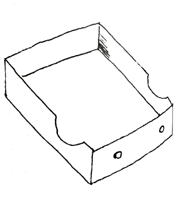

音楽を愛するが故に、私はレコードを集めた。それは、見栄でも道楽でも、思惑でも競争でもなかった。未知の音楽を一つ一つ聴くことが、私に取っては、新しい世界の一つ一つの発見であった。
その頃、日本においては、ワーグナーもベートーヴェンも聴く方法はなかった。劇詩としての『
今から二十幾年前、パデレフスキーやイザイエの名演奏が、レコードとして渡来した時、どんな感激を以てそれに接したか、それは大方の想像に任せよう。続いて入って来た、怪しげなる『未完成シンフォニー』『第五シンフォニー』は、当時の我らに取っては、相対性原理の発見よりも重大な問題であった。
私をレコード道の底無し沼に引き込んでしまったのは、パデレフスキーの
だが、その頃、レコード以外では、メンデルスゾーンの『コンチェルト』も、ベートーヴェンの『第五シンフォニー』も聴く工夫はなかった。やがて、ゲルハルトの歌ったドイツのリードや、フロンザリーの弦楽四重奏曲に食いつく頃、私のレコード熱は全く
関東大震災の翌年、ベートーヴェンの『第九シンフォニー』が初めてレコードされたと聴いた時、私は喜びの余り、「ベートーヴェンの九つのシンフォニーはいかにレコードされているか」という意味の文章を二日にわたって『報知新聞』に連載した。それが、レコード関係の原稿に、私の別号あらえびすを署名した最初である。
その後、英国のレコード雑誌『サウンド・ウェーヴ』や『グラモフォン』や、
私のレコード紹介は、お点が甘いという評判もあった。お世辞が良いとも言われた。が、しかし、ベートーヴェンやワーグナーさえ、滅多に実演を聴くことの出来なかった当時の日本で、レコード以上の実演に接することの出来なかった私たちが、外国の一流演奏家のレコードを驚歎し、讃美し、崇拝したのも無理のないことである。音楽の処女地であった日本に、陳、呉の役目を果すためには、単にレコードの悪口を言って
お蔭様で、――会社とファンたちの努力で、――日本のレコード界は今日の盛大を見ることが出来た。今ではもう、大概の悪口を言っても構わないだろう。レコードはどこにでも汎濫している。我らはその中から、最も良きもの、最も美しきものを採ればいいのだ。
私はもう遠慮をかなぐり捨てなければならぬ。三十年近い道楽の総決算として、良いものは良い、悪いものは悪いと言い切って、紹介主義から、厳選主義に入らなければならぬ。たった一組しかない時は、旧ビクター黒盤の『第五シンフォニー』も珠玉であった。それは
いつでも言うことであるが、私は音楽家でも音楽批評家でもない。新聞記者であり、小説家である。しかし、新聞記者になったのは三十歳を越してからのことで、小説を書き始めたのは四十六歳の時である。音楽愛は少年時代からのことであり、それは道楽に過ぎないと言っても、音楽と私との関係は本職の新聞よりも、副業の小説よりも遙かに遙かに古い。
私は三十年近い間に、一万枚以上のレコードを集めた。私の聴き知っているレコードの数は恐らくその倍にも上ることであろう。私は、この文字通り
この経験、――
私は努めて音楽愛を語り、レコード愛を語る。議論や理屈は極力避けたつもりだ。それは私の柄でもないからである。私は経験を土台にして書き進んだ。従って、一、二回聴いて飽きるレコードを
音楽史的のレコード蒐集に関しては、私に別の著書がある。この書は演奏者が主になっているが、例えばある特定の曲のどのレコードが良いかということを知りたい場合は、巻末の索引によってその曲名をしらべ、本文の演奏者の項を一見すれば、おのずから採るべきレコードが判明することと思う。
電気吹込み以前の骨董レコードについては、いろいろの考えようがあるが、骨董レコードに溺れるのが間違いであると同じように、濫りに骨董レコードを排斥して、新しい吹込みのレコードに大騒ぎするのも、いささか軽佻ではないかと私は考えている。レコードは畢竟、音の記録と保存を使命にしている。古い大芸術家たちの
そんな建前から、私は私一個の記録として、骨董レコードに言及した。骨董レコードの再検討が、近頃世界的風潮の一つでもあることは、まことに興味の深いことであると思う。
本書の稿を続けるうち、私はレコードに関するいろいろの著書を参考にした。が、そのうちで、畏友野村光一氏の『レコード音楽読本』が最も優れたものであり、私の著書に影響するところ甚だ多く、蒙を
後半管弦楽の部は、時日に迫られて、かつての『レコード音楽』編輯者、竹野俊男君を煩わし、私の談話を筆記して貰い、原稿になった上で私が眼を通した。
校正、編輯、装幀、索引等は、藤田圭雄氏の努力と工夫に俟ったものだ。竹野君と併せて、この機会に深甚の謝意を表する。
昭和十四年五月
あらえびす
［＃改ページ］［＃ページの左右中央］
よき曲
よき演奏
よき録音
よき演奏
よき録音
［＃改丁］
［＃ページの左右中央］
［＃改ページ］
日本の音楽界とは言わないが、少くとも、日本における一般人の洋楽趣味を向上させた点において、ラジオと共に、レコードの功績を没することは出来ない。
三十年前、日本は西洋音楽にとって、ほとんど処女地も同様であった。少数の専門家と、先覚者とはあったにしても、一般大衆に、小学校の唱歌以上の洋楽を味わわせる機会もなく、欧米文化の
文学には翻訳というものがあり、絵画彫刻には写真や複製というものがあるが、音楽における限りは、「音」を介するほかに、大衆の趣味に訴えて、その鑑賞の対象となる方法は全くなかった。楽譜や音楽書が山のごとく輸入され、文部省は直轄音楽学校を
西洋音楽が国民の趣味生活に織り込まれたのは、海陸軍軍楽隊の民間演奏に次いで、私は蓄音機とレコード録音法の発達のお蔭であったと信じて疑わない。かつてはヒズ・マスタース・ヴォイスの商標が物語る通り、「人語を発する不思議な機械」に過ぎなかった蓄音機が、いつの間にやら異常なる進歩を遂げ、十九世紀末にはすでに、平円盤の発明と共に、芸術的な音楽を記録し、欧州大戦前に早くも、名曲大曲を、何らかの形で録音する試みに成功しつつあったのである。
かくて我らは、居ながらにして、世界第一流のアーティストの演奏を聴くことが出来た。クライスラー、パデレフスキー、カルーソーが、我らの好むがままに聴かれるようになったのは一九一〇年前後、大正の初期のことであったと思う。
続いて、音に聞くベートーヴェンの『第五シンフォニー』、シューベルトの『未完成シンフォニー』などが、曲りなりながら、レコードを通して聴かれるようになって来た。当時洋楽に興味と情熱とを持った日本のファンたちの喜びは、今日から想像されるような
日本人の音楽趣味は、俄然として高められた。それは一部少数の学生階級の青年であったにしろ、とにもかくにも、小学校唱歌と、少しばかりの軍歌以外に、ほとんど音楽らしきものを耳にする機会にすら恵まれなかったものが、曲りなりではあったにしても、ベートーヴェンを、ワーグナーを、モーツァルトを、バッハを聴く機会に逢着したのである。
日本の洋楽鑑賞界が、レコードによって基礎付けられたことは、やがて、日本の好楽家たちを極めて純なものにした原因でもあった。日本の洋楽趣味は、酒席や、ナイトクラブや、キャバレーから広まったものではない。ただ径十
その後、欧州大戦後の悪い音楽の世界的汎濫の影響を受けて、日本の音楽鑑賞界も、甚だしく毒されたことは事実であったが、我らの
それはともかく、日本人の音楽に対する宗教的情熱と、その理解の深さは、レコードによって音楽趣味を開発したためではあるまいかと私は考えている。ステージも照明もない音楽、社交も、気取りもない音楽が、我らの白紙の心に、レコードを通して
今から十五、六年前、日本を訪問して、帝劇で五日の演奏会を開いたクライスラーが、日本を去ってから、日本の知人たちに漏らした言葉は、「日本の音楽会の聴衆ほど恐ろしいものはない」ということであったと聞いている。
シゲティーも同じようなことを言っていた。そして、モイセィウィッチも、――恐らく日本のコンサートにおいて、演奏家の直面する異常な緊迫感が「油断のならざるもの」を感じさせるのであろう。ある人はこの空気を以て、日本人の音楽に対する野暮ったさと解した。即ち日本の聴衆には、心から音楽を楽しむ余裕がないのではあるまいかと解したのである。
それはさもあるべきことである。日本人の音楽に対する心持には、全く遊びというものはない。三千年の伝統と、幾百千の名作曲家によって築きあげられた洋楽のうちから、あらゆる「精神的なもの」、「役に立つもの」をことごとく吸収せずんば
この点、世界いずれの国に、日本人ほど真剣なものがあろうか。科学に対して、芸術に対して、僅々七十年間に、七百年間の歩みにも
レコードがなかったならば、日本人の音楽趣味と、音楽に対する教養は、決して今日のごときものではあり得ないだろう。ラジオや、実演があったにしても、レコードという競争者刺戟者がなかったならば、日本のラジオやコンサートは、決して今日のごとき曲目ではあり得なかったであろう。
世界のレコード会社は、少くとも日支事変以前までは、日本の市場を勘定することなしに、高級レコードの吹込みを企てることが出来なかった。世界のどこにも、日本ほど、芸術的な高級レコードの消化される国はないからである。ベートーヴェンの『荘厳ミサ』十一枚のレコードが、千組も二千組も売れるのは、恐らく日本以外にはあるまい。同じベートーヴェンの『第五』『第六』『第七』『第九』のシンフォニーは、世界のあらゆる楽団で吹き込まれたレコードが、ほとんど例外なしに日本でプレスされ、いずれも数千組、乃至数万組を消化している。
かつて、英国レコード界の長老マッケンジーが提唱して、フーゴー・ヴォルフ協会のレコードが吹き込まれたとき、英本国は勿論、仏、伊、瑞、独その他全欧州と米国をすぐって、会員数予定の三百に満たず、この計画がほとんど流産におわろうとする間際に、日本の会員約二百名が参加したために、たちまち計画は
今日ではもはやレコードは輸入禁止されている。今さら外国から取り寄せようという不心得者は一人もあるまいが、昔はこうであったという洋楽レコード勃興時代のファンたちの情熱を私は例示したまでである。
当時日本において、高級な音楽芸術に接するためには、レコードによるのほかはなく、日本プレスはまだ創始時代で、協会レコードや、市場価値のないレコードにまでは及ばなかったためでもある。
レコード音楽の特色は、ここで語るまでもあるまい。よき吹込みのレコードを手に入れることが出来さえすれば、我らは、居ながらにして、好むがままの曲を、好むところのアーティストの演奏で、好む時間に聴くことが出来るのである。ラジオも結構には相違ないが、時間と曲目と演奏者を選ぶことは許されない。レコード音楽の方面においては、世界の名曲と称せらるるものは、ほとんどことごとく吹き込まれ、少きは二、三種、多きは二、三十種の異なったレコードを用意することもさして困難ではない。
興に乗ずれば即ち聴き、興が醒めてはなんの遠慮もなくよす、これがレコード音楽の大なる魅力だ。
次に、実演の音楽は、宣伝や、場内の空気や、演奏者の態度や、いろいろの条件に煩わされて、一般の素人には、正しい鑑賞批判は非常にむずかしいものである。音楽に関心と知識を有する者でさえも、しばしば、拙劣な演奏を
ところが、レコードされた音楽は、なんのカモフラージュなしに、幾度でも繰り返して聴かれ、自由な大胆な批判の前にさらされなければならない。
従って、いかなる音楽の素人でも、レコードされた音楽を反覆聴いていさえすれば、一番上等の耳と理解とを持った、音楽批評家以上の批判が下されるわけである。どんなに我慢強い人間でも、下手な演奏は決してくり返して聴く気になれるものではない。
もう一つレコードの重大な特色は、時局下に代用品としての役目を果していることである。
実演の音楽は良いには相違ないが、かつてクライスラーやエルマンは帝劇の特等席十八円という驚くべき入場料を取った。その頃は第二流人でさえも、外国人でありさえすれば、十円より安いのは滅多になかった。我々貧しき勤め人は、一流アーティストを聴くためには、想像以上の犠牲を払わなければならず、昔は
幸い経済上の問題は解決するとしても、日本のごとき、一般家庭に夜分外出の習慣のないところでは、
レコードはここに登場する。日本におけるレコードは、諸種の物価と比較して、決して安いものではないが、それでも、代用品としての役目は充分に果し得るであろう。コルトー、レナー四重奏団、モイーズ、ラフマニノフ等、来朝の噂ばかりで取り消された人たちは、幸いにして
そのレコードをいかにして選ぶべきか。
私はいよいよ本題に到達した。
金に飽かして数千万枚のレコードを求めるのも蒐集の一つであるが、金はあるにしても、よくよくの暇人でなければ、それだけのレコードを聴く時間を持たないのが普通である。
私は、財力と、知恵と、時間との処置に困る人のためにこの書を編んでいるのではない。たった二枚のレコードを求める人のために、あるいは、十枚、五十枚、百枚程度のレコードを集める人のために、幸いにして、日本でプレスされたレコードのほとんど全部と、過去三十年間外国で発売されたレコードの大部分を聴く機会を得た私の経験を語って、蒐集道の参考になれば即ち満足しようと思う。
たった二枚のレコードを求める人があったとしたら、
ピアノならコルトーから一枚、
ヴァイオリンならクライスラーを一枚、
チェロならカサルスの何かを、
室内楽ならカペエのうちから、
そして管弦楽なら、フルトヴェングラーか、ワルターか、メンゲルベルクか、トスカニーニの一枚を薦めるだろう。
私はこの程度の小蒐集から、約千枚、二千枚の大蒐集にまで、この書を役立てようとしている。ヴァイオリンならクライスラーを一枚、
チェロならカサルスの何かを、
室内楽ならカペエのうちから、
そして管弦楽なら、フルトヴェングラーか、ワルターか、メンゲルベルクか、トスカニーニの一枚を薦めるだろう。
蒐集は決して多きを望んではいけない。よき選択は、たった十枚でも、悪き選択の百枚にも匹敵するだろう。
少しも気取らない素直な心持で、本当に良きもの、長く楽しめるもの、正統的な価値のあるものをと心掛けたならば、レコードの蒐集は必ずしも多きを必要としないわけである。
私は二十何年間の蒐集一万枚に上るかも知れない。日本の市場にあるものもないものも「良いもの」でさえあれば、大抵は持っているつもりだが、常に座右に置いて聴くレコードというものは、決して百枚よりは多くない。いたずらに蒐集の数を誇るものは、蒐集に個性のない喫茶店式蒐集に堕するだろう。無用のレコードは叩き潰して、アスファルトの代用品にでもするがいい。真に良きものを集める気になれば、十枚の蒐集にてもまた可なりだ。
レコード蒐集道の法三章は、「よき曲」、「よきアーティスト」、「よき録音」と言われている。三拍子揃ったレコードとして、ファンたちの渇仰を集めるためには、少くとも、これだけの条件は備えなければならない。
「よき曲」と言ったところで、人によって好悪があり、趣味と、知識と、境遇とによって、いろいろに解釈される。ある人はバッハの『カンタータ』をよき曲と解し、ある人はワーグナーの『楽劇』をよき曲と信じ、ある人はドビュッシーの『ペレア』をよき曲とするかも知れない。
しかし、結局はそれも程度問題で、大衆の叡知と興味には、北斗を指す磁石のごときものがあることは疑うべくもない。少くとも本書において私は、その北斗のごとく明らかなる「よき曲」以外のものは扱わないように注意したつもりである。
よきアーティストも、銘々の興味によってかなりの変化がある。ヴァイオリニストだけで言っても、クライスラー以外に興味のない人もあり、ティボーに心酔する人もあり、フーベルマン一点張りの人もあり、シゲティーに法外の興味を持つ人もある。が、しかし、それも程度問題で、第三流以下のヴァイオリニストに興味を感じて、第一流人を無視する人があったとすれば、それは好んで常規を逸する奇矯の態度で、決して万人を共鳴させる道ではない。
世の中には、おのずから定まる声価がある。作曲者の中には、生前極めて薄倖で、死後巨名を博するシューベルトのごとき天才はないではないが、演奏家に至っては、生前全く知られずして、死後有名になったという例は、――蓄音機発達の絶頂においても――まずあり得ないことである。
アーティストの評価は、奇を
私はこの書において、第一流人のレコードを紹介するに止めようと思った。しかし、それではあまりに偏狭になる惧れがあったので、かりに範囲を第二流のアーティストまで引き下げ、芸術家として存在価値の高い人は、なるべく網羅することに努めた。しかし、読者の迷いを防ぐために第三流人は採ることを中止した。厳格な意味から言えば、少しでも下手な人のレコードは聴く必要はない。妥協も遠慮も、レコードの上では全く無用なことだ。なるべくは第一流のアーティストの演奏に限り、第一流人にない曲目だけを、第二流人のレコードで補う程度でありたい。
録音は、会社によって、それぞれの自慢がある。ハイ・フィデリティのビクター、ヴィヴァ・トーナルのコロムビア、ポリファのポリドール、それぞれの特色はあろう。
ビクターのハイ・フィデリティ録音は、分離の美しさと、立体感においては、驚くべき域に達している。恐らく感度の鋭敏なマイクを、演奏者からかなり離して、聴衆と同じ距離から録音するためであろう。この録音は清澄で柔かい。欠点は、音量が弱小で、電気拡大装置の完備した高級蓄音機でなければ、最上の再現がむずかしいことである。
コロムビアは、強大明確な録音だ。この音の鮮麗さにおいては、どの会社の録音も及ばないが、強大な音を溝に盛り過ぎるために、針とボックスがその音量をうけ切れないことがある。近頃はその弊が少くなったが、かつてのコロムビアに、時々音の割れるレコードのあったのはそのためである。
ポリドールは柔かくて大きい。わけてもピアノの音に特色があり、人によっては、この素朴な録音を好きな向きもあるが、ホール・トーンを入れ過ぎて、無用に濁った響きを響かせる癖がないとは言えない。
テレフンケンは、かつて固過ぎる嫌いがあったが、近頃その欠点を解消して非常に良くなったようだ。まだ幾分の柔かさを欠くのは、コロムビアの強さ、ビクターの弱さと共に特色的でもあるだろう。
しかし、吹込み技術は日進月歩だ。昨日の吹込みは今日の吹込みに比べるともう悪い。よきが上にもよき吹込みを望む人には、最新の、より最新のレコードを薦めるのほかはない。もっとも、歌やヴァイオリンの場合には、さして古さが目立たない。わけても歌のレコードのごときは、電気以前の吹込みで、今日なお骨董的価値の高いもののあるのは、人の肉声の音域に関することで、ピアノや管弦楽伴奏の不満足を我慢すれば、骨董レコード必ずしも排斥すべきではないと私は信じている。下手は新しい録音ほど下手さが目立つわけで、歌における限り、電気以前の上手のレコードは認められていい。
が、室内楽、ピアノ、管弦楽などは話が違う。ピアノや室内楽はまだ我慢するとしても、管弦楽は断じて我慢が出来ない。三年、五年と経った管弦楽のレコードは、口惜しいことではあるが、その価値を甚だしく損じる。
やかましくせんさくをすると、三拍子揃ったレコードというものは、案外に少いものである。幾千枚のレコードのうちから、真に三拍子揃ったレコードを、三十枚なり五十枚なり選択して、それを蒐集の目標とし、日常の慰安にするのは、素人の好楽者に取って決して悪くないことだと思う。（研究者はこの限りでない）
レコード音楽はこうして限りもなく進歩する。そして、我らの教養となり、娯楽となり、慰安となり、明日の精力の源泉ともなるだろう。
フルトヴェングラーが言ったように、「演劇を保護するために、映画を亡ぼしてはいけない。――同じように、コンサート音楽を保護するために、レコード音楽を亡ぼしてはいけない」
書斎にも、農村にも、商店にも、レコード音楽は汎濫する。それは決して悪いことではない。要は、そのレコードの選択だ。酒席の興を添える音楽を農村へ持って行ってはいけない。紅燈緑酒の間の音楽を、家庭に持ち込んではいけない。
国民の教養のために、よき音楽が、もう少し尊敬されなければならぬ。よき演奏家、よき録音、その三拍子揃ったもの、誰が聴いても恥かしくないものを私は掲げて行く。
が、我らの日常生活を
［＃改丁］
［＃ページの左右中央］
［＃改ページ］
いかなる芸術でも、その最後の値打を決定するためには、創作者、演奏者の人格にまで戻らなければならない。不良少年型のいわゆる天才は、一時ジャーナリズムの波に乗って、天下の人気を背負って立つことがあろうとも、それは全く稲妻のようにはかない一閃光で、永遠に人の心を高め得るものではない。
こう言う私の言葉が、道学先生らしい
クーベリック、フーベルマンなどは、少くとも十年あるいは十五年前までは決してクライスラー以下ではなかった筈である。それが今ではどうだろう。この一人をクライスラーと並べるのが、なんとなく非常識にさえ思われるではないか。
フリッツ・クライスラーを偉大ならしめたのは恐らく欧州大戦であろう。オーストリー軍に参加し、傷ついて帰ったクライスラーの著書『
戦線から退いたクライスラーは、一挺のヴァイオリンを
しかし、世界大戦は終り、平和条約が締結された後、――まだ仏国の
これが即ちクライスラーの良さであり、クライスラーの偉大さである。大芸術家といえども人間であり、国民であるのだ。現代の有名な提琴家で、恩師の夫人と夜逃げした人さえある中に、入っては国民感謝の的となり、出でては敵国に平和の使として、国境を超えて親しまれるということは、人生の会心事でなくてなんであろう。クライスラーは、ヴァイオリンを捨てても、人間として、褒められ
クライスラーの弾く小曲に、くめども尽きぬ人間味の溢れるのは、この人間クライスラーの心の中から流れ出る情味のためではなかろうか。クライスラー老いたりと言われながらも、この人のヴァイオリンの音には、聴く者の胸に食い入る「何物かが」あることは否む由もあるまい。
「小曲はクライスラー」私はいつでも原則的にこう言っている。大震災の年日本を訪ね、帝劇で五日間独奏会を開いた当時のクライスラーは、四十幾歳の脂の乗り切った時で、あの時弾いた小曲の美しさは、全く筆舌の尽すべきではなかった。魂の底から揺り上げるような感激にひたって、幾千の聴衆は
私の場合で言っても、ヴァイオリン・レコードのコレクションのうち、電気以後の吹込みを全部集めたのは、クライスラー一人だけで、電気以前の旧吹込みでさえ、私は三、四十枚は持っているつもりだ。「小曲に示した」クライスラーのうまさというものは、全く比類のないものである。この甘さ、柔かさ、温かさ、そして人間らしさは、何にたとえることが出来るだろう。
残念ながらしかし、電気以前のクライスラーの全盛時代は蓄音機が幼稚な上、吹込技術が悪く、蓄音機が発達し、吹込技術が完成した今日では、惜しいことにクライスラーが、
それでもまだ「小曲はクライスラー」という言葉は、昔のまま通用させることが出来るだろう。少くとも、
『支那の鼓』『カプリス・ヴィノア』（洋楽愛好家協会レコード）
『ルイ十三世の歌とパヴァーヌ』（一五〇三）
『ロンディーノ（ベートーヴェンの主題による）』（一三八六）
『ロザムンデ舞蹈楽』（一五〇五）
『愛の歓び』『愛の悲しみ』（六六〇八）
『タイース瞑想曲』（ＪＤ一三）
『スラブ舞蹈曲第三番』『インディアン・ラメント』（七二二五）
『メヌエット』（バッハ）『ガヴォット』（ベートーヴェン）（一一三六）
『スーヴニール』（一三二五）
『ルイ十三世の歌とパヴァーヌ』（一五〇三）
『ロンディーノ（ベートーヴェンの主題による）』（一三八六）
『ロザムンデ舞蹈楽』（一五〇五）
『愛の歓び』『愛の悲しみ』（六六〇八）
『タイース瞑想曲』（ＪＤ一三）
『スラブ舞蹈曲第三番』『インディアン・ラメント』（七二二五）
『メヌエット』（バッハ）『ガヴォット』（ベートーヴェン）（一一三六）
『スーヴニール』（一三二五）
（クライスラーのレコードは全部ビクター）
以上八枚のレコードは、クライスラーの小曲中の、最も親しめるものと言うことが出来るだろう。曲と演奏の厳密な意味における傑作はまた別にある。しかし、私はそんなやかましいことを抜きにして、クライスラーを楽しみ、ヴァイオリン・レコードの美しいものを望む人に、以上八枚をすすめることを
クライスラーは好んでウィンの古民謡並びに忘られた昔の作曲家の小曲を捜し出し、それを編曲して、ヴァイオリン曲としての新しい生命を吹き込んだと言われている。『愛の歓び』『愛の悲しみ』『ウィン狂想曲』『思い出の歌』等その代表的なもので、その数は恐らく十曲に上るであろう。しかし最近それらのものが、ほとんどことごとくクライスラー自身の創作で、全然「種」のないものであったことが明らかにされ、世間は二度
クライスラーには、特別の甘さがあり、比類のない情味がある。それをレコードで満喫するためには、クライスラーの作曲または編曲を選ばなければならない。『スーヴニール』や『セレナーデ』も悪くはないが、本当のクライスラー、クライスラーらしいクライスラーを味わう人のために、私は、前掲八枚のレコードのうち、『
『
『カプリス・ヴィノア』は、題名の示すがごとく、
よく話したことであるが、大正十二年の春クライスラーが日本を訪ねた時、その帝劇五日間の演奏会を全部聴くために、私は危く命を棒にふるところであった。その頃高熱を発して、医者に外出を禁じられていたにもかかわらず、私は苦悩を忍んで毎夜帝劇に通い、とうとうその後四カ月の静養を要するほどの大患になってしまったものである。
私はしかし少しも後悔はしていない。あの時医者の言葉を守って、病床に引き籠っていたなら一週間か十日の風邪で済んだかも知れないが、その代り私は、一生クライスラーの芸術に触れる機会を失ったかも知れない。「危いことであった」と思うのは、私自身の病気のことではなく、クライスラーを聞き損ねたかも知れないという心配であった。
クライスラーの演奏会は、全く命がけで聴く値打のあったものである。私はあの時のバッハの『シャコンヌ』を記憶している。ブルッフの『コンチェルト』を記憶している。『クロイツェル・ソナタ』を記憶している。しかし、それにも
アンコールで弾いた名もなき小曲（実は曲名を記憶していないので）の珠玉的な輝きと魅力は、何に
私は乏しい
四カ月の後、病床から起き上ると、あの関東の大震災だ。私の家は幸い災厄を免れたが、東京のレコード屋は、新宿の出羽屋と
話は甚だしく余談にわたるが、クライスラーの良さを語るためには、ここまで恥を打ちあけなければなるまいと思う。
クライスラーの小曲が楽しくも嬉しいと言っても、レコード片面のアンコール向きの小曲を以て大クライスラーを論ずるのは、あたかも、髯を撫して竜を論ずるごときものである。老いたりといえどもクライスラーが、当代提琴界の王座に、儼然たる儀容を保つ
クライスラーのレコードに入れた最初の大曲というものは、電気以前のＨＭＶ及びビクターに入ったモーツァルトの『ヴァイオリン協奏曲第四番』四枚であった。管弦楽団は英国のもので、指揮は先頃物故したランドン・ロナルドであったが、平明枯淡なうちに、津々たる滋味を湛えた演奏で、その後誰がこの曲を弾いて、どんなすぐれた録音でレコードしても、これほどのものがなかったように記憶している。もっとも、電気以前の
電気吹込みになってから入った最初の大曲レコードは、一九二七年頃に吹き込んだ、
『ヴァイオリン協奏曲』（ベートーヴェン）（八〇七四―九）
『ヴァイオリン協奏曲』（メンデルスゾーン）（八〇八〇―三）
『ヴァイオリン協奏曲』（メンデルスゾーン）（八〇八〇―三）
このレコードについては、私は旧著の中で極力支持し讃美している。が、もう一度当時の感激をここにくり返さなければならない。レコード音楽というものが、筋立った曲を聴かせるようになってからもはや十何年になるが、私の経験の範囲内において、ベートーヴェンの『第九』の最初のレコード以外に、これほど世界のファンたちの感激を齎したものはなかったと思う。
第一番にクライスラーの音の美しさが、この大曲を本質的に
レコードではその音の美しさが全部そのまま記録されているとは言い難いが、少くとも眼をつぶって三分の一面だけ聴いても、――いや、ほんの二、三小節を聴いただけでも、クライスラーの音は、少しく馴れた人には言い当てることが出来るだろう。クライスラーのヴァイオリンの音というものは、それほど美しく、それほど特色的なものである。
第二に、クライスラーの演奏を価値付けるものは、その曲に対する愛情と、クライスラー自身の人間味である。クライスラーのごとき大家にして、クライスラーのごとく謙虚に見える人は少く、クライスラーのごとく、曲に打ち込んだ愛情を示す人も少い。クライスラーの演奏を聴いていると、
メンデルスゾーンとベートーヴェンの二つの協奏曲は、当時鎌倉に御滞在の、さる高貴の御方の有難い思し召しで私のコレクションに加わり、第一回の演奏は、主婦の友社で行われた。もう十二、三年前――昭和の初め頃のことである。このレコードを番外に持ち出すと、折角プログラムを飾った珍品レコードなどは、全くそっちのけであった。私は演壇に飛び上って、紹介の挨拶を始め、恐ろしい興奮と期待の
その後間もなく、
『ヴァイオリン協奏曲』（ブラームス）（ＪＤ五三八―四二、名曲集五七〇）
三大ヴァイオリン協奏曲は、こうしてレコードされた。その後、シゲティーのもの、フーベルマンのもの、ギーゼキングのもの、クーレンカンプのもの、等々、
ところで、その後十年の歳月は流れ、さしもの珠玉盤も、吹込みの古さは蔽うべくもない有様になった。ＨＭＶ会社が、老クライスラーを再び
そのレコードが日本ビクターにも
『ヴァイオリン協奏曲＝ホ短調』（メンデルスゾーン・作品六四）
 旧 ベルリン国立歌劇場管弦団 ブレッヒ指揮
新 ロンドン・フィルハーモニック管弦団 ロナルド指揮
旧 ベルリン国立歌劇場管弦団 ブレッヒ指揮
新 ロンドン・フィルハーモニック管弦団 ロナルド指揮
『ヴァイオリン協奏曲＝ニ長調』（ベートーヴェン・作品六一）
旧 ベルリン国立歌劇場管弦団 ブレッヒ指揮
新 ロンドン・フィルハーモニック管弦団 バルビロリ指揮
『ヴァイオリン協奏曲＝ニ長調』（ブラームス・作品七七）
旧 ベルリン国立歌劇場管弦団 ブレッヒ指揮
新 ロンドン・フィルハーモニック管弦団 バルビロリ指揮
（ヴァイオリン） クライスラー
旧 ベルリン国立歌劇場管弦団 ブレッヒ指揮（八〇八〇―三、名曲集一六）
新 ロンドン・フィルハーモニック管弦団 ロナルド指揮（ＪＤ五九三―五、名曲集五七七）
『ヴァイオリン協奏曲＝ニ長調』（ベートーヴェン・作品六一）
（ヴァイオリン） クライスラー
旧 ベルリン国立歌劇場管弦団 ブレッヒ指揮（八〇七四―九、名曲集一三）
新 ロンドン・フィルハーモニック管弦団 バルビロリ指揮（ＪＤ八四二―七、名曲集六二五）
『ヴァイオリン協奏曲＝ニ長調』（ブラームス・作品七七）
（ヴァイオリン） クライスラー
旧 ベルリン国立歌劇場管弦団 ブレッヒ指揮（ＪＤ五三八―二、名曲集五七〇）
新 ロンドン・フィルハーモニック管弦団 バルビロリ指揮（ＪＤ九三七―四一、名曲集六四一）
クライスラーといえども、十年の歳月は決して短くない。腕に歳を取らせないと言っても、六十歳を超したクライスラーに、五十歳前後の輝きと若さがあろう筈はないのである。クライスラーは新吹込みのコンチェルトにおいて、往年の甘さと若さを失ったことは当然であるが、甘さと若さに代るに、枯淡な滋味を加えたことも、また勘定外に置くわけには行かない。クライスラーは確かに歳を取った。その演奏において失うところの美しさと魅力は、おそらく三十パーセントを下らないだろう。その代り老来
だがしかし、録音法の進歩において加えたところの美しさは甚だ少くない。先の三大協奏曲は、電気吹込みの極めて初期のものであり、後の三大協奏曲は、進歩発達の絶頂にあるかに思われたこの一両年来のものである。その音の柔かさと、ふくらみと、輝きとにおいて、管弦楽の各楽器との分離において、先の吹込みのものとは、まったく同日を以て語ることの出来ないものがあるだろう。
もう一つ、管弦楽団の比較と指揮者の比較が、新旧レコードの甲乙に、大きな問題を遺している。ドイツの管弦団、わけても
英国の管弦団は、近来著しく質を向上したと言っても、
指揮者ロナルドは老巧練達の士であるが、バルビロリは第二流の人で、さして優れた指揮者とは言い
この新旧三大コンチェルトが、管弦楽及び指揮の点においては、ブレッヒ指揮の古い方が優っていることは、百人が百人異論のないところだ。
トータル・サムは銘々の考えようで決するであろう。私自身は新旧共に座右に備え、その時の気分に応じて聴くのを楽しみとしている。さながら、これは新旧六聯の
クライスラーのレコード界における大業績として、ベートーヴェンのヴァイオリン・ピアノ・ソナタ十曲の吹込みは逸することの出来ないものであった。このレコードは『ベートーヴェン・ヴァイオリン・ソナタ協会』の名において売り出された（第一、二輯は七枚ずつ、第三、四輯は六枚ずつ）二十六枚の大物で、予約形式で売り出されたために、カタログには掲載されていない。
その第一輯は、『ソナタ第一＝ニ長調（作品一二の一）』『ソナタ第二＝イ長調（作品一二の二）』『ソナタ第三＝変ホ長調（作品一二の三）』
第二輯には『ソナタ第四＝イ短調（作品二三）』『ソナタ第五＝ヘ長調（スプリング）（作品二四）』『ソナタ第八＝ト長調（作品三〇の三）』
第三輯には、『クロイツェル・ソナタ（作品四七）』『ソナタ第七＝ハ短調（作品三〇の二）』
第四輯には『ソナタ第六＝イ長調（作品三〇の一）』『ソナタ第十＝ト長調（作品九六）』
以上の組合せで吹き込まれている。第二輯には『ソナタ第四＝イ短調（作品二三）』『ソナタ第五＝ヘ長調（スプリング）（作品二四）』『ソナタ第八＝ト長調（作品三〇の三）』
第三輯には、『クロイツェル・ソナタ（作品四七）』『ソナタ第七＝ハ短調（作品三〇の二）』
第四輯には『ソナタ第六＝イ長調（作品三〇の一）』『ソナタ第十＝ト長調（作品九六）』
ベートーヴェンのヴァイオリン・ソナタはほとんどことごとくが華麗であり、ドイツあたりでは、十曲の連続演奏を聴くことも決して珍しくないと言われているが、日本では実演に接する機会の極めて稀な曲もあり、十曲全部の録音は、いろいろの意味で興味の深いことである。
この中で、『クロイツェル・ソナタ』と『スプリング・ソナタ』の有名なことは、ここに
とにもかくにも、この二曲は極めて代表的なもので、これを以てベートーヴェンのヴァイオリン・ソナタは尽きるように思う人もあるが、それは大変な早計である。ベートーヴェンのヴァイオリン・ソナタを論ずる場合には、むしろ第十番目のト長調のソナタの雄渾壮麗さを逸するわけには行かない。
以上十曲のソナタに示したクライスラーの演奏は、若かりし日のクライスラーに比べて、やや枯淡の趣はあるにしても、依然としてこの曲のスタンダードを示すもので、老境甘美さは失ったにしても、
クライスラーのレコードを蒐集する人は、クライスラー作曲または編曲の小曲二、三に、三つの協奏曲、それにヴァイオリン・ソナタ協会レコードを加えてまず満足すべきである。それ以上のレコードは、特殊の興味または必要によって、適当に追加すべきであると思う。電気吹込み以前の骨董レコードについては、別の項に説く機会があるだろう。
フリッツ・クライスラーは、一八七五年二月二日
一八八九年名ピアニスト、ローゼンタールと共に米国に
従軍の体験を描いた『塹壕中の四週間』はクライスラーの文筆の士としての地位を確保するもので、その他趣味人として、温厚の長者として、一世の尊崇を受けていることは人の知るところだ。作曲はヴァイオリン用の小曲のほか、『弦楽四重奏曲』が幾度かレコードされている。イザイエ歿後、名実共に提琴王として、斯界に君臨していることは大方の知るところである。因みに、日本来遊は一九二三年、即ち大正十二年の四月で、クライスラー四十八歳の最も脂の乗った時であった。
［＃改ページ］
クライスラー以前に、日本人に親しまれたのは、ミッシャ・エルマンである。クライスラーが日本を訪ねた前々年（大正十年二月）、「楽聖」という触れ込みで日本へ来たエルマンの武者振りは全く我々世間見ずの度胆を抜くに充分であった。その頃のエルマンはまだ二十八、九歳の青年であったが、アウアー門下の逸足として、世界的に大名を馳せ、日本を訪ねるのは、何がなし、有難いことのように思えたものであった。
エルマンのヴァイオリンを特色づける、いわゆるエルマン・トーンは、その頃最も脂の乗り切った時で、その後十幾年、昭和十二年に日本を訪ねたときは、もはや昨日のエルマン・トーンはおもかげしか残っていなかった。
若い頃のエルマンというものが、全く魅力満点であったことは誰でも認めている。エルマンの音の豊麗な美しさは、クライスラーとは全く違ったもので、さらに脂の強く、
エルマンの演奏はクライスラーとは正反対で、ステージの上を、極めて活発に歩き廻り、目につくほど猛烈に身体を動かした。それはしかしなんでもないことだ。エルマンは芸術家であり、そして充分過ぎるほど、我らを陶酔境に導いてくれたのである。ステージで動くくらいのことになんの不思議があろう。
世界的なヴァイオリニストに接したことのない、その頃の聴衆は、ただ随喜し
（因みに、翌々年来朝したクライスラーは、十五円、十三円、十円、四円、二円で、同じ年のゴドウスキーは十円、七円、二円、一円であった。エルマンと同じ年に来たシューマン・ハインクは十二円五十銭、十円五十銭、七円五十銭、三円六十銭、二円と刻み、大正十二年のハイフェッツ、その後のガリクルチ、マッコオマックなどは皆十円組であった）
余談が長くなり過ぎるが、エルマンは電気になって、遙かに尾鰭を添えたが、幾分
エルマン・トーンというものは、全く特色的なトーン・カラーで、かつての神童エルマンが、一躍世界楽壇の寵児になったのも、一にあの幻妙不可思議な美しい
今から十五、六年前、エルマンの最も華やかなりし頃のヴァイオリンの音色は、全く形容を絶するものがあった。それは妖艶無比な
エルマン・トーンは、妖艶極まるものであったが、当然の結果としては多少の下品さを持つこともまた免れなかった。潔癖なディレッタントたちは、その頃からエルマン・トーンを排し、ひいては、アウアー門下に累を及ぼしたのも無理のないことである。
話は岐路に入るが、先年、アメリカで物故したレオポルド・アウアーは、近代ヴァイオリンの巨匠であるばかりでなく、名ヴァイオリニストの生みの親として、極めて巨大な存在であった。十九世紀の末葉から、二十世紀の初頭にかけてのヴァイオリン教授としての巨大な存在は、ヨアヒム、マッサール、セヴシック、フバイ等、甚だ少くはないが、なかんずく帝政ロシア時代のセント・ペテルスブルグに門戸を張ったレオポルド・アウアーほど、多くの名提琴手を生んだ人はない。
エルマン、ジンバリスト、ハイフェッツ、パーローを始め、最近欧州の楽壇に頭角を現わしたミルシュタインに至るまで、レコードで知られているのだけでも恐らく十人を下るまい。そのアウアー門下のヴァイオリニストに共通の特色は、いずれも、
関東大震災の報がアメリカに伝わった時、第一番に起って、
エルマンの良さはそこにあると思う。彼の直情径行的な性格は、あらゆる場合に「上品ぶり」も「気取り」もせず、あるがままの野趣と魅力とを発散させる。彼は食卓上のバタさえ知らなかった――と大田黒氏は書いている。それは恐らくエルマンの冗談であったかも知れないが、とにかく、バタを知らないことを冗談にするほど、エルマンは野蛮さと稚気とを持っているのだ。
エルマンの小曲に現われた驚くべき魅力は、この天賦の無邪気さと、野蛮的な美しさに原因する。電気以前のエルマン・レコードが、クライスラーの何倍も売れた事実は、恐らく今日の常識では想像も及ばないことであろう。かつてのエルマンというものは、それほど偉大なる存在であったのである。
エルマンのヴァイオリンの大曲は、決して多くはない。
『ヴァイオリン協奏曲第二番＝ホ長調』（バッハ）
（ヴァイオリン） エルマン
管弦団 バルビロリ指揮
（ＪＤ一六八―七〇）
『ヴァイオリン協奏曲＝ト短調』（ヴィヴァルディ）（ヴァイオリン） エルマン
ニュー・シンフォニー管弦団 コリングウッド指揮
（ＤＢ一五九五―六）
『ヴァイオリン協奏曲＝ニ長調』（チャイコフスキー）（ヴァイオリン） エルマン
ロンドン交響管弦団 バルビロリ指揮
（八一八六―九、名曲集七九）
以上三曲しか入っていない。右のうち、バッハのコンチェルトは古典の名曲ではあるが、エルマンの演奏は艶麗を極めて、知的な少年メニューインの演奏以上とは思われない。（日本のレコード批評家はむしろエルマンに左袒したが、私は発売当時からメニューインを支持し続けている）
チャイコフスキーの協奏曲は、当然エルマンのものであるべき筈だが、不思議なことにこれもフーベルマンの
ヴィヴァルディの協奏曲は、エルマンの大曲レコードとして、唯一の傑作であろうと思う。これは安心して薦められるものであり、何人も楽しめるものである。
これを要するに、エルマンのレコードは、二、三、小曲に傑出したものがあり、一般のファンたちは、『アヴェ・マリア』『Ｇ線上のアリア』『メヌエット』の程度に満足するか、でなければ『ヴィヴァルディの協奏曲』を一曲備えて充分とすべきである。変った曲を好む人のために、私は『飾らぬ打明け』をあげておくだけだ。
ミッシャ・エルマンは一八九二年、ロシアのタルノイエに生れた。父はロシア系の
一九〇二年、十歳のエルマンの演奏を聴いた巨匠アウアーは、驚喜してペテルスブルグ音楽院に入学させ（猶太人の音楽院入学は破格的なことであった）、後二年アウアー門下の俊秀としてデビューし、一九〇八年米国を訪ね、天才少年として世界的一流人に伍するに至った。
［＃改ページ］
ティボーは日本人には親しみの深いヴァイオリニストである。前後二回の来朝もその親しみを
ティボーの楽壇出現は極めて立志伝的で、カフェーの楽団でヴァイオリンをひいていたのを名指揮者コロンヌに見出され、その楽団に席を与えられて、二年後にはコンセール・コロンヌの独奏者として立ったと言われている。カフェーのヴァイオリン弾きからフランス一流の管弦団へ――、この過程は映画『オーケストラの少女』が教えるごとく、いかに困難なものであるか言うまでもあるまい。
ティボーはしかし、単なる街のヴァイオリン弾きではない。その前既に
今日のティボーの演奏は、老大家中では最も新鮮な趣味と、近代的な純粋性を持ったものである。ティボーの思想には、十九世紀の誇張されたセンチメンタリズムの殻は見出されない。ティボーは、若い現実主義者、即物主義者たちにくらべると、夢も詩もある人だ。が、その演奏には、もう旧思想の
ティボーの演奏において感ずるものは、美しさと弱さである。気高さと頼りなさである。これはしかし、押し切ったモダニストたちに比べて、拳闘的な圧迫を感じさせないだけでも嬉しいものである。従ってティボーは、
ティボーの実演及びレコードを通して、最も美しかったものは、
『ビクター名演奏家秘曲集』に採ったエックレスの『ソナタ』、最近ＨＭＶに入ったというモーツァルトの『ロンド』などを採るべきであろう。
バッハの『ヴァイオリン・ソナタ第六番』の前奏曲とロンド風のガヴォット（ビクター・ＪＥ九六）を入れた十
組物のティボーは、コルトーやカサルスとのコンビによって、その真価を発揮する。電気の初期に入ったモーツァルトの『協奏曲＝変ホ長調』は当時名盤とされたが、録音が悪いので、今ではレコード史の背後に葬られた。ティボーを合奏者としたレコードのうち、最もすぐれたものは、
『協奏曲＝ニ長調』（ショーソン・作品二一）
（ヴァイオリン）ティボー
（ピアノ）コルトー
弦楽四重奏団
（ＤＢ一六四九―五三、名曲集五〇一）
『クロイツェル・ソナタ』（ベートーヴェン・作品四七）（ヴァイオリン）ティボー
（ピアノ）コルトー
（ＪＤ一三四九―五二、名曲集七〇八）
『ヴァイオリン・ソナタ』（ドビュッシー）（ヴァイオリン）ティボー
（ピアノ）コルトー
（ＪＤ五九―六〇）
『ヴァイオリン・ソナタ＝イ長調』（フランク）（ヴァイオリン）ティボー
（ピアノ）コルトー
（八一七五―八、名曲集八一）
以上四曲、ことごとく傑出したレコードであるが、強いて等級を付したならば、フランクのソナタを以て第一とし、ショーソンのコンチェルトを以て第二とし、クロイツェル・ソナタと、ドビュッシーのソナタは、第三位に置かるべきものであろう。
フランクのソナタは、古今のヴァイオリン・ピアノ・ソナタ中でも屈指の名作で、この曲に匹敵するものを、私は幾つも知らない。極言することを許してもらえるならば、あらゆるヴァイオリン・ピアノ・ソナタ中、最高、至純、至美のものであると言いたいくらいである。ベートーヴェンのソナタのうち、僅かに一、二のものが、これと美しさを争うであろう。ブラームスのソナタのうち、これもほんの一つか二つが、辛くも、このフランクのソナタの深さと高さに追従するであろう。しかし、美しさと深さと、高さと浄らかさを兼ね備える点においては、ベートーヴェンもブラームスも、――時代と環境のハンディキャップはあるにしても、フランクの名品の敵ではなかったのである。
フランクはこの曲において、その全生涯の思想と信仰の過程を描いたとも見られている。この曲には、フランクの人格が反映し、その信仰の奥義が
バッハのある曲を除いて、フランクのソナタほど気高く、フランクのソナタほど精神内容を有する曲が幾つあったであろう。この曲から味覚する、浄らかな悩みと、気高い歓びは、我らの生活に、常に新しきものを寄与して
フランクの有名なシンフォニーと弦楽四重奏曲は、古今の傑作として
この曲のレコードは、電気以後のだけでも七、八種類を算するだろう。が、吹込みはやや古くとも、ティボー、コルトーの組合せに及ぶものは、ただの一つもなかった筈である。恐らく、ティボーのラテン人らしい潔癖さと、コルトーの精練された技巧と、それから、二人を包むフランクの空気が、この完成美を示してくれるのであろう。
ティボーのヴァイオリンは、典雅な趣を有することにおいては当代の第一人者である。それは、しばしば弱々しく、たよりない。が、デリケートな美しさ、技巧を超越した風格、霊感を心から心へ伝える境地に至っては、クライスラーにもない高いものがあるだろう。若くて芸術的な人たちはたくさんあるが、ある者は人間としての成熟さがティボーに及ばず、ある者は年少気を負うていても、技巧において破綻を示すことがしばしばある。
ティボーには技巧があり、人間としての円熟さがある。クライスラーほどにも聴かせようとはせず、フーベルマンのような露骨な征服欲を見せることもしない。
ショーソンは近代フランスの彗星的作曲家で、その伝記の
『クロイツェル・ソナタ』は、風格の高さと、趣味の純粋さにおいて一頭地を
深夜、竹針を
ドビュッシーの『ヴァイオリン・ソナタ』は近代ヴァイオリン・ソナタ中の名篇だ。その趣味の新鮮さと、知的な美しさは比類の少いものである。ティボーとコルトーの演奏は、最高の表現で、共通せる国民性の安らかさと、純乎たる理解の輝かしさがある。だが、ドビュッシーのヴァイオリン曲においては、もはや素人好きのする甘美な旋律などは見出されない。この曲に対して興味を有するためには、少しく知的な訓練を必要とするだろう。
ティボーのレコードを求むる人に、私は一枚物の中からグラナドスの『スペイン舞曲』（ＪＤ六五二）とエックレスの『ソナタ』をすすめておこう。さらにもう一、二枚を加えるなら、ドビュッシーの『亜麻色の髪の娘』とバッハの『ヴァイオリン・ソナタ第六番』を挙げるほかはあるまい。組物はフランクの『ソナタ』とショーソンの『協奏曲』の二つだ。この二曲には――吹込み直しのない限り、絶対に後悔はあるまい。続いて『クロイツェル・ソナタ』も、充分自信を以て薦められるレコードであろう。
ジャック・ティボーは一八八〇年、仏国のボルドーに生れた。
ティボーはヴァイオリン独奏者として当代の第一流であるが、ピアノのコルトーと組み合わせられることによって、その魅力は倍加する。これほどのよきコンビは世界の楽壇にも比類のないところだろう。さらにカサルスを加えて、カサルス・トリオとしての芸術的価値は、恐らく世紀的なものと言っても差支えあるまい。カサルス・トリオについては後に室内楽の項に詳説する。
［＃改ページ］
新聞紙は一時ブロニスラウ・フーベルマンの自動車事故による負傷と、再起不可能を伝えて世界の好楽家を落胆せしめたが、一九三八年に入ってから、幸いにして快癒の見込みが立ち、一部には既に再起をさえ伝えて、再びこの快刀乱麻を断つごとき一代の快演奏に接し得る望みを我らに与えた。
フーベルマンは一八八二年の生れで、僅かに五十六歳、ティボーより二歳、クライスラーより七歳の弟だ。自動車事故などのために葬るのはあまりに惜しい。精力と覇気とを特色とするフーベルマンが、枯淡平明な老境に入って、別の「味」を出すのは、恐らく今後の健康に期待しなければならないと思う。
少しく私は、フーベルマンについてファンの常識程度のことを語ろう。
ブロニスラウ・フーベルマンは、パデレフスキー、ゴドフスキーらと共に、
フーベルマンの栄誉は、クライスラーにおけると同様、全く国境と民族の差別を超え、一時は、クライスラーをさえ圧して、イザイエ亡き後の第一人者を以て擬せられたことさえある。世界を
写真で見るフーベルマンは、拳闘選手のごとく逞しい風貌を持っている。その印象は力と野性の
実演を聴いた人の話によると、フーベルマンのヴァイオリンの「音」は、予想を全く裏切って、甚だ小さいものだそうである。小さくはあるが、非常に緻密な、美しいものだということである。あの風貌と、レコードに録音された音の強大さから考えて、フーベルマンの音が甚だ小さいということは、全く想像を絶したことであるが、それは近代電気吹込みのトリックで、さもあるべきことであり、かつ甚だ愉快なことでもあると思う。
フーベルマンのレパートリーは甚だ広汎で、好んで古典ヴァイオリン曲、並びにベートーヴェン以後のロマン派の名曲をマスターする一方には、クライスラーやティボーやシゲティーが振り向いても見ないような、近代ヴァイオリニストたちの、技巧のために書かれた曲、例えばサラサーテのものなどを好んで演奏する傾きがある。一部神経質な清教徒的好楽者たちには、まことに我慢のならぬことであろうが、同時に、ヴァイオリン音楽を無条件に愛するものにとっては、これはまた有難きことである。この人の技巧的な小曲、例えば、サラサーテの『ホタ・ナヴァラ』や『ロマンツァ・アンダルーツァ』のごときは、アウアー門下の技巧家たちには、企て及ばない精練と、美しさがあるからである。
一枚物の傑作は、ブランスウィック時代から甚だ少くない。ブランスウィックの電気に入った唯一のレコード『ホタ・ナヴァラ』などもその一つであろうが、これは今手に入れる見込みはほとんどない。日本パルロフォンは幸いにして全部コロムビアにプレスされ、約七枚の（組物を除き）レコードを持っているが、そのうちで代表的なものを選ぶとなれば、
バッハの『Ｇ 線上の歌調 』（Ｃ・Ｊ七七七九）
シューベルトの『アヴェ・マリア』（Ｃ・Ｊ七九〇一）
シューベルトの『アヴェ・マリア』（Ｃ・Ｊ七九〇一）
組物は、繰り返して言うがチャイコフスキーの『協奏曲』を傑作中の傑作とし、次いで、好む人のためにはベートーヴェンの『クロイツェル・ソナタ』（コロムビア傑作集一一二）をすすむべきであろう。それについては、別に書くことにする。
フーベルマンの傑作は、なんと言っても、チャイコフスキーの『ヴァイオリン・コンチェルト』ほか二、三の大曲にある。（フーベルマンのレコードはすべてコロムビア）
『ヴァイオリン協奏曲＝ニ長調』（チャイコフスキー・作品三五）
（ヴァイオリン）フーベルマン
伯林国立歌劇場管弦団 シュタインベルヒ指揮
（Ｊ七五五〇―三、傑作集八六）
『ヴァイオリン協奏曲＝ニ長調』（ベートーヴェン・作品六一）（ヴァイオリン）フーベルマン
維納フィルハーモニック管弦団 セール指揮
（Ｊ八四九一―五、傑作集二二一）
『西班牙交響曲』（ラロ）演奏 同上
（Ｊ八三二〇―二、傑作集一九五）
『協奏曲第二番＝ホ長調』（バッハ）維納フィルハーモニック管弦団 ドブロウェン指揮
『協奏曲第一番＝イ短調』（バッハ）維納フィルハーモニック管弦団 ドブロウェン指揮
（Ｊ八三四六―七）
『協奏曲第三番＝ト長調』（モーツァルト・Ｋ二一六）演奏 同上
（Ｊ八五五四―六、傑作集二三七）
『クロイツェル・ソナタ』（ベートーヴェン・作品四七）（ヴァイオリン）フーベルマン
（ピアノ）フリイトマン
（Ｊ七七六七―七〇、傑作集一一二）
以上六曲、とりどりに優れているが、私はチャイコフスキーの『協奏曲』と、ラロの『
わけてもチャイコフスキーの『協奏曲』は傑出したレコードだ。多くの人の知るごとく、この曲は最初、チャイコフスキーがアウアーにひかせるつもりで、デジケートまでしたのであるが、技巧上演奏不可能という理由でアウアーがその初演を拒絶し、久しく顧みる者もなかったのを数年後、ブロドスキーが楽譜を一見して、驚くべき魅力を発見し、進んで初演を引き受けて有名になった曲である。
この協奏曲の第一楽章が、いかに演奏困難であるかは、この逸話に尽きるだろう。現に日本における実演も、十年前までは第二楽章のカンツォネッタに止まり、全曲の演奏を聴くことが、我らの待望久しきものであったが、モギレフスキー氏が来朝当時、帝劇で演奏したのが、全曲の日本における初演だったように記憶している。
従ってこの第一楽章アレグロ・モデラートは、およそヴァイオリンの難技巧を傾け尽せるかの観があり、難曲征服のゴールとされているが、チャイコフスキーはあくまで芸術家で、一介のヴァイオリンの技巧家でなかった証拠に、この難技巧のうちに盛られた美しさは、真にオーロラのごとき見事なもので、古今の協奏曲中、飛躍的な華麗さにおいては全く比類のないものである。
この協奏曲の全曲のレコードは甚だ遅れて世に現われたが、その最初のレコードの演奏者として、フーベルマンを得たことは、この曲に対する我らの標準確立のために、ファンの冗費を省くために、まことに仕合せなことであった。この曲を演奏して、当代フーベルマン以上の人があろうとは思われないからである。
フーベルマンの快刀乱麻を断つがごとき演奏は、ほとんど痛快と言っていい程度にまで、この難曲をマスターしている。ただに征服したばかりではない。これを組み敷いて
第一楽章から抽き出した、雄大な気魄、
第二楽章のカンツォネッタは、フーベルマンを俟つまでもない曲だが、この場合においても、歌に充ちた優婉な情緒は、フーベルマンを以て第一とする。エルマンといえども、このやや詠歎と哀愁の美しさに及ばない。第三楽章には重大なカットがあるが、それはさしてとがむべき筋のものではないだろう。フーベルマンのカット癖は、極めて有名なものである。
ラロの『
少年天才メニューインも老巧メルケルも悪くないが、この曲を征服し切った、フーベルマンの
『クロイツェル・ソナタ』は十数組のレコードが入っている。その中で、古くはティボー、コルトー、新しくはクライスラー、ルップ、並びにゴールドベルク、クラウスなどは定評のある優秀盤であるが、『クロイツェル・ソナタ』から、宏大な気魄と壮麗な美しさを求める人のためには、私は、フーベルマン、フリートマンの組合せで入れたレコードを薦めることを躊躇しない。かつてフーベルマンは、アメリカのブランスウィックに、三枚六面の『クロイツェル・ソナタ』を入れているが、それは電気の直後のもので、演奏は見事なものであったが、カットが多いために、もはや問題にならない。
フーベルマンの演奏は、快刀を揮って、立ちどころに
バッハの『ヴァイオリン協奏曲第二番』は、極めて最近の吹込みで、クロイツェルにつづいて見事なものである。この曲はバッハのヴァイオリン協奏曲中の傑作で、高貴な美しさに充ち満ちているが、フーベルマンの演奏は、少年メニューインの素直な演奏とならんで、その気魄と技巧の冴えを特色とする。
ベートーヴェンの『ヴァイオリン協奏曲』も決して悪いものではないが、ロマンティックな味は、クライスラーの最初のレコードに及ばない。フーベルマンは実によく演奏しているが、あまりにも精力的で、この曲の美しさを損なわないとは言い難かったのである。むしろ私はこの曲における限り、正直なシゲティーや、新人ゴールドベルクの生真面目さに
モーツァルトの協奏曲とバッハの協奏曲に至っては、見事は即ち見事だが、フーベルマンの力技に処置されると、なんとなく余技的な感じで、この曲の繊麗な、あるいは古朴な趣を再現し尽したものとは言い難い。フーベルマンは技巧家として第一等の人ではあるが、クライスラーやシゲティーの情緒には、及びもつかないものがあるようである。
これを要するに、フーベルマンのレコードを座右に備える人のために、録音はやや古いが、小曲では『
ブロニスラウ・フーベルマンは一八八二年
［＃改ページ］
真に芸術的な感じのするヴァイオリニストとして、若くて新鮮で、最も将来を
この人は名実共に決して老大家ではない。しかし、その心構えにおいては、最もよく新時代を代表したヴァイオリニストである。その演奏は華やかでもなく、その音は、必ずしも繊麗ではない。が、最も芸術的な気品を有し、将来への暗示に富んだ提琴家としては、いかなる場合にも我らはシゲティーを挙ぐるに
シゲティーは単にヴァイオリンの技巧のために作った曲を
我らの若かりし頃、ヴァイオリンなる楽器は、想像以上に余韻
ヴァイオリンを
シゲティーは決して無用に歌わせない。それは冷たくて
シゲティーは技巧家畑の人でないとともに、その音色も決して美しいとは言えない。エルマン、クライスラーはしばらく
シゲティーは好んでブラームスをひき、ベートーヴェンをひき、バッハとヘンデルをひく。が、同時に、ドビュッシーを、ミロオを、シマノフスキーを、ブロッホを、プロコフィエフを、ストラヴィンスキーをひくのである。当代の提琴家に、これほど近代楽に好尚と愛着と、趣味と理解とを持った人があろうか。
もっとも、シゲティー以外にも、好んで近代楽をひく人は決してないとは言えない。しかし、それは、多くの場合、物好きであり、こけ
シゲティーはその時、新時代への音楽の行者のごとくさえ見えるのであった。ヴァイオリンの奏する奇怪なレシタティヴォにつれて、伴奏のピアニストが、ピアノの胴を平手で
シゲティーのヴァイオリンの特色は、その芸術的
その師フバイの曲『ツァルダの光景』（コロムビア・Ｊ五一七五）、古い吹込みではあるが、この一枚は加えなければなるまい。シューベルトの『ロンド』も最上等の演奏ではないが、捨てがたいレコードである。
シゲティーの特色を現わしたものとしては、シマノフスキーの『アルチューズの泉』や、ミロオの『春』であろうと思うが、前者は難解で、後者は吹込みが古い。
結局、シゲティーのレコードは、その
ブラームスの『協奏曲』（Ｊ七四四六―五〇、傑作集七四）、ベートーヴェンの『協奏曲』（Ｊ八〇〇五―九、傑作集一四八）、メンデルスゾーンの『協奏曲』（Ｊ八二三五―八、傑作集一八一）、以上レコード番号を掲げて参考に資する。（すべてコロムビア・レコード）
シゲティーの特色的なレコードとしては、
『協奏曲＝ニ長調』（プロコフィエフ・作品一九）
（ヴァイオリン）シゲティー
倫敦フィルハーモニック管弦団 ビーチャム指揮
（Ｊ八六〇七―九、傑作集二四六）
『奏鳴曲第四番＝ニ長調』（ヘンデル）（ヴァイオリン）シゲティー
（ピアノ）マガロフ
（Ｊ五五六六―七）
『協奏曲第四番＝ニ長調』（モーツァルト・Ｋ二一八）（ヴァイオリン）シゲティー
倫敦フィルハーモニック管弦団 ビーチャム指揮
（Ｊ八四四五―七、傑作集二一五）
プロコフィエフの『協奏曲』に至っては、その覇気、その新鮮さ、その力強さ、シゲティー以上に適当な演奏者を考えられないほどだ。曲は決して通俗なものでないが、シゲティーの代表作レコードとしては、これを挙ぐるほかはあるまいと思う。
ほかに、バッハの『無伴奏ソナタ』が二曲入っている。シゲティーらしい気品の高いものであるが、一般蒐集家にとっては、より甘美さを持つメニューインや、ブッシュのを採るのが穏当であろう。
ここで蒐集家が二つの種類に区別せられなければならない。シマノフスキーやミロオの一枚物と、プロコフィエフの『協奏曲』を揃える知識的な高級ファンと、もう一つは、フバイの『ツァルダの光景』やシューベルトの『ロンド』と、組物としてヘンデルの『ソナタ第四番』、ほかにメンデルスゾーンやベートーヴェンの『協奏曲』を添える一般の好楽者たちだ。シゲティーの特色はむしろ前者のレコードにあるが、近代楽の
ヨーゼフ・シゲティーは、一八九二年ハンガリーのブダペストに生れた。父からヴァイオリンの手ほどきを受け、後、ハンガリーの国宝的巨匠フバイに就いて学び、英国からデビューして、最も潔癖にして、最も芸術的気品の高いヴァイオリニストとして知られている。
［＃改ページ］
ブッシュに三人ある。兄のフリッツ・ブッシュ（Fritz Busch）は新進の指揮者として知られ、次弟のアドルフ・ブッシュ（Adolf Busch）は、提琴家として、ブッシュ弦楽四重奏団の統率者として、そしてまた別に指揮者として有名である。ブッシュ四重奏団の一員並びに指揮者としてアドルフ・ブッシュのことについては、それぞれの項において詳説するとして、ここには単にヴァイオリニストとしてのアドルフ・ブッシュについて説くに止めようと思う。
ブッシュのレコード界出現は、極めて近年のことのように思う人があるかも知れないが、電気以前のドイツ・グラモフォン並びにポリドールに、ブッシュのレコードは幾枚か入っていたことは、古い蒐集家たちの常識で、当時ブッシュのレコードは、一部の間にはかなり珍重され、わけても一九二〇年頃、ブッシュ弦楽四重奏団組織当時の吹込みになるハイドンの『セレナード』、片面四枚のグラモフォン・レコードは、一時中古レコードの人気の焦点であったことさえあったのである。
ヴァイオリン独奏は、ドイツ・ポリドールの黒レーベル盤で、その手堅い演奏と、重厚な美しさは、電気以前の心細い録音にかかわらず、ヴァイオリン・レコード蒐集家を夢中にさした。ドイツ派のヴァイオリニストとして当代の最高峰に立つブッシュは、その頃既に、我らの興味の的となっていたのである。
電気以後、――しかもこの五、六年以来、ブッシュのレコードは、盛んにビクターから売り出された。もはや、電気以前の
ブッシュは世のいわゆる神童畑の才人ではないが、その楽壇経歴は急ピッチであった。十一、二歳、既に世の注目をひき、十六歳でマックス・レガーに招聘され、二十一歳でウィン演奏会聯盟の管弦楽団の団長になっている。その飛躍は、決してハイフェッツ、メニューインに劣るとは言えない。
ブッシュの師はウィリー・ヘッスで、ドイツ派の巨匠だ。ブッシュが師の衣鉢を継ぎ、ブルメスター、クライスラーらの後を承けて、独墺楽壇のエヴェレストに立つのは、決して謂われのないことではない。
アウアー門下やマサリック門下生たちの、華麗絢爛なヴァイオリン奏法に
ブッシュの潔癖は、シゲティーに輪をかけたものだ。ブッシュはサラサーテは愚か、パガニーニさえも［＃「パガニーニさえも」は底本では「バガニーニさえも」］ひかない。ウィニアウスキーも、クライスラーの小曲さえも顧みようともしない。そのレパートリーは、バッハに
驚くべきはブッシュの
その頑固一徹に見ゆるブッシュが、なんという美しい境地を持ったことであろう。
『大幻想曲＝ハ長調』（シューベルト・作品一五九）
（ピアノ）ゼルキン
（ビクターＤＢ一五二一―三）
単にブッシュのレコードとは言わない、あらゆるヴァイオリン、ピアノ二重奏曲中、この曲こそは、私の最も好きな曲の一つだと言ってもいい。
その上ブッシュのヴァイオリンと、ゼルキンのピアノは、人間離れのした幽玄な美しさを醸し出して、我らをこの世とも覚えぬ陶酔境に導くだろう。良い
この三枚物に続いて、やや吹込みは古いが、
バッハの『ヴァイオリン・ソナタ＝ト長調』（ビクターＤＢ一四三四）を私は挙げたい。たった一枚物ではあるが、バッハの神々しさと美しさを、これほど満喫させるレコードは少い。高雅、優麗、およそ俗塵と縁の遠い美しさだ。
ブラームスの『ヴァイオリン・ソナタ第二番＝イ長調』（作品一〇〇）の渋さ、これも私の好きなレコードの一つだ。この曲のレコードはほかにもあるが、断じてブッシュ、ゼルキンの足下にも及ばない。ブラームスの良さは、甘美に堕してはもとよりいけないが、気むずかしく演奏し過ぎるのも、決して褒めたことではない。ブラームスの音楽で、私はバッカウスのピアノとブッシュのソナタ並びに四重奏曲に、全幅の敬意を捧げている。それは美しいうちにも渋く、内面的な良さが充実して、しかも少しの鬱陶しさもない。
ベートーヴェンの『スプリング・ソナタ』（ＪＤ二二一―三）も、この曲にしては極めて地味なものだが、美しさは申し分のないものだ。『スプリング・ソナタ』を、こうまで素朴に、端正に演奏して、その美しさを損ねないのはえらい。
ほかに、ベートーヴェンの『ソナタ』はハ短調（作品三〇ノ二）（ＪＤ二七八―八〇、名曲集五二〇）と変ホ長調（作品一二の三）（ＤＢ一五一九―二〇）があり、どちらも名レコードとして算えられるものだ。クライスラー、ルップのベートーヴェンのソナタよりは、一段の纏まりと、心安さを感じさせるものがあるだろう。
バッハの『無伴奏ヴァイオリン・ソナタ＝ニ短調』（ＤＢ一四二二―四）はブッシュのレコードとしては極めて古いものに属するが、その演奏の見事さは、この曲のあらゆるレコードを圧するだろう。フレッシュのクリストシャル盤も、メニューインの同じビクター盤も、それぞれ名レコードには相違ないが、ブッシュに比べて多少の遜色のあるのは致し方もないことである。この曲の演奏において、ブッシュのバッハに対する理解と同情は非凡なもので、凡庸アーティストの企て及ぶところではない。
この曲は、無伴奏ヴァイオリン曲だが、ピアノを伴う場合、ブッシュと常によきコンビとなるピアニストのルドルフ・ゼルキン（Rudolf Serkin［＃「Rudolf Serkin」は底本では「Rudolf Serkjn」］）も褒めなければなるまい。ゼルキンは、ウィン生れの若いピアニストであるが、ブッシュの伴奏者として、非凡の天分と才能を示している。その清澄無比な音色と、豊かな情緒と、水もたまらぬ鮮かな技巧は、歌の伴奏者ボスと共に、当代の至宝のうちに算えらるべきであると思う。
ブッシュの良さの半分は、ブッシュ弦楽四重奏団を統率して、室内楽の名篇に示した芸術境であるが、前にも断った通り、それは、ここでは預っておかなければならぬ。
ブッシュのレコードを求める人に、その真の代表的なものを抜いて示すのはむずかしい。私の好みに偏するかも知れないが、古い吹込みを構わず列挙するならば、シューベルトの『大幻想曲』、バッハの『無伴奏ソナタ』、それからブラームスの『ソナタ第二番＝イ長調』を挙げようと思う。それにたった一枚物のバッハの『ソナタ＝ト長調』を添えるのも悪くない好みだ。さらにベートーヴェンの『スプリング・ソナタ』を入れると完璧だが、それでは少し多くなるかも知れない。しかし、群小低俗なヴァイオリニストのレコードを多く集めるより、なるべく無用のアーティストを整理して、ブッシュを一と組加える方が、蒐集としては輝きを増すことになるだろう。
ブッシュはウエストファリアのヴァイオリン工の子として一八九一年に生れた。指揮者フリッツは彼の兄、チェリストのヘルマンは彼の弟である。（日本の鈴木鎮一氏兄弟に似ているのも面白い）
ヴァイオリンの手ほどきを父に受け、フィドル及びヘッスに学び、楽壇にデビューして後の経歴は先に書いた。有名なブッシュ弦楽四重奏団を組織したのは、ベルリン宮廷音楽院のヴァイオリン科主任となった頃、ブッシュが僅かに二十八、九歳の時であった。
［＃改ページ］
ハイフェッツはいろいろの問題を提供する。十幾歳の少年ハイフェッツが、ロシア革命の戦禍を避けて、米国に赴く途中、横浜に上陸したのは、大正六、七年の頃であったかも［＃「あったかも」は底本では「あつたかも」］知れない。その時は日本において遂に一回の演奏会も開く機会がなく、天才少年ハイフェッツを逸した我が楽壇の不明は、長く語り伝えて口惜しがられたものだ。
米国におけるハイフェッツの成功は、全く
同じアウアー門下にも、エルマンとハイフェッツは、
それはともかく、当時、エルマンの『
大正十二年関東の大震災は、音楽界の事情までもすっかり変えてしまった。予定されていたバリトン歌手のシュワルツとピアニストのホフマンは日本来遊を取り消して、好楽者たちを落胆させたが、幸いにして、ハイフェッツは、焦土もまだろくに
帝国ホテルの演奏会は、環境や空気のせいで、宗教的な情熱のあるものであった。紅顔の美少年ハイフェッツは、申し分なく好楽家を満足させ、その超人的な技巧は、誰にでも愛される性質のものであった。決して、レコードで想像したような、つめたい素気ないものではなかった。
帝国ホテル五日の演奏会が済んでから、焦土の中に復興の努力を続けている市民のために、ハイフェッツは――一流アーティストにはかつて前例のない野外演奏会を開くことになった。場所は日比谷の新音楽堂（そこでは菊五郎も踊った）、入場料は一円均一であったが、会場は文字通りの満員で、収入の四千何百円かは、直ちに罹災民に寄付された。
それは、薄寒い曇り日であった。
その頃ハイフェッツは、申し分のない技巧と、驚くべき
それから、年を距てて、三度までもハイフェッツは日本を訪ねた筈である。エルマンやジンバリストが、一回ごとに衰えを見せて行くのと反対に、ハイフェッツは一回ごとに成長し、一回ごとに尾鰭を添えて行った。
冷たい技巧的な曲の演奏だけでは、大人になり切ったハイフェッツを満足させる筈はない。有名な映画女優と結婚して、全アメリカを驚かした頃から、ハイフェッツのレパートリーには、野心的な近代楽と、むずかしい古典が交えられた。そればかりではない。ハイフェッツは、シマノフスキーを弾き、バルトックを弾く傍ら、自分の手で、フランスの近代楽、わけてもドビュッシーを中心に、いろいろの曲を編曲演奏した。
これらの新編曲を土産に、
とにもかくにも、古今の傑作を編曲して、自分のレパートリーを飾った点において、当代のヴァイオリニストではクライスラーを第一とし、故人ではあるが、ブルメスターを第二とするだろう。クライスラーの編曲の手際はかつて説いたが、ブルメスターもその点はクライスラーに大きな遜色のあるものではなかった。
ハイフェッツも決して
古典の大曲を弾いては、巧妙ではあるが、アウアー門下に共通の浮華さがある。バッハ、モーツァルトが予想ほどでなかったのはそのためであろう。その代り、パガニーニ、サラサーテ、バッツィーニをひいては当代ハイフェッツ以上の人はあり得ない。『ツィゴイネルワイゼン』や『妖精の踊り』は電気以前の骨董だが、電気以後の小曲で代表的なものは、やや古いが、
シューベルトの『アヴェ・マリア』と『ロンド』（六六九一）、ウィニアウスキーの『スケルツォ・タランテラ』（ＪＤ四一七）、アクロンの『ヘブライの旋律』（六六九五）
などが美しくもあり、優れている。サンサーンスの『序奏部と狂想的回旋曲』も充分推賞されていい。（言うまでもなく、ハイフェッツは全部ビクターに入っている）
極めて新しいレコードでは、八月（昭和十三年）のビクターで発売されたサンサーンスの『ハバネラ』（ＪＤ一二九二）、ビクター愛好家協会レコードの、第四輯の劈頭を飾った、電気入れ直しの『ツィゴイネルワイゼン』（ＲＬ三七）などは、一枚物としては、ハイフェッツの
サラサーテの『ツィゴイネルワイゼン』は電気以前のレコードさえ、今に生命のあることは前に書いた。大震災後のビクター片面時代に、このレコードの珍重されたことは、今日のファンたちの想像も及ばぬものがあるだろう。その曲が新しく電気で入った、しかも伴奏は管弦楽である。昔と今と事情が違っているにしても、多少のセンセイションは、期待しても差支えあるまい。
電気以前の『ツィゴイネルワイゼン』と比較して、冷たさの代りに滋味を加え、鋭さの代りに柔か味を加えた。が、それはハイフェッツに取っては進歩であるにしても、一般のファンにとっては、多少の物足らなさでもあるだろう。ハイフェッツから要求した鋭さ、――かつての少年ハイフェッツが世界に売り込んだ冷美、凄涼の趣は、もはや今日のハイフェッツからは求むべくもない。ただハイフェッツの良さは、ジンバリストと違って、若さと共に美しさを失わないことであった。ジンバリストはこの十年来甚だしく分別臭くなったが、ハイフェッツは老熟しつつもなお、その魅力を失わなかった。
ハイフェッツの組物というものは甚だ少くない。ビクターの十三年度のカタログに載っているのだけでも、
『ヴァイオリン・ソナタ』（Ｒ・シュトラウス）
（ＪＩ二二―五、名曲集五二三）
『ヴァイオリン協奏曲＝イ長調』（モーツァルト・Ｋ二一九）（ＪＤ三七八―八一、名曲集五三七）
『ヴァイオリン協奏曲＝イ短調』（グラズーノフ）（ＪＤ四二七―九、名曲集五四七）
『ヴァイオリン協奏曲第四番＝ニ短調』（ヴィユータン）（ＪＤ六二四―六、名曲集五八四）
『ヴァイオリン協奏曲第二番＝ニ短調』（ウィニアウスキー）（ＪＤ七一七―九、名曲集六〇四）
『ヴァイオリン奏鳴曲第一番＝ト短調』（バッハ）（ＪＤ七六九―七〇）
『ヴァイオリン協奏曲＝ニ長調』（チャイコフスキー）（ＪＤ一〇六七―七〇、名曲集六六四）
『ヴァイオリン・ソナタ』（フランク）（ＪＤ一二三八―四〇、名曲集六八三）
＝＝協奏曲の場合、管弦楽はロンドン・フィルハーモニー、指揮者はバルビロリ。
ハイフェッツの演奏には、ほとんどむらがない。バッハのソナタもフランクのソナタも、技巧的にはまことに上乗の出来だ。若い頃の鋭さは失ったと言っても、芸術的価値の高い大曲を演奏する場合、それはかえって役にこそ立て、少しの妨げともならないのである。
強いて私の好むものを挙げるならば、
『ヴァイオリン協奏曲第二番＝ニ短調』（ウィニアウスキー・作品二二）
（ＪＤ七一七―九、名曲集六〇四）
『ヴァイオリン協奏曲第四番＝ニ短調』（ヴィユータン・作品三一）（ＪＤ六二四―六、名曲集五八四）
他に、Ｒ・シュトラウスの『ソナタ』、グラズーノフの『協奏曲』など、素人の音楽鑑賞には向かないが、その道の人には極めて重要なレコードであり、ヴァイオリンの技巧から言っては満点的なものであろう。
要するにハイフェッツのレコードから、一般蒐集家鑑賞家が選ぶとしたら、サンサーンスの『ハバネラ』、サラサーテの『ツィゴイネルワイゼン』の愛好会レコード。さらに加えればサンサーンスの『序奏部と狂想的回旋曲』、バッツィーニの『妖精の踊り』という技巧的なものであろう。変ったものを好む人には、シマノフスキーの『ロクサーヌの唄』（ＪＤ八七〇）やコーンゴルトの『いぬ梨とりんぼく酒』（ＪＦ六四）も面白かろう。
組物ではウィニアウスキーの協奏曲を第一に、続いて［＃「続いて」は底本では「総いて」］ヴィユータンの協奏曲、モーツァルトの協奏曲、チャイコフスキーの協奏曲の順序で挙げられるだろう。
ヤシャ・ハイフェッツは一八九九年
一九〇七年八歳にしてアウアーの門に入り、一九一二年名指揮者ニキシュの指揮で独奏した。一九一七年日本を経て米国に遊び、一九二三年改めて日本を訪ねた。ハイフェッツの早熟は極めて珍しい例にされている。
［＃改ページ］
メニューイン少年の出現は、ハイフェッツ以来の驚異であった。ロシアの富裕な宝石商の子として生れ、その境遇に恵まれて、すくすくと伸びて行ったのは、他の場合の天才少年が、ややもすれば、未成品のうちから、売物として
現に一昨年も、修業のため一カ年間の沈黙を発表し、その間、公式演奏を全部謝絶し、専ら芸術の完成にいそしんだごときは、後見する人の頭の良さもあるだろうが、芸術家として、まことに見上げた態度と言うべきである。
メニューインも二十一歳になり、最近は愛人と結婚の式を挙げたと伝えられ、もはや天才少年というにふさわしくない大人であるが、さらに芸術の方面では、鬱然として一家の風をなし、堂々中年以上の大家と比べて、なんの子供臭さもないばかりでなく、その芸術的精神年齢においては壮年期以上の円熟さを見せている。
メニューインは子供でない――ということは、早くから言われたことである。古典の大曲をマスターして、それを再現する天稟の才能に至っては、十五、六歳のメニューインは既に堂々大家であった。
メニューインを今日あらしめたのは、その先生が良かったためでもあると思う。最初の師はアドルフ・ブッシュであり、次の師はエネスコであった。手堅いブッシュと、
メニューインは技巧家としては、十一、二歳で既に申し分のない域に達したと言われる。が、決してそればかりではない。古典の気魄と、魂とを伝うる点においても、決して少年ではなかった。今から四、五年前に吹き込んだバッハの『ヴァイオリン協奏曲＝ホ長調』は、いろいろ議論があったにしても、私はエルマンのそれよりもバッハの魂を伝えるものだと信じている。しかし、メニューインを、その故に怪奇な
メニューインを以て、ただちに、クライスラーやフーベルマンに比較してはいけない。それは、比較するものの無理解だ。メニューインには若さと弾力があり、老いを感じさせる完成感がないだけでも、老大家たちとの間には質において大きな隔たりがある。
メニューインを一度聴いた人たちは、その重厚な気品と、高邁な気魄に敬服せざるはない。メニューインこそは恐らく、クライスラーに次いで、世界の提琴家の王座を継ぐべき唯一の人であろう。それは二十年三十年後まで待って実現さるべき問題ではなく、三年、五年、あるいは十年の後、我らは
メニューインの演奏には、少しのひねこびたところがない――多くの天才少年と称する精神的
メニューインのレコードは非常に多い。ちょうど十数年前のエルマンやハイフェッツのレコードに匹敵する数だろう。その中から特色的なものを選ぶのは容易だが、万人向きの良いレコードを抜くことはなかなかにむずかしい。
メニューインの技巧を楽しむ人には、パガニーニの『カプリース第二十四番』（ＪＥ八）や、フランクールの『シシリアンヌとリガウドン』（ＪＥ四八）も良いだろうが、もう少しメニューインを高く評価して、メニューインから本当の良きものを
メニューインの組物は非常にたくさんある。
『ヴァイオリン協奏曲第七番＝ニ長調』（モーツァルト）
（ＪＤ四四―七、名曲集五〇三）
『スペイン交響曲』（ラロ）（ＪＤ二六〇―三、名曲集五一八）
『ヴァイオリン協奏曲＝ホ長調』（バッハ）（ＪＤ四一三―五、名曲集五四六）
『ヴァイオリン協奏曲（アデライデ）』（モーツァルト）（ＪＤ四四八―五〇、名曲集五五四）
『ヴァイオリン協奏曲第一番』（パガニーニ）（ＪＤ五〇三―七、名曲集五六五）
『無伴奏パルティタ第二番』（バッハ）（ＪＤ七四〇―四三、名曲集六〇六）
『ヴァイオリン協奏曲＝イ短調』（ドヴォルザーク）（ＪＤ九六六―七、名曲集六四八）
『ヴァイオリン協奏曲第一番』（ブルッフ）（七五〇九―一一、名曲集一二四）
『複協奏曲＝ニ短調』（バッハ）（第二ヴァイオリン）エネスコ
（ＪＤ二三―四）
『ヴァイオリン・ソナタ第五番』（バッハ）（ＪＤ一八八―九〇）
『ヴァイオリン・ソナタ＝ニ長調』（ベートーヴェン・作品一二の一）（ピアノ）ギーゼン
（ＪＤ三六三―五、名曲集五三四）
『クロイツェル・ソナタ』（ベートーヴェン）（ピアノ）ヘフツィバー・メニューイン
（ＪＤ四九一―四、名曲集五六二）
『ピアノ三重奏曲＝ニ長調（幽霊）』（ベートーヴェン）（ピアノ）ヘフツィバー・メニューイン
（チェロ）アイゼンベルク
（ＪＤ八九八―九〇〇、名曲集六三四）
『ヴァイオリン・ソナタ＝イ長調』（モーツァルト・Ｋ五二六）（ピアノ）ヘフツィバー・メニューイン
（ＪＤ二八五―六）
『三重奏曲＝イ短調』（チャイコフスキー）（ピアノ）ヘフツィバー・メニューイン
（チェロ）アイゼンベルク
（ＪＤ一一七八―八三、名曲集六七六）
『ヴァイオリン協奏曲第三番―ト長調』（モーツァルト・Ｋ二一六）（ＪＤ一〇六四―六、名曲集六六六）
『無伴奏ソナタ第一番＝ト短調』（バッハ）（ＪＤ一二四七―八）
以上十七曲を算えることが出来るが、このほかにも、まだ私の見落したのがあるかも知れない。
この十七曲を一々紹介することは、実際不可能事であるが、その中から、
バッハの無伴奏曲に対するメニューインの演奏は、師ブッシュの手堅さと、その
同じバッハの『複協奏曲』を、師エネスコが第二ヴァイオリンに廻って吹き込んだレコードは、この二人の師弟愛の結晶として、ほほ笑ましきレコードである。この曲のレコードは、二、三、著名なものがあるが、電気以前のクライスラーとジンバリスト以外には、さして優れたものがなく、メニューイン、エネスコの組合せがレコードされて、ファンたちは十数年来の渇望が満たされたわけであった。この曲の雄渾壮麗な美しさは言うまでもない。これこそバッハの神品中の一つで、メニューイン、エネスコの演奏は、技巧的に申し分のないものであり、気魄において多少物足らなさはあるにしても、この曲のレコードとしては代表的なものと言っていい。
モーツァルトの『ヴァイオリン協奏曲（アデライデ）』も推賞されていいものだ。同じモーツァルトの第七番の『協奏曲』は、師エネスコが管弦団を指揮した最初のレコードで、その意味において問題になったものである。ラロの『スペイン交響曲』もエネスコ指揮、フーベルマンとは違った良さを愛される。
ドヴォルザークの『協奏曲＝イ短調』は近来一段円熟の境に入ったメニューインを語るレコードとしては、逸することの出来ない傑作である。あるいはこれを以てメニューインの代表作レコードとする人があるかも知れない。管弦楽の指揮者はやはり師エネスコだ。今は青年期に入ったメニューインの技巧と感情の美しさが盛りこぼれる。
妹ヘフツィバー・メニューインはピアノをよくし天才少女として名がある。しかし残念なことに、兄エフディ・メニューインも、この妹と組合せになったレコードには良いものがない。
『クロイツェル・ソナタ』のごときは、その例の一つだ。取り立ててどこが悪いというわけではないが、なんとなく頼りなく心細く、そして学芸会じみる。『幽霊トリオ』なども、この曲から期待される灰色の憂愁さなどは少しもない。
その中でチャイコフスキーの『三重奏曲＝イ短調』だけは推賞されてよかろう。この曲はチャイコフスキーが師事して畏友なりし、ルービンシュタインの死を悼んで、その思い出に作った曲で、変奏曲の美しさは――ややセンチメンタルではあるが、比類を絶するものである。レコードには、昔のコロムビアに、マードック、サモンズ、スクワイヤーのがあるほか、久しく吹込みのなかったもので、メニューイン兄妹とチェロのアイゼンベルクのレコードは、その渇望を満たしたという意味で高く買われたのかも知れない。このレコードだけは、妹のヘフツィバーの名誉のために推薦しておきたい。誰にでも愛されるものであることは、
以上、メニューインのレコードは大体語り尽した。二、三枚または二、三組の蒐集は、その人の趣味によって決定すべきであるが、古典好きにはコレリの『ラ・フォリア』、パガニーニの『カプリース第二十四』を、近代楽に興味を持つものには、ラヴェルの『ツィガーヌ』とショーソンの『
組物はバッハの『協奏曲＝ホ長調』、ドヴォルザークの『協奏曲＝イ短調』、それにチャイコフスキーの『三重奏曲』を挙げられる。モーツァルトの『協奏曲（アデライデ）』、バッハの『複協奏曲』がそれに次ぐだろう。ラロの『スペイン交響曲』も逸するわけに行かない。
メニューインは一九一七年ニューヨークに生れた。富裕な宝石商の子として、行き届かざるなき教育を受け、その天稟の才能を培ったのは、独りメニューインの幸せのみではない。八歳の時、
［＃改ページ］
シューマンの『ヴァイオリン協奏曲＝ニ短調』が、シューマンの死後八十三年、偶然のことから図書館の
その初演の国際放送は、空電に妨げられて、甚だ悪い条件のもとに聴かれたが、シューマン遺作の驚くべき価値を認識せしむるに充分であり、また、若き一介のヴァイオリニストに過ぎないクーレンカンプが、ナチス
かつてのクーレンカンプは、ポリドール及びテレフンケンに、幾つかの小曲、並びに幾つかの組物をレコードし、ドイツにおいて、重要な芸術家として認められていることは、多くの人に知られていたが、
クーレンカンプの小曲で、テレフンケンに入った『支那の太鼓』（一二六〇二）と『人形のワルツ』（一二六〇八）は決して悪いものではなく、むしろ可憐な出来栄えであるが、これを取ってクーレンカンプの
『ヴァイオリン協奏曲第八番』（シュポーア）
（日本テレフンケン一三六〇五―七）
『ヴァイオリン協奏曲』（メンデルスゾーン）（同上一三六四一―四）
『ヴァイオリン協奏曲』（ベートーヴェン）（同上二三六二二―七）
クーレンカンプには、
クーレンカンプの気のきかなさは、その特質的なもので、決して欠点として挙げるべきものではない。反対にクーレンカンプの演奏は、一応耳で聴いたような、馬鹿正直なものでなく、相当以上に手の混んだ技巧と独特の解釈を持ったものだ。クーレンカンプ自身の弾き勝手のために、換言すれば、演奏家として許される範囲内において、自身の柄と特質に相応し、最も美しく、最も良くその曲を表現するために、かなり大胆な解釈演奏をすることもあることを記憶しなければならない。
それにもかかわらず、正直に生真面目に、そして、気がきかないようにさえ聴えるのは、まさにクーレンカンプの思う壺で、ドイツ派の正統を守るクーレンカンプとしては、楽曲の真精神とその本当の美しさを活かすために、こう演奏するのを以て、最上の方法と考えたにほかならないであろう。現に、
『ヴァイオリン協奏曲＝ニ短調』（シューマン）
（日本テレフンケン二三六五三―六）
日本にはまだクーレンカンプの真価に疑いを
しかし、クーレンカンプの代表レコードを備えるとしたならば、私はやはりシューマンの『協奏曲』をすすめたい。この曲はシューマンの作品中でも傑出したもので、ヴァイオリン協奏曲としても、恐らくブラームスのそれに匹敵するものであろう。
続いて私はシュポーアの『協奏曲』に興味を持つ。それはこの曲のレコードがほかにないからでもあるが――。
ポリドールには、ピアノのケンプとの組合せで、ベートーヴェンの『クロイツェル・ソナタ』（四五一九六―九）が入っている。録音に非難はあったが、演奏はなかなか良く、人によっては『クロイツェル・ソナタ』のレコード中、第二、三位に算えるほどである。ドイツの至宝ケンプとクーレンカンプの組合せは、ただそれだけでも興味の深いことである。
［＃改ページ］
カール・フレッシュは、演奏家としてよりは、むしろプロフェッサーとしての令名が偉大であった。
そのため、その芸術をレコードする機会が、甚だしく遅れ、幸いにしてＨＭＶ及びポリドールに吹き込んだ時は、フレッシュ自身、やや年を取り過ぎた
フレッシュのプロフェッサーとしての業績は甚だ小さくない。古典楽譜の編纂者として、モーツァルトの研究者として、ヴァイオリンの教科書の著者として、――それだけでもフレッシュの仕事は充分過ぎるほどだったのである。
演奏者フレッシュは、年を取り過ぎたと言っても、幸いにしてレコードには、驚くべき名品がある。
ヘンデルの『行進曲』（ビクターＥＷ六七）がそれだ。
この曲の可憐な魅力については、私は旧著に詳述している。「ヘンデルさんのマーチ」と私の戯れに書いた言葉が、今日でもあちこちで、好意と親しみとの調子でくり返されるを聞くことがある。
この曲の
この曲を聴いて踊り出さなかったら、少しばかり神経が鈍いと思っても差支えはない。
フォーレの『
ほかにポリドールから『カール・フレッシュのソナタ・アルバム』が出ている。予約売出しレコードでカタログにはないが、ヘンデルとモーツァルトのソナタを一曲ずつ入れたもので、録音はさまでよくないが、レコードの少いフレッシュでは、最も重要なものと思われている。演奏は冴えない嫌いはあるが、充分老巧である。
［＃改ページ］
プシホダのレコードが、初めて日本へ入って来たのは、震災の直後であった。ドイツ・グラモフォンの、かき餅のような片面レコードに入った、『ラ・フォリア』や、パガニーニの『コンチェルト』や、『ツィゴイネルワイゼン』に、我らが驚異の眼を見張ったのも無理ではなかった。
マルシャーク門下の逸材、その当時パガニーニの再来と言われたプシホダの技巧の冴えと、それにもまして、普通のヴァイオリンから出る音とは、どうしても想像することの出来ない妖艶極まる
その頃私などは、極力プシホダを求めて、その不思議な音の魅力に陶酔した。それは妖気をさえ感じさせる不思議な音であった。
そのうちに、我らのプリホダと呼び慣れているのは、発音の誤りで、ボヘミア語であれは、プシホダと読むのだと、――亡くなった九大の
何年か後、プシホダのレコードは電気になって入って来た。その技巧のすばらしさは、録音のよさとともに倍加したが、同時に、濃艶、
プシホダはその頃から少しずつ飽かれ、公然とプシホダを排撃するレコード批評家さえ見るようになった。しかし、それは限られた一部で、プシホダの魅力は、歳と共にかわり、その
が、しかし、プシホダが一代の大提琴家であることにはなんの変りもない。最近フランスに遊んで、フランクの『ソナタ』を演奏し、その技巧のすばらしさに驚かるると共に、その解釈に異論を持たれたという噂は聴いたが、まことに、プシホダらしいことだと、苦笑を禁じ得ない。プシホダにはパガニーニをひかせておくべきである、それこそ当代の第一人者と言っていい。プシホダに、セザール・フランクをひかせたのが、そもそもの間違いである。
プシホダのレコードは、ポリドールに数十枚入っている筈である。カタログに現存するのは僅かに十五、六枚、その中から代表的なものとして、
サラサーテの『ホタ・ナヴァラ』（四五〇五二）、『ツィゴイネルワイゼン』（五五〇〇一）、バッハ、ウィルヘルミーの『Ｇ線上のアリア』などを採るべきであろう。私一個の好みではあるが、プシホダにパガニーニの『コンチェルト』の全曲をレコードさしたら、さぞ見事なものであろうと思う。
一九〇一年プラーグに生れ、マルシャックに就いてヴァイオリンを学んだプシホダが、世界的の声名を［＃「声名を」は底本では「声明を」］
［＃改ページ］
女流のピアニストは多きに過ぎるほどだが、女流のヴァイオリニストというものは案外少いものである。震災前日本を訪ねたパーローは、いつの間にやらレコード界から姿を消し、ハンセンもまた近頃は消息を聴かない。
ＨＭＶの系統には、モリニ、メンゲス、ヘイワードなど達者なのが少くないが、モリニ以外はまず大したことはないようである。
この間において、ルネ・シュメーの存在は、とにもかくにも、女流芸術家のために気を吐くものであった。先年日本を訪ねたとき、その実演に接した人たちは、男まさりの体格と気力と、強引の演奏と、そして存分過ぎるほどの女らしい魅惑（？）とをこの人から聴いたことであろう。
シュメーのヴァイオリンは、そのフランス人らしい豊満な美貌と同じほどに妖艶なものであった。媚態という言葉は不穏当だが、少くともシュメーの演奏に接するものは、なんかしら、むずむずするような、極めて官能的な感銘を受けたものである。その豊潤妖艶な印象も、日と共に、月と共に薄れて、今では記憶に再現する由もないが、その当時の興奮は、ハンセンのような稀薄なものでなかったことは事実である。
シュメーのレコードは一枚物の小曲ばかりで、取り立てて言うほどのものはないが、強いて一、二枚を蒐集に加えようとする人は、
『メヌエット』（ハイドン）
（ビクター六六〇九）
『序奏部と狂想的回旋曲』（サンサーンス）（ＪＤ三）
宮城道雄の琴と合奏した『春の海』は宣伝ほどは面白いものでない。この曲はむしろ、宮城道雄の琴に、吉田晴風の尺八で合奏したレコードの方が遙かに面白い。
［＃改ページ］
シモン・ゴールドベルクは、ベルリン・フィルハーモニック管弦団のコンサート・マスターとして、若さに不相応の名声を馳せたが、その
しかしそのフルトヴェングラーの望みも遂に容れられなかったらしく、若き天才ゴールドベルクは、よき合奏者なるクラウス夫人と共に、今は米国あたりに楽旅を続けていることであろう。
ゴールドベルクの特色は、その若さと聡明さである。あくまでも冷たく鋭い美しさが、ゴールドベルクの演奏を、埃もとどめぬ
ゴールドベルクのこの冷美とも言うべき演奏の探究は、技巧の冴えもさることであるが、さらに深く思想的な出発点にまで
ゴールドベルクのこの意図を援けるものに、ピアニストのリリー・クラウス夫人の聡明さがある。レコードはテレフンケンに入っている、ドヴォルザークの『スラブ舞曲』第一番（二二六一七）、モーツァルトの『アダジオ＝ホ長調』（二三六一八）以外は全部コロムビアにある組物で、そのうちから優秀な代表レコードとして、左の三、四曲を挙げることが出来るだろう。
『クロイツェル・ソナタ』（ベートーヴェン）
（コロムビアＪＷ一〇〇―三、傑作集二八八）
『ソナタ＝ハ調』（モーツァルト・Ｋ四二四［＃「モーツァルト・Ｋ四二四」はママ］）（Ｊ八五八一―二、傑作集二四二）
『ソナタ＝ト調』（モーツァルト・Ｋ三七九）（Ｊ八五二三―四、傑作集二二九）
『ソナタ＝変ホ調』（モーツァルト・Ｋ四八一）（Ｊ八五二〇―二、傑作集二二八）
モーツァルトのソナタ三曲は、いずれ劣らず面白いものである。そのうちの一曲を選ぶもよし、全部を座右に備えても決して腹の立つようなことはあるまい。十八世紀の
ほかにベートーヴェンの十番のヴァイオリン・ソナタが入っている。悪くないものだが、さまではと、これは預かる。
［＃改ページ］
モリニはシュメーのように精力的でなく、シュメーの宏大な艶容に比べて、遙かに女らしい感傷と、そして内輪な美しさを持っている。ヴァイオリニストとして、男子の第一流人には比ぶべくもないが、その素直さと、優しさにおいては、過去十年間の女流に、この人以上の人はなかったであろう。
モリニのレコードは、ビクターとポリドールに入っている。ビクターには一枚物の小曲にすぐれたものがなく、ポリドールのカタログには『オールド・フォークス・アト・ホーム』（六〇一六〇）とシューベルトの『子守唄』（五〇〇二一）を残すのみだが、大した印象の深いレコードではない。
モリニのよさは、むしろ、ビクターに残るベートーヴェンの『ヴァイオリン・ソナタ＝ヘ長調スプリング』（Ｅ四九九―五〇一）の十
［＃改ページ］
以上のほか、ビクターには女流メンゲスがある。堅実なひき手だが、一枚物にはブラームスの『ハンガリアン・ダンス＝イ長調』（ＪＡ九三一）一枚ぐらいを挙げられるだろう。老ピアニストのデグリーフと組合せで入れた『クロイツェル・ソナタ』はなかなか良いものであったが、今ではカタログから削られた。シューベルトの『小奏鳴曲＝ト短調』（ＪＤ一一四一―二）は一度カタログから消えて、最近また再プレスされた。吹込みは悪いが、曲が可愛らしい。
スポールディングは近頃ビクターの宣伝の波に乗っているが、アメリカ風の演奏家で、技巧は達者だが、感情が粗雑だ。どうしても一枚ほしい人には、自作の『エッチング』（ＪＥ一九―二一）を挙げよう、ただし、大して面白いものではない。
フバイ博士が一枚あるが、これはシゲティーの先生で、骨董的興味に近い。自作『クレモナのヴァイオリン製作者』（ビクター九六四二）は『ツァルダの風景』と共に面白い曲だ。
コロムビアには、新人ミルシタインがある。アウアーの最後の弟子の一人で、非常に嘱目されているが、レコードにはまだ良いのがない。ヴィタリーの『シャコンヌ』（Ｊ八六五一―二）が注目される。
デュボアは
ジンバリストは大震災後、最初の日本訪問当時の人気は大したものであった。「楽聖ジンバリスト」などいうポスターが、一部の人の非難はあったにしても、ともかく、帝都の真中に貼られ、大して不思議がりもしなかったものだ。その後二回、三回、重ねて日本を訪問するに従ってジンバリストが昔の魅力を失ったのは、日本人の
ヴォルフシュタールは優れたヴァイオリニストであった。ポリドールとコロムビアに僅か十枚そこそこのレコードを残して死んでしまったが、その遺作レコードのうち、コロムビアに入っているモーツァルトの『提琴協奏曲第五番＝イ長調（Ｋ二一九）』（Ｊ三九一〇―三）はすぐれている。この曲はモーツァルトの燃え立つような若さを味わわせる名品で、ビクターにはハイフェッツのも入っているが、電気の初期の極めて悪い録音にもかかわらず、私はヴォルフシュタールの匠気のない素直な美しさを愛する。ポリドールにはベートーヴェンの『協奏曲＝ニ長調』（四五〇五五―九）が入っている。
音楽の名門の出で、技巧家としては当代第一流の人であるが、技巧に溺れ過ぎて、芸術的な気品を欠くために、さして高くは評価されない。『ロンド・デ・ルタン』のピチカットが機関銃の発射のように正確だということは、芸術とはあまり関係のないことである。代表作は『カルメン幻想曲』（コロムビアＪ七七二二）。
ほかにコロムビアにはフランチェスカッティ、ラス、サモンズなどがある。サモンズは電気以前に活躍したアーティストで、当時のファンにとっては回顧的な興味を持つだろう。
ポリドールのヴェチェーは若くて死んだ天才の一人で、記念的の意味で一枚備えるのもよかろう。モギレフスキーは日本提琴界の恩人として極めて重要な存在である。
［＃改ページ］
この項は電気以前の旧吹込レコードで、一般の鑑賞家蒐集家の目的になるものではないが、旧吹込レコードに興味を有する人のために、極めて少数の大アーティストのレコードに限り紹介することにした。
近代のヴァイオリンの巨匠と言えば、先年アメリカで歿したイザイエに第一指を屈することは、おそらく何人も異議のないところであろう。この人は晩年
イザイエは一八五八年
もし旧吹込みの心細いものながら、イザイエの
これはしかし今となっては骨董レコードだ。一般人に勧めるわけではない。ただ私は、同じフランス十九世紀末の巨匠マッサールの門弟に、クライスラーとイザイエと二人を出したことを指摘して、この情緒的または主観的演奏に一脈の共通するものあることを知って貰えばそれでいいのである。
二十世紀の大ヴァイオリニストたちを
言うまでもなく、ヨアヒム（一八三一―一九〇七）は十九世紀後半の名ヴァイオリニストであるばかりでなく、ブラームスらの友人として、楽壇的に大きな足跡を遺し、その雄渾
このレコードは、おぼろげに大ヨアヒムのおもかげを偲ばせるに過ぎない極めて心細い録音であるが、ヨアヒムが残した二人の門弟のうち、わけてもフーベルマンのレコード界に印した足跡は極めて鮮かであった。
ウィリー・ブルメスターが死んだ。言うまでもなく一時はイザイエ、クライスラーと並び称せられた世界の大提琴家で、一八六九年ハンブルグに生れたそうだから、まだ大して老い朽ちたと言うほどの歳でもなかった。まことに惜しい人である。
このニュースを新聞で読んだ時、――ブルメスターを知っている総ての人がそうであるように――私が何より先に感じたのは、「とうとう二度目の日本訪問が実現されなかった」ことに対する淡い悲しみであった。
ブルメスターが日本を訪ねたのは、大正十二年の春、大震災の半年ほど前――クライスラー、ゴドウスキー、ホルマン、パーローなどとほとんど同じ頃――で、日本の楽壇が最も多くの世界的名手を迎えた時であった。あの時のファンたちの有頂天さは、今日想像するような生優しいものではない。
わけてもブルメスターは、ドイツ大使館の肝煎りで、大使館に音楽関係者を招待して紹介した上、帝劇を半分買い切るような騒ぎで演奏会を開いたが、予期に反した恐ろしい不入りで、クライスラーが連夜の満員で、帝劇の補助椅子まで不足になった騒ぎに比べると、全くお話にならないみじめな有様であった。
当時、欧州大戦後間もなくのことで、自国のあらゆるものの宣伝に鋭意していたドイツの大使館が背景となり、その上名ピアニストのバルダスが伴奏を弾いてこの惨敗であったから、自尊心の高いブルメスターの憤激したのは無理のないことであった。（バルダスはそのまま日本に踏み留まって上野の教授となり、二、三年後帰国の途、イタリーの山中で自動車事故のため惨死した）
その時ブルメスターは、
「日本という国は、ビクターの赤盤アーティストでなければ歓迎しない国らしい。自分もビクターの赤盤に吹き込んで、また出直して来るとしよう」
と言ったと伝えられている。随分皮肉な言葉ではあるが、当時の音楽界の聴衆
ブルメスターの憤激にも、未曽有の不入りにもかかわらず、その時の演奏は実に見事なもので、心ある人たちは、非常に敬服していた。一部の間には、
「ブルメスターは決してクライスラーに劣るものではない」
と極論する人があり、現に当時山田耕筰氏あたりが顧問で出版された世界提琴家画伝などいう本には、ブルメスターをイザイエの次、即ちクライスラーの上位に置いたものであった。
とにかく、ブルメスターの手堅い、典雅な演奏は、
ブルメスターはアメリカを経て帰国したが、その後すっかり楽壇を遠ざかって、故郷のハンブルグに人知れず死んで行くまで、さして華々しい演奏の評判を聞かなかった。特に最近の数年間は、ヴァイオリンに親しむような健康でなかったという噂を聞いたように記憶している。
こうして、ブルメスターの日本再遊は実現されず、同時に、ビクター吹込みも永久に夢となってしまった。残るところの形見は、グラモフォンに吹き込んだたった四枚のレコードだけ（十二吋二枚、十吋二枚）、それも電気以前の大古レコードで、今では持っている人も何ほどもないことであろう。
念のためにブルメスターのレコードを全部掲げてみる。
Air von J. S. Bach-Burmester ┐
├65296
Gavotte von J. S. Bach-Burmester ┘
Sarabande H ndel-Burmester ┐
ndel-Burmester ┐
├65297
Andante Religioso Sinding-Burmester ┘
Gavotte von J. ph. Rameau-Burmester ┐
├61890
Menuett von Dussek-Burmester ┘
Arioso von Hndel-Burmester ┐
├61891
Menuett von Hndel-Burmester ┘
この吹込みは明瞭でないが、多分一九一〇年から三、四年の間であろう。昔の青ずんだ黒レーベルのドイツ・グラモフォンに四枚揃っている筈であるが、それを持っている人は、恐らく日本には幾人もあるまい。├65296
Gavotte von J. S. Bach-Burmester ┘
Sarabande H
ndel-Burmester ┐├65297
Andante Religioso Sinding-Burmester ┘
Gavotte von J. ph. Rameau-Burmester ┐
├61890
Menuett von Dussek-Burmester ┘
Arioso von H
ndel-Burmester ┐├61891
Menuett von H
ndel-Burmester ┘欧州戦後、犬
当時のブルメスターのレコードなどは、ほとんど誰も顧みるものもない有様であったが、品がなくなると同時に、一部のファンたちが騒ぎ出して、六、七年前には古レコード屋を根気よく漁って歩いた人などもあったものだ。その関係か、ラモーの『ガヴォット』などでさえ、かなり高価に取引されたが、それもほんの一時で、この二、三年はまたごみ扱いを受けるようになっていたようである。
ブルメスターが死んでもはや電気で入る見込みがなく、あの母型がドイツ・グラモフォン会社の倉庫深く隠されて再び陽の目を見る見込みもないとわかったら、ファンたちの蒐集熱はまた煽られることであろう。
このレコードばかりは、いろいろむずかしい関係があって、多分再プレスは困難だろうと思う。「だからむやみに古レコードを捨てるものではない」という持論を、私はもう一度ここで繰り返しておく。
四枚のうち、後の三枚は手に入りやすいが、バッハの『アリア』は昔から品が少かった。私は幸い旧グラモフォンで手に入れたので持っているが、戦後の輸入の分には、これがなかったか、あるいは非常に少かったろうと思う。
先の項に書いてある通り、これは『Ｇ線上のアリア』と同じく、バッハのニ調の組曲のアリアを編曲したものであるが、ブルメスター自身の編曲が特色で、普通ひかれる『Ｇ線上のアリア』とは、よほど趣の異なったものである。ブルメスターの端麗さと、手堅い美しさが、この一面に名残なく示されていると言う人もあるが、それほどではないにしても、テンポの遅い、充分情緒的な編曲も面白く、音の美しさも、旧式レコーディングを超越して人を魅するものがあるだろう。
裏の『ガヴォット』はブルメスターの編曲ものでは、最も通俗になっている曲で、他の人の演奏で聴いていられることと思う。これも古雅な美しい曲で、ブルメスター自身の演奏はまたなく面白い。
ヘンデルの『サラバンド』、ジンディングの『アンダンテ・レリジオソ』は大したことはない。以上二枚は十二
ラモーの『ガヴォット』は容易に手に入るのと、美しいので有名であった。この典麗な演奏は、原曲の美しいせいもあるだろうが、演奏の美しさもフーベルマンやフレッシュ以外には、比較を求むべきではない。これに比べると、クライスラーでさえ古典を弾いては、無用に甘過ぎると言われるだろう。裏のドゼックの『ミヌエット』もやさしく美しい。
最後のヘンデルの『アリオソ』は、例のカンタータで、この編曲は、少し簡素に過ぎるが、古朴な美しさは充分である。裏の『ミヌエット』も良い。
以上はブルメスターの総遺産だ。この人は、ヨアヒム門下の最も偉大なる提琴家で、フーベルマンの大先輩であるが、その演奏は、アウアー門下のある人たちのようにいたずらに華麗でなく、セヴシック門下の一、二のように技巧に走ることなどは絶対になかった。一言にして尽せば、極めて端正で、荘重で、典麗で、最も代表的なドイツ臭い提琴家であったと言えるだろう。これに比べると、同門のフーベルマンはやや奔放で、マッサール門下のクライスラーとイザイエは、少しく艶麗過ぎるとも言えるだろう。
ブルメスターは、少しくアカデミックでさえあった。彼はステージでも教室のようにひいたが、エルマンが非難したように、荒々しさは微塵もなかった。四枚のレコードを聴けば、それはよく解るだろう。
とにかく、惜しい人である。新聞の
後日註 ブルメスターの訃 を聞いた当座で、この一項は少し褒め過ぎたかも知れないが、そのまま掲げておく。イザイエほど重要ではないが、注目に値する人ではある。
コチアンは一八八四年今のチェッコ（元のボヘミア）に生れた提琴家で、ヤン・クーベリックと同じくセヴシックの門に学んだ人、クーベリックよりは四つ歳下である。その演奏はクーベリック同様非常に華やかな技巧的なものではあったが、クーベリックほど
ところが震災後、今から十三、四年前のことだ、名曲堂がまだ神田の丸善の裏にあった時代（名曲堂の主人が私の名をまだ知らなかった時分だから随分古い話だ）、店の片隅に十銭均一の札のついたレコードが、二、三百枚積んであった。古いニッポノホンや何かまるでしようのないものばかりだったが、何気なくこの山をがさがさ掘り出しているうちに、アメリカ・コロムビアのごく初期、恐らく平円盤になって間もない黒地に銀文字で印刷したレーベルの盤が一枚目に止った。それが実にコチアンの Canzonetta（D'Ambrosio）（1423）だったのである。私は内心「一円でも買うぞ」と思いながら「これも十銭でいいのか」と冗談に
その後、藤田氏などが古い
クーベリックが日本を訪ねた頃は、もはや衰退期に入ってからで、その演奏は、若かりし頃の華やかさを偲ぶ程度のものに過ぎなかった。
今から二十年前のクーベリックは、全く鬼神のような
レコードは旧グラモフォンとビクターに十数枚、イタリーのレコードに数枚入っているが、取り立てて言うほどのことはない。片面物の『ツィゴイネルワイゼン』や、『ザパティアド』などが、クーベリックの技巧を偲ぶによかろう。これは幾度も入れ直しているが、最後のものはコロムビアの歴史的記念レコードにあるから、興味を持つ人は聴くもよかろう。しかし決して正統的な興味の対象になるものではない。
［＃改丁］
［＃ページの左右中央］
［＃改ページ］
ピアニストのうちで、コルトーほど我々に親しみを感じさせる人はない。その演奏が適度にロマンティックで心に食い入る良さを持っているばかりでなく、我々長い間レコードをやっているものは、この二十年間、コルトーのために浮身をやつしたという思い出から来るなつかしさでもあろうかと思う。
パデレフスキーを別格として、当代の現役的な大ピアニスト中、最も
今でこそ、コルトーは大家中の大家であり、ピアノ・レコード中、最も興味の深い優れた作品の提供者であるが、震災以前のコルトーは、僅かにビクター・カタログの一隅に出現したばかりで、その数枚のレコードも、ほんの
それにもかかわらず、コルトーの魅力は強大であった。そのショパンの一、二枚、リストの『第二ハンガリアン・ラプソディ』、それから、ラヴェルの『ジュ・ドオウ』などは、我らの蒐集の王座を飾ったもので、その鮮麗なタッチと、豊かにして聡明な情緒の処理は、我らの耳には全くユニークな感激を
当時、我らのあこがれは、一にも二にもコルトーであった。そのために
たどたどしいリストや、胸の悪くなるほど甘美なショパンや、
電気の直前に、ドビュッシーの『チルドレンス・コーナー』の入った時は、全く文字通り驚倒した。この演奏の見事さ、――ドビュッシーに対する理解の深さは、かつて我々の想像したあらゆる種類の演奏を、遙かに超えていたのである。この曲の一部分、例えば『ゴリウォークのケーキウォーク』などは、それ以前にもいろいろの人がレコードしているが、コルトーの演奏に比べると、あまりにも粗雑で、非芸術的でさえあった。
我らのコルトーに対する期待は白熱した。一九二五年頃、世は電気レコード時代になると同時に、コルトーの名曲、大曲が、相次いで入って来た。
第一番に入ったのは、ショパンの『二十四の前奏曲』（ビクター六七一五―八、名曲集二〇）であった。有名なレコード研究者の中村氏（ＮＫＭ氏）がＨＭＶの走りを輸入して、当時雑司ヶ谷に住んでいた私のところへ飛び込んで来たのは、昭和二年（一九二七年）の秋であったろう。二人は電気スタンドの下で、
第十五番の『雨垂れ』、あの単調で不気味な前奏曲に至って、私たちは全く胆を潰していた。コルトーの演奏は従来のショパン学者の解釈とは全く違った観点に立ったもので、コルトーに従えば、この曲の意味は、病児を護る母親の悩みであり、死の手に対する恐怖である――が、とにもかくにも、その単純にして劇的な、一種不思議な恐怖は、
大きな悲劇を終了した時のような、軽い疲労をさえ感じて、私と中村氏はただ顔を見合せるばかりだったのである。「これは驚いた」、「このエチュードの
コルトーは必ずしもテクニシアンではないと野村光一氏は言う。それは本当かも知れない。単純なテクニシアンに、ショパンやシューマンが、そんな具合に弾ける道理はないからである。コルトーの演奏はテクニック以上だ。このすばらしい表現は、優れた芸術家の全人格と、聡明さと、そして優れた
コルトーは新たなる驚異を齎したのである。私どものかつて聴いたショパンは、あまりにも脆弱で甘美であった。それは病的でなければ稚拙で
コルトーは若い時、指揮者として立つのが希望であった。十九世紀の末頃、当時世界を風靡したワグネリアンの運動に加わり、大志を抱いてドイツに遊んだことさえあったのである。コルトーが二十世紀の初頭ピアニストとしてより、むしろ指揮者として雄飛したことは、むしろ当然のことで、理論家として、幾種の音楽研究論文を発表しているのもまた偶然ではない。
この経歴が、コルトーを偏狭なる一ピアニストとして満足せしめなかったのであろう。その見聞は広く、その抱懐は高い。フランス人の臭味を去り、偏狭を洗い落し、その見識の上に、その演奏の上に、明るさと自由さを、そして何より聡明さを添えたのは、コルトーの青年時代の修業の賜物であったと見るべきである。
『二十四の前奏曲』と前後して、ショパンの『
続いて入ったのは、ドビュッシーの『
その後のコルトーの飛躍は世にも目ざましいものであった。ことごとくのレコードが、ピアノ音楽好きを夢中にさせるに充分であったと言ってもいい。その中で最も優れたものを、挙げて見るとしよう。（コルトーのレコードは全部ビクターから出ている）
まずシューマンの作品からは、
『交響的練習曲』（作品一三及び遺作）
コルトーは青年時代の一部をドイツで過し、ドイツ音楽の研究に没頭したことは前にも書いた。コルトーのシューマンは、その頃の研究の賜物で、コルトー自身「若い時の仕込み」を誇ってもいるということであった。（七四九三―五、名曲集一二二）
『謝肉祭』（作品九）（ＪＤ七五一―三、名曲集六一〇）
『ピアノ協奏曲＝イ短調』（作品五七［＃「作品五七」はママ］）ロナルド指揮、倫敦フィルハーモニック管弦団
（ＪＤ三四七―五〇、名曲集五三二）
『幼き日の思い出』（作品一五）（ＪＤ八四〇―一）
『クライスレリアーナ』（作品一六）（ＪＤ九五一―四、名曲集六四五）
『胡蝶の舞』（作品二）（ＪＥ九七―八）
コルトーのレパートリーは、狭いのを以て有名だが、そのかわり、自分の十八番物に対しては、ぎりぎりのどん底まで突き詰めた研究をし、常に新しい生命を盛ることを心掛けているらしい。コルトーのシューマンが、そのショパン、フランク、ドビュッシーと共に、他の追随を許さざる境地を持っていることは、大方の知っている通りだ。
コルトーのシューマンは、気むずかしいシューマンでも、気狂いじみたシューマンでもない。そのスタイルは明快で、その気分は常に明るい。多くのピアニストのような、シューマンをこね廻すことは、コルトーの気質や趣味が許さないのであろう。
『交響的練習曲』は厄介なむずかしい曲だ。レコードにもいろいろの人のが入っているが、結局こね廻して薄暗くして、――ちょうど下手な絵描きが、絵具をこね廻して、画面を真暗にするように――手のつけようのない面白くないものにする場合が多かった。が、コルトーは違う。このレコードは、相当古い吹込みではあるが、いわゆる小股の切れ上った、鮮麗なくせに、説明のよく届いた表現で、私の知っている限りでは、肩を並べるものもない出来である。
『ピアノ協奏曲』は、英国吹込みというハンディキャップを持っているにかかわらず、壮麗極まる演奏である。この曲の演奏におけるコルトーの頭のよさは、管弦楽との関係において、随所に指摘されるだろう。
『幼き日の思い出』はシューマンの全作品中でも愛すべきものである。この簡素な技巧と邪念のない趣味は、シューマンを憎む人でもほほえまずにはいられないだろう。レコードにはいろいろの人が入っているが、誰でも弾けるくせに、コルトーのを聴くと、ほかにうまいものは一つもないような気がしてしようがない。驚くべき童心の詩である。
『クライスレリアーナ』は『幼き日の思い出』に対照すれば、まさに大人の劇詩とも言うべき曲だろう。原曲は幾分皮肉で
右のうち、私は『謝肉祭』と『幼き日の思い出』を一般の人にすすめよう。『ピアノ協奏曲』と『交響的練習曲』は非常に優れたものだが、特別の興味に訴える点が少くない。以上四曲、いずれも吹込みは新しくないが、コルトーとしては代表的なものだ。
ショパンのものでは、
『二十四の前奏曲』（作品二八）
『タランテラ』（作品四三）
（六七一五―八、名曲集二〇）
『二十四の前奏曲』（作品二八）入れ直しの分（ＪＤ三八七―九〇、名曲集五四〇）
『バラード曲集』（七三三三―六、名曲集九四）
『練習曲』（作品一〇）（ＪＤ二九九―三〇一、名曲集五二四）
『練習曲』（作品二五）（ＪＤ四三一―三、名曲集五四八）
『円舞曲』（ＪＤ四三四―九、名曲集五四九）
『ピアノ協奏曲第二番＝ヘ短調』（作品二一）（ＪＤ七九四―七、名曲集六二〇）
『幻想曲＝ヘ短調』（作品四九）（ＪＤ三三〇―一）
『ピアノ奏鳴曲＝ロ短調』（作品五八）（ＤＡ一二〇九―一二）
『ピアノ奏鳴曲＝変ロ短調』（作品三五）葬送ソナタ（ＪＤ三〇六―七）
『即興曲第一番＝変イ長調、第二番＝嬰ヘ長調、第三番＝変ト長調、即興幻想曲＝嬰ハ短調』（ＪＤ二六四―五）
『バルカロール＝嬰ヘ長調』（作品六〇）（ＪＤ五〇九）
『ポロネーズ＝変イ長調』（作品五三）（ＪＤ五五三）
『ヴァルス＝変イ調』（作品六九ノ一）『タランテラ』（作品四三）
（ＤＡ一二一三）
『二十四の前奏曲』は二度レコードされた。その間約七、八年の距たりがあり、コルトーの演奏態度や、解釈の変化推移を窺うためには、極めて重要にして興味の深いレコードとされている。
前に吹き込んだ『二十四の前奏曲』は、当然録音技術が幼稚で、そのレコード効果が甚だしく妨げられているが、コルトーがまだ五十歳そこそこの演奏で、若さと弾力と、そして覇気と芝居気との
多くの人はあれを聴いて、「コルトー老いたり」と歎じた。それも一面の真理である。コルトーはこの時、六十歳近くなっていたのである。しかしコルトーともあろうものが、自分の老衰を意識しない筈もなく、それを意識しつつ、吹込料を稼ぐために、同じ曲を、見す見す下手に演奏して吹き込むものとは断じて思われない。演奏会の一回こっきりの演奏と違って、これは直ちに比較されるものである。比較しない方がよっぽどどうかしている演奏である。
こう常識論を振り廻すまでもなく、コルトーが二度同じ曲をレコードする以上は、そこに何か
が、議論はどうであろうと、多くの人たちは、素人のファンばかりでなく、専門的な音楽の批評家でさえ、しばしば前の吹込みの方に
『バラード曲集』は七、八年前の吹込みではあるが、一枚物の『バラード＝ト短調』よりは遙かに新しい。この演奏も代表的なもので、コルトーの手堅いテクニックと、その行き届かざるなき叡知が、四
『二組の練習曲』は、『二十四の前奏曲』に次いで重要なものであるが、総じて演奏は典雅で、革命エチュードも、
『円舞曲集』は珠玉篇の一つだ。この中に含まれた、後期のワルツの優雅な美しさは比類もない。初期の華麗なワルツの演奏者として、コルトーは必ずしも適任者でないが、のんびりと物悲しく弾いた嬰ハ短調のワルツのごときは、絶品的なものと言って差支えあるまい。誰にでも楽しめるレコードである。
『協奏曲』は多くのこの曲のレコードの中に毅然として王者の威容を示すものだ。
『幻想曲』はショパンの作品中のエヴェレストで、その演奏は極めて困難なものであり、実演でもレコードでも、私はかつて腑に落ちる表現に接したことがないが、コルトーのレコードを得て、多年の溜飲を下げたことだけは事実である。この演奏は、ほどの良いたしなみの深い演奏で、我らがこの曲に要求して止まない、夢と詩をふんだんに盛ったものである。
『ピアノ・ソナタ』は二曲とも入っている。ロ短調の方は、演奏の見事さで
葬送行進曲ソナタはいろいろの人が入れているが、ド・パハマンの電気以前の
『即興曲』も重要なレコードの一つだ、即興幻奏曲を極めて穏当に心静かに弾いて、少しも媚びさせないのも心憎いが、第一番の変イ長調の即興曲の
『バルカロール』以下の一枚物も、その一つ一つが典型的な美しさに恵まれている、ショパンはコルトーと頭から決めてかかっても、まず大した間違いはあるまいと思う。
ここには掲げなかったが、ビクター愛好家協会の第四輯に採った『円舞曲＝嬰ハ短調（作品六四の二）』、『夜想曲＝変ホ長調（作品九の二）』（ＲＬ三八）も、閑却は出来ないレコードである。この円舞曲をコルトーは電気になってから三回入れ直しているが、それぞれの興味があるにしても、最もロマンティックなこのレコードの味は格別である。単純な美しさは円舞曲集の方に
この『ノクターン』はショパン学者の間には極めて評判のよくない曲だが、ノクターン中最も甘美で、最もノクターンらしい曲であることは大方の知られる通りだ。その演奏で最も優れたのとなると、私は相変らずコルトーを挙げなければならない。
セザール・フランクは、
『交響変奏曲』 ロナルド指揮
（ＪＤ五二七―八）
『前奏曲―コラール―フーガ』（七三三一―二）
『前奏曲―詠唱調―終曲』（ＪＤ七七―九）
『ヴァイオリン・ソナタ＝イ長調』（ヴァイオリン）ティボー
（八一七五―八、名曲集八一）
『交響変奏曲』はフランクの作品中では不思議に華麗なものだ。コルトーはこれを二度吹き込み、今カタログにあるのはその新しい方のレコードだが、演奏の若々しさと、
『前奏曲―コラール―フーガ』と『前奏曲―詠唱曲―終曲』の二曲は、神品と言っていい。私はこのレコードの前に甘んじて帽子を脱ぐ。しかしフランクの幽玄なむずかしさが、一般に訴えるかどうかは解らない。通俗さや妥協的な美しさは一つもないことを覚悟して聴くべきだ。演奏はやや古いが、前者の『前奏曲―コラール―フーガ』が完璧的だ。こんな内容的な美しさの滲み出る平明な技巧がすばらしい。
『ヴァイオリン・ソナタ』は電気の初期の方に近い吹込みだが、曲目演奏共に、コルトー・ティボーの組合せの第一位に置かるべき名品だ。このレコードについてはティボーの項に詳しく書いたが、私はヴァイオリン・ピアノ・ソナタで、これほど美しく
ドビュッシーはコルトーの
『子供の領分―組曲』
（七一四七―八）
『前奏曲―第一輯』（ＤＡ一二四〇―四、ＤＢ一五九三）
『ヴァイオリン奏鳴曲』（ヴァイオリン）ティボー
（ＪＤ五九―六〇）
『子供の領分』のことは前に書いた。これはコルトーの蒐集に欠くべからざるものであるが、もう一つ『前奏曲―第一輯』の良さは決してそれに劣るまいと思う。この六枚十二面のレコードは、ドビュッシーのピアノ曲の精粋を盛ったもので、一般向きの通俗さはないが、重要性と美しさにおいては、コルトーのレコード中にも首座を争うものと言ってよかろう。
この演奏は、若きリアリストたちのような、冷たい
『ヴァイオリン・ソナタ』はドビュッシーの代表作の一つとして、このすぐれた表現が長くスタンダードとなるものであろう。
ほかに、重要なレコードだけを掲げると、
『小奏鳴曲』『水の戯れ』（ラヴェル）
『アリア』（バッハ曲、コルトー編）
（ＪＤ五七六―七）
『ピアノ協奏曲第四番』（サンサーンス）（ＪＤ九二一―三、名曲集六三九）
『ピアノ奏鳴曲＝ロ短調』（リスト）（七三二五―七、名曲集九三）
『クロイツェル・ソナタ』（ベートーヴェン）（ヴァイオリン）ティボー
（八一六六―九、名曲集七二）
『室内協奏曲』（ヴィヴァルディ曲、バッハ、コルトー編）『アリア』（バッハ曲、コルトー編）
（ＪＤ一一七六―七）
『荘重なる変奏曲』『無言歌第一番』（メンデルスゾーン）（ＪＤ一一九九―二〇〇）
『水上を歩む聖フランシス』（リスト）（ＪＤ一二五〇）
『ハンガリー狂詩曲第二番』（リスト）（ＪＤ一二六四）
ヴィヴァルディの『室内協奏曲』も楽しきレコードの一つだろうし、再プレスではあるが、『ハンガリー狂詩曲第二番』も見事なものだ。このほかにもコルトーのレコードは一、二あったように記憶するが、さまではと省略する。
ここで私は結論に到達した。コルトーの代表作を、この
四、五枚という人は、思い切ってショパンの『二十四の前奏曲』か、シューマンの『謝肉祭』を求めるがいい。ドビュッシーの『子供の領分』は吹込みは古くとも自慢になるレコードであろう。少しくショパンを研究する人には『バラード』の新盤と『ワルツ集』がある。もし近代楽に興味を持つなら、ドビュッシーの『前奏曲』は断じて逸してはいけない。フランクの『ソナタ』、ショーソンの『協奏曲』もまた名盤として長く伝えられるものだろう。コルトーのリストも悪くないが、それよりはまず、ショパン、シューマン、ドビュッシー、フランクの代表作をあさるのが順当である。
コルトーはジュネーブに近いニヨンで、一八七七年の九月に生れた。パリ音楽院を出て各所の演奏会に出演し、国内的な名声を得てからドイツに遊び、二十世紀早々指揮者としてフランスに帰り、後ソシエテ・デ・コンセール・コルトーを設立した。その後パリ音楽院のピアノ科教授となり、世界における最高のピアニストとして今日に至った。カサルス・トリオを組織したのは一九一〇年、そのレコードについては、室内楽の項に詳述する。
コルトーのドビュッシー、ショパンなどの楽曲研究は極めて有名なものであり、そのノートは世界のピアニストたちの規範となっている。
［＃改ページ］
パデレフスキーは、過去三十年間ピアノの王座に儼然として貧乏揺ぎもしない。なんと言っても七十九歳（昭和十四年現在）の老躯だ。その演奏にはいろいろと疑義を持たれるが、パデレフスキーより技巧的には遙かにうまいと思われる若きピアニストが五人や七人はあるにしても、まだパデレフスキーの王座を
パデレフスキーの演奏は、全く手前勝手なものだ。この人の
パデレフスキーは、すべての楽曲を――古典でも近代楽でも、自分のものにしきってしまわなければ演奏しない人だ。その性癖は、かなり初期のレコードにも現われているが、大戦後ことに甚だしく、電気吹込み以後は、ほとんどパデレフスキー編曲と言いたい演奏さえある。その演奏効果は、実に燦然たるものであるが、原曲に忠実な演奏を目標とする人たちから見れば、テンポも表情も変えられ、縦横無尽のパデレフスキー色が、全く原曲と違ったものにしていることさえ少くないのである。
その上、パデレフスキーの表現には、覆うべからざる老人的な
パデレフスキーの実演は、レコードでも想像されない見事さだということである。その銀白の髪に照明を浴びて、ピアノという楽器を御して行く姿は、神話の国の巨人のように、神聖なものさえ感じさせると言われている。パデレフスキーは、ステージに
演奏は一つの創造であることは疑いもないが、パデレフスキーの場合は、それは極めて強調されて、聴衆にショパンもシューマンも忘れさせるほどの燃焼的な空気を
この魅力は一体何に由来するか。七十歳を越したパデレフスキーには、もはやテクニックに見るべきものもなく、その演奏には
野村光一氏はこれを「偉大なる音楽家」であると言っている。そして純粋な感情主義者で、病的な状態に到達していると言われている［＃「言われている」は底本では「言われてゐる」］。私はこの意見に対して全面的に賛成するが、ほんの少しばかりの但書を加えておきたいと思う。それは、感情的であり病的であるにしても、パデレフスキーの偉大さに変りはないということである。パデレフスキーの演奏は、芸術的興奮のために、常識的な考え方からすれば、甚だしく
眼をつぶってパデレフスキーの演奏したレコードを聴いて見るがいい。その傍若無人な表現力と、盛り上って行く劇的な情熱は、かつて
パデレフスキーのレコードは、ビクターの赤盤と共に我々は知ったが、ＨＭＶの第二カタログによれば、一九一一年の吹込みが一番古いものである。曲目は彼自身の『メヌエット』、ショパンの『ワルツ＝嬰ハ短調』、『ポロネーズ（作品四〇の一）』の三面だ。
電気以前のパデレフスキー――コルトー出現以前のパデレフスキーは、全く魅力そのものであった。欧州戦当時パデレフスキーのレコードは、ビクターで数枚日本に渡来したに過ぎないが、「パデレフスキーのレコードをかけると、家の前に人立ちがするよ」――私の友達の一人が、そんなことを言っているほど珍しがられたものだ。
その頃のパデレフスキーには、感情主義者としての芽生えがあったにしても、まだ老人的な歪みがなく、演奏は明朗鮮明で、情緒豊かなくせに水際立ったものであった。でも、時々解釈の自由な態度に、音楽学生を面食わせはしたが、お稽古レコードとして、決して不安を感ずるようなものでなかったことは事実である。
私はパデレフスキーのレコードを電気以前二十七、八面、電気以後のは全部持っているが、自作の『メヌエット』などは四回ぐらい入れ直しており、ほかにも二回、三回とレコードしたものが、少くとも五、六曲はある。演奏は古いものほど良く、録音は新しいものほど良いのは、多くの老大家たちと同じことだ。自作の『メヌエット』にしても、ショパンの『ワルツ』にしても、一番最初の吹込みは、音は弱少であっても、美しさは後のものと比べられない。
若かりし頃のパデレフスキーは、全く驚くべきピアニストであった。その鮮麗な惚れ惚れするような演奏は、若かりし日のクライスラー以上であったかも知れない。録音の悪いのさえ気にしなければ、あれだけの美しいショパンは、当時パハマン以外に弾く人はなかったであろうし、あれだけのシューマンや、あれだけのリストは、後にコルトーが現われるまでは、追従する人のなかったことは事実である。
『ワルツ＝嬰ハ短調』、『ノクターン＝変ホ長調』、『エチュード＝冬の風』に示されたショパンへの同情、『ハンガリアン・ラプソディ第二番』のリストの征服、『
しかしこれらはことごとく電気以前の骨董レコードで、今では誰もの手に入るものではない。
欧州大戦当時のパデレフスキーの活躍は見事であった。彼は祖国ポーランドの銃後の後援にあらゆる努力と私財を捧げて惜しまなかった。傷病兵にも、寡婦にも、孤児の上にも彼の手は伸べられた。アメリカにおける荘園一つだけを残して、ほとんど全部を捧げ尽したという噂は、決して誇張されたものではなかったであろう。
戦争終結後、パデレフスキーは選ばれて
パデレフスキーは、ピアニストであると共に憂国の士であり、音楽家であると共に大政治家であった。これを、社会通念上の不良少年型や神経衰弱型の青白き音楽家に比べて、なんという違いであろう。
大統領であり憂国の志士であることが、パデレフスキーが音楽家であることに、一点一画も加えるところがないと言うならば止めよう。が、すべての芸術は、その人格から発露する。人格のない人に、芸術はあり得ず、卑俗
そればかりではない。私の卑見を少しばかり言わして貰えるならば、人が音楽家である前に人間でなければならないのは、ちょうど我ら創作に従う者が、小説家であるよりも人間である方が正しいと同じ真理である。トルストイをして『クロイツェル・ソナタ』を書かしめた官能的な芸術に携る者は、何を措いてもまず、正しい人間でなければならない。音楽家であり小説家であるが故に、淫蕩遊惰な生活は断じて許さるべきではない。
話はひどく脱線したが、一国の正しい文化や、大きな芸術は、世紀末的な思想の上に築いてはいけない。日本のような音楽の処女地にあっては、わけてもこの用意が必要であると思う。どんなに技巧がうまかったところで、不良青年型のアーティストの演奏には、その邪悪な心持が影響せずにいる筈はないのである。
大戦後、パデレフスキーが再びピアノに還って来た時は、年齢のためと、長い間の政治生活のために、その演奏が「昔のようではない」と言われたことは事実であった。パデレフスキーの指は
ところで、一般人には、パデレフスキーは、傍若無人で勝手で、むら気な演奏者のように思われているが、パデレフスキーの私生活を知る者の談を聞くと、パデレフスキーほど、克明で勉強家で規則正しい芸術家はあり得ないように伝えている。その一例を示せば、演奏旅行中のパデレフスキーは、船中から汽車の中にまで、愛用のスタインウェーを二台持ち込み、ほとんど毎日十二時間の猛練習を続けなければ承知しないそうだ。この一事、音楽学生たちには、まことによき教訓であると思う。
パデレフスキーの電気レコードは、日本ビクターのカタログに載っているものだけで、十一枚二十二面、ほかにビクター愛好家協会の第一輯に自作の『メヌエット』、第三回に『月光曲』が二枚あり、総計十四枚に
続いて、ショパンの『ポロネーズ＝変ホ短調（作品二六の二）』が
『雨垂れのエチュード』は劇的ではあるがコルトーのほど面白くない。『トリスタンとイソルデ前奏曲』は最も新しいもので、パデレフスキー流の豪華な演奏だ。『練習曲＝ハ短調（革命）』と『変ト長調（黒鍵）』は近頃のパデレフスキーの心境を知るためには一番面白い。ただし、演奏としては私は賛成しない。
愛好会の『月光曲』三枚は、老ピアニスト最後の大飛躍だ。情報を信じ得べくば、これがパデレフスキーの形見になるかも知れない。テクニックにも感情にも、さして破綻はなく、堂々たる演奏ではあるが、パデレフスキーの特殊な趣味はかなり横溢している。お稽古の足しにはならないが、巨匠の最後の作品としての貫禄は充分だ。老齢による一種の弛緩は已むを得ないとしても、この人に特有の盛り上げ方は、さすがに老巧練達な良さと、純情的な美しさが
パデレフスキーは一八六〇年ポーランドのクリコフカに生れた。十七、八歳、既に一流ピアニストとして知られ、その名声と尊敬を年ごとに加えて行った。作曲家としても傑出し、シンフォニー、オペラ、コンチェルトも知られているが、作品十四の一の『メヌエット』が最も通俗になっている。
［＃改ページ］
シュナーベルのレコード吹込みは、長い間期待されていたが、この人の良心的な態度は、録音技術の幼稚なうちは、なんとしてもうんと言わせるところまでは、妥協してくれなかったらしい。
蓄音機及びレコードが進歩したと言っても、実演に自信と誇りとを持つ人から言えば、美人が
ところで、ここに端なくも、シュナーベルがレコード界に乗り出す動機がつくられることになった。それは言うまでもなくナチスのユダヤ人排撃で、ドイツを逐われたシュナーベルが、英国にその安住の地を見出すとほとんど同時に、ＨＭＶの提唱で、シュナーベルをレコード界に引き出す運動が起り、シュナーベル自身もまた、近来レコード技術の進歩が、以前のようなものでないことを認識して、ここに多年の懸案なる大シュナーベルのレコード吹込みが実現されたわけである。
最初のレコードは、ベートーヴェンの『第五ピアノコンチェルト（皇帝）』であったことは、多くの人の記憶にまだ新たなところだ。我々はどんなにそれを待ち焦れ、どんな心持でそれを聴いたかは、大方の想像に任せよう。その指揮者が第二流人のサージェントであり、管弦楽はイギリスのものであったにもかかわらず、我々は感激と陶酔と讃歎の嵐を浴びせて、シュナーベルのレコードを愛撫してもまだ足らない心持だったのである。
シュナーベルの演奏は、予想したことではあるが「健康そのものであった」と私は書いた。これほど端正に、これほど楽譜に忠実に弾いて、これほどすばらしい効果をあげ、これほど美しく聴かせることは、全く人間業を超越したことである。シュナーベルの演奏に文句を言える人があったら、それは音楽を知らない人だと言ってもいい――私はそんなことさえ考えたのである。「これは全くスタンダードだ」、しかも最良、最上のお手本にして、最も高い芸術境に入ったものだと言っても差支えのないものであった。
シュナーベルの演奏は、決して美しさに溺れたり、自分の主観に歪められたりすることはない。力強くて端正で、堂々としていて、そのくせ「もののあわれ」を知った演奏である。こんなそつのない、心憎い演奏を私はかつて聴いたことも想像したこともない。気品があって、弾き崩しがなくて、原曲に忠実で、
世の中には技巧家というものがあるが、シュナーベルはその最上の技巧家と肩を並べて恐らくなんの遜色もない技巧の持主であろう。その癖シュナーベルの演奏には、少しの技巧も匂わず、正々堂々として王者の兵をやるような大威容しか感じさせない。
ベートーヴェンの解釈、演奏家として、シュナーベル以上の人は当代あり得ないことは、私が改めて言うまでもあるまい。シュナーベルはモーツァルトもブラームスもシューマンも弾く、しかしシュナーベルの本当の良さは、ベートーヴェンをなんの歪みもなく、なんのこだわりもなく弾いて、その神性を把握する大手腕だ。従来我々が接して来た多くのベートーヴェン弾きというものは、シュナーベルに比べてなんという鬱陶しい存在であったことであろう。『ムーンライト・ソナタ』でお月様の出を強調したり、『アパショナタ・ソナタ』で、ピアノを叩き潰すような感情の大荒れを見せられたり、そんな馬鹿げた芝居気の演奏に我々は馴らされて来たのである。ベートーヴェンに対する毛ほどの嫌悪が我々のうちに培われたことがあるとしたならば、この厄介極まる芝居気に煩わされたためではなかったであろうか。
シュナーベルのベートーヴェンは、我々が飽き飽きするほど聴かされたベートーヴェンとは、およそ見当の違ったものであった。シュナーベルはもとより冷たいリアリストではない。その演奏には、程よきロマンティシズムさえ匂うのであるが、ベートーヴェンの解釈者としては、馬鹿馬鹿しい既成観念を根柢から取り払い、常套主義のお芝居をすっかり封じてしまって、改めてベートーヴェンを見直し、新しいスタートに
センチメンタルな感激や、大袈裟な身振りを、ベートーヴェンはどんなに嫌がったことか、彼の伝記を読むものは、ことごとく知っていなければならぬ筈である。それにもかかわらず、過去百年間ベートーヴェンは道化芝居をさせられ続けて、その本来の姿をすっかり覆い尽されていたのではなかったか。
シュナーベルのベートーヴェンに対する解釈は、決して気取った近代主義ではない。しかしベートーヴェンのピアノ曲の中から、本当の良きものを
続いて入った『第一及び第四ピアノ協奏曲』は、情意兼ね備わった演奏の最もよき手本であろう。わけても『第四協奏曲』の特質ある
『第一ピアノ協奏曲＝ハ長調』（ベートーヴェン・作品一五）
（ＪＤ一七―二一、名曲集一五六）
『第二ピアノ協奏曲＝変ロ長調』（作品一九）
（ＪＤ六三九―四二、名曲集五八七）
『第三ピアノ協奏曲＝ハ短調』（作品三七）（ＪＤ一七四―八、名曲集五一〇）
『第四ピアノ協奏曲＝ト長調』（作品五八）（ＪＤ一二四―七、名曲集五〇六）
『第五ピアノ協奏曲＝変ホ長調（皇帝）』（作品七三）（再プレス番号、ＪＤ一三一九―二三、名曲集六九九）
その偉業は、ベートーヴェンの『ピアノ・ソナタ・ソサイティ』であることは、改めて言うまでもあるまい。ベートーヴェンのピアノ・ソナタ三十二曲は、ドイツあたりではしばしば連続演奏されるということであり、その全部のレコードは、予想されないことではなかったが、ベートーヴェン弾きの権威者、シュナーベルによって実現されたということは、なんという幸せであったろう。
一輯に三曲ぐらいずつ収めたアルバムは、十二輯を以て完結し、日本プレスも、もはやその最後の一輯を残すのみとなっている。このレコードについて、一曲一曲紹介することは、もはや不可能でもあり、無意味でもある。一般愛好家並びに研究者たちは、シュナーベルの名に信頼して、これを鑑賞用なり、研究用なりに備えて、なんの不安もないだろう。
四年前、第一輯が売り出された時、私はその中のベートーヴェン最後のピアノ・ソナタ（作品一一一番）を聴いた時ほどの感激は、滅多に経験したことのないほど尊いものであった。この曲のレコードは、シュナーベルが最初であるが、実演ではしばしば聴いている。しかしシュナーベルを聴くまでは、これほど森厳荘重なものであり、人間の手で
私はベートーヴェンの講演をする時、大学の講堂でしばしばこのレコードを演奏した。そして、さして註解を加えることなしに、知識的な青年たちの感激を、白熱に導くことに成功している。ベートーヴェンの最後の小むずかしいピアノ・ソナタが、かくまで多くの素人の心を打とうとは、誰が一体想像したであろう。
その他、簡素な『
短日月の間に、シュナーベルはかなり多くのレコードを入れた。それを全部羅列するの無意味な労力を避けて、私はその中から、優れたもの四、五曲を選んで掲げようと思う。
ベートーヴェンの五つの『ピアノ協奏曲』と、『ピアノ・ソナタ協会』十二冊のレコード以外では、第一番に、
『ピアノ五重奏曲＝変ホ長調』（シューマン）
プロ・アルト四重奏団共演
（ＪＤ六九一―四、名曲集五九七）
『鱒の五重奏曲』（シューベルト）オンヌー、ホブデー、プレヴォ、マース共演
（ＪＤ七八六―九〇、名曲集六一九）
『ピアノ協奏曲＝変ロ長調』（ブラームス・作品八三）（ＪＤ八三〇―五、名曲集六二四）
モーツァルトは二曲入っている。
『ピアノ四重奏曲＝ト短調』（Ｋ四七八）
オンヌー、プレヴォ、マース共演
（ＪＤ五九六―九、名曲集五七八）
『ピアノ協奏曲＝ハ長調』（Ｋ四六七）（ＪＤ一一一〇―三、名曲集六七〇）
『ピアノ複協奏曲＝ハ長調』（バッハ）
（ＪＤ一二八九―九一、名曲集六九三）
要するにシュナーベルのレコードは、最初にベートーヴェンの『ピアノ協奏曲』中第五、または望みによっては第五と第四とを備えることが必要である。それと共に、『ベートーヴェン・ソナタ協会』レコード、十二巻のアルバムは極めて重要であるが、予約売出しであったために、今から手に入れることは相当に困難であるかも知れない。
続いて、さらにシュナーベルに興味を持つ人は、ブラームスの協奏曲、シューベルトの『鱒の五重奏曲』などを心掛くべきであろうか。
シュナーベルは一八八二年オースタリーのリプニックで生れ、レシェティツキーに学んで今日の大を成した。ベルリン・フィルハーモニーの独奏者として、ホホシューレの教授として、久しくドイツ派ピアノの最高峰に立っていた巨匠である。ブラームス、モーツァルトの研究者としても有名であるが、ベートーヴェンのピアノにおける限りは、長い間当代第一の権威者として推されている。
［＃改ページ］
バックハウスは、私の好きなピアニストの一人だが、レコードの方は、コルトーやシュナーベルほど沢山提供されていない。
バックハウスの良さは、誰でも言うように、技巧の良さである。同じ技巧でも、フリートマンや、レヴィツキーのような、少し気取りのある、ひねこびた技巧ではない。彼の技巧は古い形容詞を使って言えば、颯爽たるもので、水もたまらぬ切れ味である。バックハウスを指して「鍵盤上の獅子王」というのはまことにふさわしい。
一流のピアニストは、それぞれ特色も魅力もあり、どれを聴いてもそつのないものにきまっているが、その中で本当に楽しめる演奏、胸のすく演奏、たまらない魅力を持った演奏は誰であろうか、――という問に対して、一通りあちらを見て来た人たちは、ほとんど異口同音に「それはバックハウスだ」という。筆者はこの問を幾人もの人に投じて、同じ答を得た経験がかなり沢山あり、その先入心のせいか、バックハウスという人に対しては、一種の親しみをさえ感じているのである。
バックハウスの演奏は、本当に見事なものであるらしい。どんな
難曲の征服者というものは、広い世界には随分沢山あるものだ。その人たちが、立派過ぎる技巧を持ちながら、一向冴えたことも出来ず、そのまま老い朽ちて行くのは、芸術家として天分が低いために、技巧倒れがして、ろくな効果を挙げることが出来ないためか、または、柄にもない大望を起し、技巧を殺して、苦渋怪異な演奏をするためではなかったであろうか。
バックハウスにおける場合は、技巧を技巧として生かし、それを極度に発揮しながら、芸術家としての約束を素直に守っているところに、非常な良さがあるのである。バックハウスは決して単なるテクニシアンではない。その本質の
バックハウスは万能選手であるが故に、芸術家でないとは言えず、シェークスピアは百の性格を持つが故に、文芸家でないとは言えない。バックハウスのうちには、音楽家にありがちの頑固な主観がなく、その縦横
バックハウスには難曲はない。その演奏に接すると、常勝将軍が兵をやるごとく、いささかの不安も、こだわりも、後腐れもない。大抵の技巧家の演奏は、技巧を思わせる性質のものだ。ベートーヴェンやショパンを感ずる前に、ピアニストの指を感じさせる場合の方が多いのに、バックハウスに至っては、
例えば、ルービンシュタインやフリートマンは、
この技巧家バックハウスが、オイゲン・ダルベーアの弟子であるのは面白い。ダルベーアはザウアーと並んで二十世紀初頭以来、ドイツの国宝的なピアニストではあったが、その演奏はグラモフォンの古い録音に従えば、重厚素朴で、却ってケンプを思わせるものがある。実際の演奏はあるいはそうでなかったかも知れないが、両者のレコードを比較して、私たちレコードに興味を持つものに在っては極めて興味の深い問題である。
バックハウスのレコードの入ったのは、かなり古いことである。二十数年前ドイツのグラモフォンに入った『木枯しのエチュード』などは、その覇気と技巧と、驚くべき粗悪な録音を超えて燦然として我らの胸を打ったものであった。ビクターの旧吹込時代には、リストの『愛の夢』とショパンの『幻想即興曲』とグリークの『
バックハウスの初期のものでは『木枯しのエチュード』と『愛の夢』を以て第一とするだろうが、今では手に入り難いレコードになってしまった。
電気以後最初に入ったレコードも、このリストの『愛の夢』であった。驚くべき悪い録音ではあったが、『愛の夢』をあれほど巧みに弾いた人はない。日本ビクター会社はどういうつもりか廃盤にしてしまったが、この節のことだから、いずれ再プレスをする時期があるかも知れない。
それにしても『愛の夢』を廃盤にさせたというのは、日本人がバックハウスを知らなさ過ぎたためではあるまいか。私一個の好みから言えば、パデレフスキーのレコードはみんな持っている必要はないが、コルトーとバックハウスだけは、みんなかき集めて、折々に聴きたいような気がする。
今日のカタログに載っているバックハウスのうちで、一枚物と言うと、シューベルトの『楽興の時＝ヘ短調、変ロ調［＃「変ロ調」はママ］』（ビクター七一二〇）だけで、しかもこのレコードは決して新しくはない。良いレコードには相違ないが『鍵盤上の獅子王』の巨腕を偲ぶには少しく物足りない。
組物となると、非常に沢山ある。しかもそれがことごとく
『練習曲』（ショパン・作品二五、及び作品一〇）
『前奏曲と遁走曲第二十二番＝変ロ短調』（バッハ）
（六九七一―六、名曲集四三）
『パガニーニの主題に拠る変奏曲』（ブラームス）（七四一九―二〇）
『ピアノ協奏曲第五番（皇帝）』（ベートーヴェン・作品七三）（六七一九―二二、名曲集二一）
『ピアノ協奏曲第四番＝ト長調』（ベートーヴェン・作品五八）（ＨＭＶ、ＤＢ一四二五―八）
『ピアノ協奏曲第一番＝ニ短調』（ブラームス・作品一五）（ＪＤ二〇九―一三、名曲集五一五）
『ピアノ協奏曲＝イ短調』（グリーク・作品一六）（ＪＤ二八七―九、名曲集五二一）
『月光ソナタ＝嬰ハ短調』（ベートーヴェン・作品二七の二）（ＪＤ四八九―九〇）
『告別ソナタ＝変ホ長調』（ベートーヴェン・作品八一の一）『前奏曲と遁走曲第二十二番＝変ロ短調』（バッハ）
（ＪＤ六二二―三）
『ピアノ曲集』（ブラームス）（ＪＤ五四五―五一、名曲集五七一）
『幻想曲＝ハ長調』（シューマン・作品一七）（ＪＤ一一六二―五、名曲集六七八）
以上のうちから、一曲を選ぶということは非常にむずかしい。私一個の好みを言えば、ブラームスの『ピアノ曲集』を採るが、それでは興味が片寄り過ぎると思う人は、世間並に『
ショパンの『練習曲』は非常な名演奏で、私は長い間これをコンサート用の標準レコードにしていたが、今ではなんと言っても吹込みの古さを蔽う由もない。作品二十五の練習曲は電気の初期の、今から十年以上前の吹込みで、作品十番の方は、それよりやや遅れて、五、六年前のものであった。
作品二十五番の方のエチュードで、第一番の『変イ長調のエチュード』などは、電気の初期のコルトーも良かったが、バックハウスの颯爽味はまた格別であった。第十一番の『木枯し』や第十二番の『ハ短調のエチュード』など、当時の我らにはほとんど讃歎の的であった。が、それも一昔前のことで、今では録音の古さのために幻滅を感ずることであろう。作品十番のエチュード全曲が発売される前に、『革命エチュード』だけ入ったレコードがあった。ＨＭＶを盛んに取った頃、それはファンたちの自慢のレコードの一枚であったが、全曲が吹き込まれて、いつの間にやら忘れられてしまった。
ブラームスの『パガニーニの主題に拠る変奏曲』は、恐らくバックハウスの最大傑作であるばかりでなく、この曲の模範的な演奏であろうと思う。この有名な難曲を、これほど楽々と弾くことは凡手の企て及ぶところでなく、その上バックハウスの演奏風格は、申し分なく高朗である。たった二枚のレコードだが、何人も讃歎を惜しんではいられないだろう。吹込みはやや古いが名盤としての値打ちを傷つけるほどではない。
ベートーヴェンの『皇帝コンチェルト』はシュナーベルと絶好の取組である。シュナーベルにはバックハウスより
『第四協奏曲』は出来の良いものだが、ＨＭＶにあって日本ビクターにはない。あのレコードについても、第五と同じことが言えるだろう。
ブラームスの『第一協奏曲』は、グリークの『協奏曲』と共に、正統的な蒐集には必ず備えなければならぬものだ。（今は手許にないので、詳しいことは書けぬが）ベートーヴェンの二つのソナタは、シュナーベルと対比される。シュナーベルが組物で手に入れ難い人のために、バックハウスをすすめるのは順当なことであろう。このうち『
ブラームスの『ピアノ曲集』はバックハウスの傑作中の傑作だ。かつてこのレコードをＨＭＶで手に入れた私は、日本ビクターがプレスするまで、約二年の間、ほとんど飽くことを知らずに聴いていた。ブラームスのピアノ曲の持つ、古典的な重厚な風格が、バックハウスの柄にぴたりとするのかも知れないが、当代恐らくブラームスを弾いて、これだけの人のないことも事実であろうと思う。とにもかくにも、コルトーのショパン、シュナーベルのベートーヴェン、フィッシャーのバッハと共に、バックハウスのブラームスは最上級の讃辞を献じても間違いはないだろう。これだけ技巧の見事なブラームスを私はかつて聴いたこともないからだ。
シューマンの『幻想曲』は最近日本でプレスされたものだ。バックハウスの冴えは極度に発揮される。
バックハウスは一八八四年ライプチッヒに生れた。天才少年的な逸話はないが、一歩一歩のし上げて行って、三十歳前後から世界の大家の班に列し、ダルベーアの衣鉢を
［＃改ページ］
ウラディミル・ド・パハマンが死んだ。
「――とうとう――」
私はあのお申しわけばかりの雑報を読んだ時、思わず新聞を
このとうとうにはいろいろの意味がある。――とうとうパハマンの実演を聴く機会を持たなかった歎声もあるが、それよりも、レコード・ファンの一員として、パハマンに、ショパンの『ノクターン』なり、『プレリュード』なり、『ポロネーズ』なりを纏めてレコードして貰えなかった
いや、『プレリュード』や『ノクターン』ばかりでなく、出来ることなら、ショパンの全作品を電気でレコードしておいて貰いたかったのである。ショパンの全作品の中には、もとより傑作ばかりではない。（ショパン学者に言わせるとことごとく珠玉の名曲ばかりのようだが、実際傑作と称すべきものは、そんなに沢山あるものではない）が、それにしても、パハマンの演奏になるショパンの全作品をレコードで所有することは、決して無意味なことではないと思う。
もっとも、パハマンも晩年は甚だよくなかった。電気になってからは概してよくないが（それでも二、三の佳作はある）、電気以前のパハマンは、驚くべき粗悪なレコーディングを超越して、なかなかに美しいのがある。ビクターやコロムビアの電気以前のパハマンは、一九一〇年から一四年の間に吹き込んだもので、パハマン六十歳台――あの不思議な老ピアニストが、盛んに活躍した時代の形見であったせいもあるであろう。雑音だらけの中からパハマンの魔術を聴くことは、必ずしも困難ではないと思う。
歌い手以外のアーティストなら、同じことが誰にでも言える、いや歌の場合でさえも電気以前のゲルハルトなどは、俤もないと言われたものだ。ましてピアノの旧レコードが、実際の百分の一の美しさも伝えないと言われても恐らく嘘はないだろう。
しかし、電気になってから後のパハマンはあまりに歳を取り過ぎた。この点はパデレフスキーも同様で、レコーディングは悪くても、却って、電気以前の方が魅力があると言われている。パハマンのような、テクニックよりもある種の雰囲気を作り出すアーティストは、電気以前のレコードで正しい俤を掴むことは、もとより望みのないことであるが、年齢に破壊された美しさを差引くと、果して
話は余事にわたるが、私はもう一度神田の古レコード屋あさりを始めようと思っている。時間がないので果し兼ねているが、近頃、電気以前のレコードの相場はあまりに法外だ。オーケストラや室内楽にはもはや生命のないのは判り切っているが、歌のレコードのある物や、今は世になき人の形見のレコードや、老いたる巨匠の若かりし頃のレコードには、充分の意義もあり値打ちもある。電気で入ったところで、――いかにレコーディングだけはすばらしくなったところで
もう一つ余事にわたることを許して貰えるならば、私は、電気以前のヴァイオリンと歌のレコードを根気よく集めている
大分脱線したが、私はパハマンの電気以前のレコードが、決して軽蔑すべきものでないことを語るつもりであった。
パハマンはショパンの演奏者として、恐らく歴史に残る巨人であろう。彼のショパンにおける青白い雰囲気と病的な美しさは、全く想像以上のものであったらしい。
ショパンはピアノの詩人であったように、パハマンはピアノの魔術師であった。どちらも、その思想において技巧において、決して正統的でなかったところに一脈の相通ずるものがあったのであろう。
パハマンのショパン演奏に関するいろいろの物語や批評は、大田黒氏の書いたものに尽きている。パハマンはベートーヴェンを弾く人ではなく、コンチェルトのような、ピアノの機能の発揮のために書いた曲には全く不向きであったが、その「不健康な蒼ざめた美しさ」が、ショパンの小曲に臨むと燦然として宝玉のごとく輝いた。
それは、美しいタッチであったということだ。しかし、パハマンの魔術は、タッチだけの問題ではない。彼の描き出す陰影の美しさは、指の下の奇蹟とも言うにしては、あまりに偉力があり過ぎた。パハマンは恐らくショパンを通して、一種の空気を作り、聴衆を蒼白い興奮に導く魔術を知っていたらしい。
パハマンの演奏したショパンの『葬送行進曲』のレコードには、不吉な美しさがある。あのレコードをかけると、なんか変ったことがある――とある人は言った。私は現にそれを小説に書いたことさえあるが、全くあの『葬送行進曲』は奇蹟的に美しい。
電気以前の大古レコードではあるが、同じ曲をあれだけ美しく（不吉な美しさで）弾いているのがあるだろうか。コルトーの電気はやや及ぶだろうが、ゴドフスキーも断じて及ばない。ラフマニノフのごときは『劇場の葬送行進曲』だ。あのパハマンのたった一面のレコードを世界に保存しておくためには、私は百枚のピアノ・レコードを葬ってもいいと思う。
それは
パハマンのレコードで変っているのは、昔のビクターとＨＭＶに入っている（青のカタログに）『革命エチュード』だ。面白いことにビクターの昔のカタログを見ると、
Etude, op. 10, No. 12（Arr. for left hand alone in C Minor by Godowsky）
となっているが、ＨＭＶ（第二のカタログの歴史的レコード）の方には、Etude, E Minor ― op. 10, No. 12
となっている。私は後者を持っているが、レーベルを無視し、ハ短調で弾いているのは事実で、同時に、絶対に両手で弾いていることも事実だ。ビクターの古いレコードが、左手云々とレーベルに書いてあるのも事実だが、これはレーベルを見ただけで、聴いたことがないから、本当に左手だけで弾いているかどうか判然しない。ビクターの古いレコードと歴史的レコードとは、多分同じものだろうと思うが、そうするとどちらもレーベルが違っているわけだ。これは後の人の考証に久邇宮家のコレクションの中には、ビクターの絶版レコード、即ち白レーベルものが交っていたように記憶する。これにもやはり左手云々の但書がタイプライターで叩いてあった筈だ。
こんな詮索はつまらぬと言う人があるかも知れぬが、疑いを疑いのままにしておくことや、疑うことをさえ知らないのはなお悪いと思う。
コロムビアのニュープロセス以前のレコード、即ち浅い水色のレーベル時代のパハマンは、レコードがいかにもひどかったので、私も手を出す勇気がなかった。パハマンが死んでから、あわてて、ニュープロセス後の電気以前のコロムビアを、三枚も求めたのはこのためであった。
しかし、あの中には、ビクターの電気以前にもない美しいレコードがある。『夜曲＝変ホ長調（作品九の二）』などはその例だ。この夜曲の不思議な美しさは、二十年後コルトーの電気が現われるまで、匹敵するレコードは断じてなかった。
ビクターだけにしかないものでは、先の『葬送行進曲』を第一に、続いて、『
『バラード』は非常にテンポの速い、パハマン一流の無造作なものであるが、これにも非常な美しさの滲み出すのを感ずるだろう。作品十五の『夜曲』だけは、パデレフスキーの早い頃入れたレコードの方が美しいが、パハマンにはまたパハマンの境地がある。パデレフスキーのように、末段を劇的に演奏し過ぎることなしに
ビクターとコロムビアとＨＭＶと、共通に入ったものはかなり沢山ある。その一つ一つについて言うのは、煩雑でもあり、かつ、時間も、行数も許されないことで、ここでは、極めて概念的な話に止めておこうと思う。
プレリュードは全部で三つ入っているが、『雨垂れ』を除くと、あとは作品二十八の二十三番目のと、最後の二十四番目のだ。二十三番目のヘ長調の短いプレリュードも申し分なく美しいが、ファンたちの間に、昔から知られているのは、二十四番目の『ニ長調のプレリュード［＃「ニ長調のプレリュード」はママ］』、即ち『革命エチュード』と並び称せられるあの情熱的なプレリュードであった。その中には伝説的なショパンの祖国愛と、憤激とが燃えている。とにもかくにも、凄まじい効果をパハマンは挙げている。僅かに後のコルトーが匹敵するばかりだ。
『即興曲＝変イ長調』も二通り入っているが、あれはパハマンの夢見るような美しさを代表しているだろう。
『
『リゴレットのパラフレーズ』は馬鹿な曲だと思うが、パハマンは好んで弾いたようで、ビクターにもコロムビアにもある。大田黒氏は実演を聴いたことを書いているが、レコードでも相当美しい。メンデルスゾーンの『無言歌』も悪くない。シューマンのものは二つばかり弾いているが、大したことはないと思う。
パハマンが電気で入ったのは、大分古いことで、最初は二枚ばかり、続いて一年ばかりの間に六枚入って、最後に三年ばかり前、十
いずれも、パハマン八十歳以上の演奏で、決して出来の良いものではないが、それにしても、凡庸ピアニストには真似の出来ない美しさがある。
電気のパハマンのレコードは全く弾力を失った演奏で、リズムもこわれていることは事実だが、しかし、それにもかかわらず、いたずらにテクニックの端正を望むような、乾燥無味な、アカデミックな演奏とは、日を同じゅうして語ることの出来ない尊いものがある。
あらゆる年齢の障害のうちにも、パハマンのピアノには、何がなし
最初パハマンの電気吹込みレコードを聴いた時、私は、あの『夜曲＝ロ長調（作品三二の一）』の中に入っているパハマンの
いろいろ書いたものでは、パハマンは演奏しながら物を言うと読んでいるが、とうとうそれがレコードに入ってしまったのだ。演奏としては、勿論けしからぬものだが、パハマンの個性をはっきり見せてくれた点において、あの口上入りのレコード（ＤＢ八五九）は全く愉快でもあり貴重でもある。
その後十吋の『ワルツ＝変ニ長調（作品六四の一）』のレコード（ＤＡ七六一）では、とうとう演奏を始める前に
万歳ッ、とうとうパハマンの文句入りのレコードが出現した。ピアノレコードとしては勿論邪道であるが、大演奏家の奇癖を後の世に伝える意味で、このレコードはなかなか面白い。
演奏もこの二枚は悪くない方だ。その後出たものでは『ワルツ＝嬰ハ短調』（ＤＡ八六〇）が面白い。十二
『ポロネーズ（作品二六の一）』（ＤＢ九三一）も、貴重な美しさを保っている点で、パハマンの後期のものとしては敬服すべきだ。『マズルカ二曲（作品五〇の二、及び作品二四の四）』なども、近頃コロムビアやビクターから出た『マズルカ集』なども、これに比べると教壇のマズルカという感じがするだろう。パハマンの魔術は、老いの征服の下から、
その次に売り出されたのは『夜曲＝ホ短調（作品七二）』と『マズルカ二曲（作品六三の三、及び六七の四）』（ＤＢ一一〇六）で、これはさしたる出来でないと言っても、マズルカはやはり美しい。『ノクターン』も独自の夢の国を描くには充分な美しさだ。
最後に出たのは、ドイツで入った十
以上、私のパハマン・レコードに関する話は大体尽きた。
電気以前のレコードはもはやプレスの問題に上せたくないが、ビクター会社はせめて、残る電気の六枚をプレスして同好の士に
これほどのショパン弾きは、もう出現しないかも知れない。現われるにしても、五十年後やら百年後やら見当もつかない。近頃のピアニストが妙に我執と理屈に囚えられて、一向面白くもない演奏に堕ちようとしている時、パハマンを失ったのはまことに惜しいことだ。その意味においても、パハマンのレコードはまことに貴重である。ブゾーニの四枚の遺作レコードと共に私は十襲して愛蔵しようと思う。
この稿を書いた後、ビクター会社は三枚のパハマンを売り出した。内二枚は、
『ワルツ＝変ニ長調』（ショパン・作品六四ノ一）「パハマンの序言入り」
『ワルツ＝変ト長調』（ショパン・作品七〇ノ一）
『前奏曲＝ロ短調』（ショパン）
『マズルカ＝ト長調』（ショパン・作品六七ノ一）
『ワルツ＝変ト長調』（ショパン・作品七〇ノ一）
（ＪＦ一七）
『練習曲＝変ト長調』（ショパン）「パハマンの序言入り」『前奏曲＝ロ短調』（ショパン）
『マズルカ＝ト長調』（ショパン・作品六七ノ一）
（ＪＦ五五）
以上二枚は一般カタログに載せられたもので、前掲『前奏曲＝ロ短調』及び『前奏曲＝ト長調』のレコードに加えて合計三枚のパハマンは自由に求められることになっている。
このうちで最もすぐれたのは『練習曲＝変ト長調』即ち黒鍵エチュードで、これは老人
もう一つ、ビクター名演奏家秘曲集の中に、口上入りのノクターンとして有名な『夜曲＝ホ短調』（ＪＳ二）が採られている。このレコードはパハマンの電気レコード中最も重要で、かつ出来の良いもので、先の黒鍵エチュードと併せて保存すれば、大抵の蒐集はそれで充分だろうと思う。
パハマンのレコードというものは、電気以前のビクター、コロムビア、ＨＭＶが全部で三十枚ぐらい、電気以後のＨＭＶは七枚十四面、ほかに英国以外で吹き込んだのが一、二枚あった筈である。私は全部所有しているつもりでいたところ、その後電気以前のレコードに三、四枚の不足を発見し、三、四年間の注意と苦心でようやく揃えることが出来た。一部は中古屋で捜し、一部は
今頃パハマンの蒐集でもあるまいと言う人は、それはレコード音楽に対して正しい理解と同情を持たない人だ。怪しい録音を通して、故名人の風格を偲ぶのは、決して無駄なことではない。
［＃改ページ］
ゴドフスキーのレコードはもはや骨董でしかない。が、我らゴドフスキーを、
ゴドフスキーが日本を訪ねたのは、大正十一年の初秋と翌大正十二年の春であった。私は新聞の社会部の責任的な地位にいて、一刻も手を緩められない状態であったにもかかわらず、助手の某々氏らに一時を托して、そっと帝劇の二階席まで、ゴドフスキーを聴くために脱け出して行ったものであった。
その頃までに日本を訪ねたピアニストというものは、ショルツ、バルダス、ミュンツ、やや遅れてジルマルシェックスぐらいのところで、世界的に知名であり、パデレフスキー、ローゼンタール、ブゾーニ、パハマン、と並んで、当時世界の五大ピアニストと言われたゴドフスキーの来訪は、音楽に興味を持つほどのものを、夢中にさしてしまったのも無理のないことであった。その時の演奏の出来は、大方忘れてしまったが、我々期待に
当時五十歳を超えたばかりのゴドフスキーは、全く脂の乗り切った年齢で、その後吹き込んだレコードのごとき、気の抜けたものでなかったことは、多くの人がまだ記憶しているところであろう。ゴドフスキーの演奏は幾分神経質ではあったが、本当に一と粒
電気以前のブランスウィックに残っているルービンシュタインの『カムメノイ・オストロウ』やショパンの『幻想即興曲』が、僅かにあの当時のゴドフスキーの良さを伝えるだろう。
電気吹込みになってからのゴドフスキーは、残念ながら甚だ振わない。が、この晩年のレコードを以て、ゴドフスキーの全部を
惜しいことに、レコード技術が進歩した時は、ゴドフスキーの技術が歳を取り過ぎていた。コロムビアに入れた、
『ノクターン』（ショパン）第一輯、第二輯
（Ｊ七三九五―八、傑作集六五）（Ｊ七四四一―四、傑作集七三）
『謝肉祭』（シューマン）（Ｊ七八一九―二一、傑作集一二〇）
『奏鳴曲＝葬送行進曲ソナタ』（ショパン）（Ｊ七八五一―三、傑作集一二五）
『ソナタ＝変ホ長調（告別）』（ベートーヴェン）（Ｊ七六〇六―七）
以上四曲いずれと言って取り立てて言うほどのものもない。
ゴドフスキーは一八七〇年ポーランド生れ、一九三三年に死んでいる。独、仏に学び、サンサーンスの弟子であったこともある。十九世紀風の技巧家として、最後の一人であったが、惜しいことに盛時のレコードに電気吹込みがない。
［＃改ページ］
ギーゼキングがレコードへ入ったのは、もう十年ほど前のことである。イギリスのヒット（その頃はホモコードと言った）に、ドビュッシーやショパンが入ったのを、物好きな人たちはいろいろ苦心をして手に入れたのだが、今では雑音の方が大きい有様で、棚の奥深く納まって、昔の思い出になっているに過ぎない。
その頃のギーゼキングの評判は大したものであった。ドイツ人の血を
ギーゼキングのピアノは全く一風格あるもので、
ギーゼキングは、冷たくて
彼は技巧的にも思想的にも、現代人としての高度の精練を受けている。冷たさを
ギーゼキングの温かさは、言わば、人間としての体温の温かさで、懐炉や湯たんぽの温かさではない。彼の演奏には芝居気はないと言っても、それは感情の誇張や小汚い芸風から回避するために、やや極端に素気なさを見せるのであろう。
私は次の時代の人たちのためにギーゼキングをすすめるのはそのためだ。この人の演奏は聡明で、冷静で、そして多分に芸術的だ。非常に優れた技巧を持ちながら、その技巧を悪用しないところが、ギーゼキングの身上といってもいい。
レコードはかなり沢山あるが、繁雑に陥るのを避けて、代表的な二、三を掲げる。
『交響変奏曲』（フランク）
『水の反映』（ドビュッシー）
（コロムビア、Ｊ八一九九―八二〇〇）
『スイト・ベルガマスク』（ドビュッシー）（Ｊ七九五二―三）
『ピアノ協奏曲＝変ホ長調』（モーツァルト・Ｋ二七一）（Ｊ八七〇五―八、傑作集二六四）
『グルナードの夜』（ドビュッシー）『水の反映』（ドビュッシー）
（Ｊ八五三九）
『子供の国』（ドビュッシー）（Ｊ八七二八、Ｊ五五六三）
ほかにコロムビアの『世界音楽名盤集』の第二輯にも一枚採られている筈である。
以上数曲のうちから、ドビュッシーのものを選ぶのがまず順当な選択であろう。『子供の国』にしても、コルトーのような甘い情緒はないが、純粋に音楽的で、ドビュッシーの印象主義の精髄を把握した
モーツァルトは、近代人の検討を経て新しい姿で見出される。ほかに、
『ピアノ・ソナタ＝変ロ長調』（モーツァルト・Ｋ五七〇）
（コロムビア、ＪＷ四二―三）
『ピアノ協奏曲第五番（皇帝）』（ベートーヴェン）
（Ｊ八三九六―四〇〇、傑作集二〇七）
ギーゼキングは一八九五年ドイツ人を父として、フランスのリヨンで生れた。ハンノヴァーで正規の音楽を学び、
［＃改ページ］
バッハ弾きとして有名なフィッシャーが、始めてＨＭＶに、ヘンデルの『シャコンヌ』とバッハの『
『シャコンヌ』はいかにも美しかった。が、『クロマティック・ファンタジー』は、我らの常識からは、少しかけ離れた演奏で、「すばらしい。が、こいつはやはりプロフェッサーだ」と言ったことを記憶している。
その後、バッハ協会の計画が発表され、フィッシャーがピアノで『平均率
日本ビクターのプレスを待ち兼ねて、ＨＭＶで取った第一巻は、シュナーベルのベートーヴェンにも優って（これは決して誇張ではない）、私たちバッハ好きを夢中にさした。フィッシャーの
フィッシャーのタッチは明確で清澄を極める。その演奏は悪口言えば教壇風のものだが、テンポも表情記号も
フィッシャーにはテンポがないという非難がある。あるいはそんな嫌いがあるかも知れない。この人のレパートリーは、バッハからベートーヴェン、シューベルトまでに限られ、決してショパンに手を出さないのは賢いことだ。この人には主観から来る
しかし、そのためにフィッシャーの値打ちを
プロフェッサーとしてのフィッシャーは、恐らく当代の第一流であろう。その代り演奏家としては、シュナーベルやコルトーの下位に立たなければならない。その演奏には飛躍する空想も、技巧上の弾力的な面白さもないからだ。それにもかかわらず、私はフィッシャーに心惹かれるのは、バッハの演奏における限り、その徹底した古典主義に比類のない完璧的な美しさがあるからである。
フィッシャーのレコードは、何より、
『バッハ協会レコード』（全五輯）
続いてヘンデルの『シャコンヌ』（ＪＦ一六）と『組曲＝ニ短調』（愛好家協会レコードＲＬ二）を挙げることには誰も異論はあるまい。前者は十
『ピアノ協奏曲＝ニ短調』（バッハ）
（ＪＤ四二一―三、名曲集五四六）
『前奏曲とフーガ＝変ホ長調』（バッハ曲、ブゾーニ編）（ＪＤ五一九―二〇）
『半音階的幻想曲と遁走曲』（バッハ）（ＪＤ五〇―一）
以上三曲が、その順序で良いものだろう。
ほかに、モーツァルトの『ピアノ協奏曲＝ニ短調（Ｋ四六六）』（ＪＤ三一五―八、名曲集五二六）、『ピアノ協奏曲＝変ホ長調（Ｋ四八二）』（ＪＤ八六六―九、名曲集六三〇）があり、『ピアノ・ソナタ＝イ長調（
ベートーヴェンの『熱情ソナタ』（ＪＤ七八三―五）や、シューベルトの『幻想曲さすらい人』（ＪＤ六〇六―八、名曲集五八一）についても同じことが言える。情熱を云々しさえしなければ、美しさにおいては申し分のないものだ。もっとも『アパショナタ・ソナタ』はほかにも沢山入っているから、必ずしもフィッシャーを挙げる必要はないが、シューベルトの『さすらい人の幻想曲』はほかに良いのがない筈だから、ファンタジーの味に乏しくとも、フィッシャーを採るのが順当であろう。
要するに、フィッシャーの蒐集ばかりでなく、およそピアノ・レコードの蒐集を心がけるほどの人であったら、バッハ協会の五輯三十何枚のレコードは必ず備えておきたいものである。ほかには『シャコンヌ』一枚でも事足りる。さらにバッハの『協奏曲』を加えるか、『さすらい人幻想曲』を加えてもいい。愛好家協会の第一輯に入ったヘンデルの『組曲』もまた悪くない。
フィッシャーは一八八六年バセールに生れ、ピアニストとしてのほかに、指揮者として、作曲家として知られている。わけてもバッハの演奏家としては、当代第一人者的の存在であることは言うまでもない。
［＃改ページ］
ルービンシュタインがレコードに入ったのは、そんなに古いことではない。最初のレコードはショパンの『
その頃外国のレコード雑誌などは、相当ルービンシュタインを担いだもので、「スペインのもの、わけてもデ・ファリアが得意だ」という話も聴いていた。
日本を訪ねたのは、ブライロフスキーの少し後であったが、批評家たちが、廊下とんびをしながら、そのショパンを激賞しているのを聴いて、私はなんだか
この人の技巧と、艶麗な色彩は、衆目を
野村光一氏はさすがにピアノ音楽批評の大家であった。その著書の中には、明らかにルービンシュタインの欠点を指摘し、そのショパンに致命的な断を下している。これが本当のところである。同じ技巧家でも、ルービンシュタインは滅多にリストを弾かない。その近代的な色彩家としての要求が、リストでは満足しなかったためであろう。その代り、非常に沢山のショパンを弾いた。妖麗、艶美を極めた
誰でも言うことであるが、ルービンシュタインの得意は、近代の色彩的なもの、わけても、デ・ファリアのものであろう。
『恋は魔術師―恐怖の舞蹈、火の舞踊』（デ・ファリア）
（ビクターＤＡ一一五一）
『愛の夢』（リスト）
（ＪＤ七六八）
『ピアノ協奏曲第一番』（チャイコフスキー）
（ＪＤ六七―七〇、名曲集五〇四）
『ポロネーズ集』（ショパン）
（ＪＤ六五五―六二、名曲集五九二）
『夜想曲全集』（ショパン）（ＪＤ一〇三五―四五、名曲集六六〇）
『スケルツォ曲集』（ショパン）（ＪＤ一九一―四、名曲集五一二）
とにかく、これだけのショパンをレコードするのは、容易のことではなく、コルトーでなくて、ルービンシュタインを
『スケルツォ』はこの人らしく悩みと皮肉が足りない。外面的な美しい演奏に堕して、救いなき魂の歎きがなかったと思う。『夜想曲』は技巧的にはことごとく見事だが、ややもすれば華麗になるのと、弾き過ぎるのが欠点で、青白い幻想も技巧の美しさに消え失せてしまう。
これはしかし、私のお点が少し辛過ぎるのかも知れない。とにもかくにも、スケルツォやノクターンやポロネーズを、見事な技巧で揃えるだけでも有難いことだとも言える。
ルービンシュタインにはモーツァルトもブラームスもある。ブラームスの『ピアノ協奏曲＝変ロ長調（作品八三）』（七二三七―四一、名曲集八〇）などは曲がいかにも立派なので、私の好きなレコードの一つであったが、欲を言えば
ルービンシュタインのレコードを揃える人は、まずデ・ファリアの『恋は魔術師』を聴いて、それから『ポロネーズ集』を求めるがいい。チャイコフスキーの『協奏曲』は第三番目の候補だ。
ルービンシュタインは一八八六年ポーランドに生れて、顔も若々しく欧州の楽壇に知られたのも近頃だが、年齢は相当だ。ヨアヒムにヴァイオリンを習ったことがあるとは面白い。後パデレフスキーにも師事したと言われる。
［＃改ページ］
ベートーヴェン抹殺論で、またもや楽壇に手榴弾を投じた
「この通りですよ、まさにこの通りに弾くのです。ドイツの本場で聴くベートーヴェンは、こういった強いアクセントと、ロマンティックな情緒を持たせて弾くのですよ」
言葉ははっきり忘れたが、多分こんなことを言われたように記憶している。
兼常博士を引合いに出すまでもなく、ケンプのベートーヴェンは、その初期のものほどロマンティックで、そして純粋にドイツ臭かったのである。
一九三六年、ケンプはドイツ政府の文化使節として日本を訪ね、
「想像した通りだ。ケンプの実演は、レコードで考えていたと、少しの変りもない」
思わずそう言った私の胸のうちには、
私は日本を訪ねたあらゆる音楽家を聴いたつもりだが、ピアニストでは、後にも前にもケンプほど親しみを感じた人はなかった。一つはこの人の質朴な風采から来る親しみであったかも知れないが、少し
弾いてるうちに、ケンプの頬は次第に紅潮し、感興と共に、その指は滑らかに動いて行った。野村光一氏が、「ケンプはコーダがうまい」と言ったのは、さすがに
弾き了って立ち上るケンプの顔は、赤ん坊のように歓喜に輝いていたのを、みんなは見た筈である。どうかしたら、涙を浮べていたかも知れない。それほどケンプは、曲に打ち込んで、陶酔し切った心持で弾くアーティストだったのである。
ケンプの良さは、この無器用さと詩人的情熱ではなかったであろうか。かつてのケンプのレコードに、理知的な冷たさが少しも見られず、その解釈、表現が、甚だしく内攻的主観的で、そして主情的であったのは、ケンプの性格なり演奏態度なりが、全部そのレコードに反映するためであったであろう。
冷たく小賢しき現代リアリストたちのなかに、ケンプのような演奏家を見出したのは、なんとしても興味の深いことであるが、それが、全ドイツの信望を集め、国民的音楽家として、盟邦日本に送られるに至っては、ますます興味津々たるものを覚えずにはおられない。あのような主情的な、ロマンティックな演奏が、決して旧い見捨てられた型ではなく、少くとも本場のドイツにおいて、将来に大きな発展性を約束されているらしいことは、ますます以て興味満点的である。
ケンプの良さ――その古臭い主情主義的な演奏が、思いのほか近代人の好みにマッチする重要な点は、技巧を
ケンプはショパンを弾かない。ショパンそれ自身が詩である故に、ケンプの詩を育て上げる素材にはならないのであろう。
それはともかく、ケンプのレコードは、ドイツ・グラモフォン以来我らには長い間の馴染である。バッハの『前奏曲と遁走曲』を一番先にレコードしたのは、恐らくケンプであったろう。それは震災前後の、雑音だらけなレコードであったが、ケンプの若さと情熱は、
電気以前のポリドールに、『
電気になってからのケンプは、二度までも吹込直しをしている筈だ。『月光ソナタ』が十二吋から十吋になったのはその時で、引き続き、『ハンマークラフィエル・ソナタ』が入り『皇帝協奏曲』が入り、クーレンカンプと組んで『クロイツェル・ソナタ』が入った。モーツァルトの『
ケンプの演奏は素朴で純情で、そのくせ
ケンプの良さは、やはりベートーヴェンだ。ベートーヴェンのうちでは『
『
続いて私はバッハの『
私の好む順序に、ケンプ・レコードを
『月光ソナタ』（ベートーヴェン）
（ポリドール三〇一〇八―九）
『ワルドシュタイン・ソナタ』（ベートーヴェン）（四〇五一六―八）
『仏蘭西組曲第五番』（バッハ）（六五〇〇六）
『ピアノ奏鳴曲＝イ長調（土耳古行進曲ソナタ）』（モーツァルト）（四五二三一―二）
『ピアノ協奏曲第五番（皇帝）』（ベートーヴェン）（六五〇〇一―五）
『熱情ソナタ』（ベートーヴェン）（四〇五二七―九）
くれぐれも言うことであるが、吹込みの悪さを気にする人は、『フランス組曲』『
ケンプは一八九五年生れでギーゼキングと同年だ。
［＃改ページ］
少壮ピアニスト中、第一番に将来を
しかし、芸術家としてのホロヴィッツはハイフェッツと全く違った存在であった。近頃のハイフェッツは派手で外面的で、そのくせ新しい楽曲をマスターすることに専念しているが、十九世紀のロマンティシズムの殻から脱却し切れない人だ。ホロヴィッツは、リストの中からも、ベートーヴェンの裡にさえも、新しい感覚と、冷たい技巧を駆使して、自分を投影せずんば
ホロヴィッツの歯切れの良さは、当代無類である。超人的な技巧と言ってもいい。うまい、
その上三十歳を僅かに越したばかりのホロヴィッツの演奏には、何人も及ぶことの出来ない光沢がある。技巧の限りを尽している癖に、決して乾燥無味ではない。少しの濁りもない、
新時代はこういう人を要求するだろう。
ホロヴィッツのレコードは必ずしも多くない。そのうちから、興味の深いのを抜くと、
『ピアノ奏鳴曲＝ロ短調』（リスト）
『練習曲第十一番』（ドビュッシー）
（ビクターＪＤ二一六―八）
『田園詩曲』『トッカータ』（プーランク）『練習曲第十一番』（ドビュッシー）
（ビクターＪＤ六九〇）
以上四曲は代表的なものであろう。リストのソナタに示したホロヴィッツの技巧のよさは、言語に絶するものがあるが、プーランクやドビュッシーを弾くホロヴィッツの鮮かなさばきも心憎い。ほかに、
『奏鳴曲＝イ長調―プレスト』（スカラッティ）
『奏鳴曲＝ロ短調―アンダンテ・モッソ』（スカラッティ）
『奏鳴曲＝ロ短調―アンダンテ・モッソ』（スカラッティ）
（ビクターＪＤ九一二）
『三十二の変奏曲』（ベートーヴェン）（ビクターＪＦ七一―二）
ホロヴィッツは一九〇四年ロシアのキエフに生れた。多くの大演奏家と共にユダヤ人である。彼は、三十歳に満たぬ頃から、既に大ピアニストの折紙を付けられて、新時代に登場する第一人者として嘱望されている。
［＃改ページ］
ブライロフスキーが日本を訪ねたのは、もう七年前のことである。我々の耳には、ロシアから飛び出して、花の
ブライロフスキーには、若さと情熱はあった。が、その感覚は近代人のもので、その指は申し分なくよく動いた。ほんの少しばかりの粗雑さはあったかも知れないが、その粗雑さを償う詩人的素質は、ブライロフスキーをショパン弾きとしての最高のものを体得せしめているらしく見えた。
技巧倒れのした、からからに乾いた演奏に馴れた
少くともブライロフスキーのショパンは、この上もなく情熱的で、少し
この若さと輝かしさに対して、私は最上級の同情を持つことが出来た。前後して来朝したいかなるピアニストよりも、少し乱暴な演奏ではあったにしても、ブライロフスキーの撒き散らす魅力に、私は好意を持つようになっていた。
ブライロフスキーのレコードは、種類から言うと決して少くない。が、大物はたった三つ、ショパンの『ピアノ協奏曲＝ホ短調（作品一一）』（ポリドール四五〇六五―八）と、リストの『ピアノ協奏曲第一番＝変ホ長調』（六〇一二二一四）と、ショパンの『ピアノ・ソナタ＝変ロ短調（作品三五）』（四〇五五一―二）だけだ。
このうちショパンの『ピアノ協奏曲』は名演奏で、ブライロフスキーのデビュー盤でもあるが、十年前の吹込みで、その点が重大なハンディキャップである。リストの『協奏曲第一番』もそれに次いで現われ、今でも演奏の良さではこの曲の代表的レコードにされているが、吹込みの古さは救いようがない。
ブライロフスキーには、一枚物に非常に優れたのがある。
『即興幻想曲＝嬰ハ短調』（ショパン・作品六六）
『ヴァルス・ブリラント＝変イ長調』（ショパン・作品三四ノ一）
『ヴァルス・ブリラント＝変イ長調』（ショパン・作品三四ノ一）
（ポリドール、四五〇三一）
『タンホイザー序曲』（ワーグナー）（四〇四九七―八）
その他のショパンも、一通りの良さはどれでも持っている。が、取り立てて言うほどのことはない。リストかショパンの『協奏曲』一つ、それに『ヴァルス・ブリラント』と『タンホイザー序曲』で普通のブライロフスキー蒐集は間に合うだろう。ただし前二者の吹込みは、非常に古いことを記憶して貰いたい。
ブライロフスキーは一八九六年キエフに生れ、キエフ及びモスコーに音楽教育を受け、ブゾーニの教えも受けたことがあると言われている。
［＃改ページ］
私がラフマニノフのシューマンやショパンを、かなり手厳しく攻撃してから、もう七、八年になるだろう。あの『
ところが、私の言葉を自信づけるために、ラフマニノフのレコードを出して、幾度も幾度も聴いているうちに、私は、私の心境の次第に変って行くのを意識しなければならなかったのである。近頃の私は、ラフマニノフは決して
ラフマニノフが作曲者であるが故に、ショパンやシューマンを改造して演奏していいと言うのではない。ラフマニノフの聡明と、ラフマニノフの天才と、そしてラフマニノフの技巧があれば、型通りのシューマンやショパンを、いとも鮮かに征服して、誇らしい顔をするのが、さぞ馬鹿馬鹿しいことだろうと思ったのである。
ラフマニノフは一介のヴァーチュオーソではなくて、一個の芸術家であり、一流の作曲家である。ラフマニノフがピアノ曲を弾奏する場合は、ストコフスキーが管弦楽を指揮する場合以上に、自分というものを生かさなければならなかったであろう。それは必然的であり、かつ必要なことであった。ラフマニノフは決して技巧を売物にする人でないが、そのレコードが燦然として、一流のヴァーチュオーソと相対するのは、ラフマニノフにはラフマニノフの流儀があるためではなかろうか。
演奏技巧のために、単なるヴァーチュオーソが原曲を歪めることは許さるべきでないが、優れた作曲者ラフマニノフの場合、百年五十年前の巨匠の作物に、
証拠は――実物について聴くがいい。『
私は近頃ラフマニノフに対して、同情的に考えるようになって来たことを喜んでいる。かつて七、八年前、ラフマニノフの演奏に対して加えた非難の言葉は、決して取り消す必要はないが（それはことごとく事実だから）、今日その上に、私の再認識の言葉を加えて、近頃の同情的な心境を伝えておきたい。
ラフマニノフのレコードはかなり沢山あるが、蒐集の目的としては、自作自演のレコードを第一に推さなければならない。
『前奏曲＝嬰ハ短調』（ラフマニノフ・作品三ノ二）
（ビクター、一三二六）
『ピアノ協奏曲第二番』（ラフマニノフ・作品八［＃「ラフマニノフ・作品八」はママ］）（八一四八―五二、名曲集五八）
『狂詩曲』（ラフマニノフ・作品四三）（ＪＤ七〇六―八、名曲集六〇一）
『ピアノ協奏曲』は第一、第二とも驚くべき曲である。第二は電気以前のもあったが、電気以後のも同様にストコフスキーの管弦楽団指揮で、吹込みは古いが
自作以外の曲では、
『三頭立の橇』（チャイコフスキー・作品三三ノ一一［＃「チャイコフスキー・作品三三ノ一一」はママ］）
（六八五七）
『真夏の夜の夢―スケルツォ』（メンデルスゾーン）（ＪＤ 八〇三）
ほかに、
『謝肉祭』（シューマン）
（七一八四―六、名曲集七〇）
『ピアノ奏鳴曲＝変ロ短調』（ショパン）（一四八九―九二、名曲集九五）
クライスラーと一緒に入れたヴァイオリン・ピアノ・ソナタが三曲ある。
『ヴァイオリン・ソナタ＝ハ短調』（ベートーヴェン・作品四三［＃「ベートーヴェン・作品四三」はママ］）
（八一一二―四、名曲集一五）
『ヴァイオリン・ソナタ＝ト長調』（ベートーヴェン・作品三〇の三）（八一六三―四）
『ヴァイオリン・ソナタ＝イ長調』（シューベルト・作品一六二）（八二一六―八、名曲集一〇七）
三曲とも古く、演奏も最上とは言い
ラフマニノフのレコードは、普通『前奏曲＝嬰ハ短調』と『三頭
ラフマニノフは一八七三年ロシアのオネガに生れた。指揮者、作曲家として早くから知られ、大戦後アメリカに移り住んで後はピアニストとして活躍している。長躯
［＃改ページ］
有名な人であり、古い人でもあるが、レコードに現われたのは極めて昨今である。四、五年前ＨＭＶに入った一、二枚のレコードが、消息通のファンたちに騒がれていたが、コロムビアからかなりの大物が出るようになったのは極めて最近のことである。
一八八一年の生れというから、脂の少し抜けかかったところかも知れない。評判ほど滋味のないのはそのためでもあろうか。
ブゾーニの弟子にも、ペトリのような精微な技巧家と、グレーンジャーのような、少し荒っぽい主情的な演奏家とあるのは面白い。ペトリはブゾーニの形を伝え、グレーンジャーはその心を伝えたのかも知れない。
ペトリは技巧的には非常にうまい人である。申し分のない円熟さと言ってもいい。が、感情的な盛り上りが散漫で、滋味を欠くような気分がするのは、我々の聴き馴れたドイツ風の演奏に対する
レコードは沢山ある。短時日の間に、よくもこんなに入れたと思うほどだ。その中で、
『パガニーニの主題による変奏曲』（ブラームス）
（コロムビアＪＷ七一―二）
チャイコフスキーの『ピアノ協奏曲第一番』（ＪＷ一〇四―七、傑作集二八九）も、鮮かな技巧が面白い。この二つを備えただけでもペトリは充分だろう。
ベートーヴェン『
［＃改ページ］
レコードは、
『ピアノ協奏曲＝イ短調』（シューマン）
（コロムビアＪ八二七九―八二、傑作集一七八）
ほかに同じシューマンの『子供の情景』（Ｊ五二四三―四）とリストの『ハンガリー狂詩曲第二番』（Ｊ七八四三）がある。非常に特色のあるレコードだ。コルトーのようにロマンティックな味はないが、聡明で潔癖で、底光りのする良さがある。
［＃改ページ］
日本へ二度ぐらい来た筈である。若くて覇気があって、一流の技巧家だが、なんとなく早く纏め過ぎて真の完成美に欠けているような気がしてならなかった。腕にも情操にも欠くるところはないが、デリカシーが足りないのではあるまいか。最初聴いた時は、その達者さと、征服欲の旺盛さに驚いたものだ。
しかし素質の良い人であり、人格的円熟と
レコードにはシューマンの『幼き日の思い出』（ビクターＤ一九六九―七〇）とショパンの『スケルツォ（作品三一）』（Ｄ一〇六五）と、メンデルスゾーンの『猟の歌』（Ｆ四七八）がある。大して傑出したレコードではない。むしろ廃盤になったブラームスの『ヘンデルの主題による変奏曲』がよかったかも知れない。野村光一氏もそう言っている。
［＃改ページ］
フリートマンは一流の技巧家である。そのリストなどは、老巧練達を極めたもので、レヴィツキーなどよりは、物によってはこくのある演奏を聴かせてくれたが、うまかるべき筈のショパンには、幻滅を感じた人が甚だ少くなかったことであろう。
フリートマンはショパンと郷国を同じゅうし、ショパン弾きとして知られた人であるが、その演奏には、詩も輝きも情操もなく、技巧倒れのした、こね廻された醜い姿しかなかったように私は聴いている。フリートマンの演奏は、多くの人に褒めちぎられたが、私は数日後、有名なピアニストに逢った時、フリートマンのショパンの退屈さを話して、すっかり共鳴されて面食ったことを記憶している。私の反感にも少しばかり話術的誇張があったが、ピアニストの反感はそれ以上に深刻だったからである。フリートマンのショパンについては、
しかし、この人の技巧的な曲は全くすばらしいもので、リストの『ハンガリー狂詩曲第二番』（コロムビア、七九九〇）などは古い吹込みだが、コルトーと並んで推賞される。
メンデルスゾーンの『無言歌』（Ｊ五二二一、Ｊ五三〇六、Ｊ五三〇七、Ｊ五三一〇）四枚九曲は、かなり古い吹込みであり、決して冴えた演奏とは言い
それよりもフリートマンの傑作は、
『マズルカ十二曲』（ショパン）
（Ｊ八〇一〇―一三、傑作集一四九）
［＃改ページ］
日本にいる人のことは書きにくい。が、この人は、当代ピアニスト中でも特異の存在で、その位置は決して低いものでないことは事実である。
最初の日本訪問は、もう七、八年も前のことだが、その前からレコードで知っていたつもりの私たちは、第一回の演奏を聴いて、全く親しいものに接して驚きを感じたものであった。
クロイツァーの演奏は、極めて精緻で、そして程のよいものである。こんな美しい情緒とニュアンスを持った人は、ほかにちょっと見当らない。なんか磨き抜かれた珠のような玲瓏さと、我らを押し包んで来る温かい羽毛の感触を味わったのである。
クロイツァーのレコードは、ポリドール時代のはあまりに古く、その録音には感心出来ないものがある。コロムビアに移ってからも、初期のものは甚だよくない。極めて最近ようやく優れたもの――クロイツァー教授の真面目を伝えたものが出来るようになって来た。
『ピアノ奏鳴曲第十二番（葬送行進曲ソナタ）』（ベートーヴェン）
（コロムビアＪＷ九三―四）
他に『ワルドシュタイン』や『月光ソナタ』があり、ショパンの『前奏曲（雨垂れ）』も入っているが大したことはない。将来のよきレコーディングに期待すべきである。
［＃改ページ］
 es
esドビュッシー、ラヴェル等の近代ピアノ音楽の最初の紹介者にして、新人たちの崇敬の的になっているのは、スペインのピアニスト、リカルド・ヴィニエスである。
誰よりも先にフランス、スペインの近代の良さを理解し、その高度の技巧を捧げて、新時代のピアノ音楽に良きスタートを開いてやったヴィニエスの先見と同情に私は敬意を表したい。
この人の技巧はすばらしい。
『朱色の塔』（アルベニス）
『グルナードの夜』（ドビュッシー）
『グルナードの夜』（ドビュッシー）
（コロムビアＪ七七四七）
もう一枚となると、同じアルベニスの『グラナダ』（Ｊ七八六〇）を採るべきだろうか。
［＃改ページ］
フランスの新人ロベール・カザドシュスは非常に評判の良い人だが、レコードは甚だ少い。ショパンの『バラード』が四曲四枚あったのは、いつの間にやら廃盤になっている。もっとも、この演奏は場違いものの感じで、カザドシュスのために採りたくないものではあった。
大物ではウェーバーの『ピアノ協奏曲ヘ短調』（コロムビアＪ八五九一―二、傑作集二四四）がある。が、むしろ一枚物のド・セヴラック作『騾馬曳きたちの帰途』（ＪＷ八四）の方が面白かろう。裏はフォーレの『プレリュード第五番』と『即興曲第五番』が入っている。
この人はレコードの方では将来を楽しむ側のアーティストだ。
カザドシュスの読み方はいろいろ伝わっている。
野村光一氏はカサドゥスと読み、近藤
ある米国人がカザドシュス本人に逢って、あなたのお名前はなんと読むのが本当かと訊くと、カザドシュスは笑って、綴りの通り語尾のＳも発音させて読めばいいと言ったのを聞いたということである。
［＃改ページ］
レヴィツキーのショパンやベートーヴェンも、甚だ面白くないものであった。私はこの人の実演でベートーヴェンの有名なソナタの幾つかと、ショパンの『幻想曲＝ヘ短調』も聴いたが、あんまり器用過ぎて、情熱も詩もないものであったことだけは記憶している。
レヴィツキーの良さはリストに限られていた。
『ピアノ協奏曲第一番』（リスト）
（ビクターＤ一七七五―六）
しかしそれも程度問題で、この曲が決してレヴィツキーを以て最上とするわけではない。それよりもレヴィツキーの十八番物は、
『ハンガリー狂詩曲第六番』（リスト）
（ビクターＤ一三八三）
同じ曲がコロムビアにも入っているが、コロムビアの方は吹込みが悪い。
『カンパネラ』（リスト）
（コロムビアＪ五〇〇一）
［＃改ページ］
私の好きなピアニストの一人だ。こんなに地味で、こんなに奥行の深い演奏家は少い。
バウアーはかつてヴァイオリン弾きであったが、パデレフスキーに認められて中年からピアニストになったということである。この人のピアノに、若輩らしいところも、
この人は驚くべき確かな技巧の持主だ。が、その理性と趣味は感情以上に高度に発達し、技巧を抑制して、断じて平衡を破らせないのであろう。どんな曲を弾いても（現にベートーヴェンの『
バウアーはどこまでも平静だ。どうかすると平凡にさえ見える。が、その平静は、
この人の演奏を聴いていると、私は日本の能楽や茶の湯を思い出してならない。この演奏の色調はさびであり、その情緒は、もののあわれに似たものである。静かな『
『月光ソナタ』（ベートーヴェン）
（ビクター六五九一―二）
『熱情ソナタ』（ベートーヴェン）（六六九七―八）
『幻想曲』（シューマン・作品一二）（ＪＤ九〇八―一一、名曲集六三六）
『即興幻想曲』（ショパン）（ＪＤ五六〇）
以上四種しかない。『月光ソナタ』と『熱情ソナタ』は吹込みの古いのが欠点で、一風格を楽しむ人には面白かろう。
シューマンの『幻想曲』は新しい録音で、曲の面白さと、バウアーの地味な演奏が、程よい折合いを遂げて、心憎きレコードの一つだ。私は愛玩している。『即興幻想曲』は、こんな甘美な曲を、こんなに平坦に弾けるものかと驚かれるほどだ。ほかにフロンザリー弦楽四重奏団と演奏したブラームスの『五重奏曲＝ヘ短調（作品三四）』（六五七一―五、名曲集一〇）がある。
一八七三年のロンドン生れで、もうかなりな年輩だ。
［＃改ページ］
十九世紀のピアノの王者、音楽の大御所であったフランツ・リストは、死んでからもう五十三年になる（昭和十四年から逆算）。その多くの弟子たちは、ほとんど楽壇から姿を隠してしまったが、たった四人だけでも、とにもかくにも演奏家として残っているということは、むしろ奇蹟に近いような気がしてならない。
一人はエミール・ザウアー、一人はモリッツ・ローゼンタール、も一人はフレデリック・ラモンド、そして最後の一人はデ・グリーフだ。四人とももはや第一線人ではないが、老来ますます
一八六二年の生れで、ウィンの象牙の塔にリストの衣鉢を伝えている。一部の人には偶像視され、その極めて珍しい演奏会は、超満員の盛況を呈するということだ。
演奏家としては無類のテクニシアンで、El
 gant の一語に尽きると言われている。レコードは非常に乏しく（入っているのが不思議なくらいではあるが）、コロムビアにあるたった二枚が電気吹込みの総財産だ。ショパンの『即興幻想曲』と自作自演の『演奏会用ポルカ』（Ｊ八三五七）、ベートーヴェンの『
gant の一語に尽きると言われている。レコードは非常に乏しく（入っているのが不思議なくらいではあるが）、コロムビアにあるたった二枚が電気吹込みの総財産だ。ショパンの『即興幻想曲』と自作自演の『演奏会用ポルカ』（Ｊ八三五七）、ベートーヴェンの『一八六二年オーストリアの生れでザウアーと同年だ。大学で哲学を研究したり、音楽美学を研究したりするうち、リストの弟子になって、中年からピアニストの名乗りをあげた人だ。その演奏は Brillant を極める。老来幾分
レコードは、パルロフォンやパテーにもあるが、日本コロムビアには二曲六枚、日本ビクターからは四枚発売されている。
『ピアノ協奏曲＝ホ短調』（ショパン・作品一一）
（コロムビアＪ五四四三―五、Ｊ八三九〇―一、傑作集二〇六）
新しい吹込みでは、ビクターの『マズルカ＝ロ短調及び変イ長調』（ＪＤ九二四）などが手頃であろう。他にシューベルトの『ウィンの夕』があり（これはそんなに良くない）、ショパンの『円舞曲＝変イ長調』や『夜想曲＝変ホ長調、変ニ長調』などがある。ますます盛大で、じゃんじゃんレコードに入れてくれるのは嬉しいことだ。
スペインのビクターに、『ブリュー・ダニューヴ・ワルツ』をピアノに編曲したのが入っているが、恐らくローゼンタールでは一番面白いものだろう。日本で手に入れることは困難だが。
一八六八年生れ、イギリス人でローゼンタールやザウアーより四つ若い。と言っても、もう七十歳だ。リストのほかにハンス・フォン・ビューローに教わったという。
近頃のラモンドはひどくいけなくなったが、なんか少し気の毒なような気がしてならない。電気以前のピアノ・レコードで最も活躍したのはこの人で、私たちにとっては、昔の先生のような気がしているからだ。多分大震災直後であったろう。ベートーヴェンの『第五ピアノ協奏曲（皇帝）』と『ヴァイオリン協奏曲』とが一ぺんにＨＭＶに入ったことがある。ヴァイオリン協奏曲はメンゲスの演奏で、ピアノ協奏曲はラモンドの演奏であった。あの二組のレコードを求めるために、私はどんなに骨を折ったか（経済的に）。そして、あれを何遍くり返して聴いたことか。お蔭でラモンドとメンゲスがしばらく耳について、後から入って来るレコードが、どんな巨匠名手のでも、しばらく嘘みたいに聞えてしようがなかったものである。
私もラモンドの演奏を、今では決してうまいと思っていない。ベートーヴェン専売のピアニストで、ベートーヴェン以外は一つも弾かないが、いかにも平坦で無感激で、老人趣味で、情緒がない――それは私も認めている。しかし、今から十五年前、ラモンドがまだ五十五、六歳の頃入れた『
ビクターの電気にラモンドは、『ワルドシュタイン・ソナタ』（Ｄ一九八三―五）と『ロンド（作品五一ノ二）』（ＪＨ一三五）しかない。どちらも大したものでなく、蒐集に加える興味もあるまいが、記念的な意味なら、前者を選んでも、さして不見識ではあるまいと思う。
現存大家のうちの異色ある一人だ。ベルギー生れで、晩年のリストに教えられ、グリークの友人として、その解釈紹介者として有名であった。一八六二年生れというから、ザウアー、ローゼンタールと同年なわけである。
この人のレコードはことごとく十年前の吹込みで電気の初期のものだが、非常に味の良いものばかりで、私は心をこめて愛蔵している。世間の人はあまり注意も払わないようだが、折があったら、もう一度聴き直してみることをおすすめしたい。
ピアニストの中でも、これくらい情味のある演奏をする人は少い。技巧は満点的で、少しも芝居気も誇張も当て込みもないが、しみじみと人の心に食い入る良さを持っている。人間は同じ老人になるなら、こういう心境を持った老人になりたいと思うほどだ。代表作は、
『ハンガリー幻想曲』（リスト）
（ビクター九一一〇―一）
『ピアノ協奏曲＝イ短調』（グリーク・作品一六）（ビクター九一五一―四、名曲集二四）
以上二曲であろうと思う。『ハンガリー幻想曲』はほかに良いレコードのない関係もあるが、この見事な技巧と、行き届いた情愛とがとてもたまらない。ともすれば技巧に溺れる曲を、こう
『グリークの協奏曲』も吹込みは古いが、グリークの紹介者としての良さを代表するものだ。こんなに悪い録音のうちにも、グリークへの理解と同情がなつかしまれる。
ほかにメンゲスのヴァイオリンと組んで、
『小奏鳴曲＝ト短調』（シューベルト・作品一三七ノ三）
（ビクターＪＤ一一四一―二）
もう一つ、メンゲスと組んで入れた『クロイツェル・ソナタ』がある。ビクターは廃盤にしてしまったが、私は『クロイツェル・ソナタ』のレコード中で、五本の指に数えられる佳作であったと思う。フーベルマン盤、クライスラー盤、ティボー盤、それにこのメンゲスとグリーフ盤を入れて、あとはゴールドベルクか、クーレンカンプのにしたい。
第二楽章のピアノの美しさなどは、今でも耳についているくらいだ。再プレスをさせたいレコードの一つである。
［＃改ページ］
Long と綴った名前の女流ピアニストは二人ある。一人はビクターのカスリーン・ロングで、一人はコロムビアのマルグリット・ロンだ。英人カスリーン・ロングは大したことはないが、仏人マルグリット・ロンは、フランスのピアノ音楽界の女大御所で、
ロンのパリ音楽院の教授としての声名もすばらしいが、その演奏家としての腕前も、
ロンの楽壇におけるその年配と魅力と芸達者とを総計して、私はいつでも、女優のフランソア・ロゼエを思い出してならない。女優と比較しては、まことに失礼だが、これは私一個の偽らざる感想にほかならない。
ロンのピアノは、あくまでも良き意味の女らしい。あらゆる女の敏感と、魅力と、たしなみと、柔かさと、そして夢とを
ロンはフランスの印象派の詩人の感覚と、フランスの数学家の聡明さを持つ。その上に
『フランス山人の歌詞による交響曲』（ダンディ）
（コロムビアＪ八五二七―九、傑作集二五一）
『ピアノ協奏曲』（ラヴェル）（Ｊ八〇三五―七、傑作集一五二）
『ピアノ協奏曲』（ミロオ）（Ｊ八七七七―八）
『ノクチュルヌ第六番』（フォーレ）（Ｊ八七五五）
まだあるだろう。が、ことごとく近代楽に興味を持つ人でなければ向くまい。
むしろ一般のレコードを享楽する人のためには、
『レントよりも遅く』『雨の庭』（ドビュッシー）
（Ｊ七六九一）
『ピアノ協奏曲第二番＝ヘ短調』（ショパン・作品二一）（Ｊ七八三二―五、傑作集一二二）
『ピアノ協奏曲＝イ長調』（モーツァルト・Ｋ四八八）（Ｊ八六三二―四、傑作集二五一）
の女らしい美しさをすすむべきだろうか。ただし、前二者は吹込みが少しく古い。
フランスらしいものを、優雅な
若くて美しいタリアフェロが、近頃人気のライトを浴びて立ったのは不思議のないことである。ロンがロゼエならばタリアフェロはアンナ・ベラでもあろうか。その清新
もう一枚はウェーバーの『華麗なるロンド』（ＪＷ二九）、これも充分愛されていい。
ゴールドベルクと一緒に日本を訪ねたクラウス夫人である。ピアノ独奏には大したものはないが、ゴールドベルクとの組合せで良いものを提供している。
英国生れの女流ピアニストで、なかなかの大物弾きだ。バッハの『前奏曲と遁走曲』を第一番から九番まで弾いているが、情味があり過ぎて、バッハの神性とは遠い。
ヘス、シャーラー、コーエンの三人は
シャーラーは素直な女らしいというほかに特色はない。メンデルスゾーンの『狂想的回旋曲』が一枚残っている。
私の好きな女流ピアニストの一人だ。フランス人らしい敏感さと、良い趣味を持った人で、ベートーヴェンの『スプリング・ソナタ』やフランクの『ヴァイオリン・ソナタ』をマッシアと入れているが、日本コロムビアにはない。この人のバッハの『パルティタ第二』も良いものであったが、これも日本にはない。
クララ・シューマンに手を取って教えられたという人だ。この人のシューマンの『子供の情景』（コロムビアＪ七七七七―八）やシューマンの『コンチェルト』などは自慢のものらしいが、どうも少し年を取り過ぎて、面白いところまでは行かない。
アメリカ生れの女流ピアニストで、昔からビクターの赤盤に入っている。かつてストコフスキー夫人だったことがあり、技術も相当以上だが、豊かな光沢に欠けている。ドビュッシーの『沈める寺』一枚しかないが、これはあまりよくない。
昔のブランスウィックに何枚か入っていたが、近頃はビクターにもコロムビアにもポリドールにもある。イギリスの女流では
言うまでもなくクラヴサンのランドフスカだ。クラヴサン（ハープシコード）の項に詳説するが、ピアニストとしても知名で、その、
『ピアノ協奏曲「戴冠式」ニ長調』（モーツァルト・Ｋ五三七）
（ビクターＪＤ一〇七六―九、名曲集六六三）
［＃改ページ］
昔は良かった時代もある。超
昔はピアノで鳴らした人だが、今はアメリカのセント・ルイス交響管弦楽団の指揮者になっている。ビクターの電気直前から少しずつ入ったが、大方廃盤になって、メンデルスゾーンの『春の歌』とエンゼンの『葉蔭にそよぐ風』一枚しかない。重要性のない人だ。
ビクターに『現代スペイン音楽』（ＪＥ一三―一四、ＪＩ五―六）を入れている。達者な人だが経歴は判らない。サティーの『グノシエンヌ』、ミロオの『別れ』（ＪＦ三三）などは変ったものだ。少し奇嬌な［＃「奇嬌な」はママ］感じもするが。
ハンガリーの有名な作曲者だ。コロムビアに、自分がピアノを弾きながら指揮したというモーツァルトの『ピアノ協奏曲第十七番＝ト調（Ｋ四五三）』（Ｊ七四〇六―九、傑作集六七）があるが、そんなに面白いものではない。ピアニストで指揮者で作曲者なるドナーニのおもかげを示しただけだ。ハンガリーのＨＭＶにはシューマンの『幼き日の思い出』が二枚入っている。これはドナーニのピアニストとしての腕を見られるものだ。ただしあまり上手ではない。イギリスのＨＭＶの茶色盤にも、ヨハン・シュトラウスのワルツがある。
イギリスのピアニストでバッハを専門に弾く。この人の電気以前のバッハの多くのレコードは、私たちには尊いコレクションであり、良い先生でもあった。今ではもう過去の人になっている。味の淡い人だが、しっかりした技巧を持った古典弾きらしい人だ。ビクターが全部を廃盤にしたのは残り惜しくもある。『前奏曲と遁走曲＝ハ長調』などはフィッシャー以外にあれだけ良く弾いた人はない。もっとも十何年か前の吹込みではあるが。ほかに『
一八八二年オーストラリアに生れ、ドイツに学び、ブゾーニとグリークの感化を受けて、アメリカに定住した作曲者だ。この人の作曲したものには『浜辺のモリー』のような可愛らしい曲が多い。
ピアニストとしても相当の人で、昔のコロムビアにはなかなか良いものが入っていた。電気になってからは大したものはないが、それでも『バッハ作品より、ピアノへの編曲集』（コロムビアＪ八〇五一―四、傑作集一五四）などは、この人でなければと思う大作だ。リストやブゾーニやタウジッヒの編曲したもののほかに、自分の編曲した『歓びの鐘』も一曲弾いている。壮麗でもあり、堂々としている。
この人の演奏は同門のペトリとは反対に、技巧よりも情緒が優れている。あまりに
コロムビアにはほかにショパンの『ソナタ＝ロ短調（作品五八）』があるが、これはあまり良くない。
日本コロムビアで絶盤にしてしまったが、自作の『浜辺のモリー』を弾いたのは、惜しいレコードであった。十年前の古い吹込みではあるが、記念的にも復活さした方がいい。
若い若いと言っていたマードックももう五十になった。電気以前のコロムビアに、大曲や新しい曲を入れて、私たちを喜ばせた人だ。一八八八年オーストラリアの生れで、イギリスに住みついているが、演奏は感覚的で柔かくて、ほのかな味を持っている。まずい人ではないが、鍵盤を撫で廻すような歯切れの悪さが欠点で、それさえ我慢すれば、味の良いピアニストだ。昔はサモンズやカテラルやスクヮイヤーと組んで、ソナタやトリオの大物をじゃんじゃん入れていたが、近頃はポリドールで時々出すだけ。そのポリドールの十三年度のカタログがないので、新しいのは紹介出来ない。
ハイドンの『愉快な鍛冶屋』［＃「ハイドンの『愉快な鍛冶屋』」はママ］（四五二〇四）、ファリアの『アラゴネーズ』（三五〇五七）、ショパンの『夜想曲＝嬰ヘ長調、嬰ハ短調』（四五二六八）などがある。
変った経歴を持ったイギリスの少壮ピアニストで、その技巧の冴えは驚歎されている。チャイコフスキーの『ピアノ協奏曲第一番』（コロムビアＪ七六九七―七〇〇、傑作集一〇四）、新しいレコードではないが、この人の得意の曲目で、代表作とされている。ほかに、リストの『ハンガリー狂詩曲第十五番』（Ｊ八二一一）の見事な演奏がある。
ベルギーのピアニスト、デュボアのヴァイオリンと組んでよくレコードに入っている。私はこの人のピアノをデュボアのヴァイオリンより好きだが、それは録音のせいかも知れない。清澄な音と柔かい感情とを持った人だ。フランクの『前奏曲、合唱曲、遁走曲』（Ｊ八〇六七―九、傑作集一五六）はコルトーと違った清麗なよさがある。
世界最年長のピアニストだ。一八三九年フランスに生れたというから、日本流に言えば百歳だが、まだレコードに入れる元気があるからえらい。非常な物識りでフランス楽壇の大長老で――実に驚くべき老人だ。レコードは四、五年前に入ったボッケリーニの『メヌエット』とグルックの『ガヴォット』（コロムビアＪ五一七四）、いずれもプランテ自身の編曲で、堂々たる演奏だ。棚橋
ドイツでは相当のピアニストだ。ベルン三重奏団の主宰者で、ピアノの味は固くて渋い。清朗な美しさはないが、しっかりした人らしい。シューベルトの『ピアノ・ソナタ＝ト長調（作品七八）』がある。オネガーの『ローマン地方の追憶』（ポリドール三〇〇二八）も変ったレコードだ。
作曲者として有名すぎるので、そのピアノは忘られがちだ。自作だけを演奏しているが『即興曲』（コロムビアＪ五五二四）でも『ノクチュルヌ』（Ｊ五四九二）でもなかなか面白い。
日本在住のピアニストだ。この人は有名な技巧家で、ストラヴィンスキーの知遇も得たと言われている。昔のパルロフォン（？）などに入ったシューマンの『交響的変奏曲』などは、日本でわざわざ取った人もあった筈だ。『ペトルシュカ』のピアノに編曲した『ロシア舞蹈』が入っていたが、廃盤になったらしい。今では山田耕筰氏のものが二、三、入っている。
このほかに、ビクターに黒盤でショパンの『マズルカ曲集』を入れているニーディルスキー（Nidzielski）は巧緻な技巧を持った人だ。
コロムビアへショパンの『二十四の前奏曲』を入れたロルター（Robert Lorttat）もコルトーと対峙して、新味を誇っているところを褒めていい。
同じコロムビアのシャンピ（Marcel Ciampi）は、フランスで評判の新人、ドビュッシーの『花火』と『沈める寺』は若々しい名演奏だ。
コロムビアのコーエンの後を承けてバッハの『前奏曲と遁走曲』を十番から十七番まで入れたジョーンズ（Howard Jones）は評判にはならなかったがしっかりした人。
ほかにポリドールにオバアート、デイモン、ビクターにタンスマン、チェレプニン、テレフンケンに大ニキシュの子のミーチャ・ニキシュ、エルドマン、ルップがある。
特にビクターにブッシュのヴァイオリンと組んで入っている、ゼルキン（Rudolf Serkin）は最も将来を
［＃改ページ］
この項は電気以前のレコードばかりである。特殊の研究者や、骨董的レコードの蒐集者以外には用事のないものであるが、レコードの使命のためには極めて興味の深い題目である。参考のために重要なピアニストたちを記録しておく。
一八六六年フローレンスに生れ、先年物故した近代の大ピアニストである。二十歳前後に
レコードは、コロムビアにたった四枚入っているが、いずれも電気以前の旧吹込みで、十年も前に絶版になったものであるが、巨匠ブゾーニのおもかげを偲ぶために、ファンの争奪が盛んになり、今日では中古市価ピアノ・レコード中の最高と言われている。曲目は左の通りである。
┌Nocturne in F sharp（Chopin）
11432┤
└Etude in G flat（Chopin, Op. 10, No. 5）
┌（a）Prelude No.1（b）Fugue in C Major（Bach）
11445┤
└Etude in E Minor（Chopin, Op. 25, No. 5）
11456 13th Hungarian Rhapsody
┌（a）Prelude in A Minor（b）Etude in G flat（Chopin）
11470┤
└（a）Prelude to Choral （Bach-Busoni）（b）Scotch Step（Beethoven）
右のうちで、バッハの『前奏曲と遁走曲＝ハ長調』は最も有名なレコードであるが、『11432┤
└Etude in G flat（Chopin, Op. 10, No. 5）
┌（a）Prelude No.1（b）Fugue in C Major（Bach）
11445┤
└Etude in E Minor（Chopin, Op. 25, No. 5）
11456 13th Hungarian Rhapsody
┌（a）Prelude in A Minor（b）Etude in G flat（Chopin）
11470┤
└（a）Prelude to Choral （Bach-Busoni）（b）Scotch Step（Beethoven）
バッハの『前奏曲と遁走曲』の高貴な美しさはフィッシャーといえども及ばないだろう。ブゾーニのバッハというものは世にも尊いものである。が、このレコードは骨董中の骨董で、容易に手に入るものでない。馬鹿馬鹿しいことだが、時価四枚五十円を下らないだろう。
グリークが自作を演奏したレコードは、私の知る限り三枚ある。一枚はＨＭＶへ入っている“Au Printemps※［＃下側の右ダブル引用符、U+201E、270-1］（「春に」）で、日本ビクターから歴史的レコードとして白レーベルで出ている。これはサラサーテのレコードと同様、多分
もう一つ日本で手に入るのはパルロフォンにある“Norwegian Bridal Procession※［＃下側の右ダブル引用符、U+201E、270-6］を日本でプレスしたものだ（Ｅ五一四一）。これは割合に鮮麗に入っている。当時の評判では自動ピアノのロールに入ったのを電気録音したものだということだったが、確かなことは判らない。しかし音の響き工合を聴くと、ペダルを踏み通しに踏んでいるような、なるほど自動ピアノのような機械的な趣があるから、恐らくは本当かも知れない。日本では黒レーベルの一円五十銭盤で出た。大して珍しいものではない。
ところがここにもう一つのレコードがある。このことは既に何遍か話もし、書きもしているので、少々気がさすが、フランスのグラモフォンのごく初期の、黒レーベルに金文字で印刷し、裏にエンジェル模様のついたレコードにグリークが一枚あるのだ。曲は言うまでもなくパルロフォンと同じで、こちらは Cort
ge Nuptial Norvgien とフランス語になっており、名前は Monsieur Grieg と入っている。番号は（G. C ― 35517）、裏を返して見ると、Reproducted in Hanover と浮出し文字が読み取られる。このレコードを持っていたのは『ディスク』の青木謙幸君だ。今から十一、二年前、同君はそれを手に入れて、珍重に珍重していたのである。私は何とかしてそれをグリークが死んだのは二十世紀になって間もない頃だから、レコードはそう沢山に入っていないことは言うまでもない。以上のレコードはいずれも録音の幼稚なものであるし、曲も三枚とも可愛らしいものだ。
ゴドフスキーやローゼンタールと並び称せられた大ピアニストである。大正十二年の秋日本を訪ねる予定になっていたが、あの大震災のために果さず、我らは永久にこの名匠の演奏を聴く機会を失ってしまった。
レコードは電気以前のしかなく、コロムビアとブランスウィックに十数枚入っているだろう。レコードから判断すると、無類の端正
私の蒐集にあるホフマンのレコードのうちでは、コロムビアのリボン盤にあるショパンの、『華麗なワルツ（作品一八の一）』とメンデルスゾーンの『
わけてもこの『土耳古行進曲』の鮮かさは、古い吹込みのハンディキャップを超えて燦然たるもので、一時
裏の『ワルツ＝嬰ハ短調』も、非常にうまい演奏だと私は信じている。
ホフマンは一八七六年生れで、まだそんなに老い朽ちた年ではない。そのレコード界復帰を熱望するのは私ばかりではないだろう。
ドイツ近代の巨匠の一人で、ピアニストとしてばかりでなく、作曲家として知られている。一八六四年に生れ、つい二、三年前に物故したが、レコードはフォックス（ＶＯＸ）とドイツ・グラモフォンに数枚ずつあり、フランスのパテー・レコードに、私の知っている限りではたった一枚の電気レコードがある。
若い時分は非常に技巧家であったらしいが、レコードは晩年のものばかりで、作曲家らしい我儘な解釈と、老人らしい傍若無人さで、ぼっとりした弾き方をしている。
フォックスのレコードが来たのは震災直後で、
グラモフォンのかき餅のようなレコードに入っている、モーツァルトの『
パテーに入ったウェーバーの『
 ns
ns日本で出ない方の一枚は、『大洪水の前奏曲』と『ブリダの夢』だ。前者はヴィヨームのヴァイオリンで後者はサンサーンスのピアノだが、私はこの『ブリダの夢』が一番可愛らしいと思っている。
［＃改丁］
［＃ページの左右中央］
［＃改ページ］
チェロの王者カサルスの話をするのはまことに楽しい。最近も若きチェリストＳ氏を迎えて、とうとうカサルス礼讃の半日を語り暮してしまったほどである。
Ｓ氏がチェロに興味を持ったのは、大震災前のコロムビア・レコードでカサルスの演奏を聴いたのが動機であったそうだ。なんとかして、あの柔かくて高雅で、含蓄があって温かで、豊かで平明で、魅力的で内面的な、カサルスのような音を出せる先生に就きたいと念願し、東京から神戸まで、良師を求むるの旅を続け、遂に六年の辛酸を嘗め尽し、更に幾年かの精進を続けて修業したということであった。
芸術に志すものの努力は、誰でもＳ氏に劣らぬものがあるだろう。しかしＳ氏が、誰のチェロを聴いても、「あれはうまい。が、カサルスとは違う」という理由で、自分の方から世に聞えた良師を避け、カサルスの
「日本のチェリストたちは、レコードのカサルスさえもあまり聴いていない」とＳ氏は言うのである。
カサルスの魅力というものは、チェリストＳ氏を俟って知るべきではない。いやしくもチェロという楽器に興味を持つものにして、――極言すれば、西洋音楽に関心を持つものにして、カサルスのチェロに興味と尊敬とを持たない者があるだろうか。ヴァイオリンのクライスラー、ピアノのパデレフスキーは、偉大は即ち偉大であるに相違ないが、演奏家としてステージに立っては、もはやカサルスの若さに及ぶべくもない。
年齢において、クライスラーより僅かに一歳の弟なるカサルスが、今日なお若きチェリストたちの追随を許さぬものを持っているのは、なんという興味の深いことであろう。今日のカサルスに対して、「衰え」とか「老い」とかを
大震災前コロムビア商会に来たポスターのカサルスは、もはや燦然たる
カサルスの電気以前のレコードを、私は二十七面まで保存している。この蒐集は大震災前後から、今日に至るまでの努力の結晶で、電気以後のカサルスのレコード、数十枚の蒐集だけでは、いわゆるカサルス党を満足せしむるには足りないと信じているからでもある。カサルスの電気以前のレコードについては、また別に語る機会もあるだろうが、その中の二、三、例えばバッハの『アリア』、『組曲＝ハ長調』、モーツァルトの『五重奏曲＝ニ長調のラルゲット』から、ブルッフの『コール・ニドライ』の大物から、アメリカ・コロムビアに入った、小さい唄の編曲物に至っては、まさに天下の絶品というべきで、驚くべき雑音を我慢して、私は今でもこの古レコードに
カサルスの『
カサルスは、なぜそのように尊敬されるか、これは簡単なようであるが、なかなか一言にしては尽されない。
カサルスは当代第一のチェリストであることは誰でも知っているが、何ゆえに当代の第一人者であるかとなると、これはなかなかむずかしい問題である。第一にカサルスは、チェロの奏法に新しい境地を開いた人で、従来世界を風靡した十九世紀風のチェリストたちの、思いも寄らぬ境地まで到達したことが挙げられるだろうと思う。カサルスのチェロを、クレンゲルやグリュンマーのような純ドイツ系のチェリストたちと比べるとよくわかると思う。グリュンマーもクレンゲルも、ドイツ正統派の名匠で、この上もなくうまい人たちであるが、カサルスと比べると、音も、表現方法も、内容的なものも、全く違ったものである。
カサルスには勿論手堅い技巧もあるが、その上に、なんかしら、輝かしい芸術境がある。気高い音楽性と言ってもいい。彼の全人格から発散する気稟と滋味が、一種の雰囲気となって、その中に我々を溶かし込んで行くのである。カサルスには、スクヮイヤーのような粉飾も芝居気もなく、ハリスンのような蜜の甘さもない。むしろ淡々としてなんの技巧もないかに見える裡に、味わえど尽きず、
コルトーとティボーは、ピアノとヴァイオリンの名匠で、当代の第一線に立つ芸術家であるが、カサルスに兄事して、その教えを乞う事実は、消息通のよく知るところで、ティボーに
更に消息通は、コルトーの今日あるは、カサルスの助言と感化の賜物であるとさえ極言している。カサルスは一流のピアニストに匹敵するほど、ピアノにも練達であり、カサルス・トリオのメンバーとして、カサルスに誘掖指導される機会が、コルトーには少からずあったことが、コルトー今日の大を致さしめた原因であるというのである。
カサルスが管弦楽の指揮者として、一風格を有することは、その指揮したレコードを聴いたもののことごとく知っているところであろう。そのレコードは電気の初期のもので、極めて古い録音であるにもかかわらず、カサルスはさながら一挺のチェロを駆使するがごとく、その楽員を統制し、ベートーヴェンの『第四シンフォニー』その他に、その抱懐を示しているのは珍とすべきである。
カサルスの演奏こそは、チェロという楽器の最高機能の発揚であるばかりでなく、純粋に芸術的である。彼の前にはもはや小ざかしき技巧はない。古典も近代楽も、カサルスの前には一様な素材で、作品の色彩傾向を超越して、最高至純の表現を与えるのがカサルスの流儀である。バッハの無伴奏『
カサルスの演奏態度は、極めて平淡自由なもののようである。パイプを
カサルスの演奏料は一回三千
繰り返して書いたように、カサルスのチェロの特色は、その音楽的絶対価値の高いことで、単に、甘いとか美しいとかの、官能的な標準で律すべき問題ではない。カサルスのもう一つの特色は、曲に対する愛情と理解である。それから、心の自由さである。カサルスには頑固な偏見も、年寄臭い主観もない。彼の演奏は常に人間愛の泉から出発する光輝と愛情に包まれているが、その表現力は、
これをレコードについて言えば、カサルスには一枚の駄作もない。電気以前のレコードさえ、そのことごとくが珠玉的で、識見と趣味との高い専門家たちが、その全部を蒐集せずんば
まず一枚物から挙げて見ると――
たった一枚だけカサルスのレコードが欲しいというのがあったとしたら、私はバッハの『ミュゼット』とポッパーの『マズルカ』の裏表になっている十
続いてあと二枚追加する人のために、同じバッハの『アリア』と『
『甘き死よ来れ』は言うまでもなくバッハの有名なカンタータの一節で、このカンタータを同じビクターに、ソプラノ歌手のラシャンスカが歌ったのがある筈である（このレコードも推されていいものだ）。併せ聴くのも興味が深かろう。
更に二、三枚のカサルスを求める人に、私はビクター愛好家協会の第二回の掉尾の名レコードであった『コール・ニドライ』、二枚三面を算えなければなるまい。『コール・ニドライ』は、マックス・ブルッフの傑作、ヘブライの祈りの歌であるが、幽玄哀切な調べに、宗教も国境も越えて人の心に沁み入るものがあるだろう。歌ではかつて電気以前のグラモフォンに入ったバリトンのシュワルツが傑出していたが、ヴァイオリンではフーベルマンの入れ直しがすぐれ、チェロでは、多くのチェリストが一枚ずつは入れているが、カサルスの高雅幽遠な趣に及ぶのは一枚もない。このレコードの第四面目はバッハのチェロの組曲第二番（ハ長調［＃「ハ長調」はママ］）のプレリュードで、名レコードの一つにされているが、最近、カサルスは幸いバッハの組曲の二番と三番とをレコードし、続いて他の組曲をも、全部吹き込むことになったと伝えられている。
ところで、以上に掲げたレコードを聴いた人たちは、もう五、六枚のカサルスを欲求するのは、当然のことであろうと思う。その時私は、ワーグナーの『タンホイザーの夕星の歌』と『名歌手の懸賞の歌』（ビクター六六二〇）、ゴダールの『ジョスランの子守唄』（ＪＤ一三二四）、サンサーンスの『白鳥』とシューベルトの『楽興の時』（ＪＥ七）、シューマンの『トロイメライ』（ＪＥ五九）、フォーレの『夢の後に』（ＪＥ一五八）などを挙げなければなるまい。他に、グラナドスの『ゴエスカス』もボッケリーニの『アダジオ』もショパンの『
カサルスの組物は、スペイン動乱以前のものと、スペイン動乱以後のものと二通りに区別するのが便利である。前者はコルトー、ティボーなどと組合せになった豪華極まるレコードであるが、その代り吹込みはやや古く、後者は協奏曲または新顔のピアニストなるホルスゾフスキーとの組合せであるが、吹込みは極めて新しい。（カサルスのレコードはすべてビクター）
前者に属するものは、
『魔笛の主題による七変奏曲』（モーツァルト作、ベートーヴェン編曲）
（チェロ）カサルス
（ピアノ）コルトー
（三〇四七―八）
『チェロ奏鳴曲＝イ長調』（ベートーヴェン、作品六九）（チェロ）カサルス
（ピアノ）シュルホーフ
（ＤＢ一四一七―九）
『複協奏曲＝イ短調』（ブラームス、作品一〇二）（ヴァイオリン）ティボー
（チェロ）カサルス
コルトー指揮、カサルス管弦団
（八二〇八―一一、名曲集九九）
一般的にはむしろベートーヴェンの『ソナタ＝イ長調（作品六九）』をすすめるのが穏当であろう。この曲についてはここに贅するまでもなく、常識的に周知のことである。ベートーヴェンの中期の傑作の一つで、あれほど壮大に、あれほど絢爛にチェロという楽器を歌わせた曲を私はほかに知らない。他にも二、三、この曲のレコードがないではないが、情意兼ね備わって、慈味溢るるごときカサルスの演奏に比べると、暁天の星よりも心細いものであった。カサルスのレコードを求める人は、小曲一、二に次いで、このベートーヴェンのソナタを採るのが、最も間違いのない方法であろう。これほど
第二に私はブラームスの「複協奏曲」をすすめたい。この吹込みは番号の示す通り、電気の極めて初期のものであり、曲は容易に素人が食いつけないほど難解苦渋なものだ。しかし、この曲はブラームスの全作品中でも傑出したもので、掬めども尽きぬ慈味があり、深沈たる美しさが底流をなしている。ブラームスが、知己ヨアヒムと名チェリスト、ハウスマンのために書いた作品で、その技巧のむずかしさも代表的であり、その構成の壮大雄麗さもまた代表的である。この曲には一点一画の無駄もなく、一
その代りこの曲は少しの妥協も甘美さもないために、西洋音楽に馴れない人には厄介至極なものであるかも知れない。コルトー、ティボー、カサルスの三名人を揃えたと言っても、この吹込みはもはや十年以上の昔のものだ。私が第二位に置くのはそのためである。
カサルスの大物のレコードの本当の美しいものは、この一、二年間に吹込まれたものから選ばなければなるまい。スペインの動乱を逃れて、英国、
『チェロ協奏曲＝変ロ長調』（ボッケリーニ）
（チェロ）カサルス
ロナルド指揮、ロンドン交響管弦団
（ＪＤ一〇二三―二五、名曲集六五六）
『チェロ・ソナタ＝ヘ長調』（ブラームス・作品九九）（チェロ）カサルス
（ピアノ）ホルスゾフスキー
（ＪＤ一二二六―九、名曲集六七九）
『チェロ協奏曲＝ロ短調』（ドヴォルザーク・作品一〇四）（チェロ）カサルス
セル指揮、チェッコ・フィルハーモニック管弦団
（ＪＤ一一八七―九一、名曲集六七五）
以上の三曲である。
ドヴォルザークの協奏曲は最も新しく、この曲の
他に、バッハの『組曲』を全部レコードするというニュースが世界のファンを驚喜さしている。（そのレコードのうち二曲六枚は近く、日本ビクターから頒布されるそうである）
コルトー、ティボーと組合せになっているカサルス・トリオについては、室内楽の項に改めて詳述する。
パブロ・カサルスは一八七六年スペインのバルセロナに生れ、オルガン弾きであった父親から、音楽の手ほどきを受けた。最初、ピアノ、ヴァイオリン、フリュートを学んだのはそのためで、カサルスがヴァイオリンやピアノに練達なのもそのためである。チェロをホヒ・ガルシェーに学んだのは十二歳、十四歳の時は音楽院で一等賞を得、二十二歳の時はコンセール・ラムルーでチェリストとしてデビューした。一九〇一年アメリカ訪問以来、名声は世界的となり、遂に当代一流中の一流人となったのである。
［＃改ページ］
フォイアマンが最初に日本を訪ねたとき、「チェロでツィゴイネルワイゼンを弾く」ということが、宣伝の大文句になった筈である。チェロで『ツィゴイネルワイゼン』を弾くことは、技巧としてはいかにもむずかしいことには相違ない。が、我らの好みから言えば、『ツィゴイネルワイゼン』は、やはりヴァイオリンで聴きたい。そして、チェロにはやはり、チェロらしい曲が沢山ある筈だから、その最も芸術的なものを、良い演奏で聴いた方がいい、ということであった。
私は
不完全あるいは不適当な楽器で、無理な曲を演奏しようとするものほど、私の
『タンホイザーの序曲』をピアノで弾いて、「ああお手々がくたびれた」といった恰好をして見せたモイセヴィッチのように、私はあまり愉快でない技巧家を見せつけられて、がっかりするばかりでなく、折角レコードを通して築き上げたフォイアマンに対するイリュージョンを、滅茶滅茶にするのではあるまいかと
ところが、驚いたことに、フォイアマンの実演を聴いて、私は、技巧のための技巧といった感じを少しも受けなかったばかりでなく、その天馬空を行くような、寛達自在な表現に魅せられて、全く息を
これは全く驚くべきチェリストであった。従来レコードで聴いた、私どものチェロ音楽の評価を、根柢から叩き壊したばかりでなく、――これなら『ツィゴイネルワイゼン』を聴いても悪くないな――といった気持にまでなっていたのである。「実にけしからぬ男だ」私はそんなことを考えていた。そしてすっかり上気してしまった額を叩きながら、三つも四つも弾き続ける、少し精力的なアンコールに陶酔しながら、しばらく座から起つことも忘れていたことを記憶している。
フォイアマンはまだ三十代の青年だ。が、一体どこからあんな劃時代的な思想と飛び離れて鮮かな技巧を生み出したことだろう。フォイアマンの演奏には、欠点をあされば、あまりに夢がなさ過ぎることである。マレシャルと対照すると、その

フォイアマンの解釈演奏は極めて聡明で、リアルで、近代人らしい。ただそれだけではない。単なる冷たい即物主義者であるためには、フォイアマンは若くて情熱家だ。時にそれは、
「これは松井源水とは違うぞ」と私は思った。この巨人的なアーティストに、『ツィゴイネルワイゼン』などをひかせるのは勿体ない、とも思った。私は家へ帰って、もう一度フォイアマンのあらゆるレコードを、再検討する気になったのはその時である。
フォイアマンは力と情熱の演奏家だけではない。彼はユダヤ人に本質的な旋律の美しさと、近代青年の聡明なリアリズムを併せ持っている。彼の音は、マレシャルやカサドのように、決して一粒
もっともフーベルマンはやや旧時代の演奏家で、その演奏には、多分のロマンティックな幽霊が付き纏っているが、フォイアマンに至っては、そんな
フォイアマンのレコードは、かつてパルロフォンに入っていたが、六、七年前からコロムビアに移され、今では三つの大物と、十四、五枚の一枚物とがカタログに掲げられている。新しいのでサンサーンスの『白鳥』、シューベルトの『セレナード』（Ｊ五五七八）が手頃なレコードであろう。『コール・ニドライ』（Ｊ八二八七）、グノーの『アヴェ・マリア』とバッハの『アリア』（Ｊ八三二六）などは有名なレコードであり、ベートーヴェンの『モーツァルトの魔笛の主題による変奏曲』（Ｊ八五二五）は最も代表的なレコードであろう。
フォイアマンの傑作も、大物の方に求めなければならない。ドヴォルザークの『協奏曲』（Ｊ八二八九―九三）は少しく古いとしても、左の二つは逸することの出来ないものだ。
『協奏曲＝ニ長調』（ハイドン）
（チェロ）フォイアマン
サージェント指揮、交響楽団
（Ｊ八五一一―四、傑作集二二六）
『ソナタ第一番＝ホ短調』（ブラームス・作品三八）（チェロ）フォイアマン
（ピアノ）パス
（Ｊ八三一七―九、傑作集一九四）
ハイドンの『協奏曲』は、日本でも実演され、ほかの人のレコードもあり、いろいろ比較する機会にも恵まれているだろう。フォイアマンの演奏は簡素雄大な表現で、女性的なスギアと比べると面白い対照になる。フォイアマンの代表作として、私はこのレコードを掲げたい。ブラームスの『チェロのソナタ』は、ピアティゴルスキーのもある。ピアティゴルスキーはルービンシュタインというよきコンビを得て、一段の強味を添えているが、この曲の若さと美しさが、フォイアマンの気稟に反映して、儼然たる存在であることに疑いはない。対立してそれぞれの特色を誇るものだろう。
エマヌエル・フォイアマンは一九〇二年オーストリアに生れた。チェロの師は名匠故クレンゲルであるが、ドイツ系のチェリストたちに比べると、遙かに自由で、遙かに変った存在である。後ベルリン・フィルハーモニーの独奏者として活躍したが、ユダヤ人排撃の厄に遭ってドイツを去り、かつて再度まで日本を訪ねたことは人の知るところだ。ピアティゴルスキーは一部に早老を伝えられ、マレシャルは
［＃改ページ］
昭和十一年、軍人会館でピアティゴルスキーを聴いた時、私はその正確な技巧と、濁りのない美しい音に帽子を脱いだ。ピアティゴルスキーはうまいという話は聴いていたが、こんなに伸び切った良い腕を持っているとは思わなかったのである。
かつて、ドイツ・パルロフォンにピアティゴルスキーが入った時、私はそのレコードを、かなり骨を折って手に入れたことがある。もう七、八年も前のことだが、曲は『コール・ニドライ』であった。このレコードも、その後三、四年経って、日本コロムビアにプレスされ、今では珍しくもなんともないものになってしまったが、当時まだカサルスの電気の『コール・ニドライ』は入らず、ほかに良いレコードもなかったので、ピアティゴルスキーが珍重されたことは一通りでなかった。
ピアティゴルスキーの出現は、欧州の楽壇でも驚異的なものであったらしい。モスクワ帝室歌劇場の首席チェロ奏者になったのは十五歳の時で、シュナーベルに知られて、
それはともかく、ピアティゴルスキーのチェロは、ミルシュタインのヴァイオリンのように、大した輝きがないくせに、妙に落ち着き払ったあらたかなものであった。情熱とか、気魄といった埃臭いものよりも、もっと高くて、普遍的で、そして芸術的なものをピアティゴルスキーは持っているらしく見えたのである。
日本を訪ねた時のピアティゴルスキーは、僅かに三十歳を越したばかりの青年であったが、その芸風はフォイアマンよりも遙かに老成して、危なげのない、本格的な演奏ではあったが、
一歩
このまま早老さえしなければ、――換言すればホルモンの補給が潤沢であったなら、ピアティゴルスキーは、若き大家たちのうちでも最も大きなものになるであろう。ピアティゴルスキーこそは、カサルスの後を襲ってチェロの王座に
ピアティゴルスキーのレコードは、コロムビアとビクターに入っている。コロムビアの方はやや古く、ビクターの方は幾分新しい。ピアティゴルスキーのレコードを、たった一枚だけ欲しいという人には、私は比較的吹込みの新しい、ウェーバーの『チェロ奏鳴曲＝イ長調』（ビクターＪＤ四〇五）をすすめる。くり返して聴いて、その爽快な滋味を満喫させられる。
コロムビアには、一枚物が比較的多く、十三年度のカタログには五枚掲げてある。そのうち『コール・ニドライ』（Ｊ八五七二）は代表的なものであったが、吹込みはやや古く、シューマンの『トロイメライ』、メンデルスゾーンの『
チェロの良さはやはり大曲における雄大な表現力か、でなければ、アンサンブルの美しさだ。コンチェルトか、ソナタか、已むを得ずんば四重奏曲に私はチェロの本当の美しさを見出すと言いたい。カサルスのような神技は別だが、大抵のチェロのレコードなら、その人のうちで出来の良い大曲を選ぶに越したことはない。（これはしかし私一個の好みに過ぎない）
ピアティゴルスキーの大曲は、
『チェロ協奏曲＝イ短調』（シューマン・作品一二九）
（チェロ）ピアティゴルスキー
バルビロリ指揮、ロンドン・フィルハーモニック管弦団
（ビクターＪＤ三五三―五、名曲集五三三）
『チェロ奏鳴曲＝ホ短調』（ブラームス・作品三八）（チェロ）ピアティゴルスキー
（ピアノ）ルービンシュタイン
（ビクターＪＤ九九三―五、名曲集六五〇）
『チェロ奏鳴曲＝ト短調』（ベートーヴェン・作品五ノ二）（チェロ）ピアティゴルスキー
（ピアノ）シュナーベル
（ビクターＪＤ四八六―八、名曲集五六一）
続いて私はシューマンの『協奏曲』をすすめたい。この曲の持つシューマンらしい憂欝さと深沈たる美しさは管弦楽が英国のものであり、指揮者がバルビロリであるにもかかわらず、相当に聴かれるものである。最後にブラームスの『ソナタ』も前二者に劣らぬ名盤ではあるが、これは既にフォイアマンのレコードがあり、ピアティゴルスキーに
ピアティゴルスキーは、一九〇四年ロシアのエカテリノスラヴに生れ、父の手ほどきを受けて、九歳にしてサンサーンスの協奏曲を奏したと言われる。モスクワの帝室歌劇場の首席チェロ奏者から、もう一度正式に音楽院の教育を受け、ロシア革命後は欧米に遊歴して、一躍その名を世界的ならしめた。彼はその年齢、識見、技倆、等より見て、次の時代のチェロの王座を擬せられているのは当然のことである。
［＃改ページ］
カサドがレコードに入ったのは、もう十四、五年前のことで、電気以前のドイツ・ポリドールに吹き込まれた、ボッケリーニの『メヌエット』や『アダジオ』は、一部少数のファンに、非常に喜ばれたものである。
チェロの王者カサルスのレコードには限りがあったが、チェロのレコードを好きな人たちの望みには限りがなかった。その時分は、フォイアマンもピアティゴルスキーもマレシャルもレコードのなかった頃で、チェロのレコードというと、カサルス以外にはほとんどなく、僅かな、ドイツ系の第二流アーティストや、英国のあまり上手でないチェリストのレコードに満足しなければならない状態であった。
その渇望の真中へ、カサルス張りの楽名で、情緒濃やかで、柔かで含蓄の深い、カサドのレコードが、ほんの少しばかり入って来たのである。こんなことを言ったら、レコードに関心を持たない音楽家たちは、ファン
カサドは四十歳になったばかりで、フォイアマン、ピアティゴルスキーと共に、世界における三大少壮チェリストである。ポリドールに入った最初のレコードは、恐らく二十五、六歳の吹込みであろう。若きチェリストの、香気ある演奏風格は、なんにも知らぬ我ら日東のファンを、狂気せしめたことは一通りでなかった。私はひそかにカサドを愛蔵して、共にカサドを語る友のないのを
言うまでもなくカサドは、カサルスと故郷を同じゅうし、カサルスと同じく、スペインの血の通う芸術家である。もとよりカサルスの持つ宏大な気宇はないが、カサルスの持つ趣味性、カサルスの持つ芸術観、カサルスの持つ技巧、それらのものの幾分は伝えている。至人カサルスよりは、スケールは小さいが、その代りカサルスよりは若く、カサルスよりも柔かい。
王者カサルスに比べると、先生と弟子ほどの違いはあるにしても、カサドほどカサルスに近く、カサルスの俤を伝えた人もまた少い。その上カサドは作曲家としても一家をなし、シューベルトの『アルペジオーネ・ソナタ』の編曲のごときは、カサドの『アルペジオーネ協奏曲』が、私一個の好みではあるが、ヘルシャーのひいている『アルペジオーネ・ソナタ』よりどんなに面白いかわからない。小曲『親愛の言葉』は、師カサルスもまたひいているが、カサドのやさしき一面を伝えてほほえましきものだ。
カサドの演奏には、柔かさと甘さはある。情緒と愛とはある。しかし、若き人の特色なるべき気魄と精力のないのが欠点とされている。もっと
カサドのレコードは、電気以後『アルペジオーネ協奏曲』とドヴォルザークの『協奏曲』以外にあまり良いものはない。電気以前のレコードは、その粗悪な録音にカムフラージュされてたまたま我らの興味に投じたのか、電気以後のカサドが、不幸にしてよき条件に恵まれなかったのか、一枚物のカサドには、残念ながら、何をさし
コロムビアに入っている五枚の一枚物は、いずれも吹込みの古いもので、『コール・ニドライ』や『ラルゴー』は、かつての名盤であったというほどのことだろう。一枚備えたいという人はシューマンの『
カサドの傑作レコードは、なんと言っても先に掲げた二つの大物だ。
『チェロ協奏曲＝ロ短調』（ドヴォルザーク）
（チェロ）ガスパル・カサド
イッセルシュテット指揮、伯林フィルハーモニー交響楽団
（テレフンケン一三六二二―六）
『アルペジオーネ奏鳴曲に拠る協奏曲＝イ短調』（シューベルト作・カサド編）（チェロ）ガスパル・カサド
ハーティ卿指揮、交響楽団
（コロムビアＪ七七一一―三、傑作集一〇六）
ドヴォルザークの『チェロ協奏曲』は、コロムビアにフォイアマンのが入っているが、これは日本パルロフォンで七、八年前に一度プレスしたもので、その吹込みは決して新しくない。ビクターにはカサルスのがあり、これは、
この『協奏曲』は、ハイドンの『チェロの協奏曲』と共に、最もよく演奏され、我らの耳にチェロの大曲中でも親しみの多いものだ。通俗――と言っては語弊があるが、ともかく、ロマンティックで情熱的で、感情が濃やかで、素朴で、『
この曲に示したカサドの演奏は、カサルスの平明
『アルペジオーネ協奏曲』は、シューベルトの時代に発明されたアルペジオーネという弦楽器のために作曲されたソナタを編曲したもので、アルペジオーネという楽器は今はないが、幸いにしてこの曲だけが我らに残され、協奏曲に、またはソナタに、チェロのために編曲されて、シューベルトの天才の良さを味わわせているのである。
この曲の美しさは第一楽章だが、それはいかにも
指揮のハーティ卿は英国楽壇第一のわけ知りで、カサドのチェロを
カサドは一八九七年（または一八九八年）、スペインのバルセロナに生れ、パブロ・カサルスに就いてチェロを学び、少年時代早くも門下の
［＃改ページ］
レコードを聴いた感じと、実演に接した感じの違いは、人によって相当大きな隔たりを持つものであるが、その最たるものは、恐らくヴァイオリンのフーベルマンとチェロのマレシャルであろうと思う。
フーベルマンの小さい音が、あんなに強大に聴えるのもレコードなら、マレシャルのデリケートな繊弱な演奏が、冷徹、強靱な音になるのもまたレコードである。フォイアマンはチェロと四つに取っ組んで、縦横にこれを駆使したが、マレシャルの演奏は、神経質で細心で、痛々しいほどチェロに打ち込んでいる。
第一部の演奏はまだ微笑と余裕があった。が、第二部の終りになると、マレシャルは磨き抜いた表現をするために疲れ果てて、聴いている方が痛々しい位であった。
アンコールを幾つも幾つも弾くとき、私はとうとう
マレシャルは、その顔も、態度も、心構えも、芸術観も、そして技巧も、表現方法も、ことごとくフランス人であった。むしろ
私はしかしこの人に一番好感が持てた。この人のひくフランスの美しい古典や、
マレシャルの演奏には、ドイツ風の気魄や泥臭さはない。その代り、一音一音が珠玉を綴ったように美しい。その
マレシャルの奇蹟はそればかりでない。日本のコロムビア会社が、日本で吹き込ませた多くの日本民謡に、マレシャルはなんという優れた技巧と愛情を示したことであろう。多くの高級ファンたちは、恐らくマレシャルの日本物に対して、一顧も与えなかったに相違ない。しかし、チェロの小曲に、あまり大きな興味を持たない私までが、マレシャルの日本民謡には、帽子を
マレシャルのレコードは甚だ少くない。日本の歌曲をひいた十
外国物の小曲では、カサルスを除けば、この人に最も親しめるものがあるだろう。甘美で平俗なものを好む人は『
少し古いものに良いものがあるが、録音のよくないものはここに掲げることを見合せよう。
大物ではドビュッシーの『ソナタ』があるが少し古い。やや新しいのではやはり、
『協奏曲＝ニ短調』（ラロ）
（チェロ）マレシャル
ゴーベール指揮交響楽団
（コロムビアＪ八一三三―五、傑作集一六六）

マレシャルは一八九二年フランスのディジョンに生れた。パリ音楽院を出て、二十歳にしてコンセール・ラムルーの独奏者に
［＃改ページ］
英国のチェリストだ。常識的で健康な演奏が、好感を持たせる。代表作はベートーヴェンの『チェロ・ソナタ＝イ長調（作品六九）』（コロムビア七〇〇四―六、傑作集二七）、電気の初期のもので、録音は非常に悪いが、演奏は決して悪くない。
これも英国のチェリストで、非常に達者な人だ。電気以前サモンズやマードックと組んで入れたトリオが評判であった。今では一流のチェリストがレコードにどんどん入るので、スクヮイアーは取り残された形だ。派手で強大な音と、劇的な演奏を特色とする人だ。
カサルスの弟子で、一時その夫人だったことがある、カサルス張りの悠揚たる柔かさを持った人だ。女流チェリストの第一人者であることは言うまでもない。電気以前ＨＭＶでこの人のレコードを盛んに取ったことがあるが、今では顧みる人もなくなった。しかし決して下手な人ではなく、ハイドンの『協奏曲＝ニ長調』（ビクターＤ一五一八―二〇）などは、今でもカタログにあり、女らしい癖はあるが、充分に聴けるものだと思う。
ほかにビクターにマルセリ・ヘルソンとベアトリス・ハリソンがある。どちらも黒盤程度の人で甘美な演奏を生命にしている。
ドイツ近代の巨匠の一人だ。その門弟にフォイアマンなどを出している。ドイツ風のチェリストの総本山と言ってもいいが、レコードへ入れた時はもはや八十歳を過ぎて、僅かに名人のおもかげを偲ぶだけであった。ポリドールにたった二枚ある。バッハの『サラバンド＝ニ長調』、タルティニの『アダジオ・カンタビーレ＝ト長調』（一〇五九五）、ポッパーの『マズルカ＝ト短調』、コジマンの『タランテラ』（一〇六一三）。
ほかにフルデシーがある。古くて達者な人だが、光彩の少い人でもある。
チェロのレコードの骨董では、かつて日本を訪ねたホルマンを始め、クライスラーの弟のフーゴー・クライスラー、キンドラー、作曲家のハーバートなどがある。ホルマンのレコードは好事家に喜ばれる。
［＃改丁］
［＃ページの左右中央］
［＃改ページ］
世界最高の芸術団体と言うべきものは、チェロのカサルス、ピアノのコルトー、ヴァイオリンのティボーを以て組織する、このカサルス・トリオである。その結成は一九一〇年と言われるが、レコードに入ったのは一九二六、七年頃で、続け様に五曲吹き込んでそれっきり忘れたように録音をされない。全世界待望のピアノ・トリオが、こんなに休んでいるというのは、どんな事情があるにしても（経済的の事情のように聴いているが）、まことに惜しいことである。
カサルス・トリオが最初レコードしたものは、シューベルトの『ピアノ三重奏曲＝ニ短調［＃「ニ短調」はママ］（作品九九）』（ビクター八〇七〇―三、名曲集一一）であった。英国の雑誌でその記事を見るとすぐ、私は十字屋へ行って註文をしたが（その頃ＨＭＶは十字屋で扱っていた）、ちょうど居合せた
「ほう、とうとうカサルス・トリオが入りましたね。第一、曲が良い。私も一組取ることにしよう」
そんなことを言っておられたのを記憶している。レコードの来るまで、一日千秋の念いであったことは言うまでもない。その恐るべき高価なレコードを受け取った時、私はすぐ同好の友人たちをかき集め、雑司ヶ谷の宅で披露のコンサートを開き、興奮し切った心持で、最初のカサルス・トリオを聴いたのであった。
それから間もなくメンデルスゾーンの『ピアノ三重奏曲＝ニ短調（作品四九）』（ＤＢ一〇七二―五、名曲集五〇）が入った。続いてハイドンの『ピアノ三重奏曲＝ト長調』（ＪＦ七八―九）が入った時は、中村
「盤上に珠を転がすような名演奏――」
と報告して行った。続いてシューマンの『ピアノ三重奏曲＝ニ短調（作品六三）』（八一三〇―三、名曲集五二）が入り、最後にとうとうベートーヴェンの『ピアノ三重奏曲第七番＝変ロ長調（大公トリオ）（作品九七）』（八一九六―二〇〇〇［＃「八一九六―二〇〇〇」はママ］、名曲集九二）（再プレス盤はＪＩ八〇―四、名曲集七〇四）の大金字塔が五枚のＨＭＶレコードとして出現したのである。
ベートーヴェンの『大公トリオ』は、ベートーヴェンの後期の作品に共通の、閑寂な大諦観を暗示する曲で、その思想的な深さは、作品百十一番の最後のピアノ・ソナタに似ており、ベートーヴェンがいかにこの曲を愛し、かつ得意でもあったかは、当時の文献が明らかに証拠立てている。恐らく古今のピアノ三重奏曲中この曲より美しく、この曲より気高く、この曲より深味のある曲はなかったであろう。
カサルス・トリオのこの曲の演奏は、満点以上であったと言っていい。単に技巧上の均勢とか、気分の統一とかいう問題ではない。カサルス・トリオはこの曲に対して、最上最高の表現を与えたばかりでなく、ベートーヴェンの『大公トリオ』を素材として、全く新しい大芸術品を作り上げたと言ってもいいくらいのものである。
この演奏の驚くべき効果に対して、野村光一氏は、コルトーとティボーの相反対せる気質を、カサルスが加わることによって、巧みに牽制、調和させるのだ――という意味のことを言っておられる。誠にもっともなことであり、この上もなく聡明な解釈であるが、私はもう一歩進んで、これをカサルスの統制のためではあるまいかと思うのである。カサルスの芸術家としての地位はコルトー、ティボーの上位にあることは、何人も疑いのないところで、その宏大な気宇や、豊かな気稟が、コルトー、ティボーを包容すると見てなんの差支えがあろう。
現にティボーは、しばしばカサルスを我らの想像以上に尊敬する口吻を漏らしており、レコードされたハイドンの『ピアノ三重奏曲』においては、チェロはしばしば、平然としてヴァイオリンのパートを冒していることは、かつて私が旧著の中に指摘した通りである。
三重奏曲の演奏において、ピアノとヴァイオリンとチェロと、もとより軽重があるわけはないが、芸術的天分の豊かにして、年長者でもあるカサルスが、指導統制の任に当っていることは、当然過ぎるほど当然のことである。私はカサルス・トリオのレコードを聴いて、いつでも、カサルスの統制の驚くべき魔力に舌を巻いているのである。
これらの三重奏曲の演奏は、現代において想像し得る限りの最高のものである。その均勢は極めて有機的で、いわゆる「合せもの」の感じは微塵もないばかりでなく、ゆらゆらと動く感情も、焔のごとく燃える情熱も、歓喜も、詠歎も、ほとんどなんの作為もなく、
カサルス・トリオの代表的レコードとして、まず第一にすすめられるのは、ベートーヴェンの『大公トリオ』で、それに次いでは、ハイドンの『トリオ』とシューマンの『トリオ』であろう。シューベルトのも、メンデルスゾーンのも名盤中の名盤には相違ないが、吹込みが少し古く、曲もやや食い足りなさを感じさせるだろう。
兄のエフディ・メニューインのヴァイオリンに妹のヘフツィバー・メニューインのピアノ、それにアイゼンベルクのチェロを組み合せたもので、非常に将来を楽しませている。
兄のメニューインの天才振りは、ヴァイオリンの項に詳説した。妹のメニューインはまだ少女離れがしないが、アイゼンベルクのチェロは、楽壇の驚異で、その将来は測り知られないものがあると言われている。まだほんの少年の域を脱したばかりであるらしいが、豊潤清麗な音と深い理解とが、未来のカサルスを以て擬せられている。
このトリオは、ベートーヴェンの『ピアノ三重奏曲＝ニ長調（幽霊トリオ）（作品七〇の一）』（ビクターＪＤ八九八―九〇〇、名曲集六三四）とチャイコフスキーの『三重奏曲＝イ短調』（ＪＤ一一七八―八三、名曲集六七六）を入れている。前者『幽霊トリオ』は、演奏者三人の年齢関係で、この曲の要求する苦渋の陰惨さはなく、ただ綺麗なだけで結局は失敗に
アドルフ・ブッシュのヴァイオリンとゼルキンのピアノ、それに弟のヘルマン・ブッシュのチェロを加えた三重奏団は、芸術的な点においてカサルス・トリオに次ぐものだろう。一人一人の練達よりも、ここには気の合った同士の心安さと、ドイツ風の見事な統制が物を言うのである。
レコードはシューベルトの『ピアノ三重奏曲＝変ホ長調（作品一〇〇）』（ビクターＪＤ七四五―九、名曲集六〇七）たった一つだが、完成された、しかも若々しい美しさは比類もない。
ヴァイオリンとピアノとホルンのトリオだ。ブラームスの『ホルン三重奏曲＝変ホ長調（作品四〇）』（ビクターＪＤ五五四―七、名曲集五七二）をレコードするために、特に作られたものだろう。この曲はブラームスの傑作の一つで、ベートーヴェン後期の作品以来の室内楽の至宝であると思う。深沈たる美しさと、掬めども尽きぬ滋味は、幾度聴いても飽くことを知らない。演奏の見事さもそれに相応して、ブッシュのブラームスにおける理解と同情が、最も手際よく発揮されたものだ。浮華なところのすこしもない、こっくり実の入った、豊醇瑰麗な演奏である。
ドイツ作曲界の新人、パウル・ヒンデミットのヴィオラに、鬼才ゴールドベルクのヴァイオリン、巨匠フォイアマンのチェロは驚くべき魅力的な取合せだ。このトリオはベートーヴェンの『セレナード＝ニ長調（作品八）』（コロムビアＪ八三五八―六一、傑作集二〇二）とヒンデミットの『三重奏曲第二』（Ｊ八五〇一―三、傑作集二二四）を入れているが、どちらも評判の良いレコードである。ベートーヴェンのセレナードは初期の極めて甘美な曲で、品格の良い割に楽しめるものであり、ヒンデミットのトリオは、新味の豊かなうちに、かなり一般的な美しさを持った曲であった。
ピアニストのヒルトを首脳者とするトリオだ。少し暗くて楽しめないが、それだけにベートーヴェンの『ピアノ三重奏曲（幽霊）＝ニ長調』は良い（ポリドール八〇〇五六―九）。ほかにブラームスの『ピアノ三重奏曲＝ハ長調（作品八七）』（同八〇〇八二―五）がある。
女流ピアニストのエリー・ナイが率いていることは言うまでもない。ドヴォルザークの『ドゥムキー・トリオ』（ポリドール四五二六二―五）とブラームスの『ピアノ三重奏曲＝ロ長調（作品八番）』（四五一四三―六）がある。少し若いが達者だ。
男女のトリオだが腕っこきが揃っているのでなかなか面白い。シューベルトの『三重奏曲第一＝変ロ長調（作品九九）』（コロムビア七二六九―七二、傑作集四四）は少し古いが、生命のあるレコードだ。
ほかにフランスの新人三人兄弟を以て組織したパスキエ三重奏団のベートーヴェンの作品九の二の『三重奏曲＝ハ短調［＃「ハ短調」はママ］』（Ｊ八四二二―四、傑作集二一二）は、一種の風格を持ったトリオだ。
ブダペスト三重奏団はモーツァルトの『三重奏曲第五＝ト長調（Ｋ五六四［＃「Ｋ五六四」はママ］）』（Ｊ八四九九―五〇〇、傑作集二二三）を入れている。美しい曲の手頃な演奏と言える。
ほかに、クラーク（ヴィオラ）、サアストン（クラリネット）、ロング（ピアノ）がモーツァルトの『三重奏曲第七＝変ホ長調（Ｋ四九八）』（Ｊ八三六七―八）を、プーランク（ピアノ）、ラモレット（オーボエ）、Ｇ・デラン（ファゴット）が、プーランクの洒落た『三重奏曲』（Ｊ八一九〇―一）を入れている。
マードック、サモンズ、スクヮイアーのベートーヴェンの「大公トリオ」は採らない。
［＃改ページ］
カペエ弦楽四重奏団ほど、芸術的に高い境地に押し上げられた室内楽団体は、二十世紀になってからは恐らく幾つもなかったであろう。私は文献と語り伝えに残る十九世紀のヨアヒム四重奏団や、イザイエやクライスラーが私的に演奏したことがあると伝えられるイザイエ四重奏団といえども、芸術的にはさしてこれに
私は最近人の依頼でコロムビアの
実に驚くべきはカペエ四重奏団である。単にその技巧の精練や、均勢などは問題ではない。カペエ四重奏団の四人のアーティストが、渾然として有機的に結合した、一つの大天才であると言ってもいい。その芸術的な高度の燃焼は、僅かに室内楽団としてはカサルス・トリオを以て比較し得るだけであろう。
カペエの演奏には天衣無縫という形容詞がそのまま当てはまるような気がする。そのレコードのすべてが、完璧的な傑作で、一つ一つが、燦として輝く。
この演奏のすばらしさは、四人の技術の良さだけでは断じてない。その証拠には一九二九年第一ヴァイオリンのカペエが他界すると共に、この団体は全く壊滅し、第二ヴァイオリンのエウィットが残るメンバーに新人を加えて、エウィット四重奏団と名乗りあげたが、今のところ一向に冴えない様子で、カペエ世にありし時の
フランスの弦楽四重奏団が世界第一のベートーヴェンの演奏団体と言われるのは、実に面白い現象だが、その名誉の九十パーセントまでは、主宰者カペエの頭上を飾るべきである。四重奏団の統帥者としては、ブッシュもレナーも当代一流のヴァイオリン名手として知られているが、実際に聴いた人の話を綜合すると、カペエのヴァイオリンは、全く第一流中の一流のもので、その芸術的価値は、クライスラーのヴァイオリン、カサルスのチェロに匹敵するものがあったとさえ言われている。
カペエ四重奏団のレコードのうちから、第一ヴァイオリンの活躍する部分を聴けば、この言葉が決して誇張でないことが容易に解るだろう（ハイドンの『セレナーデ』や『
カペエの特色は、その磨き抜かれた清麗さだ。神経は隅から隅まで行きわたって、純金の針金のようにぴんと張っている。しかし、その得意とするベートーヴェンの演奏などになると、精緻極まる演奏のうちに、
レコードは非常に沢山あるが、どれを採っても決して後悔するようなことはない。一九二九年の吹込みが最後で、録音は決して新しいと言えないが、カペエ・レコードはコロムビアのカタログにあるのが全部の遺産で、しばらくは、これ以上の弦楽四重奏団が世に現われそうもないとすると、一つ一つが宝玉のように貴くなる。
カペエのベートーヴェンは、その全部が最上級の名演奏だが、わけても『四重奏曲第十五＝イ短調（作品一三二）』（コロムビアＪ七五六二―六、名曲集八八）をまず聴いて見るがいい。この曲はベートーヴェンが病気の癒えた感謝と祈りをこめて書いた曲で、その第二楽章の［＃「第二楽章の」はママ］「アンダンテ・モルト・アダジオ」の美しさは、この世のものとも覚えないほどだ。カペエの演奏の幽玄な幸福感と慎ましい諦観とは、なんという美しさだろう。私はこのレコードを、あらゆる機会にかけ、私の出て行くあらゆるコンサートに持ち出すので、すっかり摺り切れて、もう一組新しいのを求めなければならないようになっている。
この曲は、レナーのも、ロンドン弦楽四重奏団のもあるが、どんなにしても、十年前に吹き込んだ、カペエの古レコードに及ばない。実に驚くべき名演奏である。
次に、『四重奏曲第十四＝嬰ハ短調（作品一三一）』（コロムビアＪ七五二九―三三、傑作集八二）をすすめる。この曲は前記の十五番の四重奏曲よりは、豪宕で内面的で、却ってすぐれていると言われている。ブッシュもレナーも名演奏には相違ないが、私をして遠慮なく言わしめると、やはり吹込みの古いカペエが良い。清朗
『ハープ四重奏曲＝変ホ長調（作品七四）』（Ｊ七四一〇―三、傑作集六八）は、第三位に置かれるだろう。この曲はレナーも良いが、カペエの優麗さは格別だ。第四位は『四重奏曲第七＝ヘ長調（作品五九の一）』（Ｊ八〇五五―六〇、傑作集一五五）でもあろうか。
ベートーヴェン以外では、甘美なものではシューベルトの『死と少女の四重奏曲』（Ｊ七九五八―六一、傑作集一四一）と、ハイドンの『
むずかしいもの、近代楽の畑に属するものでは、ドビュッシーの『四重奏曲＝ト短調』（Ｊ七九九二―九五、傑作集一四六）とラヴェルの『四重奏曲＝ヘ長調』（Ｊ七八四七―五〇、傑作集一二四）を聴くことだ。ベートーヴェンを得意にするカペエが、本国関係があるにもしろ、ドビュッシーやラヴェルを誰よりもうまく演奏するのは興味が深い。私に、本当の意味で何をカペエから選ぶかと言ったら、ベートーヴェンの後期の二つの四重奏曲と、ドビュッシーの四重奏曲を採ることだろう。この新鮮な感覚と、聡明な理解と、美しい技巧は、真に人間離れのしたものだ。あらゆる弦楽四重奏曲のレコードを捨てても、私はカペエを私の手に残すことに努力するだろう。それは私の粗野な心を底の底から
レナー四重奏団が始めてロンドンに現われたのは、さまで昔のことではない。ハンガリーのブダペストから出て来たエノ・レナーを主宰者にする四人の学生が、むくつけきハンガリー振りの若さを撒き散らして、
レナー四重奏団の四人は高等音楽院を卒業したばかりの学生たちであった。それが、物もあろうに、至難中の至難とされているベートーヴェンの後期の四重奏曲を、なんの苦もなく片ッ端から、最上等の表現で演奏して聴かせたのである。ベートーヴェンの弦楽四重奏曲は、室内楽団の曲目では、いわゆる「許し物」に属するもので、腕も心持も練り抜いた上でなければ、容易に指を染められないものだ。
折からベートーヴェンの死後百年祭（一九二七年）に当ったコロムビア会社は、このレナー四重奏団を動かして、ベートーヴェンの四重奏曲十六曲のうち十四曲まで吹き込ませてしまったのである。コロムビア会社のカタログに今でも載っている、七千台の番号の四重奏曲は、その頃の吹込みに属するもので、今からざっと十一、二年前のものと思って差支えはない。
レナーの四人の楽人たちはことごとく同年輩のクラス・メートで、ブダペストの高等音楽院に在学中、完全無欠の四重奏団を作り、至高至純の表現をするために、四人とも一室に籠って、特定の曲の理想的な演奏が出来るまで、断じて室外に出ないことに決めて練習したということである。名曲、大曲が、そうして一つ一つ征服されて行った。籠城を解いて街へ出て来た時、若い楽人たちは、幾十百の楽曲を、自由自在に演奏し得る境地に達していたのである。
レナーの演奏は、多少劇的で、豊艶無類な［＃「豊艶無類な」はママ］ものだ。若々しい感情の燃焼に任せて、ともすればロマンティックになり過ぎるが、その代り、それほど脂切った、豊麗な演奏をする団体はない。美しいが上にも美しく、豊かな上にも豊かだ。
レナーの演奏を、私は純正調風だと書いたことがある。少くとも生真面目な平均率的ではない。一種のそれは魔術的なアンサンブルだ。大向う受け――と言うと失礼だが、劇場的で大衆的で、そして悦楽と興奮とに満ちている。
カペエがレコードに出現する前、レナーは全く弦楽四重奏曲の人気を
が、ひとたびカペエがレコード界に登場して、レナーの威力に昔日のおもかげはない。少くとも、ベートーヴェンとフランス近代楽の人気は、カペエのために奪われてしまった
しかし、レナーが英国に渡ってからもう十七、八年だ。
レナーのレコードは夥しい。が、ベートーヴェンはカペエとブッシュに株を奪われて、今では『四重奏曲第四＝ハ短調（作品一八の四）』（コロムビアＪ八五六四―六、傑作集二三九）、『ハープ四重奏曲＝変ホ長調（作品七四）』（Ｊ八三八一―四、傑作集二〇五）、『四重奏曲第十四＝嬰ハ短調（作品一三一）』（Ｊ八〇八〇―四、傑作集一五八）、『四重奏曲第十六＝ヘ長調（作品一三五）』（Ｊ八七二二―四、傑作集二六六）、『四重奏曲第十五（作品一三二）』（ＪＷ四九―五三、傑作集二八一）、以上四曲が新吹込みとして生命を持っているに過ぎない。しかしこのうち第十四番目の四重奏曲と最後の第十六番目の四重奏曲はブッシュの方がすぐれ、第十五番目はカペエに及ばず、結局『ハープ四重奏曲』と第四番目の四重奏曲だけに魅力を繋ぐだろう。
レナーの良さはむしろ、モーツァルトに求めるがいい。吹込みは古いが『狩猟四重奏曲＝変ロ長調（Ｋ四五八）』（Ｊ七八五四―六、傑作集一二六）などは今でも追従を許さない美しさがある。『セレナータ（Ｋ五二五）』（Ｊ七三九九―四〇〇）も名演奏で、レナーに打って付けのものであったが何分吹込みが古過ぎる。この曲の清純さはほかに求めるとして、これほど甘美な
ハイドンの『皇帝四重奏曲』（Ｊ八四七一―四、傑作集二一七）は最近のものだが、粘った演奏で、レナーの魅力を減殺される。『四重奏曲＝ヘ長調（セレナーデ）』（Ｊ七六六一―二）も期待したほどでない。むしろ『ラルゴー四重奏曲＝ニ長調（作品七六の五）』（Ｊ七六二二―四、傑作集九四）の方が古い吹込みながら良かろう。
レナーのブラームスが二曲ある。『四重奏曲＝イ短調（作品五一の三［＃「作品五一の三」はママ］）』（Ｊ八〇二三―六、傑作集一五一）と『四重奏曲＝ハ短調（作品五一の一）』（Ｊ八一三六―九、傑作集一六七）だ。少しブラームスにしては脂が乗り過ぎるが、面白く聴かせることは事実だ。モーツァルトに次いで良いものだろう。レナーの良さは却って小曲にある。例えば『ノクターン』（Ｊ八〇七六）や『モーメント・ミュージカル』（Ｊ八四四四）や『アリア』（Ｊ五三一五）などがその一例だ。うっかりしている人もあるだろう。これは一度聴いて見るがいい。いかにも甘美なしゃれたものだ。
かつてパルロフォンで通俗な小曲を入れていたロート四重奏団が、アメリカへ行って大曲を手がけ、思いもよらぬ大成功に気をよくしたのは、極めて最近のことである。
レナーと同じくブダペストに生れたロート、アンタール、モルナール、ショルツの四人が、この成功を収めるまでの苦心と研鑚は想像するに難くない。この団体は、同じブダペストから生れたにかかわらず、レナーと反対に、極めて端正で手堅い古典の演奏に適し、レナーのロマンティックな、艶麗な演奏とは、全く違った色合いを持った団体である。
第一の傑作は、コロムビアから予約で出した、バッハの『フーガの技法』十一枚のレコードである。この大曲を演奏したロートの手際の鮮かさと、その古典の解釈に対する厳正な態度と、充分に美しく聴かせることに成功した手腕は、一挙にして第一流の室内楽団に押し上げられてしまった。
ほかにコロムビアから二組のレコードが出ている。シューベルトの『死と少女の四重奏曲＝ニ短調』（Ｊ八七〇九―一三、傑作集二六五）は、枯淡に過ぎて情緒を欠くが、ハイドンの『四重奏曲＝ハ長調（鳥）（作品三三の三）』（Ｊ八六八〇―二、傑作集二六〇）は端正な手堅い演奏でありながら、一種滲み出す愛情があってなかなかに良い。将来を期待される団体である。
クレトリー弦楽四重奏団 新人たちの室内楽団だ。フォーレの『四重奏曲（作品一二一）』（Ｊ七九〇七―九、傑作集一三三）とハイドンの『セレナーデ』（Ｊ五二六四）がある。フランス風の颯爽たる演奏だ。
ロンドン弦楽四重奏団 古い因縁を持った団体で、コロムビアには以前沢山入っていたが、今ではベートーヴェンの『四重奏曲第十五＝イ短調（作品一三二）』（Ｊ八三四一―五、傑作集二〇〇）一つしかない。無感激なばらばらな演奏だ。
モーツァルトの『管楽器のための協奏的四重奏曲＝ロ短調［＃「ロ短調」はママ］』（Ｊ八六九二―五、傑作集二六二）を
ブッシュ四重奏団は、レコード音楽界の一大魅力だ。カペエ四重奏団以来、これほど我らの興味をひき、一作出るごとに胸を躍らせた経験はない。
若きアドルフ・ブッシュが弦楽四重奏団を組織したのは一九一九年、欧州大戦の終了した年だ。その後間もなく、ドイツ・グラモフォンの赤レーベル片面盤四枚に、ハイドンの『セレナーデ（弦楽四重奏曲＝作品三の五）』が入って、世界の室内楽レコード好きを夢中にさしたことは、もう記憶している人も少かろう。今までの室内楽レコードの粗雑な合奏に降参していた人たちは、ブッシュ四重奏団の演奏の持つ完成美と、それから発散する光輝に、すっかり陶酔してしまったのも無理のないことである。
その後ドイツ・ポリドールはこのレコードを両面二枚とし、一九二六、七年頃のカタログにも載せ、日本にも二、三組は舶載した筈であるが、誰と誰が手に入れたか私は知らない。少くとも、片面四枚と両面二枚と、一時は二組の同じレコードが、私のコレクションにあったことだけは事実である。
こんなことを語るのは、馬鹿馬鹿しいと思う人があるかも知れない。しかし、レコード音楽史を知る上において、これが何かの役に立つことがあるかも知れず、一面ブッシュ四重奏団の良さは、決して今日に始まったものでなく、我々老ファンは十五、六年前から、既にその驚くべき魅力に傾倒していたほど、早くも美しさが完成されていたということを知って貰えばいいのである。ブッシュの美しさと良さが、一朝にして出現したように思う人があったならば、それは誠に大変な間違いであると言わなければならない。
その後数年、ブッシュ四重奏団のレコードというものはたった一枚も世に現われなかったが、今から五、六年前、遂にＨＭＶが、ブッシュのヴァイオリン独奏曲とともに、その四重奏団の演奏をレコードすることに成功し、相次いで、ベートーヴェンの『弦楽四重奏曲＝ヘ短調』（作品九五）』（ビクターＪＤ七一―二）と、ブラームスの『弦楽四重奏曲＝ハ短調（作品五一の一）』（ＪＤ一三四―七、名曲集五〇八）の二曲が世に現われたのである。
このＨＭＶのレコードが我らの手に入った時の喜びは、カサルス・トリオ以来のセンセイショナルなものであったと言っても、決して誇張ではない。長いあこがれのブッシュ四重奏団の昔のレコードとは比較にもならぬ録音が、一脈の不安を感じさせないではなかった。もし、万一あの昔のブッシュ四重奏団の美しさが、悪いレコーディングのカムフラージュであったとしたら、そして新しい吹込みのブッシュ四重奏団が、一向つまらないものであったとしたら、我らはどれほど大きい幻滅に直面しなければならぬことであろう。
不安のうちに針は下った。なんと、――我らは自分の耳を疑った。こんなすばらしい音、最上級の演奏は、義理にも予想してはいなかったのだ。
ベートーヴェンの第十一番の四重奏曲（作品九五、ヘ短調）は、恐ろしくむずかしい曲だ。この曲にはベートーヴェンの後期の四重奏曲に対する技巧と思想上の暗示があり、それが渾然たる表現をされるのは、全く容易の
これは実に驚くべき演奏であった。うまいとか
私はカペエのベートーヴェン以外、これほど優れたベートーヴェンを聴いたことがない。ブッシュに対して最初の一曲で帽子を脱いだのもまた当然のことである。
ブッシュの演奏は、ドイツ風の手堅い技術がその根柢をなしているので、徹頭徹尾、いささかの不安もない。音は清透で、四つの楽器のバランスはこの上もなく見事だ。カペエのフランス風の優雅な線に比べて、ブッシュはがっちりした風貌と、その確かさを少しも
ブッシュ四重奏団のレコードはかなり多い。その中から最も傑出したのを選べば、先に挙げた十一番目の四重奏曲と、同じベートーヴェンの『四重奏曲＝嬰ハ短調（作品一三一）』（ビクターＪＤ九二五―九、名曲集六四〇）、並びに『四重奏曲＝ヘ長調（作品一三五）』（ＪＤ四七六―九、名曲集五五九）の三曲であろう。第十四番目の四重奏曲（作品一三一）は、カペエの繊細さはないが、それよりは強さと幅とを持っている。第九シンフォニーの持つ威力にも匹敵する。苦渋と歓喜とが、圧倒的に人に迫るものがあるのだ。最後の四重奏曲（作品一三五）も、演奏のむずかしさにおいては、比類の少いものだ。この曲では、フロンザリーも、二度入れたレナーも失敗している。形骸を伝えることは出来るが、それは生命のないものに過ぎない。ブッシュの演奏はそこへ行くと実に完璧であった。これ以上の表現は、この曲においては予想されないと極言してもいい。この曲の持つ不思議な哲学味（？）、換言すれば、人生に大きな謎を投げかけて、冷たく笑っているような晩年のベートーヴェンの姿が
ほかに最初の『四重奏曲（作品一八の一）』（ＪＤ二九一―三、名曲集五二二）』も、『ラズモフスキー四重奏曲』も良い（ＪＤ三一一―四、名曲集五二五）。『四重奏曲＝変ホ長調（作品一二七）』（ＪＤ一〇〇八―一二、名曲集六五三）ももとより絶品だ。が、ブッシュのベートーヴェンはまず前掲の三曲を聴いてからにしても遅くはあるまい。
シューベルトの『死と
ほかにゼルキンのピアノを加えて、ブラームスの『四重奏曲＝イ長調（作品二六）』（ＪＤ七六四―七、名曲集六一四）がある。ブラームスの美しさと手堅さを代表するような曲で、渋さと華やかさが人を魅了する。ブッシュ四重奏団の
因みにこの四重奏団のチェロ奏者ヘルマン・ブッシュは、アドルフ・ブッシュの弟で、独奏のレコードはないが、すぐれてうまいチェリストである。
プロ・アルト四重奏団のレコード出現は、ブッシュ四重奏団より少し遅れた。しかしその多方面にわたる活躍振りは、量においてはブッシュに二倍三倍するだろう。
この団体はベルギーの新人たちで、アルフォンス・オンヌーとローランス・アルーが交互に第一、第二ヴァイオリンを弾いているのを特色とする。
プロ・アルト四重奏団のレコードが最初に入った時、日本のファンたちは大した注目もしなかったが、ドビュッシーの『四重奏曲＝ト短調』（ビクターＪＤ四六二―五、名曲集五五七）が入るに及んで、俄然として問題が捲き起ったのである。この新人たちの近代楽に対する解釈なり演奏なりが、旧いカペエや、浪曼的なレナーとは、また違ったものがあったからだ。
少し冷たくて
プロ・アルトの人たちは若くて良心的で、非常に進歩的な頭を持っているらしかった。ハイドンの『四重奏曲（作品三の五）』をたった一枚に吹き込むほど、
その頃から、ＨＭＶで入れ始めたハイドン協会のレコードは、更に我々を驚かした。ハイドンの百にも上る四重奏曲のうち、一体幾つをレコードするつもりか解らないが、ともかく、一輯七枚四曲くらいずつ、続けざまに五輯まで吹き込み頒布し、更に少し間を置いて（この時ハイドン協会は頒布を中止するという噂が立った）、昨年あたり遂にその第六輯を頒布したのである。近頃はまた休止しているようであるが、これだけの大規模な頒布会は、シュナーベルのベートーヴェン・ピアノ・ソナタ協会以外にはほとんどない。
プロ・アルト四重奏団のレコードしたハイドンの四重奏曲は、いろいろの意味で驚くべきものであった。その量の大きいのも驚きの一つであるが、その演奏が、我らの常套的な既成観念を、全く外れてしまったのと、何かしら、新しきものを打ち
プロ・アルトに対しては、日本のファンの間にも、多くの賛成者と、少しばかりの反対者とある。その演奏は極度にリアリスティックで、ロマンティックな情緒や夢が薬にしたくもないからだ。そのプロ・アルトが、明敏、冷静な頭で、弦楽四重奏曲の古典、ハイドンの作品を片っぱしから演奏して行くのだ。そこにはかつてハイドンから求められた甘美な夢も、稚気満々たるあこがれもなく、あるものは、純正音楽としての、古典らしい構成の美しさだ。
私はプロ・アルトの非妥協的な、歪められた主観のない、聡明な演奏を好む。ＨＭＶの「ハイドン協会レコード」は、長く私の愛聴の品であった。若人らしい素朴な姿、その中に包む新時代へのあこがれ、インテリらしい冷たさ、ロマンティシズムに対する極度の嫌悪、――そういったものは、我らに取って決して不愉快なものではない。むしろ
プロ・アルトの四重奏曲中、興味の深いものは、前掲ドビュッシーとフランクの四重奏曲のほかに、ラヴェルの『四重奏曲＝ヘ長調』（ＪＤ五七八―八一、名曲集五七六）がある。バルトックの『四重奏曲＝イ短調』（ＪＤ六七八―八一、名曲集五九五）がある。一つ一つが良いものだが、以上四曲とも近代音楽のむずかしさを
私はむしろ、大コレクションを飾るためには、または特別に室内楽に興味を持つ人には、異色のある「ハイドン協会」のレコードをすすめたい。日本ビクターは第三輯から出し始めて、今第五輯の頒布を
このハイドン協会のレコードのうち、『セレナーデ』一枚だけ、愛好家協会の第一輯レコードに採られている。プロ・アルトを簡単に知ろうとする人の参考にはなるだろう。最近のレコードではモーツァルトの『四重奏曲＝変ホ長調（Ｋ四二八）』（ＪＤ一二三三―五、名曲集六八一）がある。プロ・アルトらしい知的なモーツァルトだが、充分美しい。
ほかにプロ・アルトの興味は、大ピアニストたちと演奏したピアノ四重奏五重奏曲の見事さだ。シュナーベルと共演したモーツァルトの『ピアノ四重奏曲＝ト短調（Ｋ四七八）』（ＫＤ五九六―九、名曲集五七八）、ルービンシュタインと共演のブラームスの『ピアノ四重奏曲＝ト短調（作品二五）』（ＪＤ四四四―七、名曲集五五三）の二曲は、プロ・アルトの弦楽四重奏曲とは全く違った面白さである。わけても私はブラームスの四重奏曲に興味を持つ。
フロンザリー弦楽四重奏団 電気以前の弦楽四重奏曲は、フロンザリーが第一等であった。我らも断片零細といえどもかき集めたことがある。ニューヨークの千万長者をパトロンとして、アメリカの楽壇に雄飛した時代もあるが、一九二九年に解散され、僅かばかり残っていた電気レコードも、ビクター会社はことごとく絶版にしてしまった。演奏は評判ほどでなく、銘々勝手に弾きまくるので、かなり散漫であり、芸術的に決して高いものでなかった。
ローゼ弦楽四重奏団 昔のパテー
しかし、何分の老齢で、その独奏も魅力はなく、四重奏曲も大したことはない。ＨＭＶに入った時は大変な評判であったが、取った人たちは大抵後悔したことと思う。ベートーヴェンの四番目（作品一八の四）の四重奏曲とハープ四重奏曲と作品一三一番の四重奏曲が入っているが、ビクターのカタログに残っているハープ四重奏曲（ＡＦ三一六―八）が一番良いだろう。老人らしく荒々しく、情緒に欠けた演奏だ。
ブダペスト弦楽四重奏団 非常に優れた団体で、レナーなどよりは良いと言われているが、日本ではあまり受けない。情熱的で少し荒い感じだ。曲によっては良いかも知れない。シューベルトの『死と
ほかにアンリ・メルケルの四重奏団はフォーレの『ピアノ四重奏曲第一番』（ＪＨ二六―九、名曲集五八六）を入れているが、良いものだ。
エルマン弦楽四重奏団の『アンダンテ・カンタビーレ』は通俗味満点だろう。ブロンデル弦楽四重奏団、プラーグ弦楽四重奏団と
デマン弦楽四重奏団 ねっとりした味と手堅い技術を持った団体だ。シューベルトの『四重奏曲（死と
ギャリミル弦楽四重奏団 ミロオが監督して自作の『四重奏曲第七＝変ロ短調』（三五〇九四―五）を入れているほか、ラヴェルが監督して自作の『弦楽四重奏曲＝ヘ長調』（四五一八一―三）を入れている。新人たちが自分の作物を監督して入れているところが興味だ。
近頃はプリスカ四重奏団が活躍して、モーツァルトのものや、ヴェルディの『四重奏曲＝ホ短調』（三五〇七三―六）を入れている。ヴェルディのこの曲は二度目のレコードだが、研究者には珍しかろう。
エリー・ナイらがシューマンの『ピアノ四重奏曲＝変ホ長調』（四五二〇五―八）を入れ、ランケルらがルキューの『未完成ピアノ四重奏曲』を入れているのも珍しいものだ。
カルヴェ弦楽四重奏団 フランスの楽団だが、近頃はドイツへ行ってテレフンケンのために盛んにレコードしている。フランス風のデリカシーよりは、ドイツ風の線の太さがあり、味は決して悪くない。カペエやブッシュの芸術境には及ばないまでも、かなり質の良いものだと思う。レコードは、ベートーヴェンの『四重奏曲＝ヘ長調（作品一八の一）』（二三六四七―五〇）、やハイドンの『四重奏曲（作品三の五）』（二二六〇八―九）、ハイドンの『四重奏曲＝ニ長調（雲雀）』（二二六一一―三）などがある。ハイドンの『セレナーデ』が良い。
［＃改ページ］
プロ・アルトの絃の新鮮味と、シュナーベルのピアノの老巧さと、この取合せは決して悪くない。
シューベルトの『
モーツァルトの名品、ヴィオラの五重奏曲が二つ入っている。『五重奏曲＝ト短調（Ｋ五一六）』（ＪＤ三七一―四、名曲集五三五）と『五重奏曲＝ハ長調（Ｋ五一五）』（ＪＤ八二四―七、名曲集六二三）とだ。
どちらも吹込みもよく、演奏も立派だが、私は前者ト短調の五重奏曲の方は、古い吹込みながらレナーの方に興味を持つ。この曲の不思議な暗さはモーツァルトにしては特異なもので、プロ・アルトは、その味が出ていない。
シューベルトのチェロ二挺の『五重奏曲＝ハ長調（作品一六三）』（ＪＤ六一五―九、名曲集五八三）が入っている。この曲は
フランクの『ピアノ五重奏曲＝ヘ短調』（六八四九―五二、名曲集三八）が入っているが、電気の初期のもので非常に古い。演奏は立派であるが――。
ブラームスの『ピアノ五重奏曲＝ヘ短調（作品三四）』（六五七一―五、名曲集一〇）がある。フロンザリーで日本ビクターに残っている唯一のレコードだが、演奏も大したものでなく、吹込みが非常に古い。
ベートーヴェンの『ピアノと管の五重奏曲＝変ホ長調（作品一六）』（ビクターＤＢ一六三九―四一）が入っている。非常に面白い曲で演奏も見事だ。六、七年前の録音ではあるが。
フリュートとハープとヴァイオリンとヴィオラとチェロで、ダンディの『組曲（作品九一）』（ビクターＪＤ二九七―八）やスカラッティの『ソナタ＝フリュートと弦楽器のための』（ＪＥ四―五）など楽しき限りだ。
ヴァイオリンのカテラル、ヴィオラのショーア以下七人でベートーヴェンの『七重奏曲＝変ホ長調（作品二〇）』（ＪＤ一一〇五―六、名曲集六六九）を入れている。この曲の第三楽章のメヌエットは作品十九の［＃「作品十九の」はママ］『ピアノ・ソナタ』と同じ素材を用いているし、第四楽章のメロディは女学生でも知っている。
演奏はとにかく滅法楽しい曲だ。
ほかにカテラルとプロ・アルト四重奏団のブロッホの『ピアノ五重奏曲』（ＪＤ一九八―二〇一、名曲集五一三）がある。
この組合せは非常に良い。吹込みは古いが、モーツァルトの『クラリネット五重奏曲＝イ長調（Ｋ五八一）』（Ｊ七四五一―四、傑作集七五）と、ブラームスの『クラリネット五重奏曲＝ロ短調（作品一一五）』（Ｊ七六〇〇―四、傑作集九二）は共に名レコードだ。モーツァルトも美しく楽しいが、ブラームスの五重奏曲の、第二楽章アレグレットは［＃「第二楽章アレグレットは」はママ］絶品と言うべきで、かつてカサルスがチェロでこの楽章だけをひいたのが、骨董レコードの名品として珍重されている。
モーツァルトの『五重奏曲＝ト短調（Ｋ五一六）』（Ｊ七七六三―六、傑作集一一一）はヴィオラ二挺の五重奏曲として有名だ。綺麗なモーツァルトがこんな宿命的な暗さを持つ曲を作ったのが不思議でもあり面白くもある。
レナーの演奏は大変よろしい。この情味を私は賛成する。
フロラン・シュミットが自作の『ピアノ五重奏曲＝ロ短調』（Ｊ八六六四―五）を、カルヴェ四重奏団と一緒に入れている。シュミット指揮がやまだろう。ドイツ新人の作曲と指揮は興味の深いものである。
シャンピとカルヴェ四重奏団の方はフランクの『ピアノ五重奏曲＝ヘ短調』（Ｊ八二四二―六、傑作集一八二）だ。コルトーのより新しい吹込みが強い。
ベートーヴェンの『七重奏曲＝変ホ調』が入っているが吹込みが古いので、ビクターのＢＢＣのメンバーの方が面白く聴かれる。
シューベルトの『八重奏曲＝ヘ長調』はそんなに面白い曲ではない。楽器の多い室内楽は、それぞれの楽器に重要性を持たせるので、享楽的に聴く曲としてはつまらぬものだ。もっとも自分で演奏するのは面白かろう。
ヴァレーズの『十三打楽器のイオニゼーション（電離）』（コロムビア）という大変な曲が入っている。ウルトラ・モダン音楽だ。不思議な曲だ。
この人の指揮でペトルシュカの『ロシア舞踊』（Ｊ五三八七）と『管楽器のための八重奏』（コロムビアＪ八一六三―四）と『十一楽器のためのラグタイム』（Ｊ八五四〇）が入っている。恐ろしく気のきいたものだ。
ミュンヘン三重奏団を主体とする
ライプチッヒ、ゲヴァンドハウス弦楽四重奏団は、シューベルトの『
ウェンドリング弦楽四重奏団は、ドライスバッハと一緒にモーツァルトの『クラリネット五重奏曲』を入れている。
［＃改丁］
［＃ページの左右中央］
［＃改ページ］
ドイツ系の女流歌手のうち、本当に歌えるのと言うと、ロッテ・レーマンを除いては大した人はあるまい。ゲルハルトもエリザベート・シューマンも年を取った。オネーギンもイヴォーギュンも、華々しいことはないとなると、リードでもオペラでも、自由自在にこなしているレーマンを第一線に押し立てるほかはあるまいと思う。そのレーマンも、ユダヤ人排撃の嵐に
一八九〇年の生れだというから、レーマンも、そんなに若いわけではない。恐らく今はこの人の絶頂期であろう。どうかしたら、少し盛りを過ぎたかも知れない。
ゲルハルトなどは、声の味と頭脳で聴かせることの方が多いのに反して、レーマンは徹頭徹尾
レーマンの歌が情味に豊かで、劇的な気分の行きわたるのは、レーマンの聡明のせいでもあるが、一つはこの賢き発声法のせいではあるまいか。この人のオペラ物を聴くと、私はいつでもそう思っている。先年物故したドイツの大歌手、リリー・レーマン夫人の確かな技巧と、美しい魅力とを、ロッテ・レーマンに見出すのである。ロッテ・レーマンこそは、名実ともに、リリー・レーマンの後継者であると言って差支えはあるまい。（レーマンのレコードは歌劇全曲物とドイツ歌曲集以外は全部コロムビアに入っている）
レーマン夫人の最大傑作は、コロムビアのレコードに入っている、シューマンの『女の愛と生涯』（Ｊ五三九二―五）十
シューベルトの『アヴェ・マリア』（Ｊ八三八九）も、あらゆるこの歌のレコードで第一等の出来だろう。行き届いた優しい表現は比類もない。ウェーバーの『魔弾の射手』の「アガーテの詠唱」（Ｊ八五八六）に至っては、傑作以上だ。驚くべき技巧の良さと、表現の美しさだ。『タンホイザー』の「エリザベートのアリア」（Ｊ五五三〇）も良い。
リードではシューベルトの『魔王』（Ｊ五五〇三）のしっかり
ビクターにも『
なおビクターの歌劇全曲『
［＃改ページ］
清澄な声と可憐な表情を持ったソプラノ歌手で、リード歌いとしては、日本人に最も好まれる人である。その声は少し暗いが、劇的ないたずらな誇張がないのと、清らかな感じのするのが魅力であろう。
声の質や、技巧の上から、古典的なもの、わけてもモーツァルトが得意だが、シューベルトやシューマンやブラームスもまた悪くない。リヒアルト・シュトラウスに伴って
この人のレコードで、日本ビクターから出ているものでは、モーツァルトの『子守唄』（Ｅ五五五）と、リヒアルト・シュトラウスの『夜曲』『朝』（ＪＤ三八六）が二大傑作であろう。二つとも七、八年前の吹込みで、エリザベート・シューマンの若さが匂うばかりでなく、同情と理解のある歌い方で、実に美しいレコードと言っていい。次いではシューマンの『
モーツァルトのオペラは非常に良いと言われるが、日本ビクターには入っていない（ＨＭＶにはたくさんある）。ビクターのバッハの『
シューマンも近頃下り坂になったと言われている（大田太郎氏が話していられた）。年のせいというほどではないかも知れぬが、シューマンの絶頂期は十年前から五、六年前までで、この二、三年は高い方の声がいけなくなりつつあることは事実らしい。恐らくシューマンのレコードでも、あの『子守唄』や『朝』などが最上の条件であろう。
［＃改ページ］
非常にうまい人だ。カール・エルプの夫人だが、ドイツ系のソプラノでこれほど美しい声と芸術的な気品を持った人はない。惜しいことにレコードはたった二枚、『
愛すべきソプラノだ。が、少し女学生めく。ドイツ生れで英国の人気を博しているところが、この人の甘美さの証拠だろう。ブラームス、レーガー、シューベルトの『子守唄』（ビクターＪＤ二二八）、モーツァルト、シューベルトの『子守唄』（ＪＤ三〇四）といったようなものを入れている。モーツァルトの歌劇も可愛らしい。
［＃改ページ］
二十世紀の初頭、コロラチュラ・ソプラノの人気は、テトラツィーニが一人占めであったが、ガリ‐クルチがローマからアメリカに乗り出すようになってから、完全にその人気を奪われてしまった。
ガリ‐クルチも、今では五十歳の老女になってしまったが、二十六、七から三十六、七までの間、――一九一六年から一九二六、七年頃――即ち旧吹込みレコードの末期頃までは、並ぶものなき名ソプラノ歌手であったに相違ない。この人の声は純粋で清澄な上、不思議な輝きと
楽器のように均勢の取れた非常に表情的な声は、ガリ‐クルチの強味で、その上声量も相当あり、若い頃はなかなか美しくもあったらしい。
日本を訪ねた頃は、
ガリ‐クルチの良いレコードは、吹込みは悪くとも、電気以前のものにあるだろう。しかし今はそんな
私は、デ・ルカと一緒に歌っている『椿姫』の「いざ我に命じ給え」（八〇八九）が好きだ。それから『セヴィリアの理髪師』の「
安らかな歌を好きな人には『ホーム・スイート・ホーム』と『ラスト・ローズ・オブ・サマー』（一三五五）もすすめられる。
［＃改ページ］
ニノン・ヴァランを最初に聴いたのは、十六、七年前、縦震動のパテー・レコードであった。今でも私は、その重要なものは全部持っているつもりだが、あの中のデ・ファリアの『ホータ』などは、今聴いてもびっくりするほどよく入っている。
ヴァランもあの頃は張り切っていた。若さと情熱が溢れて、どうにもならないような歌い振りであった。それまでガリ‐クルチとか、シューマンハインクとか、ファーラーとか、メルバとかばかり聴いていた私などは、たった一ぺんでヴァラン党になったのも無理のないことである。
この人はスペインの近代歌曲をよく歌うくせに、フランスの一番
五、六年経って、世は電気吹込みレコード時代になってから、ヴァランはフランスのオデオンとパルロフォンと、それからその頃は横震動になったパテーへ、盛んにフランスの新しい歌を入れ始めた。私などはそれに牽き付けられて、後から後から取って見た。フォーレや、ドビュッシーや、デュパルクの歌が、ヴァランの美しい声で――少し派手な表現で、じゃんじゃん入るのは、ヴァラン党には、かなりのセンセイションであったのである。
その後日本コロムビアは、パテーやオデオンの母型を使用するようになり、日本でも盛んにヴァランをプレスして出してくれた。ヴァランはもう珍しくもなんともなくなり、私の情熱もさめてしまったが、近頃になってようやく、かつて七、八年前の私などがパテーやオデオンで愛聴したレコードと同じものが、コロムビアから出て来るのは、少しばかり
近頃はヴァランも、女だてらにレジオン・ドヌールかなんかを貰って、フランスの国宝的な芸術家になりすまし、舞台を退いて、子弟を教えているということだ。そんな年でもあるまいが、歌い手は引込み時が大切だから、それも賢いことかも知れぬ。
この人のレコードはかなり多いが、やはりオペラが本格だ。『ハバネラ』でも『セギディリヤ』（Ｊ五四〇〇）でも、少しお品が良いが、この人ほど見事に歌える人は、まず断じて当代にない（スペルヴィアは別の意味でうまい）。それからスペインの歌曲『ホータ』（Ｊ五五六八）のようなのも良いが、フランス近代の歌曲、フォーレの『夢の後に』（Ｊ五三一三）や『秋』（Ｊ五四九八）、ドビュッシーの『緑』『マンドリン』（Ｊ五五〇五）などを歌うと、実にけしからぬほどうまいものだ。この歌はもっと面白くもなんともないように歌うのが本当だが、ヴァランが歌うと、必要の限度を超えて綺麗になり魅力的になる。
ヴァランでいけないものは、フランス語で歌ったドイツのリードだ。シューベルトの『セレナーデ』などは止した方がいい。全く畑違いだ。
ヴァランのレコードを一枚求める人は、『ハバネラ』と『セキディリヤ』が良かろう。もう一枚を加える人は、フォーレの『夢の後に』が良い。三枚目は『ホータ』がよかろう。あとは曲の好みに従って差支えはない。
［＃改ページ］
先年ガリ‐クルチより二、三年おくれて日本を訪ねたことがある。ガリ‐クルチより十歳若いだけに、安心して聴いていられる。柔かくて美しい声を持っている上に、技巧がすぐれて、実に縦横自在な歌い手だ。ガリ‐クルチの王座を奪ったのも無理はない。欠点は情熱らしいものの足りないことで、美し過ぎ、うま過ぎて少し食い足りない。それだけレコードでは申し分のない歌手とも言える。
代表的なレコードは『ラムメルムーアのルチア＝狂乱の場』（ビクター六六一一）だろう。すばらしい出来だ。生命のある楽器のように確かで美しい。『聴け
［＃改ページ］
近頃映画に進出して、盛んに活躍している。背の低い小さい女で、芝居も
声の美しさも清透さも、技巧の自由さも、ダル・モンテには及ばないが、ダル・モンテよりは六つ年下で、少しばかり情熱的で、燃焼的なのも、器械から声の出るようなダル・モンテより人間的魅力があるかも知れぬ。巧みなことと柔かさとではダル・モンテの敵ではないが、とにかく映画などに出して『ブリュー・ダニューヴ』をブルースで歌わせるには惜しい人だ。
レコードでは少し古いが『リゴレット＝
因みにポンスの初期のものは、コロムビアに二、三枚入っている。
［＃改ページ］
一時は鳴らした人だ。スペイン系の歌い手で、柔かさと情熱との程よき調和が嬉しかった。非常に素直な歌手で『ミニョン』の「南の国」（ビクター一三六一）、『ラ・ボエーム』の「妾の名はミミ」（ビクター六七九〇）などが良かった。近頃舞台を引退したということだが、レコードは新しく入っているらしい。
アメリカ生れの非常に綺麗な歌い手で、第二のファーラーと言ってもいい人だ。日本ではあまり問題にされないが、どのレコードも
レコードでは、バッハの『甘き死よ来れ』（ビクター七〇八五）などがある。メンデルスゾーンの『歌の翼』がよかったが、絶盤になったらしい。
シューベルトなどは邪道ながら、実に派手なものだ。『アヴェ・マリア』と『汝こそ我が憩い』（ＪＩ三一）がある。ポール・ライマーと歌った『セレナーデ』などは腹を立てて打ち割りたくなったものだ。
近頃ドイツで騒がれている人気歌手だ。若さと美しさを
［＃改ページ］
テイトはコルトーのピアノ伴奏で、ドビュッシーの歌を十四曲（ＪＥ七六―八二、名曲集六四七）、スタパンはコッポラ指揮の管弦楽伴奏で、フォーレの『やさしき歌』九曲と『エスパアンの
テイトは行き届いた表現を持った人で、バトリの若い時を思わせるが、それにもまして見事なのは、コルトーのピアノの伴奏で、ドビュッシーの歌曲の伴奏部の面白さを、これほど巧みに
スタパンは若くて清らかだ。二十年前のニノン・ヴァランはもう少し若さがあった。フォーレのやさしい情緒と、真珠色の美しさを表現するには、ヴァラン以外にこの人ほどの美しいのを聴いたことがない。ヴァランより若いのが強味だとも言えるだろう。
フランスの近代歌曲を好む人に、私はこの二つのアルバムをまず用意することを切にすすめる。この二冊にパンゼラとヴァランの数枚と、バトリとクロアザが一、二枚ずつあれば大抵の蒐集は充分だろう（特別な研究者は別だが）。
［＃改ページ］
電気以前のゲルハルト・レコードは、別項『巨匠の回顧』に詳説する。
かつてリードの女王と言われたゲルハルトも、今年はもはや五十六歳の老女である（一八八三年生れ）。若かりし頃の魅力を失ったと言われるのも、まことに当然のことと言わなければならない。
ゲルハルトの若かりし頃は、どんなにすばらしい歌い手であったか、いろいろの文献と語り伝えが
ゲルハルトの声は
ゲルハルトは、見事な
電気以前、ＨＭＶとドイツ・グラモフォンに入っている頃のゲルハルトは、その声価に比べて甚だ良いレコードではなかった。「ゲルハルトはレコードが非常に悪い」――私はそんなことを始終聞かされていた。
そのゲルハルトが電気吹込みで入ったのは一九二六、七年頃で、それから引き続き十枚以上のレコードを吹込んでいるが、録音の断然良くなったのと反比例に、一部の間には「ゲルハルト老いたり」の声、ようやく繁からんとしている。
ゲルハルトは本当に老いたであろうか。
五十五歳と言えばもう第一線の歌い手の年齢ではない。がしかし、私は一部の人が近頃のゲルハルトを非難するほどは落胆していない。ヴォルフ協会以後のゲルハルトのレコードはいかにも惨憺たるものだが、今ビクターの
私の言葉に疑いを持つ人があったら、ゲルハルトと対照してほめられているエリザベート・シューマンの最近のレコード、シューベルトの『春の夢』と、ゲルハルトの『春の夢』（ＪＤ一二三七）とを比べて見るがいい。
もっともこの『春の夢』は、ゲルハルトがまだ完全に若さを失わない十一、二年前の吹込みであり、エリザベート・シューマンは、近頃高い方の声をスポイルして、ステージを退いて学校の先生になったと言われているくらいで、ちと比較する方が無理かも知れない。（ゲルハルトの電気以後のレコードは全部ビクター並びにＨＭＶ）
余事はさて
『春の夢』はゲルハルトの傑作の一つである。この歌をこれほど美しく、またこれほど凄艶に歌った人も、歌える人もあるまいと思う。転調の美しさなどはほとんど無類というべきであろう。ゲルハルトをたった一枚求める人には、私はこのレコードか、でなければ『辻音楽師』をすすめることにしている。辻音楽師の陰惨さを好まない人には、当然この『春の夢』が向くであろう。
続いて私は『
それと前後して入った『水に寄せて歌える』（ＪＤ六〇五）も絶品だ。この歌はシューベルトでは明るい歌の傑作で、ゲルハルトのを聴いていると清涼の気が肌に迫る。こんな清澄な声と深沈たる美しさを表現する歌手はない。それと並ぶ名品、レーガーの『マリアの子守唄』はビクターの名演奏家秘曲集に採られている。それから『
（ヴォルフ協会第一輯のレコードは七枚十九曲の大物で、一九三一年全部ゲルハルトが吹込んでいる。その当時の旧稿を訂正補筆して此処に掲げる）
フーゴー・ヴォルフ協会のレコードが、日本から前後二百組以上も注文が行ったということは、どんなに主催者のマッケンジー氏を始め、
打ちあけてお話しすると、私も最初は、二、三十、せいぜい五十組止りの申込みだろうと
言うまでもなく、ヴォルフはむずかしい。シューベルトやシューマンの本格的なドイツ・リードと違って、ヴォルフは単に理解することそれ自身が困難で、まして、これを享楽的に聴くなどということは、一、二、有名な美しい歌を除けば、まず考えられないことである。ヴォルフの歌はそれだけ技巧的で、
シューマンのように、気が違って死んだヴォルフの作品には、潜伏した狂気とも言うべき、手に
ポール・ミュラーは「ワーグナーの偉大なのは、劇作家としてではなく、言語学者としてである。（つまり、あの独特の
全くこれは至言で、シューベルトは歌うために詩を選んだが、ヴォルフは詩を愛するが故に、それに作曲した。詩が読む者に与える感銘や、その心持の動きを、巧みに掴んでいる点では、全く比類がないと言っていい。それだけヴォルフのものはむずかしいのである。つまり、訴えるよりは、むしろ理解させる方で、そのためにしばしば詩の持つ感銘を伝えることに溺れ過ぎたとさえ言われたほどである。
このゲルハルトの歌った十九曲の歌のうち、とりわけ面白かったのは、スペイン歌謡集のうちの五曲と、イタリー歌謡集のうちの五曲であった。これは、今までレコードに入っていなかったせいもあるだろう。今まで入っていたのは、ゲーテや、メリケや、アイヘンドルフの歌謡だけで、スペイン歌曲と、イタリー歌曲は、長くあこがれの的であったせいもあるだろうと思う。
人によっては、このスペイン歌謡集とイタリー歌謡集によって、ヴォルフは真価を発揮したと言っているくらいで、この歌の持つエキゾティックな味は、当時の知識的な人たちを驚かしたらしく、今聴いて見ても、実際良いものが少くない。
もっとも、この良さや美しさは、シューベルトやシューマンを以て代表するドイツ・リードの本格的な良さ美しさではなく、やや後に現われた北欧のグリークやアメリカのマクダウェルの持った、世紀末的と言ってもいい、やや病的な、特殊の美しさと相対するものである。この人たちの歌曲には、シューベルトやシューマンの持っている普遍性は乏しいから、誰にでも好かれるというわけには行かない。
換言すれば、ヴォルフの歌は、能才の最大限度の発揮とも言うべきで、その盛りこぼれるようなテクニックの美しさは驚嘆に値するが、それは、シューベルトのように湧き上る泉のような、
スペイン歌謡集は“Herr, was tr
gt den Boden hier”“Die ihr schwebet”“Nun wandre, Maria”“Wenn du auf den Blumen gehst”“Ach, des Knaben Augen”――以上五つであるが、ほとんど等級を付するのがむずかしいくらいで、歌も演奏も申し分なく見事だ。イタリー歌謡集の五曲のうちでは、“Auch kleine Dinge”“Und steht ihr fr
 h am Morgen auf”――以上の二曲が最も優れているだろう。
h am Morgen auf”――以上の二曲が最も優れているだろう。歌がよくて、案外演奏のよくないのは、“Das verlassene M
gdlein”だ。これは引き延ばし過ぎて、あまりに技巧的に歌われたせいか、歌の主人公が伴奏のボスは、現代第一流の伴奏弾きで、決して悪かろう筈はないが、ヴォルフはその曲の性質上、オーケストラ伴奏の方が面白いもののあるのは、また已むを得ないことである。
それから、メリケの“Auf einer Wanderung”及び、アイヘンドルフの“Das St
dchen”のように、たくさんの転調を持った、むずかしいテクニックを要求する歌は、ゲルハルトの技巧がすぐれているから、とりわけ面白く聴かれた。なんと言っても、ゲルハルトは技巧家で、手の混んだものを巧みにさばいて、美しく歌って行く手際は比類もない。結論を言えば、総じて面白く結構に聞いたと言うに尽きる。ヴォルフの研究者、ゲルハルトの崇拝者には、かけ換えのないレコードであろう。もしほんの少々文句を言わして貰えるならば、ゲルハルトも幾分年を取って、単純な歌がだんだんいけなくなって行くことを、このレコードによって初めて発見したことだ。これはシャリアピンにも、シューマンハインクにも、キプニスにも、ブラスローにも、さらにさらにスレザークにもあることで、年と共に大抵の歌い手は、手の混んだ、細かく分解の出来るものほどよく歌うようになる。声の美しさと輝かしさと、無技巧の魅力を失うからだ。
しかしゲルハルトは、まだそんな年ではない。技巧的なもののうまいのは、一つは、この人の持ち味でもあるのだ。一つ一つの転調に注意の行き届くところなどは、さすがに帽子を脱がせられる。（因みに、ヴォルフ協会はその後第四輯までレコードを出しているが、日本に輸入されたのは甚だ少い）
（この項『レコード音楽』昭和七年五月号所載）
［＃改ページ］スペインの歌い手で、スペインのものを歌わせては絶対に追随を許さなかったが、惜しいことに一九三六年、お産の後で若くて急逝した。晩年は多く英仏に過し、オペラに出演して第一流の人気を博していたらしい。歌い振りは南国の燃える情熱を
スペインの真夏の陽のような、妖艶無双な歌い手は、カルメンがうまかったことは言うまでもないが、スペインの匂いの高い歌曲も実にすばらしい。少し古いのではファリアの『七つの
『カルメン』の「ハバネラとセギディリア」（Ｊ五三三七）は本当に焔と血の匂いがする。ヴァランのカルメンなどは美しいには美しいが、これに比べるとお嬢さんのようなものだ。
バトリはフランス楽壇の
フランスの近代歌謡が、いかに特異なものであったかはここに説く限りではないが、少くとも、フォーレ、デュパルク、ドビュッシー、ラヴェル、以下の新鮮な芸術的歌曲は、古い伝統主義者たちには極めて理解の困難なもので、その大部分は、バトリ夫人の努力なしでは、亡び失してしまわないまでも、世に出ることが遙かに遅れたであろうことは想像するに
今日のバトリは、あまりに老いた。その聡明さは昔と変らないにしても、その声は、もはや魅力というものを感じさせないが、しかし、声ばかりが決して歌唄いの条件ではない。例はいささか不穏当かも知れないが、バトリの歌を聴くと、私は晩年の名俗曲歌手
クロアザも同じように年齢の浸蝕を受けつつあるが、クロアザにはまだ若さがあり、本来の美声がある。バトリがフランス的であるとすれば、クロアザはさらにパリ的であると言えるかも知れない。異常な
バトリのレコードはラヴェルの『博物史』（Ｊ七八六四）が興味の深いものであったが、コロムビアは廃盤にしたようである。続いてドビュッシーの『ビリティスの三つの歌』（Ｊ五一八六―七）、『華やかな饗宴』（Ｊ七七八一）、『月光』（Ｊ五一四一）などが挙げられる。理解の深い、渋い表現で、年は取っても確かなものであり、充分好感を持たせるだろう。
クロアザはデュパルクの『かなしき歌』（Ｊ五一九五）、ドビュッシーの『忘られし小唄』（Ｊ五一五七）などが面白かろう。フォーレの『夢の後に』（Ｊ五二四〇）は一番よく歌っているが、ヴァランなどに比べると、年齢で損をしている。（バトリとクロアザのレコードは全部コロムビアにある）
［＃改ページ］
大震災前、日本を訪ねたころはもう六十歳を越していたが、その歌はまだなかなかしっかりしていた。日本へあまり良い歌い手が来なかった頃で、帝劇の入りは相当であり、楽壇からも一般社会からも、かなりの歓迎を受けた。
シューマンハインクはこの旅ですっかり日本
シューマンハインクの歌は、レコードに聴くと同じように、叩き上げた老練さと、一種の強い響きを持っていた。低い方はわけても美しく、この人の声は決してぼけたり崩れたりすることはなかった。宗教的なものや民謡風の小曲を歌うときは、親類の小母さんのような親しさを感じさせたものだ。決して華々しくはなかったが、日本へ来た歌い手のうちで、私はこの人とシャリアピンが一番なつかしい。亡くなったのは一昨々年の一九三六年、生れは一八六一年プラーグであった。中年から米国に帰化した筈である。
シューマンハインクのレコードでは、シューベルトの『魔王』（ビクター七一七七）が絶対的に支持された。が、厳格に言えば、電気以前のビクターの『魔王』の方が遙かに良い。この歌の持つ良さも美しさも、シューマンハインクは申し分なく併せ持っている。あまり過ぎない程度の劇的な歌い方も、シューベルトが望んだであろう心持にぴたりとする。管弦楽の伴奏は重大な欠点だが、それを除けば、『魔王』のレコード中、一、二の傑作であったろう。電気の入れ直しは、老齢の影響を蔽うべくもない。
『
［＃改ページ］
シューベルトの『君こそ吾が静けき
それよりも、ブラームスの『アルト・ラプソディ』（七四一七―八）は特筆さるべきレコードで、歌も曲も良いが、オネーギンの歌の堂々たる美しさは敬服に値する。但し吹込みはかなり古いことを覚悟して聴くことだ。
［＃改ページ］
先年日本を訪ねて、間もなく長逝した。英国では一般の尊敬を集めた老歌手で、若い時は非常にうまい人であったらしい。日本を訪ねた頃は、老人癖があって少々困ったが、それでも風貌の立派なのと、歌い振りの滋味の豊かなので、非常に親しみを感じさせる人であった。一枚ぐらいはコレクションに加えるのもよかろう。サリヴァンの『ロスト・コード』とアダムスの『聖なる都』の腹合せ（コロムビアＪ九〇〇八）が良い。ほかには『スイート・ホーム』とか『アニイ・ロリー』とか、むずかしくない、お国振りのものが安心して聴けるだろう。
この人の古い時の吹込みが、電気以前のコロムビアに二、三十面、ビクターにも五、六面入っていたものだ。その頃のバットは老人癖がないのと、声量の豊かなのと、自由自在な、宏大な表現とで、世界のファンを唸らしたものであった。今ではもはや骨董に過ぎないが、それでも私のような昔からの蒐集を持っているものは、その骨董に却ってバットの美しさを見出している。しかしそれは手に入り
［＃改ページ］
言うまでもなくピアニストのシュナーベルの夫人だ。非常に素直な良い技巧と、女らしいやさしい情緒を持った人だが、何分年を取り過ぎて魅力において欠くるところのあるのは
私のコレクションには、七、八枚のレートベルクを持っているが、ビクターの新しいカタログ（昭和十一年以後）には一枚もなくなっている。これは誠に惜しいことだと思う。レートベルクがそんなにうまいわけではないが、この人のリリー・レーマンの系統を引くらしい、妖艶苦渋な歌い方には、一種のむず
十六歳かで大宣伝の波に乗って現われた歌手であったが、少し
ビクターで一番若くて人気のある歌い手だ。ややナイーヴな荒さを感じさせるが、それだけ野性的な美しさがあるとしたものだろう。ぐいぐいと人に迫る若さと魅力がある。ビクター愛好家協会レコードの『椿姫』の「ああそは
かつてはギトリーの夫人であり、フランス劇壇の花形だが、不思議に歌をよくする。もっとも一流の歌い手と比較してはいけないが、日本の少女歌劇のようなものでないことは確かだ。リュリーの『月光に寄す』（ＪＤ三三）など、なかなか親しめる。が、プランタンの良さはやはり
黒盤から近頃赤盤になった若い歌手だが、声が清澄で技巧も素直で、好感の持てるコロラチュラ・ソプラノだ。ヨハン・シュトラウスの『春の声』（ＪＢ九四）など楽しめよう。
大戦後にドイツから米国へ渡った時は大変な人気であった。ファーラーが映画に転向した後へ、メトロポリタンの支配人が、エリッツァを迎えたわけである。ファーラーと同じ系統のリリー・レーマン畑の歌い手だが、アメリカ人ファーラーと違って遙かにドイツ臭く、イタリー・オペラを歌っては、幾分固さを免れない。しかし恰幅の立派なのと、芝居上手なので、当初はかなり騒がれたらしい。『カルメン』はファーラーやヴァランやスペルビアに及ばず、『魔王』はレーマンやゲルハルトやシューマンハインクの敵でない。やはり『ローエングリン』の「エルザの夢」（六六九四）が傑作だろう。電気の初期に入った『魔弾の射手』の「アガーテの祈り」（六五八八）や『タンホイザー』の「歌の
やや魅力を欠くが、自由な声と技巧とを持った歌手で、一時なかなかよかったものである。代表的なレコードは、テナーのマルティネリーと歌った『アイーダ』の「さらば
［＃改ページ］
シューベルトの『美しき水車小屋の娘』（Ｊ八五三四―七、傑作集二三二）とシューマンの『女の愛と生涯』（Ｊ八五一八―九、傑作集二二七）の二つの大物の全曲を歌っている。恐ろしく達者な人で、しかもフランス語で歌っているのが特色だが、何しろ『美しき水車小屋の娘』二十曲をたった四枚に全曲を叩き込み、『女の愛と生涯』八曲を二枚で片づけている雄弁は驚嘆に値する。
可愛らしい声と、やさしい表現とを持った人だ。廃盤になったものに良いのがある。『ミュゼッタ・ワルツ』（Ｊ五〇二九）も大したことはない。
近頃コロムビアのイタリー風の歌手では一番魅力のある人であったが、惜しいことに先年若くて死んだということである。『トスカ』の「歌に生き恋に生き」（Ｊ五五一〇）、『カヴァレリア』の「ママも知る通り」（Ｊ八五六三）などを私は記憶している。
ほかに、ポンスも、ムーアもギンスターもある。黒盤物では、ベッテンドルフと映画で親しみのあるエゲルトが興味だろう。歌はうまくないが、それは人気だけの花形だ。
アルトでは老巧ブラスローがある。昔はえらい歌手であったが、近頃は何分年を取り過ぎて、三十年前の赤ビクターで鳴らした面白さはない。
［＃改ページ］
ラヴェルの『マダガスカル土人の歌』（五〇〇四四―五）と『三つのヘブライの歌』（五〇〇四三）を入れている。どんな人か明らかでないが、魅力的な美しい声の持主で、土の匂いと、そして
シューベルトの十曲のリードを入れた時は、大きな話題を投げかけた人だ。立派なソプラノで、聡明な解釈と、正確な穏健な表現を持った人だが、惜しいことに若々しい爽快さがなく、深沈たる内面的な美しさにも欠けている。が、いや味のない、素直な技巧に好感を持たせる『魔王』（六〇一二一）など、ともかくも代表作だろう。
単調で灰色だが、非常にしっかりした人だ。かつて電気以前のマーラーの『第二シンフォニー』の独唱をやったのが見事であった。電気以後では、ベートーヴェンの『スコッチ・アリア』三枚が良かったが、近頃のカタログには見えない。
ほかに廃盤になったのでは、ベルマスとネメスに私は愛着を感じている。近頃はムーアとザックが一、二枚ずつあったように思う。
［＃改ページ］
日本における有名な歌手の某氏が、私にこんなことを言ったことがある。
「なんと言っても歌は
私はこれを聴いて、どんなに腹を立てたことか、それは諸君の想像に任せよう。とにかく、爾来私は、その歌手に対して好意を持つことを
この歌い手の言葉は、言うまでもなくドイツ音楽万能のアカデミックな空気に対する反抗でもあったであろう。しかしながら、フランスのシャンソンなり、イタリー・オペラのアリアなりを挙ぐるために、ドイツのリードを
私のレコードのコレクションは、自分で持て余すほど広汎なものではあるが、そのうち最も誇るべき部門がありとすれば、それはドイツのリードのレコードであったと思う。幾度も書いたことではあるが、リードのレコード七、八百枚以上というのは、私の馬鹿な道楽のうちでも、第一の誇りで、銘々の好き好きと片づけられればそれまでだが、静かにレコード音楽を味わう者にとって、すぐれた室内楽と、美しいリードほど有難いものはないと思っているほどである。
スレザークを語るために、順序として、電気以前のレコードのことを少しばかり話さして貰いたい。電気以前のレコードに興味のない方は、この一項だけを飛ばして読んで下すっても一向構わない。ドイツ・リードのレコードなどいうものがまだ幾枚もなかった時分、私たちの蒐集の中心点になった昔のスレザークのことを語るのは、我々
一九一四年のビクターには、スレザークのレコードというものは五枚入っている。これこそはクレーマンのビクター・レコードと共に珍品中の珍品で、私なども今だに何枚か持っているが、今日の進歩した録音に比べれば、決して結構なものではない。もっとも『アイーダ』の「浄きアイーダ」や、『カヴァレリア・ルスチカーナ』の「シチリアナ」などは決して
スレザークの本格的なリードのレコードは、昔のドイツ・グラモフォン並びにポリドールにたくさん入っている。電気吹込みのレコードは後に説くとして、これら電気以前の旧吹込みレコードが、どんなに私どものあこがれの的であったか、これこそ、知る人ぞ知ると言っておきたい。今から十年前、中村氏に逢って、たまたまスレザークの話が出た時、「私はスレザークのレコードを大抵持っているつもりだ」と言うと、中村氏は「私も大抵持っている」と言ったことがあった。当時幾枚も輸入されなかったスレザークのレコードを、克明に買い集めて持っている人が、私のほかにもう一人二人あるに相違ないことは、輸入元のレコード棚を見てよく知っていたが、その一人が中村氏であったことは、まことに不思議な奇遇でもあったのである。
当時のポリドール・レコードのスレザークは、ほとんどことごとく電気で吹込み直しになってしまった。今さら旧吹込みのスレザークを説くのは、あまりに死児の
電気で入れ直さない二、三のうちに、最も心牽かるるのはシューベルトの『アトラス』だ。この歌はＨＭＶにドゥハンの歌ったのもあるが、苦悩の全世界を負う悲痛な感じは、とてもスレザークと同日を以て語ることが出来ない。ポリドールに電気吹込み直しのないのはいかにも残念なことだ。
『アトラス』を『地図』と訳するのはどういうものであろう。これはやはり全世界を負う神話の『アトラス』に偶したのだから、原語のまま『アトラス』としておくのが本当ではあるまいか。
電気吹込みになってからのスレザークは、約半分ほど日本ポリドールからプレスして売り出している。あれを日本で売り出させるために、私はどれほど骨を折ったことか。リード好き、特にスレザーク好きの人たちに、少しは礼を言われてもいいように思っている。
リードのレコードは売れないものに決めていた当時のレコード会社は、どんなに勧めてもスレザークを出そうとはしなかったのである。特にポリドール会社は、その前に出したレーケンパーが甚だ面白くなかったせいもあったろう。（不思議なことにドイツの本国では、あのメガホンを口へ当てて歌ってるようなレーケンパーの方が、スレザークより高いレーベルになっている）ところで、一度売り出すと、そのスレザークがすばらしい人気だ。いやいやながら出したポリドール会社が、どんなにこの人気に景気付けられたか、想像に難くあるまい。
スレザークは全くすばらしい。世界のあらゆるリードの歌い手で、あれだけにすばらしい技巧を持った人は、断じてほかにはないだろう。『ラ・ドンナ・エ・モビレ』でなければ良い歌でないと信じている人や、マッコオマックやスキーパでなければ、興味を感じ得ない人は別だ。その人たちはスレザークと別の世界に住む人類だ。
スレザークもまだ若くてアメリカへ行っていた頃は、オペラの歌い手として、「第二のタマニョ」と言われたこともある。彼の声は輝かしく、芝居はとてもうまかった――と伝えているが、それはしかし、カルーソーやマルチネリーの出現以前のことだ。
欧州戦後ドイツに帰ったスレザークは、僅かにワーグナー物は歌ったが、レコードの上ではもはやイタリー、フランスのオペラを歌わなかった。彼のレコードが、あの巧妙さを以てしてシュルスヌスや、ヤドローカーや、レーケンパーにも人気が及ばず、緑レーベルで我慢させられているというのは、スレザークのためにはまことに気の毒なことであるが、我々レコードファン、特にドイツのリードを愛する者にとっては、却って幸いであったのかも知れない。
スレザークの実演を聴いた人は、口を揃えて「あれこそ至高至上の芸術だ」と言う。少しくレコードの実物について、スレザークの至高至上なる
一言にして尽せば、スレザークは練達無比のテクニシアンだ。その声の輝かしさと、明暗に富んだ美しさはほとんど比ぶべきものがないばかりでなく、技巧のすばらしさにいたっては、大手を振って当代に闊歩すると言ってもいい。スレザークは本当の芸術家だ。彼の理解と表現とは、最高の創造であると言って差支えはない。
スレザークのリードに対する表現は、単に歌うという言葉だけでは当らない。彼の歌の特色は、詩の持つ意味を細かく、ちょうど朗読するような気分で表現して行く。従って、スレザークの歌い振りには、甚だしく理智が勝って、
シューベルトの初期の作品における如き、簡朴鮮明なメロディの一貫した歌は、スレザークには決して得意な曲目ではない。スレザークのプログラムで、最も
世の中にはレーケンパーを
この意味において、スレザークは、明朗
この癖が、スレザークの特長でもあり、また同時に欠点でもある。その歌が最高の芸術的表現にもなり、技巧一点張りの、甚だ面白からぬものにもなるのだ。例えば『菩提樹』のような、単純なメロディアスなものにおいて、スレザークは少しく細工が過ぎはしまいかと危まれざるを得ない。
その代り、『
『アム・メール』は特長と欠点と相半ばする出来とも言い得るだろう。シューベルトの素直なメロディの美しさは、スレザークの技巧のために幾分
ブラームスとシューマンにおいても、スレザークはあらゆるレコード・アーティストに冠絶するだろう。あの淋しくも美しい歌『野の
ヴォルフは二つとも良い。特にあの『隠棲』は絶品と称すべきものだろう。日本にはないがレーヴェのバラード『トム・デア・ライマー』も、少し劇的ではあるが立派なレコードの一つだ。
ほかに、シューベルトの『ポスト』『セレナード』はいずれも推賞し得るもので、ブラームスの『セレナード』（これは日本に出ていない）、シューベルトの『楽に寄す』『夜と夢』は出来の悪い方であったろう。
（『ディスク』昭和六年五月号所載）
この一文を草して早くも七年の歳月は流れた。その後スレザークも老い、私の心境も変ったが、今さら書き直すほどのこともないので、少しばかりの付記を添えて、そのまま掲げておく。
スレザークはその後うま味を失ってしまった。恐らくスレザークの良さは、欧州戦前から一九二〇年前後までで、あとは次第に下り坂になり、一九二五年の電気録音の初期に、数枚の珠玉的なレコードを残して、急テンポに芸術的品位と、その美しさを失ったと言っても差支えはあるまい。
映画に進出することによって、スレザークの名は一般的になったが、ドイツ・リード歌手としての王冠は、自らかなぐり捨てたも同じことであった。スレザークの本当の良さを味わうためには、電気の極めて初期に入ったポリドールのレコードを、五、六枚用意するだけで足りるだろう。電気以前のレコードは、一部専門的な研究者には大事なものであるが、今となってはもはや手に入れる方法はない。
私は結論として（前項と重複するが）、七年後の今日の考え方から、スレザークの優れたレコードを、極めて常識的な標準で掲げて見よう。
第一番に、シューベルトの『菩提樹』『君こそ我が憩いなれ』（四五一七〇）を用意するのが穏当な蒐集方法だろう。続いて『セレナーデ』（四五一〇八）と『
それにヴォルフの『隠棲』（五〇〇三〇）とシュトラウスの『
こうなるとスレザークのレコード全部になるが、そのうちから、シューベルトを好む人、シュトラウス、またはヴォルフを好む人にそれぞれの選択を任せるほかはない。
最近私はドイツ・ポリドールで、スレザークのワーグナーを二、三枚、手に入れた。吹込みはそんなに新しいものではなく、スレザークの老いは隠せないが、それでも『名歌手』二曲、『ローエングリン』二曲、なつかしいものであった。
マルティネリは小カルーソーと言われたテナーだ。カルーソーが生きている頃から、カルーソーそっくりの声を出したが、カルーソーの歿後は
ジーリは当代アメリカ第一の人気テナーだ。声の美しいことと、その魅力的な匂いと、張り切った情熱が無類で、スキーパもマルティネリも歯が立たないらしい。
若い時は叫び過ぎて、少し困るものもあったが、近頃は脂が乗り切って、大変よくなった。今一番よく歌えるイタリー派のテナーだろう。これだけ表情的な美しい声を持った人は少い。
レコードも良いものが大分廃盤になった。残っているのでは、悪いのもないが際立って良いのもない。やはり『リゴレット＝女心』と『トスカ＝星は光りぬ』（ＪＦ七五）、『サドコ＝
この人の傑作は、むしろ全曲歌劇『パリアッチ』（ＪＤ五一〇―一八、名曲集五六六）の主役を歌ったレコードだろう。九枚の大物だが実にすぐれたものだ。
ビョルリンクはスカンディナヴィアから現われて、カルーソー以来と騒がれているビクターのフレッシュ・マンだ。北国風な清澄なテナーで、イタリーの歌い手とは趣が違うが、魅力的なことと、音色の美しさは非常で、ビクター愛好家協会に採った『アイーダ』と『ラ・ボエーム』は傑作であった。ほかに『リゴレット＝女心』と『トスカ＝奇妙な調和』（ＪＥ一〇〇）があり、最近は『オー・ソレ・ミオ』（ＪＥ一四九）が出たが、これも悪くない。
フレタはスペインのテナーで、昔は鳴らした人だ。日本へも十年ばかり前に来たことがあるが、美しい声と、優雅な
アメリカではマッコーマックの人気を継承したらしい。日本人にもスキーパを好きな人が多く、藤原
スキーパは器用過ぎて、私はあまり好きでない。口ざわりはよいが、
レコードではイタリーの民謡が得意らしく、『海に来れ』（ビクター一二〇四）などは傑作だろう。『オー・ソレ・ミオ』（一〇九九）、『ソレントに帰れ』（ＪＦ一四三）も良い。オペラでは『リゴレット』の「女心」が得意らしい。『オー・ソレ・ミオ』の裏になっている『マルタ＝夢の如く』なども技巧的には見事だ。この人はスペインの物も得意で、
スキーパには馬鹿馬鹿しいレコードがあるから、注意して選ぶべきだ。
［＃改ページ］
マッコーマックの若い時の人気というものは大したものであったらしい。この人は筋の立った歌はあまり歌わず、極めて甘美な小唄や、品の悪くない流行歌や、民謡畑のものを主にし、オペラやリードもほんの少し
昔は正統派のレコード蒐集家たちは、マッコーマックなどには、鼻も引っかけないのを名誉としたものだ（それは勿論間違ったことだが――）。アメリカであんまり騒がれるのと、その甘美な歌い方が、清教徒的なファンの気に入らなかったのだろう。それがいろいろの機会に発表されるようになると、これも亡くなった快男児の
現に私なども、昔はあまりマッコーマックを好きな方ではなかったが、いつの間にやらあの甘美な鼻声の良さを知って、電気以前のマッコーマックのレコードだけでも、五十枚くらい保存している。電気以後のマッコーマックは、若さを失って甚だ良くない。
マッコーマックは一八八四年アイルランドに生れ、アメリカに定住した。あの
日本へ来たのは昭和の初め頃であったろうか。あの時のマッコーマックは、大した鼻息で、「俺が歌うんだから、条件も保証もいらない。マチネーでも一向構わない」と言ったとかいう話であったが、いざ帝劇の
マッコーマックは予想よりは衰えを見せていたことは事実だ。が、決して
マッコーマックから、オペラやリードのやかましいものを求めてはいけない。この人のシューベルトは実に腹の立つものだし、ヴォルフ協会のヴォルフの如きは
しかしマッコーマックの楽しんで歌う民謡や小曲は全く良い。声量の小さい人だが、巧みな裏声を使って、余韻
電気以後のレコードにはろくなのはないが、それでも『金髪に
電気吹込みで廃盤になったものが十枚以上あるが、その中になかなか良いものがあった筈だ。
電気以前の骨董レコードのことをついでに書くと、クライスラーが助奏したレコードは十四面あるが、これはことごとく良い。わけてもグノーの『アヴェ・マリア』、シューベルトの『アヴェ・マリア』『ジョセランの子守唄』『ホフマンの舟唄』などは有名でもあり貴重でもある。
トスティの『グード・バイ』『ティペラリー』、それから母国アイルランドの民謡はことごとく面白い。今はしかし、こんなレコードは容易に手に入るまい。
［＃改ページ］
フランス風の歌劇歌手としては、技倆も人気も第一流であろう。何よりもこの人の美声は強味で、これだけの良い声を持っている男性歌手はジーリのほかにはない。輝きと、張りと、情熱を
レコードではベルリオーズの『はかなき
［＃改ページ］
ロージングのことについては、私は何べんか長いものを書いた。この人が本当にうまいか
ロージングが、若いロシアのテナー歌手として、英国を訪問したのは、欧州大戦の直前彼が二十歳を僅かに越した時であった。が、一部の間には早くもその才能を認められ、欧州大戦後の欧州楽壇に、ロシア歌謡の驚くべき紹介者として、最も優れたロシア歌劇の歌手として、儼然たる地歩を占めるに至ったようである。
ロージングをして有名ならしめたのは、エオリアン・ヴォカリオンのレコードに、五十数曲のロシア歌曲並びに独伊の歌劇を吹込んだ時に始まると見て大過はあるまい。ちょうどその頃ロージングは、初めてアメリカを訪問し、驚歎すべき歌手として一部の間に有名になっていたことも、ロージングを世界的ならしめた原因の一つである。
実演を聴いた人の話によると、ロージングは、声量がない上に、表現が地味で、極めて振わない歌手だということである。かつて徳川
ロージングの声の小さいのと、その色彩の苦渋なのと、技巧の精緻なのが、舞台受けのしない原因でもあるだろう。その間の事情はロージングのレコードを聴いても、ほぼ想像のつくことであると思う。
いろいろの反証があるにもかかわらず、私は十七、八年
かつて、エオリアン・ヴォカリオンに入ったムソルグスキーの歌謡集十二枚一冊と、ロシアの歌謡集十二枚二冊は、今でも私は
この新吹込みレコードを聴くことによって、かつて我々が恐れていたロージングのうまさは、旧吹込みの不完全な録音によるカムフラージュではないかという疑いは、たった一ぺんに雲散霧消した。十何年を距てても、長い間の学校教師生活を続けて、ステージに遠ざかっていても、ロージングはやはりうまく、少しも腕を鈍らせていないばかりでなく、かつてのエオリアンの怪しきレコードは、ロージングの若き日の芸術として、また別に意義を生ずることを覚ったのである。
断っておくが、ロージングは決して通俗ではない。ジーリやスキーパや、シャリアピンに興味を持つ人が、ロージングに興味を感ずることはなかなかにむずかしい。ロージングの好んで歌う曲目は、泥の中から生れた、ロシア
ロージングの好んで歌うムソルグスキーやクイやダルゴムジスキーの歌曲は、ほとんどことごとく、牢獄と飢えと、悪魔的な皮肉と嘲笑とを題材にしたものであって、シャリアピンが歌えば、それにも華かさと光明が点ぜられるが、ロージングが歌えば、それがそのままロシア土民の迷信と飢えとの生活であり、地獄変相図に現代の衣を着せたようなものになるのである。
ロージングは好まざる人に取っては全くの
『ムソルグスキー歌曲集』二巻（第一巻Ｊ八六一〇―二、傑作集二四七）（第二巻Ｊ八六一四―六、傑作集二四八）は言うまでもなくロージングの代表作で、この中にはムソルグスキーの傑作歌曲がほとんど網羅されている。第一巻は比較的初期のもので、『
一枚物では『
ほかに『
最後に、ロージングは決して通俗なものでないことをもう一度断っておく。甘美な旋律を楽しむような心持でロージングを聴いたら、さぞ胆を潰すことだろう。これは特殊な研究者だけがするものだ。
［＃改ページ］
恐ろしく達者なテナーだ。電気以前にパルロフォンへ『冬の旅』などを入れてファンの血を湧かしたが、その後日本コロムビアから
声量もあり、広い音域を持った張り切った歌い手で、往くとして可ならざるはない。欠点は達者過ぎて歌いまくることと、裏声の使い方が生硬で露骨で、滑らかな美しさを欠くことだ。ドイツ・リードの本格的な歌手としてはいささか困るが、トーキー向きのリード歌手には打って付けで、こんなに派手で圧倒的な表現を持っている人は少い。
民謡とオペレッタには良いものがあり、レコードもその方面から漁れば、間違いはないだろう。第一番に挙げたいのは『
シューベルトの『冬の旅』もシューマンの『詩人の恋』も歌っているし、ほかにシューベルトは六、七曲歌っているが、私は採らない。こんな精力的で脂ぎっていて、滅茶に歌い崩されるとシューベルトが可哀そうになるからだ。
［＃改ページ］
映画の方では非常に有名な歌手だが、私などはあまり興味を持てない。なんとなく大衆的になり過ぎて、派手で
かつてはソビーノフと並び称せられたロシアの最も魅力的なテナーであった。ＨＭＶの電気以前のや、昔のドイツ・グラモフォンにはたくさん入っていたが、今はコロムビアに電気で『ヴォルガの舟唄』と『レンスキーのアリア』（Ｊ八三七〇）が一枚残っているに過ぎない。非常に
［＃改ページ］
ダルモンテと共に、かつて日本を訪ねたことがある。甘美な声と表情とを持ったテナーで、情熱と力とはないが、イタリー民謡などには独特の美しさがある。『私の太陽よ』（コロムビアＪ五一四七）や『遠きサンタ・ルチア』（Ｊ五三一四）などが愛される。
［＃改ページ］
ヒュッシュ、スレザーク、ゲルハルトとの比較
ウィン国立オペラのバリトン歌手であるハンス・ドゥハンは、そんな
『冬の旅』はその後ゲルハルト・ヒュッシュの名盤が入り、ドゥハンの全曲日本プレスは望まれなくなってしまった。『美しき水車小屋の乙女』も、技巧としては、ドゥハンはヒュッシュの敵ではないが、しかし、ドゥハンの素直さと、その優しい情緒は、ヒュッシュにない良きものを持っていることも事実だ。少しく冗漫ではあるが、私はここに旧稿の一部を掲げて、ドゥハンの讃美と、スレザーク、ゲルハルト、ヒュッシュに対するドゥハンの技倆を明らかにしておきたいと思う。この稿の一部は旧著『バッハからシューベルト』にも採録してあるが、多少の重複を覚悟の上、今日のレコード界情勢を考慮に置いて訂正加筆した。これによってドゥハンの地位と芸術が
旧稿『ドゥハンのシューベルト』から
三大歌曲のうち『美しき水車小屋の娘（Die Sch
 ne Mllerin）』は、ドゥハンの声の質と歌い方にしっくりはまって、第一等の出来であったと思う。誤解しては困るが、シューベルトの三大歌曲中で、作品としてこれが一番良いという意味ではない。言うまでもなく『美しき水車小屋の娘』にも、限りなく美しい歌がたくさんあるが、シューベルトの作品の価値を論ずる場合には、『冬の旅』なり『白鳥の歌』なりに、より多くの傑作を網羅していることは争われない。しかし私の言わんとするのは、『冬の旅』及び『白鳥の歌』はあまりにも陰惨で、ドゥハンの素直な歌い方や、若々しい声には適せず、却ってシューベルトの初期の輝かしさと朗かさとを有する『美しき水車小屋の娘』にこそ、ドゥハンの美しさを充分に発揮しているという意味である。
ne Mllerin）』は、ドゥハンの声の質と歌い方にしっくりはまって、第一等の出来であったと思う。誤解しては困るが、シューベルトの三大歌曲中で、作品としてこれが一番良いという意味ではない。言うまでもなく『美しき水車小屋の娘』にも、限りなく美しい歌がたくさんあるが、シューベルトの作品の価値を論ずる場合には、『冬の旅』なり『白鳥の歌』なりに、より多くの傑作を網羅していることは争われない。しかし私の言わんとするのは、『冬の旅』及び『白鳥の歌』はあまりにも陰惨で、ドゥハンの素直な歌い方や、若々しい声には適せず、却ってシューベルトの初期の輝かしさと朗かさとを有する『美しき水車小屋の娘』にこそ、ドゥハンの美しさを充分に発揮しているという意味である。伴奏のピアノを弾いているフェルディナンド・フォルという人は、相当にうまい人のようではあるがしばしば不愉快な弾き崩しがあり、音も甚だ大きくないから、ゲルハルトやスレザークやデニスの伴奏に比較すると、うまい
『美しき水車小屋の娘』一聯二十曲の歌は、有機的に不可分なもので、骨が折れても全部を通して聴くか、でなければ最初から聴かないことだ。二十曲全部を通して聴くとなると、言うまでもなく、技巧に不確かな点があったり、悪い癖があったり、嫌味があったりするようなことでは、我慢にも聴いていられるものではない。その点ドゥハンの歌い振りは、まことに理想的で、幾分稚拙なところまで却って親しみ易さを感じさせる。この歌を最初に聴いた時、私は亡くなった
この「――野育ちの青年が、水車小屋の娘に恋して、一度は得意と幸福の絶頂に押し上げられながら、黒い
五番目の「夕焼け」、九番目の「水車屋の死」、十番目の「涙の雨」、十八番目の「
二番目の「何処へ」と十一番目の「我がもの」は、朗かに充分美しく歌われているが、スレザークなどに比べると、さすがに表情の貧しさに失望する。十四番目の「猟人」は力強い良い出来だ。妙に細かいところに行きわたらないドゥハンの素朴な表現が、却ってこんな歌にはぴたりと来る。
総体として『美しき水車小屋の娘』の出来は、むらのない、筋の良い素直なもので、歌を稽古する人にも、歌を享楽する人にも向くものであろう。私は前にも書いた通り随分くり返して聴いているが、決して上手でない癖に不思議に飽きさせない。
『冬の旅（Die Winterreise）』二十四曲の歌が、いかに優れた珠玉篇であったか、ここに説くまでもなかろう。
『冬の旅』の演奏は、ゲルハルト、ヒュッシュの滋味と老巧が圧倒的で、ドゥハンは到底及ばないが、その一つ一つにはなかなかに良いものがある。
第一番目の「お休み」は、冒頭の歌で高潮した感情はないが、平明なうちになんとなく身に沁みる淋しさのある歌だ。ドゥハンはヒュッシュのような深い悲しみの含蓄がない。ゲルハルトのように、身につまされる物悲しさがない。この歌はなんとなく暗示的で、一脈の冷気と、物さびた味が要求されるが、ヒュッシュの出来は抜群だ。
二番目の「風見（風信旗）」、三番目の「凍る涙」は歌が良いせいもあるだろうが、非常に出来が良い。本当に涙も心も凍るようだ。五番目の「菩提樹」、これは私だけでもいろんな人の歌ったのを七、八枚持っているが、比較が多いだけにドゥハンも辛い。スレザークやヒュッシュやゲルハルトに比べると、エクスプレッションに乏しく、この歌の持っている魅力――あのシューベルトと仲のよかったショバアを、最初の一度で
六番目の「涙の洪水」は力の籠って線の太い出来だが、ゲルハルトのはこの人より精緻で感情が行きわたっている。しかしドゥハンも決して悪くはない。七番目の「川の上」、ドゥハンは中央部の長調になってからの素直な単純味のあるメロディを非常に美しく歌っている。八番目の「回想」は無造作なドゥハンの持ち味が良い。つまり歌い過ぎない強味だ。九番目の「鬼火」は、ブロックマンやタウバーに比べると、素直で嫌味がないだけに身につまされて聴かれる。
十一番目の「春の夢」は、『冬の旅』二十四曲の中央部を飾る良い歌だが、ドゥハンはゲルハルトと違った意味で良い効果をあげている。これだけはヒュッシュも及ばないだろう。例えば始めの部分の長調で書いた華かなメロディなどは、ゲルハルトより遙かに明るい感じがするが、後半の短調の物悲しいメロディはゲルハルトの方がぐっと美しい。二人の素質の相違だ。十二番目の「
第十三番目の「ポスト」は、「菩提樹」と共にあまりにもよく知られた歌だ。ほかに良いのがあるせいもあるだろうが、ドゥハンのは大して目立たない。十四番目の「白頭」は可も不可もない。よく達者な伴奏
十七番目の「村にて」はあまりよくない。ドゥハンはテンポが遅過ぎて、ぶっ切ら棒で、村の夜の景色が眼に浮かばぬ。伴奏もよくない。十八番目の「嵐の朝」、伴奏の非常に綺麗な曲だが、あまりに音を殺し過ぎてるのが惜しい。
二十番目「道しるべ」は伴奏が小さくて効果が出ないのは惜しい。この歌はヒュッシュ、ゲルハルト、ブロックマン、キプニス、タウバーらのがある。素直に歌っても陰惨な感じがよく出るし、ドゥハンのこだわらない歌い方は悪くないと思うが、ピアノが悪いので大変損をしている。この歌の第一等の出来は巧まずして陰惨さを沁み出させるヒュッシュで、ゲルハルトの芝居気の多い歌い振りがそれに次ぐだろう。
二十一番目の「
『冬の旅』全部を通じてドゥハンのは残念なことにピアノが悪く、伴奏部の美しい歌に特に物足らなさを感じさせる。英国のグラモフォン誌はこの伴奏を褒めていたように記憶するが、お座なりも甚だしいと思う。外国の雑誌にもいろいろ閥も系統も資本関係もあり、その上に相当偏見もあるようだから見る人は注意されたい。
ドゥハンの『冬の旅』についてもう一つ言いたいのは、この人の朗かなバリトンは美しいものであるが、『冬の旅』のような陰惨な歌には適しない場合がある。出来ることなら、情緒的なテナーに歌って貰いたいと思う歌が、一つ二つならずあることは誰でも気が付くだろう。このレコードは日本でほんの一部しかプレスせず、ヒュッシュの全曲を売り出したのは、却って我々の幸せであったかも知れない。
シューベルトの三大歌集のうち、『白鳥の歌』は最後のものであると共に、最も優れたものであり、かつ最も陰惨なものである。そこにはもはや
特にこのうちの三曲、ハイネの詩に作曲した「都会」と「海のほとり」と「影法師」は、詩の美しさと力強さと相まって、シューベルトの歌曲中にも一大異彩である。ほかに「アトラス」があり「憩いの地」がある。これは、十四
この曲におけるドゥハンの出来栄えは、第一番目の「愛の使い」は小川に恋の囁きを使いさせるという一聯の陰惨な歌曲中では、最も
第二の「戦死の予感」は、この歌集の最初の陰惨な歌で、それは一つの縮小歌劇であると言われている。バリトンの広い音域を必要とするこの歌を、ドゥハンはかなり巧みに歌っているとは言うものの、それは多少アカデミックで劇的な情緒に欠くるところがあるかも知れない。可もなし不可もなしという出来だろう。三番目の「春のあこがれ」は最も愛すべき歌曲の一つで、何物の
四番目の「セレナード」は、有名過ぎるほど有名な歌である。この歌には若さと陶酔とが油の如く滲み出るが、ドゥハンの出来は必ずしも最上ではない。単に正直に素直に歌っているというだけで、キャペルがこの歌の歌い手に要求した「香りと想像」とが欠けている。これはさらに技巧家で、この歌を得意のプログラムとする、レオ・スレザークのものでなければならぬ。ポリドールに入っているスレザークのレコードが恐らく第一等の出来であろう。
五番目の「憩いの地」はこの一聯の歌曲中でも傑作の一つで、なんとも言えない物悲しさと美しさに満ちている。ポリドールのレーケンパーは、少しテンポを遅く、存分に引き延ばして思い入れたくさんに歌っているが、私はむしろドゥハンのテンポを早目に、ぐんぐん歌って行く賢さを採りたい。この歌はテンポを早めても充分物悲しさの
八番目の「アトラス」は、前にも言ったように、世界を
九番目の「彼女の肖像」は極めて物優しい思い出を歌ったもので、シューマンと間違えられるので有名な歌である。かなり甘美な、ロマンティックな歌で、ドゥハンの歌い振りも悪くない。十番目の「漁師の娘」も良い歌だ。朗かな
十一番目の「都会」は問題の多い歌ではあるが、実に美しい。特にこの伴奏部がすばらしい。が、このレコードで一番先に気の付くことは伴奏のピアノの弾き崩しだ。即ち、ピアノの部分を、わざと声部と食い違わせて効果を出そうとしているが、これはしばしば試みられることであるにしても、甚だ
十二番目の「海辺にて」はハイネの詩も良いが、シューベルトの曲も良い。この一聯の歌曲中で最も優れたものであろう。その代り非常に技巧のむずかしい歌で、キャペルは、「この歌はバリトンで歌うのが一番無事だ、テナーでは滅多にうまく歌われない」と言っているが、不思議なことにテナーのスレザークの方が、バリトンのドゥハンより遙かに巧みに歌っている。ドゥハンは忠実に真面目に歌っているというだけで、この歌の持つ魅力と情緒を出すためには甚だ遠い。スレザークの「海辺にて」は、あらゆるリード・レコード中でも傑作の一つで、その身につまされる陰惨さは比類のないものであった。
十三番目の「影法師」は実に物凄い歌だ。この歌にはシューベルトの死の予感と、痛ましい自嘲の響きがある。この歌はレコードの上にも三つ四つ入っているが、満点を付けられるのはまだない。特にシャリアピンのは論外で、「ボリス・ゴドノフ」の幕切れのように泣き声で
最後の「伝書鳩」はシューベルトの初期の素朴に返ったような歌で、明るさも若さもある。『白鳥の歌』の最後を飾るためには、まことに不思議な歌である。ドゥハンの出来は、これも可もなく不可もない程度であろう。
ピアノの伴奏については前にも書いたが、三つの歌集のうちでは、この『白鳥の歌』の伴奏が一番出来が良いが、つまらぬ細工でしばしば不愉快にさせられるのは困る。例えば、十一番目の「都会」の伴奏の如き、もう少し素直に弾いて、この歌の持っている絵画的な効果を出させたらどんなに良かったろうと
ドゥハンの歌がもう一枚レコードされている。それはシューベルトの『魔王』と『さすらい人』で、既にアメリカのビクターにもプレスされているから、ドゥハンのものではこれが一番日本ビクターに現われる可能性の多いものであろう。
『魔王』の方は、あまりに淡泊で一本調子だが、決して悪いものではない。シューベルト自身もこの歌はかなり劇的に取り扱われることを予期しているようだから、もう少し歌ってもいいと思う。全く惜しいことだ。しかしこれがドゥハンの持ち味で、決して憎めないところ――それどころではなく、一種の親しみを感じさせるところが取柄だろう。ピアノはレコーディングの良い割には出ず（人間の声とピアノの右手の部分との、綺麗な不協和音などは、もう少し出る筈だが）、一体にピアノを殺し過ぎるように思う。
『さすらい人』は電気のはキプニスとシュルスヌスとドゥハンがある。コロムビアのキプニスは最初の出から物々しく、ほかの人にないドラマティックな歌い振りであった。「ディ・ゾンネ」のところはシューベルト自身も気に入ったらしく、ピアノの有名な幻想曲に主題として採り用いているが、キプニスはこのメロディのテンポを落していろいろに味をつけようと苦心している。苦心が酬いられなかったのは惜しいが、とにかく大車輪だ。最後の音は下のＤを出しているが、これもキプニスらしい我慢があって嬉しい。が、なんと思ったか、その後に二小節あるピアノの美しい終結をカットしたのはひどい。総じて骨を折って歌ってはいるが、この歌のメランコリックな味は少しも出ない。
ポリドールのシュルスヌスはすばらしい技巧で、最初のメロディの生かしようや、“Wo!”と溜め息を
ドゥハンは極めて穏健な無事な歌い方で、シュルスヌスのメランコリーも、キプニスの力強さもない。各種のメロディを皆同じような調子で歌いとおすのは、学校向きとでも言おうか、少し
［＃改ページ］
リード歌手として、近頃一躍人気の中心になったのはゲルハルト・ヒュッシュである。この人もコロムビアで歌劇（主にワーグナー、モーツァルト）を歌っているうちは大したこともなかったが、ＨＭＶにシューベルトの『冬の旅』全曲を入れるに至って、たちまち一流中の一流のリード歌手としての折紙を付けられるようになったのである。
ヒュッシュの出現は彗星的であったが、その欧州における名声は決して新しいものではなく、単に日本人たる我々好楽家が、知らずに過していたというに過ぎない。もっともその表現は極端に地味で、大向う受けなどは微塵もなかったことが、ヒュッシュを受け容れるのを遅らせたのかも知れないのである。
そのためでもあるだろうが、ヒュッシュの歌劇は甚だ冴えない。モーツァルトが大して面白くないばかりでなく、当然良かるべき筈のワーグナーでさえも、巧みに立派に歌っているという以上に、魅力を感じさせるものはなかったようである。従来ヒュッシュのレコードの冴えなかったのは、シューベルトを一枚も入れなかったということに原因するであろう。
ヒュッシュのリードは少しも派手ではないが、その解釈、用意、心構え、技巧は、ほとんど完璧である。地味で、落ち着いて、リードの約束を超えた、劇的な誇張などは微塵もなく、舞台効果のために、泣き声を張りあげるようなことは絶対にない。
極言すれば、ヒュッシュはそのまま教科書である。どんな歌い手でも、自分の芸術としてリードを扱う場合には、多少の歌い崩しは常識とされているが、ヒュッシュにおける限り、ほとんど歌い崩しらしい歌い崩しのないのは、まさに奇蹟的な端正さで、どんなやかましい先生が、楽譜と睨めっこをしながら聴いても、不思議なことに、ヒュッシュにはまず非の打ちどころがないのである。
レコード・アーティストのリード歌いのうちで、一番歌い崩しの猛烈なのはレーケンパーとタウバーで、シュルスヌスも、スレザークも、ゲルハルトも、その点は決して
ヒュッシュの歌の値打は、シュナーベルのピアノと同じように、スタンダードとしての強大な威力で、その端正な表現に、驚くべき芸術感を盛ったところに、一流アーティストとしての品位があると思う。リードを、シャリアピンやエリッツァのように歌って、面白く聴かせるのは、少くとも本格のドイツ・リード歌手としては恥じなければならぬところだ。
ヒュッシュの表現には、いつでも均勢と中庸と、柔かい弾力とがある。どんなに激情的なものを歌っても、その燃焼を芸術的に処置して、決して実感に押し流されるようなことをしない。それがヒュッシュの特色の第二である。
それから、ヒュッシュほど、リードの解釈に聡明な人はなかったと思う。その表現は内輪で謹直であるが、思想的な裏付けはこの上もなく深奥でしっかりしている。ヒュッシュの『冬の旅』の全曲を聴いて、私はいつでも胸を締め付けられるような、湧き上る悲しみを感ずるのは、ヒュッシュの表現の底に隠された、思想的な深みの関係ではあるまいかと思っている。従来『冬の旅』を歌ったレコードはたくさんあり、その全部はヒュッシュより遙かに劇的に表現をしているが、悲哀に対する探究において、ヒュッシュの深さに対したものは一人もない。
シューベルトの悲哀は、運命に
ヒュッシュの解釈が常に内輪に穏健なものであり、その悲哀の色着けが、内面的で少しの誇張も伴わないのは、ヒュッシュのリードの第三の特色であると思う。（ヒュッシュのレコードは大部分ビクター）
ヒュッシュの最大傑作は、シューベルトの『冬の旅』（ＪＤ三五七―六二、ＪＦ五〇―二）二十四曲、九枚のレコードであることは誰でも疑いを容れまい。この一輯に示されたヒュッシュの特色は、前項ドゥハンとの比較で大方尽した。ここでは前の優れた二、三曲について、
最初の「お休み」は心の底から淋しさの滲み出す曲だ。このやるせなさと淋しさを、言葉の一つ一つに、極めて自然に持たせて歌える人は、恐らくヒュッシュのほかにはあるまい。ヒュッシュのレコードが現われる前、私はゲルハルトのこの曲の驚くべき技巧に傾倒したが、ヒュッシュと比べて聴くに及んで、ゲルハルトは、その老いを、劇的な空疎な表現によってカムフラージュしていることを、まざまざ覚らせられてしまった。ヒュッシュのこの歌に示した端正な表現と、その端正さの底に潜む情緒は実に無類の境地に達したものである。
「菩提樹」はスレザークが名盤で、ゲルハルトが僅かに追従し得ると私は信じていた。が、ヒュッシュの出現によって、また別にこの境地のあることを認めなければならない。この歌は極めて派手に歌われがちな習慣を持っているので、ヒュッシュの地味な歌い振りは一応不思議ではあるが、その平坦な悲哀感のうちには言うに言われぬ良さがある。スレザーク以上とは言い難いが、少くともゲルハルトと並んで、この歌の正統派的な表現の代表的なものであろう。
「溢るる涙」はこの輯でも屈指の出来である。雪の上にはふり落ちる涙、その悲しみを運び去る小川、――その深沈たる悲哀の表現は驚くべきものだ。ヒュッシュの声の深さは、この歌に最もよく現われていると言っていい。
「春の夢」は、ゲルハルトの情緒的な美しさが一番私を牽きつけた。が、ヒュッシュの宏大な表現、――全曲を支配する、
「道しるべ」は歌としても優れているが、ヒュッシュの出来栄えは実に抜群である。恐らくこの輯二十四曲中の傑作であろう。この絶望的な荒涼感に比べると、老巧ゲルハルトを以てしても物の数ではない。宿命的な苦悩の道を
「辻音楽師」はゲルハルトの遅いテンポと充分な情緒に比べて、多少無造作で
その他十数曲もとりどりに見事だが、さまではと思ってここに贅しない。ミュラーのピアノの伴奏が、真面目過ぎるがなかなか良いということを付け加えておく。
『美しき水車小屋の
勿論、全体としての少しのたるみもない堂々たる儀容は何人も及ぶべきでない。その点は安心してこの歌の師表としてよかろう。出来栄えから言えば、前半の明るく美しいものより、後半の暗い苦渋なものがよく、七番目の「焦躁」あたりからピッチをあげて、九番目の［＃「九番目の」はママ］「涙の雨」あたりへ次第によくなって行くが、ヒュッシュの本領はやはり、十七番目の「
この輯の中の傑作は「忌わしき色」と最後の「小川の子守唄」で、それに続いては『焦躁』、さらに
くり返して言うが、『美しき水車小屋の乙女』は『冬の旅』の次に置かるべきもので、古いドゥハンのレコードにもまた、この曲における限り存在価値があるというのだろう。
ヒュッシュの一枚物にも珠玉的なものが二、三ある。ビクターの『さすらい
レーヴェの『鳥刺しのハインリッヒ』（ＪＥ七一）は、通俗な面白さだ。
コロムビアには二枚入っているが、私はシューマンの『二人の
ヒュッシュに期待するところは将来だ。スレザークもゲルハルトも老いた今日では、リード歌手としてこれほど楽しみの深い人はない。この人のレコードのうち、『冬の旅』と『美しき水車小屋の乙女』は予約物で手に入り難いが、ヒュッシュに興味を持つ人は『冬の旅』だけは聴いておくことで、一枚物では『さすらい人』と『二人の擲弾兵』があれば良い。
［＃改ページ］
スレザークとヒュッシュに、シュルスヌスを加えて、当代男声リード歌手の三名手と言いたいが、これはしかし、日本におけるレコードに標準を置く我々の観方で、ドイツ本国では、シュルスヌスの人気の前には、老スレザークなどは、全くものの数でもないようである。
口へメガフォンを当てて歌うような、技巧一点張りのレーケンパーにしても、美しさをスポイルしてしまって、もはやステージに立てそうもないヤドローカーにしても、レコードの方ではスレザークより遙かに上位に取り扱われている。我々東洋のファンなどは、ごまめの歯ぎしりをしたところで、これはどうにもならない人気であるらしい。
わけても、シュルスヌスの人気は、かつてのシュワルツにも匹敵するものがあるだろう。この人の発声法には、シュワルツなどと共通した、ベル・カント風の趣があり、その上、タウバーなどと違って、悪達者なケレンがないので、ドイツの好楽者たちに支持を受けるのであろう。
シュルスヌスの声は全く美しい。この朗々として心ゆくばかり歌う態度は、我々を陶酔に誘わずんば
日本にも、シュルスヌスに異常な好意を持つファンは少くない。中には「好きだから好きだ」と言った喧嘩腰の御
従ってシュルスヌスは、甘美な明るい歌にその全部の良さを投影させる。その美声と
シュルスヌスのレコードは、ポリドールに夥しく入っている。最近のものは、昭和十一年度以後の総カタログがないので、全部をここに掲げるわけに行かないが、私の記憶を辿って優秀なレコードを
ベートーヴェンの『アデライデ』（六〇一八四）を第一に挙げなければなるまい。ベートーヴェンの歌曲中の傑作を、これ以上に歌える人は当分現われるようなことはあるまい。この美しい詩はシュルスヌスの美声によって、最もよく
続いて、最近発売のシューベルトの『セレナード』（Ｅ一七二、旧プレスは六〇一〇〇）のロマンティックな美しさを私は愛する。ポリドール会社は廃盤にしてしまったが、シュルスヌスの歌ったヘンデルの『ラルゴー』はこの歌のレコードの代表的なもので、前掲『アデライデ』と並ぶべきものであったと思う。
『魔王』（四五〇八〇）も立派な演奏である。恐らく男声でこの曲をこれだけ良く歌っている人はあるまい。シュルスヌス的な甘美な陶酔はあるにしても、――この歌から、あまりにも暗澹たるものを望まなければ、これは充分に美しいものである。
ブラームスの『
その他この一、二年間に入ったものに面白いものがあったように思うが、カタログがないのでこれ以上は思い出せない。私の記憶する範囲では、シューマンの『モンドナハト』、ヴォルフの『アナクレオンの墓』『別離』（五五〇〇七）、ブラームスの『淋しき野辺』（Ｄ一一七）などは優れたものであったと思う。
要するに、ドイツ・リードを楽しむ人に、私は喜んでシュルスヌスをおすすめする。この人の歌うドイツの歌曲は、本当にロマンティックで楽しいことは事実だ。どんなに入門的な人でも、シュルスヌスのドイツ・リードには好感が持てるだろう。
［＃改ページ］
ベルギー人パンゼラは、フランス楽壇の至宝的存在であることに何の不思議もないが、この人が、ドイツの一流歌手と同じように、シューマンの『詩人の恋』全曲を歌ってレコードしたのには少し驚かされた。もっとも、電気以前のＨＭＶには、パンゼラのシューベルトもワーグナーも入っていたもので、今さらそれを驚くのが不思議なくらいであるが、それだけパンゼラという人は、フランス人になり切り、オペラ・コミックの人気者であったことが興味をそそったわけである。
パンゼラを我らが知った最初のレコードは、震災前後のフランスのグラモフォンに入ったドビュッシーの『ペレアスとメリサンド』八枚の大物であった。このレコードを手に入れるために、どれだけの苦心と犠牲が払われたか、古いファンたちの話題になっているが、とにもかくにもプロティエールのメリサンドに対するパンゼラのペレアスの柔美な魅力は、当時の我々の驚異となったもので、引き続き私などは、あらゆる方法を講じて、ＨＭＶのパンゼラを取り、今日でも私のコレクションには、少からぬパンゼラの旧吹込みレコードが
フォーレやデュパルクに対して、クレーマン歿後、パンゼラほどの理解と、パンゼラほどの美しい表現を与えた人のないことは事実で、この点でパンゼラは、生え抜きのフランス歌手に大手を振って威張っていいわけである。
この特色は何よりも技巧の自由なことと、声のコントロールの美しいことで、いつでも叫ぶことなしに、柔かい中音で、実に堂々たる表現を与えることである。フランス語に対する愛情や、詩に対する理解も、男声歌手で、この人以上の人は本国のフランス人にもあり得ない。
傑作はデュパルクの『旅への
続いてデュパルクの『波と鐘』（ＪＤ六九五）、フォーレの『
パンゼラの変ったものでは前掲のシューマンの『詩人の恋』（ＪＤ七九八―八〇〇、名曲集六二一）があるが、コルトーのピアノ伴奏が魅力の大半で、歌としての興味はやはりフランスのものを採るのが穏当だろう。しかしドイツのリードに示したパンゼラの理解と技巧は驚くべきもので、この『詩人の恋』はタウバーなどよりは遙かによく、デニスと相対しても一歩も
モーツァルトの『ドン・ジュアン』（ＪＥ四四―六、名曲集六一五）に示した腕も大したものだが、それよりもやはり、ドビュッシーの『ペレアスとメリサンド』（一四四四、四一七四―六、九六三六―九、名曲集六八）のペレアスを歌ったパンゼラは
［＃改ページ］
アメリカ人らしい歌い手だ。派手で野性的で張り切って、芝居上手だ。イタリーのバリトンにはこんな型の人はない。好きも嫌いも言わせない。押し切ったところが、
本格的なオペラはこれ以上に歌える人もたくさんあるが、それでも『セヴィリアの理髪師』の「何でも屋の歌」（七三五三）、『カルメン』の「闘牛士の唄」（八一二四）などは一風格があるとしたものだろう。イタリーの本場のバリトンのような高朗さのないのが欠点で、この人のオペラにはなんとなく苦渋さと野蛮さが特色になっている。
［＃改ページ］
シューマンの『詩人の恋』（ビクターＤ二〇六二―四）三枚を歌っているのが唯一のレコードだ。伝記も楽歴も不明だが、私はこの人をかなり高く買っている。中年以上の人らしくて、やや苦渋な声だが、一種の美声家で、陰影に富んだ美しい色調を持ち、その表現は落ち着いて、渋いものだ。『詩人の恋』はパンゼラもタウバーも歌っているが、この人ほどの渋味はない。ドイツ人らしい融通のきかない堅さから救われて、
［＃改ページ］
デ・ルカは過去の人になったが、旧盤時代にはルッフォ、スコッティ、バッティスティニらと並んで、或はこの三人を率いてビクターのバリトン陣第一人者であった。イタリー生れの本格的なオペラ歌手で、その歌は柔かく渋く、温かく、そして情味に富んでいる。
電気ではいくらも入っていず、その少いのも大部分廃盤になってしまったが、『椿姫』の「美しきプロヴァンスに在る
ガリ‐クルチと一緒に歌った『リゴレット』（三〇五一）は声も技巧も年を取り過ぎたが、父性愛の柔かな情緒は
ゴゴルツァはスペインのバリトンで、アメリカ人になり切っているが、スペイン的なものが良いらしい。一時はアメリカで大変な人気であったらしいが、大袈裟で、空疎で、技巧的で、日本人には向かない。
ショルは良いバリトンだが、アメリカ的でないので、レコードではあまり
ネルソン・エディは映画で宣伝されて有名になったが、そんなにうまい人ではない。テナーのキープラ、ソプラノのムーアと同じように私は考えている。
ヤンセンは『ヴォルフ協会』の第二回レコードで初めて我々に印象されたバリトンである。ヴォルフは極めて無事平穏であったが、近頃入ったビクターの『二人の擲弾兵』や『セレナード』は、味が空疎で技巧的でさして面白いものではない。将来に期待するとしよう。
［＃改ページ］
ストラチアーリは当代オペラ歌手のバリトンで、第一人者と言われている。コロムビアは、クララ・バットとこの人だけを
エルンスト・ヴォルフがロバート・フランツの歌曲五枚十数曲を入れたときは、私は思わず歓呼の声をあげた。ヴォルフという歌手に興味を感じたわけでなく、ロバート・フランツのリードを大量に聴かれるのを喜んだのである。フランツの歌のレコードは、電気以前にガドスキーが一曲、電気になってからラシャンスカがたった一面入れただけで、フランツの
ところがそれを一ぺんに十九曲と吹込んだのである。ヴォルフという人は非常な年配の筈だが、米国の楽壇では有名な人で、充分我々に期待させるだけの献立が出来ていた筈であるが、さて実際のレコードを聴いて見ると、フランツの歌のよさも、歌い手の技巧のうまさも申し分はなかったが、なんと言っても七十歳を越したヴォルフに、やさしき愛の歌を歌う情緒がある筈はなく、なんの非の打ちどころもないにかかわらず、なんとなく一脈の淋しさを感じさせたものである。
『ロバート・フランツ歌謡集』（コロムビアＪ八六六〇―二、傑作集二五七）、『三つの
その代りフランツを好む人やフランツを研究する人にとって、これは珠玉的な五枚のレコードである。声に
［＃改ページ］
私はしばしば悪い方の引合いにレーケンパーを出しているが、この人の欠点は技巧に溺れ過ぎるためで、決して
技巧の精緻なことは驚くばかりで、電気以前の『さすらい人』を聴いて、私は三歎したことを記憶している。実に
レーケンパーは次第にポリドールのカタログから削られて、今ではマラーの大歌曲『亡き幼児等を偲ぶ歌』（四五一五四―六）の三枚を残すだけとなってしまった。しかしこのレコードは、今から十年前の吹込みで、録音の驚くべき古さにもかかわらず、代表的に良いもので、歌曲のレコード中、恐らくこの後までも話題に遺るものであろう。
その良さの大部分は、マラーの曲にあることは言うまでもないが、レーケンパーのこの表現の巧みさも勘定に入れないわけには行かない。
この人ほどの
ウルバノも古いバリトンの一人だが、ポリドールには今二枚のレコードしか残っていない。『ニーナの死』と『マリア・マリ』（五〇〇二〇）が挙げられる。
［＃改ページ］
シャリアピンもとうとう亡くなったそうだ。昭和十一年の早春、あの大雪の降った前後、
今までいわゆる世界的な歌手をかなりたくさん聴きもし、これからも聴くことであろうが、シャリアピンほど印象的で、シャリアピンほど感銘の深い人はあり得ないだろう。それだけシャリアピンの芸術は
シャリアピンの伝記は、その自叙伝にも詳しいが、ロシアの
シャリアピンは天成のオペラ歌手であった。その
シャリアピンについては語るべきことが甚だ多いが、伝記その他はしばらく
シャリアピンの芸術の本当の絶頂は、四十歳から五十歳前後までであったことと思う。その頃シャリアピンの吹込んだレコードの、代表的なものとしては、電気以前の『ヴォルガの舟唄』『
シャリアピンが日本へ来たときは、六十三歳かであった。十七、八歳から歌って、六十三歳のあの当時、あれだけに歌えたということは、
しかし、声の美しさと輝かしさにおいては、シャリアピンといえども、若き日を恢復する由はなかった。シャリアピンは一九〇五年頃から、一九一五、六年頃までの間、ロシアで何枚のレコードを吹込んだか、それは全く不明だが、私の持っているエンジェル印のロシア・グラモフォン・レコード（Gramophone Monarch Record）のオレンジ色、銀文字盤に入っているグノーの『ファウスト』の「
私のこのレコードは、芝の小さい喫茶店で手に入れたもので、ざくざくに割れて使用に堪えないのを、店主が心得て十襲していたのを、幾度か懇望して手に入れたものだ。「金の犢の歌」はその後十
歌劇『セヴィリアの理髪師』の「
シャリアピンのレコードで、一番初めに日本へ来たのは、スペインのヴィクターに入った『ノルマ』の「山の
その後私はこの『ノルマ』をビクターの外にＨＭＶでも手に入れ、更に緑色グラモフォンのも手に入れて、三様三枚の蒐集を誇っていたが、内容が全く同じものなので、請わるるがまま、若き友人にＨＭＶの方を割愛し、今は手許に二枚しか持っていない。ほかに
シャリアピンのこの時代のレコードは、驚くべき美しさだ。昔の民謡『アライズ・レッド・サン』などは、電気の十
十字屋あたりが計画的に大量のシャリアピンを輸入したのは、ＨＭＶピンク十二
シャリアピンの『ボリス』は全く絶品中の絶品と言っていい。その凄まじさ、その良さは、実演に接した岩崎
但し、この『ボリス・ゴドノフ』の幕切れの如き、劇的な要素が重大な役目をつとめる場合では、レコードの出来は我々の期待が大きいだけに、決して満点とは言えない。私は『ボリス・ゴドノフ』のオペラの実演を三度か四度見ているが、貧しい旅興行のオペラでも、実演の迫力は全く大したものである。その意味において、この『ボリス』のレコードは、数あるシャリアピンのレコード中でも、極めて重要なものであり、傑作の一つではあるが、レコード音楽の約束から言えば、必ずしも満点でないことは察し得るだろう。
この場合においては、劇的要素と共に背景の管弦楽が極めて重要で、電気以前のレコードは、シャリアピンの声が若々しくて弾力的であるにかかわらず、私は電気以後の吹込み直しの方に
ほぼ同じ頃入った『プリンス・イゴール』の「ガリキー公の歌」は最初十二
シャリアピンのレコードにおける絶頂期は、恐らく電気以前の『ヴォルガの舟唄』であろう。あのレコードが日本へ来たのは、大正十二年の春（一九二三年）震災の少し前、クライスラーやゴドフスキーが日本を
シャリアピンの特別な発声法――あの
『ヴォルガの舟唄』と前後して入った電気以前のレコードの佳品は、『二人の擲弾兵』や『トレパック』や『深夜の閲兵』や『ダウン・ゼ・ペターキー（モスコーの街の歌）』や『蚤の歌』や『シベリア囚人の歌』であると思う。が、この大部分は電気で吹込み直され、その電気の方が原則として良くなっているので、ことさら旧盤を説く必要はない。
が、この中で注目すべきは、米国ビクターにしかなかった『シベリア囚人の歌』の十
『蚤の歌』も三回ぐらい入れ直している。電気直後のは一番
電気以前にあって、電気以後にない泥臭いロシア民謡もいく枚かあった筈だ。今では第二カタログをさがしてもないのがある。その他宗教的なものに良いものが少くないが、一々は
ただ逸することの出来ないのは、グリンカの『疑惑』とフレジェの『角笛』だ。これはシャリアピンも好んで実演に歌ったが、一つは深刻で一つは雄麗で全く美しかった。電気になって入れ直したのもあるが、私は昔のが懐かしい。
珍しいのではフランスの国歌がある。が、それはどうでもいい。私の好みから言えば、もう少しシャリアピン自身も好んで歌ったダルゴミジスキーを入れて貰いたかった。この人の皮肉な暗さが、シャリアピンの陽気さを通して、一種の面白さを
電気以後のシャリアピンのレコードは手近にあることでもあり、どこででも聞かれるものであると思う。
日本ビクターの十九枚から、傑作を拾い上げると、第一番に『ボリス・ゴドノフ』の「別れ」と「臨終」（ＪＤ八六二）のほかに、「時計の場」と「ボリスの独白」（ＪＤ二二六）を挙げなければなるまい。これは迫力において、背景の奥深さにおいて、電気の強味を発揮し、電気以前のレコードを顔色無からしめたものだ。
映画のイベールの『ドン・キホーテ』（ＪＦ二二―二三）も逸することの出来ないものだろう。これは見た方が面白かったので、シャリアピンのレコードとしてはさまで優れたものでないが、とにもかくにもシャリアピンの映画レコードとしてよき
電気に入れ直して良くなったのは、ムソルグスキーの『トレパック』（ＪＤ七二三）である。シャリアピン晩年の傑作の一つで、この凄まじさと美しさが比類もない。ロージングほど実感に溺れないのが特色である。その他では『ステンカ・ラーズィン』（ＤＢ一四六九）は代表的なものであり、『角笛』とその裏の『
他に『ボリス・ゴドノフ』の「カザンの町にて」（一二三七）も、民謡の『モスコーの街の歌』（ＪＥ一五六四）も電気のよさがある。これはシャリアピンが好んで歌った唄で、歌いながら踊り出すような恰好をした。
シャリアピンで私の絶対に
シャリアピンのレコードで、日本で売り出されないもののうち、非常に重要なものが二、三種類ある。それはいつぞやも書いたことだが、シャリアピンの舞台の実演をレコードしたもので、『ボリス・ゴドノフ』が四枚、内三枚は一九二八年七月ロンドンの王立歌舞場で吹込んだもの、二幕目三面、四幕目三面だ。あとの一枚は、アルバート・コーツの指揮した『ボリス』の「戴冠式」だ。残る一枚はボイートの『メフィストフェーレ』の実演をレコードしたものだ。「戴冠式」は、演奏会のものらしく歌劇の実演と言い
それにつけても、シャリアピンが、『ボリス・ゴドノフ』の全曲をレコードしなかったのは、歴史的な悔いであろうと思う。パハマンのショパンで『ノクターン全集』、ニキシュの指揮したベートーヴェンの『第九』がないと共に、或はより以上淋しいことである。今後少くとも一世紀はシャリアピン以上のボリス歌い手は出現しないことであろう。今の進歩した録音法で、それをレコードしなかったことは返す返すも
（『レコード音楽』十三年五月号所載）
前掲のシャリアピン論は、この巨匠の追憶に
シャリアピンのレコードの選択は、シャリアピンの得意の曲目を採るのが第一の方法である。シャリアピンの得意の曲目というと、『ボリス・ゴドノフ』であることは言うまでもなく、前項に書いた「ボリスの死」と「告別」は、第一番に用意さるべきものであるが、一般の好楽者たちの、楽しんで聴くためのレコードとしては、それよりもまず『ヴォルガの舟唄』（六八二二）と『
このレコードは幾通りも入っているが、厳格には電気以前の方がよく（私は電気以前の『ヴォルガの舟唄』を今でも二枚所持している）、その声の若さに言うに言われぬ輝きがあるが、今日手に入れることは非常に困難であり、録音の悪さという重大なハンディキャップのために、一般の愛聴盤としては、甚だしく不都合なものである。
で、一般好楽の士は、電気の初期に吹込んだ前掲の二枚に満足するのが常識であろうと思う。ビクター愛好家協会のレコードは、『ヴォルガの舟唄』と『蚤の歌』を腹合せにしているが、晩年の吹込みにかかわらず、これもかなり良いものである。それは録音技術の進歩のためであろうが、一つには晩年のシャリアピンは、一時声の若々しい美しさをスポイルした代償として、甚だしい技巧の臭味に走ったのを、老来また昔に還って、無技巧の技巧の老境に入ったためでもあろうと思う。
続いて私は『モスコーの街の唄』（ＪＥ一六五）（このレコードは再プレス盤の番号で、古いプレスは一五五七になっている。二つとも全く同一のものである）を挙げたいと思う。無知で情熱的で、野蛮で空騒ぎの好きなロシアの街の人たちの唄は、本当にこんなものでもあるだろう。これを歌うシャリアピンの手拍子を叩いて浮かれ切った様子を、私は今さらほほえましく思い出す。
続いて、『トレパック』（ＪＤ七二三）、『ステンカ・ラーズィン』『疑惑』（ＤＢ一四六九）、『角笛』（七四二二）などであろうか。『トレパック』の陰惨さ、『ステンカ・ラーズィン』の雄麗さ、『角笛』の高朗さは、シャリアピンの三方面の特色を代表しているものと言ってもいい。
［＃改ページ］
プランソン亡き後、フランスのバス歌手として、ジュールネの令名は一時世界を風靡した。この人の電気以前のレコードには、傑作と言わるべきものは、二、三にして足らない。電気後はあまり振わないが、それでも独唱が六、七枚、二重唱も何枚か入っていたが、十三年度のビクターカタログでは、独唱は『ラ・マルセイエーズ』と『二人の
廃盤物の中からあされば、ベルリオーズの『ファウストの
ピンツァはイタリー系の当代のバスで第一人者であるが、ビクターのカタログによれば、八、九枚の電気吹込みレコードを、全部カットしてしまっている。この人は若くて柔かくて、いかにも高朗なバスだが、惜しいことであると思う。
代表的なレコードは、今は市場にないが『ノルマ』の「山の
二重唱ではマルティネリとの『アイーダ』の「神殿の場」があり、全曲物では、日本プレスはないが、スカラの独唱者として参加したＨＭＶの名盤ヴェルディの『ミサ』十枚の大物がある。これはとうとう日本で出ずにしまったが、宗教楽の全曲中でも有数の良いものであった。
［＃改ページ］
オペラもリードもなんでも相応にこなして行く達者なバスである。技巧は抜群だが、芝居気が相当にあり、声も緻密さを欠くのが欠点だろう。
この人のレコードをかけていると、山田
これはしかしキプニスに対してお点の
［＃改ページ］
二重唱の重要なレコードは、独唱の項に
ビクター系で、ガリ‐クルチ、ジーリ、ピンツァ、ホーマー、デ・ルカ、バーダによる『リゴレット』四重唱、『ラムメルムーアのルチア』の六重唱ぐらいのものであろう。
コロムビアには、ジェンティレ、スティニヤーニ、グランダ、ガレフィの組合せで『リゴレット』の四重唱がある（Ｊ七四五九）。
ポリドールにはＲ・シュトラウスの『アラベラ』を、ウルスレアク、ボコール、エルガーの四人で歌っているのが珍しい。
［＃改ページ］
ビクター系
バッハ協会合唱団及び管弦団はブレーの指揮で、フォーレの『鎮魂
ベルリン・ジング・アカデミー合唱団はゲオルク・シューマンの指揮で、ブラームスの『ドイツ鎮魂曲』（Ｃ二三七七、Ｃ二三八一―三）を入れている。この曲はドイツ語で書かれた
同じ団体のバッハの『クリスマス聖譚曲』の「神に
聖パルトロマイ教会聖歌隊のバッハの『
ロンドン・フィルハーモニック合唱団をコーツの指揮したバッハの『
システィン教会聖歌隊をペローシ監督の指揮した『システィン教会合唱曲集』（ＪＤ一三〇―三）は、伝統を誇る古風な宗教楽の録音で、極めて貴重なレコードである。断じて享楽的なものではないが、研究者にとっても、後の世へも、よき贈り物であろう。
カレッジ・オヴ・ザ・セークレッド・ハート聖歌団の『グレゴリアン・チャント』（七一八〇―一、名曲集六九）にも同じことが言える。
ローヤル・コーラル・ソサイティは『ハレルヤ・コーラス』（ＪＢ三三）と『天地創造』の「もろもろの天の神の
□コロムビア系
英国放送協会聖歌団を、ビーチャム卿の指揮した、ヘンデルの『
なおこの十八枚のレコードの中から三枚と二枚と抜萃したレコードが『救世主』と銘を打って、別に発売されていることも付け加えておく必要があるだろう。十八枚を重荷に考える人は、その三枚物（Ｊ七三一〇―二）と二枚物（Ｊ七八六六―七）をだけでも聴くべきである。
同じ合唱団をビーチャム卿が指揮して、メンデルスゾーンの聖譚曲『エリヤ』全曲（Ｊ五三一九―三三、傑作集一七六）がある。あれほど有名な曲であり、演奏者も全く同じなのにもかかわらず、ヘンデルの『救世主』に比べると、輝きにおいて、迫力において、格段の違いを見出すだろう。『エリヤ』の曲や演奏が悪いのでなく『救世主』があまりにすぐれているからであろう。
一枚物にもなかなか良いものがある。ブルノ・キッテル合唱団の『ハレルヤ・コーラス』は恐らくこの曲のレコード中で傑出したものであったが、コロムビアはそれを、世界音楽名盤集の第二輯に編入している。
リュールマンの指揮で、
ラインハルト指揮、バッハの『カンタータ（第七八番）』「吾等
英国国民合唱団を、スタンフォード・ロビンソンの指揮した『天地創造』（Ｊ三一七五）が一枚入っている。
□ポリドール系
ドルトムンド市立音楽学校聖歌隊の『グレゴリアン・コーラル』（三〇〇五二―三）がある。これは五枚か七枚のうちの二枚で、大部分は日本で出ずにしまった筈だ。研究者には大事なものであり、演奏も良かったのだから、全部出しておいて貰いたかったと思う。このレコードにパテルポルナー少年聖歌隊の『グレゴリアン・コーラル』（一〇三四〇）が一枚付いて日本では出たように思う。
有名なバシリカ合唱団もモーツァルトの『アヴェ・ヴェルム』とハイドンの『天地創造』の一節を入れている。何分にも吹込みが古い。
ポリドールの宗教音楽レコードのぴか一は、ブルノ・キッテル合唱団の入れたベートーヴェンの『
このレコードの第二十二面にある『自然の上に神の
リストの『
□ビクター系
ベルリン国立歌劇場合唱団をブレッヒの指揮した『さまよえるオランダ人』の「
メトロポリタン劇場合唱団は、イタリーのスカラ座の合唱団と東西相呼応する質の良いものだが、このメトロポリタンの合唱が、『椿姫』の「ジプシーの合唱」「闘牛師の合唱」（四一〇三）、『カルメン』の「
ほかにこの団体に、『ファウスト』と『フィデリオ』と『ローエングリン』がある。いずれも興味の深いすぐれた出来である。
□コロムビア系
ミラノ・スカラ座の合唱団が入れた『トロヴァトーレ』の「アンヴィル・コーラス」と『ファウスト』の「兵士の合唱」（Ｊ五〇一〇）、『マダム・バタフライ』の「ハミング・コーラス」（Ｊ五〇一五）など一枚物で気のきいたコーラスだ。
モラヨリの指揮した『アイーダ』の「大行進曲」（Ｊ七四一七）には、幾分の本場物らしさが残っていよう。
ビーチャム卿の指揮した『イゴール公』の「
□テレフンケン系
［＃改ページ］
歌劇類の全曲というと、かつては形を整えたという程度のレコードしかなく、我々は三流五流の旅廻りのオペラを聴かされて満足しなければならなかった時代もかなり長く続いたものである。
大震災前後に、フランスのパテー・レコードに、『カルメン』『ファウスト』その他フランス歌劇の大物が五、六種、ほとんど全曲近い吹込みをされたことがあった。このうちの『カルメン』などは、オペラ・コミックの主要歌手を網羅したもので、一部のファンにセンセイションを起したが、それもしかし縦震動レコードであったために、さしたる営業的成績を見るに至らず、年と共に忘れられ、捨て去られてしまったことであると思う。
電気吹込みになっても、しばらくは全曲オペラには手が廻らない有様であったが、そのうちにビクターが『カルメン』『リゴレット』『アイーダ』などの大物を続けさまに売り出し、同時にコロムビアが、『カルメン』『お蝶夫人』『椿姫』『トスカ』と
□ビクター系
まずビクター系の全曲歌劇レコード中、特に傑出したのを挙げると、
歌劇『パリアッチ』（レオン・カヴァロ曲）
ミラノ・スカラ座管弦団及び合唱団、ギオーネ指揮
（ＪＤ五一〇―八、名曲集五六六）
楽劇『薔薇の騎士』（Ｒ・シュトラウス曲）レーマン、オルシェヴスカその他の独唱者及び合唱団
ウィーン・フィルハーモニック管弦団、ヘーガー指揮
（ＪＤ三九一―四〇三、名曲集五四一）
以上の二つであろう。前者はスカラの精鋭をすぐったもので、合唱団と管弦団の渾然たる本場物の味はまた格別であり、独唱者に当代テナー歌手の第一人者ジーリを得ていることがすばらしい。ジーリの情熱はパリアッチにおいて最もよき燃焼を遂げているとも言えるだろう。ネッダを歌うパセッティもプロローグのバリトンも相当に歌っている。
『
この『
『ファウストの劫罰』（ベルリオーズ曲）
コンセール・パドゥルー管弦団、サン・ジェルヴェ合唱団、コッポラ指揮
（ＪＨ七四―八三、名曲集六三七）
の一篇であろう。主役バリトンは、パンゼラで、恐らく当代第一のメフィストフェレスであろうと思う。その他の役々、合唱団の出来
続いて私は、全曲物ではないが、コッポラが指揮し、パリ・オペラ・コミック座の歌い手と管弦団で入れたドビュッシーの『ペレアスとメリサンド』を挙げたい。これは電気になりたての頃の吹込みで、もはや十一、二年前のものではあるが、ほかにこれほどの『ペレアスとメリサンド』がないので、私は今でも時々出して聴いている。ペレアスはパンゼラが歌い、メリサンドはブロティエーが歌っているが、泉水の指環のシーンや、
続いて、ガーシュウィンの『ポーギーとベス』を私は好む。これもたった四枚だが（ＪＨ四五―八、名曲集六一二）、聡明にして野蛮な魅力を持つアメリカ近代オペラの面白さを堪能させる。ティベットが主役のバリトンを歌っているのも、打ってつけな荒々しさがあっていい。指揮はスモーレンス。
もう一つ、モーツァルトの『ドン・ジュアン』の抜萃に私は興味を持つ（ＪＥ四四―六、名曲集六一五）。フランスで入ったもので一応は場違いらしく感ずるが、モーツァルトの歌劇は極めてフランス的であり、相変らずパンゼラの活躍がこのレコードを値打ちづける。バスのペナンとソプラノのデルマも良い。
ソサイティ・レコードではあるが、モーツァルト歌劇協会の大物全曲二つは、その量においてだけでも、レコード全曲界に大関を張るだろう。
歌劇『フィガロの結婚』上下二巻（モーツァルト曲）
グリンドボーン・モーツァルト歌劇記念祭出演者、フリッツ・ブッシュ指揮
（ＪＤ一二〇九―二五）
歌劇『コシ・ファン・トゥッテ』上下二巻（モーツァルト曲）演奏指揮同上
（ＪＤ一二九四―一三一三）
ロンドンの郊外に建てられたグリンドボーンの歌劇場は、よきパトロンとよき設備とを持って有名であり、わけてもそのモーツァルトの上演は世界に話題を提供している。この二つの全曲レコードは最近の上演をそのまま録音したもので、日本のプレスはほとんど予想されなかったことであり、我々はビクター会社の勇敢さに驚いたくらいである。
指揮はドイツの新人であり、名
シャルパンティエ曲、交響劇『詩人の生涯』（ＪＤ七〇二―五、名曲集五九九）は、作曲者自身がパードルー管弦団及び合唱団を指揮したもので、フランス近代楽の大先輩が、新様式の音楽劇を試み、本来の音楽に一石を投じた野心作としてすこぶる興味の深いものである。曲は極めて交響楽的で、楽章の代りに幕を用い、楽器の表現力に
『アイーダ』全曲（九四八八―九五〇六、名曲集五四）と『リゴレット』全曲（九五二五―三九、名曲集三二）は、ミラノ・ラ・スカラ座の合唱団と管弦楽団をサバイーノが指揮したものであり、『カルメン』全曲（九五四〇―五六、名曲集六一）はパリー・オペラコミックの演奏を、コッポラの指揮したのであり、どちらも纏まった大物の先駆であったが、なんと言っても録音が古く、全曲物としての生命を半分失っている。一枚物や二枚物と違って、歌劇全体を味わおうとするには、この程度の録音では少し物足りないだろう。
しかしどちらも、演奏団体も独唱者も本物の第一線人で、出来は決して悪いものではない。研究者にとっては、今でも生命のあるレコードであろう。
ワーグナーの楽劇『ワルキューレ』が二冊のアルバムに入っていたが（九一六四―七〇、名曲集二六、及び九一七一―七、名曲集二七）、今では廃盤になったらしく新しいカタログには見えない。コーツとブレッヒが交互に指揮したもので当時は悪くないものであったが、今では後から新しいのが入るから、廃盤もまた
これはほんの部分的なものだが、マスネーの歌劇『ウェルテル』の第四幕が二枚入っている。（ＤＢ四八一三―四）。オペラ・コミックの演奏で、子供の合唱団を使った面白いものである。
もう一つ、黒盤ではあるがサバイーノの指揮したマスカーニの『カヴァレリア・ルスティカーナ』全曲（Ｃ一九七三―八一）九枚を私は愛する。ラ・スカラ座の合唱団と管弦団の演奏したもので、一人一人のうまさは大したことでなくとも、全体としての纏まりはなかなかに美しい。
□コロムビア系
コロムビア系には歌劇の全曲が非常に豊富で、日本プレスも随分たくさんあるが、日本人に親しみの少いオペラの全曲で、イタリーあたりで入った全曲が、まだ幾つあるかちょっと数え切れない。
日本プレスのうちの優秀レコードは、
楽劇『ヴァルキューレ』第一幕全曲（ワーグナー曲）
維納 フィルハーモニック管弦楽団、ワルター指揮
レーマン、メルヒオール、リスト
（ＪＳ六―一三、傑作集二八六）
歌劇『ルイーズ』全曲（シャルパンティエ曲）ヴァラン、ティル、ペルネエ
ロオジェル合唱団及び管弦団、ビゴオ指揮
（Ｊ八六七二―九、傑作集二五九）
歌劇『セヴィラの理髪師』上下二巻（ロッシーニ作）スカラ座合唱団、ミラン交響楽団、モラヨリ指揮
（Ｊ八七三二―九、傑作集二六七、Ｊ八七四〇―七、傑作集二六八）
『ヴァルキューレ』は第一幕だけだが、ワルターの指揮は水も漏らさぬ見事さだ。ソプラノのレーマンは当代ワーグナー歌手としての第一人者で、精緻で優麗な表現は非の打ちようもない。近頃の名盤である。
『ルイーズ』は『詩人の生涯』と同じく、シャルパンティエの野心作で、いわゆるこの作者独特の
『セヴィラの理髪師』は本当に本場物という完成美が人を
ビーチャム卿の指揮したプッチーニの『ラ・ボエーム』の第四幕全曲（Ｊ八六四五―八、傑作集二五四）とボローディンの『イゴール公』の「
コロムビアには、電気の初期に入った五つの歌劇全曲がある。モラヨリの指揮、スカラ座合唱団とミラン交響楽団に一流の歌手の加わったもので、『アイーダ』（Ｊ七四九八―五一五、傑作集八一）、『ラ・トラヴィアタ』（Ｊ七四六一―七五、傑作集七六）、『マダム・バタフライ』（Ｊ七五七一―八四、傑作集八九）、『ラ・トスカ』（Ｊ七七二五―三八、傑作集一〇八）。
それにコーエン指揮のオペラ・コミック座と
最後に、コロムビアの全曲歌劇で重大なものが二つある。一つはラヴェルの『スペインの時』（Ｊ八〇八五―九一、傑作集一五九）で、一つはストラヴィンスキーの『結婚』（Ｊ八六七二―九、傑作集二五九）だ。前者は廃盤になったが、惜しいことだと思う。日本で売れそうもないものだが、フランス音楽の研究者には大事なものであったろう。後者はオペラと言えないが、「お下げ髪」から「結婚の祝宴」まで四場に分れ、ストラヴィンスキー自身指揮した興味の深いレコードである。
もう一つ、ドビュッシーの『ペレアスとメリサンド』（Ｊ八一七九―八四、傑作集一七二）がある。メツォ・ソプラノをクロアザが歌っているが、ワキ役で大したことがなく、幾分魅力を欠く。
□ポリドール系
ポリドールにはすばらしいものが一つある。それは一九三六年バイロイトで入ったワーグナー祭のレコードだ。
『一九三六年バイロイトに於けるワーグナー祭の記念レコード』
「ヴァルキューレ」（ＳＫＢ〇二〇四七―八）
「ローエングリン」（ＳＫＢ〇二〇四九―五三）
「ジーグフリート」（ＳＣＢ〇二〇五四―五）
「ヴァルキューレ」（ＳＫＢ〇二〇四七―八）
「ローエングリン」（ＳＫＢ〇二〇四九―五三）
「ジーグフリート」（ＳＣＢ〇二〇五四―五）
ティーチェン指揮
以上三曲、いずれも部分的なものではあるが、その管弦楽、合唱、独唱の渾然たる美しさはワーグナー・レコード中の一異彩である。おそらく、バイロイトというワーグナーに因縁の土地、劇場、観客の
ソプラノのミュラー、クローゼ、テナーのローレンツ、フェルカー、バリトンのプロハスカ、バスのマノヴァルダ、という顔ぶれだが、五分の
ポリドールには縮小歌劇というのが専売的で『カルメン』（四四一三一―三五）、『ファウスト』（八〇〇六八―七二）、『ラ・ボエーム』（八〇〇九〇―四）（以上
以上七曲という陣営だ。一曲は四枚から五枚ぐらい、それで大歌劇の二時間半ぐらいかかる演奏のエッセンスが入るのだから、この上もなく手頃だ。欠点は管弦団の部分、例えば序曲や前奏曲や間奏曲の大部分がカットされ、歌が主になっていることだが、歌手も相当のところらしく、『カルメン』や『ホフマン物語』などはなかなか良かったと思う。
□テレフンケン系
テレフンケンはポリドールの縮小歌劇の上を行って、たった一枚で大歌劇を纏めている。「日本テレフンケン名曲愛好会、世界歌劇名曲集」という講談社風の長い名の頒布会のレコードがそれだ。今までに『魔弾の射手』（二三六七一）と『メリー・ウィドウ』（二三六七二）と『椿姫』（二三六七三）とが出ている。それは十二枚で完成する筈であるが、指揮は新人で、要領第一のシュミット・イッセルシュテット、歌手も一流どころらしくなかなかに楽しきものだ。とにかく、たった一枚で大歌劇の気分だけでも味わえるのだから、これが現代人好みというものかも知れぬ。
［＃改丁］
［＃ページの左右中央］
［＃改ページ］
洋楽レコードの売行きの半分は管弦楽である。これはどこの蓄音器屋でも一致した現象で、どんな名曲名演があっても、ピアノやヴァイオリンや歌のレコードは、売れ高において管弦楽の足下にも寄りつくことではない。しかしこれは決して古い昔からの傾向ではなく、かつて、日本人の洋楽レコード愛好熱は独奏楽器や歌曲に傾いた時代があり、日本のファンは一体いつになったら複雑な管弦楽に興味を持つだろうかは、識者の間にしきりに論議されたものである。それが時世のお蔭と録音方法の発達によって、非常に短日月の間に解決したのは、まことに面白い現象である。
若い情熱的な学生さんなどには、同じ曲目を百回も二百回も、ほとんど宗教的な気持で繰り返して聴いている人もあるが、そのレコードは、ほとんど例外なしに管弦楽の曲目だと言ってもいいくらいである。
レコードの技術の方から言っても、管弦楽の吹込みは最も後れたものであった。それは昔の吹込み法によると、吹込室のラッパの小さい口一つで一切の音を捉えなければならなかったからである。その上、雲母式の吹込みボックスを使用した結果、非常に多くの楽器の音がすべて分離されるなどということは、ほとんど不可能だと言って良かった。即ち打楽器や低音楽器の或る音がほとんど録音されなかったり、弦楽器でもヴァイオリンとヴィオラの音が区別されなかったりする状態であった。もう一つの重大なことは、力が再現されなかったことである。昔の録音法では大管弦楽の持つ力――その量感と迫力がどうしても再現されない。音は不自然に綺麗ではあったが、力の点ではまことに情ないものであった。
従って、昔の吹込み法においては管弦楽のメンバーも手加減を加えられ、楽器の排列についても相当苦心されたようで、ビクターの電気以前のレコード、例えばベートーヴェンの『第五交響曲』などは、恐らく、その楽員の数は三十名を超えることはなかったであろう。そういう無理なことをして、管弦楽の形だけをわずかに入れるに過ぎなかったのである。
そういう古い時代の吹込み法に対して、革命的な変革を与えたのは、ストコフスキーであった。多くの大指揮者たちはほとんどレコード音楽などを眼中に置かなかったにかかわらず、ストコフスキーの聡明さは、機械音楽の将来性を洞察して、特別の研究をこれに傾け、いかにすれば管弦楽の演奏が良く録音されるかという点に関して、当時の幼稚な吹込み方法の許す範囲内で考究を続けたのであった。これはストコフスキーのレコード界における大きな功績である。今から二、三十年前、ビクターのフィラデルフィア管弦団のレコードが、どんなにセンセーショナルなものであったかは、古いファンは誰でも知っていることだ。一方から言えば（ストコフスキーの項でも述べるが）、それはピアニシモのない、かなり
然るに一九二五、六年に到って電気吹込み法が完成し、管弦楽の吹込みに一大革命が
その後、研究に研究が重ねられて、今日のような陰影と輝きを持った、柔かな録音法が完成されたのである。が、それにもかかわらず、管弦楽というものはレコードで再生する音楽のうちでは最も苦手であること、依然として昔と変りはない。もっと実演と接近したものにするということは、まだまだ研究の余地が残されている将来の問題なのである。
管弦楽の団体と指揮者とは、多くの場合独立した存在で、それは当然別々に論ずべき性質のものであるが、私は便宜のため、指揮者と管弦楽団とを結びつけて、現在レコードに入っている姿のまま紹介する方法を採りたい。
［＃改ページ］
付ニューヨーク・フィルハーモニック管弦団
Philharmonic Symphony Orchestra of New York
今日世界の大指揮者といわれるものは、恐らく十指にも余るだろうが、万人が認めて一流中の一流指揮者とするものは、トスカニーニ、フルトヴェングラー、ワルター、メンゲルベルクらであろう。それにワインガルトナーを加えるのが、まず今日の常識で、レコードの方面では、アメリカの人気を背負って立つストコフスキーを加えて、世界の六大指揮者とするのが穏当だと私は考えている。
トスカニーニは一八六七年生れで、今年七十一歳の高齢であるが、儼然として世界の大指揮者中の大指揮者として、その威容を保っているのは偉とすべきである。同時にそれは興味の深い現象でもある。独奏家はどんなに偉い人でも、年をとれば弾力と輝きとを失い、本当の良い味は抜けてしまうのが普通である。しかし、管弦楽の指揮者だけは、高齢に達した人の方が、しばしば若い人よりは良い味を持っているのはどうしたわけであろう？ たまたま若くて有名な人もないではないが、一流の大指揮者と言えば、大抵は五十歳または六十歳を越した人が多い。これは独奏家と違った面白い現象である。
トスカニーニは、最初ミラノのスカラ座の正指揮者として、専らオペラの指揮に従っていた。従ってトスカニーニのレペルトワールには、約百曲のオペラがあると言われているが、しかしこの人の本領は必ずしもイタリー・オペラにのみ局限されず、あらゆる方面に驚くべき天分を発揮し、ことに古典音楽の解釈演奏においては、前人未踏の境地を拓き、今日世界大指揮者の王者の地位を占めているのである。
二十世紀の初頭から、彼はニューヨークのフィルハーモニック管弦団の指揮者として迎えられ、ミラノとニューヨークを一年交代で往復した時代が長く続いた。トスカニーニがレコードに吹込んだのはその頃からのことで、トスカニーニの初期のレコードは、ビクターの旧赤盤に五、六枚入っている。今となってはもはや問題にはならないが、当時はストコフスキーやメンゲルベルクやムックと共に、トスカニーニは最も美しい管弦楽のレコードを我々に提供していたのであった。
その後彼は故郷の
トスカニーニの衝突癖は甚だ有名で、昨年はフルトヴェングラーとも睨み合っていた。この人の芸術家としての負けじ魂がそうさせるのであろう。
有名な話だが、トスカニーニの指揮の特徴は、いかなる曲でも
指揮者が譜を見るというのは便宜上のことで、原則的には諳譜で指揮することが当然のように思われる。芝居の役者が黒奴をいつまでもつけるのが恥であるように、指揮者が楽譜を見ずに、弾力的な指揮をするのは、事情は違うが、何がなし一脈の相通ずるものがあるような気がする。昔の指揮というものは、原作者の書いたままを再現するを旨として、指揮者の個性の介入を許さぬものであったが、今日では必ずしもそうではない。指揮は一つの芸術で、原作を出来るだけ有効に再現し、出来るだけ原作者の意図を生かして行かなければならないのである。
トスカニーニが諳譜で指揮することは、期せずして原作の楽譜を頭に入れて消化し、楽譜に煩わされることなく、これを自由に指揮し得る方法ではなかろうか。トスカニーニの指揮は、必ずしも指揮者の主観をとり入れた
トスカニーニの指揮は、フルトヴェングラーのような主観の強い誇張のある指揮と対照すべきもので、その本来の姿は、極めて古典的なものであるが、一方においては、ワインガルトナーのような、形の
彼の指揮の異常な特色は、テンポの速いことだ。これはニキシュを代表者とする前時代のロマンティックな指揮の行き方とは全く異なったもので、てきぱきと畳み込んで行く気組、――それは形の崩れを極端に嫌った結果で、日本でしばしば聴かれるローゼンシュトックの行き方が、その型を踏襲したものだと思う。トスカニーニの場合は、それに天才的な表現力が加わって、ただむやみに畳み込んで行くのではなく、そこに厳たる必然性が在るのである。従ってトスカニーニの演奏したものは、五分の隙もない精緻な美しいものであると同時に、驚くべき情熱と気魄とが
七十以上の
さてトスカニーニのレコードでは、ニューヨーク・フィルハーモニーを指揮したのが、今のところ最も良い。その条件に
『交響曲第七番』は、ベートーヴェンの交響曲の中では最も不思議な情熱を持った曲である。それはいわゆる「バッカスの狂宴」といわれる奔放な表現を要するもので、ワインガルトナーの磨き抜かれた美しさも、必ずしも悪くはなかろうが、しかしこの曲の奔騰する美しさは、トスカニーニの表現を以て第一番とすべきである。『交響曲第六番』にベートーヴェンの示したおちつき払った閑寂さが、一ぺんに叩き破られたような、非常にロマンティックなくせに、気狂いじみた情熱を持ったこの第七番のシンフォニーを描いて、トスカニーニの如く
ワインガルトナーの『第七』には
その次に挙げたいのは『ワーグナー名曲集』（ＪＤ八八八―九一、名曲集六三二）である。
このレコードが現われた時は、おそらくこれがトスカニーニ最後の作品ではないかと想われたが、その後復活して盛んに入れるので、私ども少からず気を好くしたことであった。このレコードに含まれている「ローエングリンの前奏曲」などを他の人に比較すると、トスカニーニの特色がはっきりと判って非常に面白い。しかし面白い点から言えば、やはり「ジークフリートのラインへの旅」であろう。トスカニーニにこのような情緒的な美しさのあるのは、ワーグナーにも情緒的な美しさがあると同様に、興味の深いことである。
以上のほか、『椿姫』の第一幕と第三幕の前奏曲が一枚に入っている（ＪＤ一〇一三）のも、トスカニーニの絶品的なレコードで、ここには彼のお家芸的な美しさ、イタリー・オペラに示したトスカニーニの最高の良さが表わされていると言っていい。
トスカニーニのモーツァルトについては、有名な探偵小説家ヴァン・ダインが「トスカニーニのモーツァルトは聴きたくない」と、作中の主人公に言わしめているが、それは本気で言っているのか冗談か知らぬが、トスカニーニのモーツァルトの交響曲――例えば『ハフナー交響曲』の如き――は極めて美しいものである。一方から言えば、彼のモーツァルトは美しくはあるが、中世紀のヨーロッパの宮廷的な、享楽的な音楽ではなく、もう少し現代人の感覚に近いものではないか、そんなことが言えなくはなかろうか。
トスカニーニのレコードは、前に入っていたものではヴェルディ、ロッシーニなどイタリー歌劇もの、近頃のものではベートーヴェンの『第七』が真先に挙げられるべきだろう。ハイドンの『
結論として、トスカニーニの組物のレコードを何か欲しいという人にはベートーヴェンの『第七交響曲』を、一枚物という人には『椿姫の前奏曲』をお勧めする。第二番には『ワーグナー名曲集』をお採りになるがよく、その次にロッシーニのもの――『セヴィラの理髪師―序曲』『セミラミーデ―序曲』その他一、二入っているもの、すべて良い。最後に少し古いがハイドンの『クロック交響曲』を採るべきであろう。
トスカニーニは一九二八、九年頃ニューヨーク交響楽団とニューヨーク・フィルハーモニーとが合併の後、その正指揮者として
ニューヨーク・フィルハーモニーは、世界一好きのアメリカ人が、世界一のオーケストラとして誇っているもので、その土台となった二つのオーケストラ、即ちニューヨーク・フィルハーモニーとニューヨーク・シンフォニーとはそれぞれに特色があり、かつては名指揮者ダムロッシュやボダンツキーが指導していたが、その後両者合併して現在の組織となったのである。楽員の多いことと、質の優秀なことは、事実上世界の第一流である。それは、大戦後経済的に疲弊した欧州各国の楽人を、
最近トスカニーニは、アメリカ最大の放送局Ｎ・Ｂ・Ｃのオーケストラを指揮してレコードに入れたが、その第一回の作品、ハイドンの『交響曲第十三番＝ト長調［＃「ト長調」はママ］』が日本ビクターから発売された（ＪＤ一三五八―六〇、名曲集七一〇）。このオーケストラは、
この優秀な楽員を網羅する楽団が、トスカニーニの如き巨人に依って指揮されたハイドンの『交響曲第十三番』が、非常に威力的なものとなったことは、改めて言うまでもない。トスカニーニといえども、まだ手馴れない楽団を指揮しては、やや重厚な味になったのは已むを得ないが、この上ない絢爛たるレコードで、将来に対して大きな期待を持たせている。
［＃改ページ］
付 伯林フィルハーモニー交響楽団
Berliner Philharmorische［＃「Berliner Philharmorische」はママ］ Orchester
わけてもニキシュは、指揮は即ち一つの芸術であるという立派な建前で、しかもそれを実際に証拠立てたのであった。ニキシュの指揮は決して原曲通りの演奏ではなくて、極めてロマンティックに、訴える力を強調したものであった。そのニキシュが、
名にし負う
今から十三、四年前、私どもはフルトヴェングラーの威容について、新帰朝者の口から盛んに語り聞かされたことであった。しかしフルトヴェングラーがレコードに入れ始めたのは、比較的遅かった。我々がレコードを通じて彼に接したのは、ポリドールに入ったベートーヴェンの『第五交響曲』であったように記憶している。
フルトヴェングラーの指揮振りは、ほぼニキシュの指揮法に
フルトヴェングラーの代表的なレコードと思われるベートーヴェンの『第五交響曲』を聴くと、以上のことはよく判る。『第五』のきかせ所を聴かすために、指揮者に許されるあらゆる犠牲を忍んでいる。第三楽章から第四楽章に
ベートーヴェンの『第五』を演奏して聴衆を泣かせる人は、世界広しといえどもフルトヴェングラー以外にはなかろう。ワインガルトナーの『第五』も綺麗ではあるが、あれを聴いて涙を流す人はなかろう。フルトヴェングラーの指揮者としての威力はなかなかに侮り
ここでフルトヴェングラーの指揮する
最も古い伝統と格式を持ったオーケストラとして、この楽団はウィーンのフィルハーモニーと並び称された時代もあった。しかしウィーンのフィルハーモニーが昔日の威容を失い、
フルトヴェングラーの指揮した管弦楽レコードは、ほとんどことごとく良いと言っていい。しかしそれではあまり頼りなかろうから、その中から極めて優れたものだけを挙げると、それは最近コロムビアに入ったベートーヴェンの『交響曲第五番＝ハ短調（作品六七）』（ＪＳ一―五Ｓ、傑作集二八二）である。
この『第五交響曲』は、いわゆるフルトヴェングラー風に仕上げられ過ぎた嫌いがなくはないが、恐らく『第五』の持つ美しさをこれほど良く発揮したレコードもなかろう。また、ベートーヴェンが『第五』を書く時に用意したであろう心持を、これほどよく再現した演奏もなかったであろう。いわゆる『運命交響曲』という表題に最もふさわしいもので、――それは純粋音楽風ではないが、極度にロマンティックな味は、ワインガルトナーといえどもなお遙かに及ばないものを持っていながら、表現が少しも弱められてはいず、極めてダイナミックで存分に線が太い。これが即ち良い意味でのフルトヴェングラーの特色である。
これに続いては、ポリドールのウェーバーの『魔弾の射手―序曲』（六五〇一一―二）を挙げなければならぬ。この序曲はレコードにも随分たくさん入っているが、恐らくこれほど立派な演奏はなかろう。ウェーバーの持つ豪華な美しさは、フルトヴェングラーという描き手によって、名残なく尽されていると言っていい。
もう一つ、ワーグナーの『トリスタンとイソルデ』の「前奏曲」と「愛の死」（六〇一九六―七）、シュトラウスの『ティル・オイレンシュピーゲル』（六〇一八八―九）、バッハの『ブランデンブルグ協奏曲第三番』（四五一五二―三）、この辺を続いて挙ぐべきであろう。
フルトヴェングラーのワーグナーというものは、非常に見事なものだが、まれに演奏するのは『トリスタンとイソルデ』だけで、本国でもあまり聴かれないということである。何かの折に全曲物の入ることを期待して已まない。この『トリスタンとイソルデ』の「前奏曲と愛の死」の新盤がコロムビアに入り、世界音楽名盤集の第三輯に入れられることになっている。
『ティル・オイレンシュピーゲル』もいろいろの人が入れているが、フルトヴェングラーに及ぶものはちょっと考えられぬ。極めて雄渾なティルである。
小さいものでは、メンデルスゾーンの『真夏の夜の夢―序曲』（四五二一三―四）も悪くないものだし、『ローエングリン―第一幕への前奏曲』（六〇一八七）、メンデルスゾーンの『フィンガルの洞窟』（四五〇八八）、ウェーバーの『舞踏への勧誘』（四五一〇〇）などもこれに次いで挙げられるだろう。しかし、何と言っても、フルトヴェングラーの良さはベートーヴェンの交響曲にあるのではないかと思う。かつて私は日本ポリドール会社に対して、
フルトヴェングラーは、どちらかと言えば早熟の人だから、案外早く年を取りはしないかと、一抹の危惧を抱かずにはいられない。
そこで結論として、フルトヴェングラーのレコードを一枚か二枚欲しい人には、ポリドールの『魔弾の射手―序曲』、またはコロムビアの世界音楽名盤集第三輯の『トリスタンとイソルデ』の「前奏曲と愛の死」を、一組という人にはコロムビアの『第五交響曲』を奨める。
［＃改ページ］
最近ナチスのオーストリー合併に伴う粛清によって、ドイツを去らねばならなくなった音楽家の中で、最も痛惜されているのはブルノ・ワルターではないかと思う。
ワルターは年配においても、楽壇的地位においても、トスカニーニとフルトヴェングラーの間にいる人であり、またベルリンとウィーンの両方の大オーケストラを指揮して、フルトヴェングラーと相
ワルターの良さは、その中庸を得た美しさにある。ワルターはフルトヴェングラーのような劇的誇張を伴わず、また情緒に溺れるようなことをしないが、しかし決して冷たい、形式を整えようとして外面的なことに終始する人ではない。形においては古典的な演奏をする指揮者であるけれども、腹の底にはモダニズムを持っており、スタイルの端正なことでは恐らく当代の第一人者であろう。ワルターくらい綺麗で、形の崩れぬ演奏をする人はない。そのくせグスターフ・マーラーの衣鉢を継いだという一種の豪華な行き方とロマンティシズムの色合が、相当この人の指揮を支配している。
ワルターの演奏は非常に端正で、むやみな
ワルターのレコードは、ウィーン・フィルハーモニーを指揮したものが最も優れている。私はこの稿を書くまでにはまだ聴いていない。けれどもいろいろの情報を綜合して、彼がウィーンを去るに臨んで入れたモーツァルトの『ジュピター交響曲』が、恐らく今までのワルターでは最も優れたものではないかと思う。なぜかと言うに、モーツァルトを最も端麗に演奏出来る人はワルターを以て第一とするからで、モーツァルトを得意とするワルターが、モーツァルトの傑作『ジュピター』をウィーンを去るに臨んで入れたということは、劇的な気持を
それに続いては、コロムビアの『世界音楽名盤集』第二輯に入っているモーツァルトの『セレナード』（Ｋ・五二五）であろう。これは小さいが非常に見事なもので、ほかにも良いレコードがたくさんあるが、この曲の美しさに溺れ過ぎず、またこの曲の気品を落さぬのは、ワルターを以て第一とすべきだろう。
これに次いでは、――むしろこれに並んで傑作といわれるのは、ベートーヴェンの『交響曲第六番＝ヘ長調（作品六八）』（コロムビアＪ八七四八―五二、傑作集二七五）であろう。『第六』のレコードは、御存じの通りワインガルトナー、メンゲルベルク、トスカニーニのがあって、メンゲルベルクにはメンゲルベルクの特色があり、トスカニーニにはトスカニーニの特色があって、良さにおいてはそれぞれにちがいはないが、私の好みを言わして貰えるならば、ワルターを以て第一とする。なぜかと言えば、この曲の演奏に対して感情に過不足のない、実に行きわたった情緒を持っているくせに、いわゆる程の良さがあるからである。これほど自由に演奏しながら、少しの我意もない、忠実なベートーヴェンの再現である。この人の第六は、標題の示すが如く、世にも美しい田園情緒の描写で、最も安心して聴けるものである。
それに次いで挙げられるのは、シューベルトの『未完成交響曲』である（Ｊ八六四二―四、傑作集二五三）。随分
さらにこれに続いてはブラームスの『交響曲第三番＝ヘ長調（作品九〇）』（ＪＳ一五―八、傑作集二九四）と『同第四番＝ホ短調（作品九八）』（Ｊ八六一七―二一、傑作集二四九）である。わけても『第四番』は良いレコードが他にないので、この曲の代表的なものと言い得るであろう。ブラームスの苦渋な作品を、安らかな気持で聴かせている。
モーツァルトの『プラーグ交響曲』（ＪＷ八―一〇、傑作集二七四）も、どうかしたらシューベルトの『未完成』以上に良いものであろう。モーツァルトの良さを、正統派的な美しさで表現していると言われる。
もう一つ、畑は違うがワーグナーの『ヴァルキューレ』第一幕全曲（ＪＳ六―一三、傑作集二八六）を入れたものも名盤として逸することが出来ず、それからワーグナーの『ジークフリート
もしワルターのレコードから何を選ぶかとすれば、第一に『ジュピター交響曲』と『田園交響曲』を採るのが順序であり、次いで協会物ではあるがモーツァルトの『セレナード』、シューベルトの『未完成』、モーツァルトの『プラーグ交響曲』などが選ばれるべきであろう。
ウィーン・フィルハーモニーについては、フランツ・シャルクの項で述べる。
［＃改ページ］
付 アムステルダム・コンツェルトゲボウ交響楽団
Concertgebouw Orchestra
第一線の指揮者として、トスカニーニ、ワインガルトナーに次ぐ年長者であるメンゲルベルクは、オランダの国宝的な芸術家であり、女性歌手ユリア・クルプと共に、
メンゲルベルクの指揮は、形は古典的なものであるが、特殊な情熱を持っていて、非常に燃焼的な芸術である。かつてのニューヨーク・フィルハーモニー時代の彼の演奏は、非常に端正なものであったが、近頃のは――年齢の関係でもあろうか――やや主観の強い、そして多少の誇張を伴って来たもののように思われる。
この人のレコードは、最初に入ったのは一九二〇年前後で、赤盤級の指揮者としてストコフスキーとトスカニーニ以外に知らなかった我々にとっては、一つの驚異であった。それほどこの人の指揮は輝きに満ちたものであった。一つは楽壇の長老としての人格の反映でもあろうが、規格整然たる中に、わざとらしからぬ覇気を感じさせたもので、この点においてワインガルトナーやフルトヴェングラーの如き
メンゲルベルクの指揮は、非妥協的な強さを感じさせる。太い線が燃焼している感じで、細部に注意が行きわたり過ぎるほど行きわたっているくせに、ダイナミックなものを感じさせるのである。彼の指揮は、ワルターのように整然とした中に、トスカニーニの覇気とフルトヴェングラーの劇的な面白さを
メンゲルベルクのレコードは、いわゆる合併前のニューヨーク・フィルハーモニーを客員として指揮したものがビクターにあり、それから故郷オランダのアムステルダム・コンツェルトゲボウを指揮したものが、最初のはコロムビアに、最近のはテレフンケンに入っている。この楽団は純然たるメンゲルベルクの手兵で、メンゲルベルクはこの管弦団を三十年このかた
コンツェルトゲボウの指揮者としてのメンゲルベルクは、いわゆる家庭的な親しみを覚えさせ、
メンゲルベルクのレコードの傑作は、やはりアムステルダムのコンツェルトゲボウを指揮したものにあるが、その中で新しい録音によるテレフンケンを採るのが順当である。
第一に挙げられるのは、最近に入ったチャイコフスキーの『
新しい録音は、さらにその良さを倍加している。チャイコフスキーの悲哀の突きつめた救いのない芸術は、メンゲルベルクの棒によって、いかなる人が考えたよりも深刻に再現されている。クーセヴィツキーにしても、ゴーベルにしても、この悲哀が付けたりのお芝居に過ぎないように感ぜられ、あまりに技巧とわざとらしさがひけらかされているが、メンゲルベルクに到っては、この曲に滲透しているチャイコフスキーの絶望感を体得しつくした演奏である。東洋的な厭世感と、スラヴの泥臭さが、こうまで面白い芸術的完成を見ようとは、メンゲルベルクの棒によって初めて知ることが出来よう。細部にまで行き届いた、手に入った表現であって、全く非の打ちようがない。
この曲に較べると、ベートーヴェンの五番と六番の交響曲は、やや遜色を持つだろう。ことに第六は我々の既成観念を
コロムビアにあるコンツェルトゲボウを指揮したレコードは、総体に古さが気になるだろうが、この中には非常に優れたものが二、三ある。例えばブラームスの『交響曲第三番＝ヘ長調（作品九〇）』（Ｊ八一五四―七、傑作集一六八）とか、ワーグナーの『タンホイザー序曲』（Ｊ八〇九二―三）などは、後から幾つものレコードが出たが、しかしその盛り上って行く情熱において、メンゲルベルクに及ぶものは一つもない。ブラームスの『第三』も、形の美しさはクラウス、手際の良さはワルターにあるが、この曲に何かしら精神的内容を感じさせるのはメンゲルベルクで、いろいろな伝説的解説を持つこの曲に、メンゲルベルクは最も面白い表現を与えている。
リストの『
バッハの『組曲第二番＝ロ短調』（Ｊ七八九一―三、傑作集一三〇）は、新しいレコードとしてビクターにブッシュ指揮のがあるが、メンゲルベルクにはメンゲルベルクの良さがあり、古いが棄て難いレコードである。クリスチャン・バッハの『シンフォニア』（Ｊ七二六〇）も美しい。
ニューヨーク・フィルハーモニーを指揮したメンゲルベルクのレコードでは、ベートーヴェンの『交響曲第三番＝変ホ長調』（ビクター七四三九―四五、名曲集一一五）が出色の出来である。これは決して新しいレコードではないが、楽団の優秀さとメンゲルベルクの気魄とで、非常に見事な効果を挙げている。ヘンデルの『アルキーナ組曲』（一四三五―六）も、メンゲルベルクの傑作の一つに数えられる。原曲の美しさもあるが、非常に楽しい古典である。
そこでメンゲルベルクを一曲求められる方には、テレフンケンの『悲愴交響曲』が良く、小さいものを望まれるならば、ヴィヴァルディの『弦楽協奏曲』かＣ・バッハの『シンフォニエッタ』のような楽しいものか、然らずんば『アルキーナ組曲』の如きやや古くても美しいもの、またメンゲルベルクの良さを本当に知ろうとする人には、『タンホイザー序曲』やベートーヴェンの『第三交響曲』の如きを奨める。
［＃改ページ］
ワインガルトナーは先年日本を訪ねて、その指揮振りは我々にも極めて親しい。彼は七十五歳の高齢にもかかわらず、なお
この人の指揮振りは、一言にして尽せば、
ワインガルトナーの演奏は、少しの無理もなく、その表現はいつも常軌を逸してはいない。そしてノーブルで、中庸を保っている。ワインガルトナーの演奏からは、氾濫する感情を見ることは出来ない。と同時に、野蛮な見得を切るようなこともない。その代り彼の演奏には野性的な激情はほとんどないと言ってよく、ベートーヴェンの最も激情的なシンフォニーを指揮した場合も、彼の表現は整然として、外面的な美しさがそのまま保存されている。『第一交響曲』『第二交響曲』『第五交響曲』の如きは、その最も良い例である。古典の演奏を今日の事情に移す点に、ワインガルトナーは最も優れた才能を持っている。この人は作曲家でもあり、また学者でもある。従って楽器の移り変りや、音楽上のいろいろな進歩における考慮をめぐらして、古典を我々の生活にマッチさせる方法を発見することでは、ワインガルトナーは当代の第一人者と言っていい。
この人の作品は、断片的なものはレコードにもあった筈だが、作曲者としてはそれほどの人とは言えないようだ。しかし指揮者として、文献の上の功労は逸することが出来ない。ベートーヴェンの交響曲の指揮法に関する彼の著述は、世界の指揮者の金科玉条となった時代もあった。「ワインガルトナーがこう言った」ということは、或る時代かなりな権威を以て響いたものである。今ではもはやそれほどではないが、ベートーヴェンの交響曲の指揮法の参考書としては、これほど立派なものはかつてなかったことは事実である。
ワインガルトナーの洗練された、角の取れた演奏は、美しさの極致ではあるが、どうかすると、それを以て食い足らないという人があるかも知れない。それがワインガルトナーをして、極めて特色的ならしめる一つの原因でもあるのだ。例えば『
ワインガルトナーのレコードは、電気以前から全部コロムビアに入っているが、電気以前のこの人の『第七』『第八』などは、恐らく全曲レコードの最も芸術的なものの先駆をなしたものである。
近頃のワインガルトナーのレコードの中で、最も優れたものはベートーヴェンの『交響曲第八番＝ヘ長調』（Ｊ八六六九―七一、傑作集二五八）である。『第八』はベートーヴェンの交響曲では勿論重要なものではないが、『第七』と偉大なる『第九』を繋ぐ『第八』の指揮者として、ワインガルトナーは実に打ってつけである。これほど美しい『第八』は、かつて我々が想像だにしなかったものだ。それに続いては同じくベートーヴェンの『第九交響曲』を採るべきであろう。
『第五交響曲』（Ｊ八一二〇―二三、傑作集一六四）は、フルトヴェングラーと比較すれば魅力がないかも知れないが、しかしスタイルの良さと、いわゆる玲瓏とした美しさを望み、熱っぽい［＃「熱っぽい」は底本では「熱っぼい」］苦悩に歪められた『第五』を予期しない人には良いものであろう。日本で演奏した『第五』を聴いた方も知る通り、ワインガルトナーの『第五』は、整然たる美しさを持つもので、隅々まで行き届いた注意と、技巧的な限りを尽した、いわば同情と研究の極度において指揮されたものなのである。表現は幾分フルトヴェングラーやメンゲルベルクより弱いが、しかしメンゲルベルクにもフルトヴェングラーにもない、形の上の美しさがある。
『第九交響曲』（Ｊ八三七一―八、傑作集二〇三）についても同じことが言える。但しテレフンケンに入ったヨッフムの『第九』をまだ聴いていないので確かなことは言えぬが、少くともワインガルトナー以前のレコードで、これと匹敵するものはない。ストコフスキーもフリードも入れているが、これは本当に十八番物という感じで、抜き差しの出来ない演奏、いわゆる磨き抜かれた『第九』、外面的に整えられつくした『第九』であることも事実である。これはワインガルトナーにして初めて許されるべきで、これだけの大曲を活かすには、飛び上った新しいものは、当然封ぜられねばならないのである。この『第九』は、独唱者にリヒアルト・マイヤーを得ていることも一つの良さであって、よしんばヨッフムの新しい『第九』が入ったとしても、この『第九』レコードは生命の長いものであろう。磨き抜かれた、いわゆるティピカルな『第九』として、永く残され語り伝えらるべきものである。
一枚物のワインガルトナーを求める人には、私はヨハン・シュトラウスの『ブルー・ダニューブ・ワルツ』（Ｊ七三四三、『懐しの名曲集』第一輯に収められている。番号はＳ一〇三五）と、彼自身編曲したウェーバーの『舞踏への勧誘』（Ｊ七四三四）をお奨めしたい。『ブルー・ダニューブ』は、後にクライバーの指揮したものも出たが、ワインガルトナーの正統派的な美しさは、また格別である。『舞踏への勧誘』は、ベルリオーズの無造作な編曲とは違って、ワインガルトナーの個性がはっきりと窺えるものである。
非常に変ったものだが、ハイドンの『
結論として、ワインガルトナーのレコードを求める人のために間違いないのは、ベートーヴェンの『第八交響曲』であろう。それから『第九交響曲』は世界的な一つの国宝としての価値があるだろう。それに続いて『第五交響曲』と『第三交響曲』も挙げておかねばならぬ。
［＃改ページ］
付 フィラデルフィア管弦団 Philadelphia Orchestra
ストコフスキーは、かつて三十歳の若冠を以て、フィラデルフィア管弦団の正指揮者の栄位を占めた。それはフルトヴェングラーが三十幾歳でベルリン・フィルハーモニーを率いたのと、東西好
ストコフスキーのアメリカにおける人気の盛んなことは、たまたま以て『オーケストラの少女』が示す通りで、この人の指揮棒は、ほとんど
ストコフスキーの指揮振りは、一言にして尽せば、いわゆるアメリカナイズされた指揮であって、古典的な指揮とも、ドイツ風の指揮法とも異なる全く独立した指揮法だ。その上、アメリカの聴衆の好みと、レコードの場合は、録音法の進歩が、ストコフスキーの指揮に影響したことは尠くない。この人には全く特別の華かさがあり、楽員を統率する技術と、音を作り出す術にかけては、確かに当代の第一人者である。ストコフスキーの演奏したものは、それがベートーヴェンであろうとブラームスであろうと、すべて
何はさて措いても、演奏効果が第一眼目で、豪華華麗の演奏のためには、ストコフスキーはあらゆるものを犠牲にして顧みぬのである。しかしそれは決して悪いことだとは言い得ない。なぜかと言うと、時代の違いと楽器や環境、気持の相違を無視して、ハイドンやベートーヴェンを昔のままに演奏することは決して褒めた話ではない。ただ古典の演奏にどれだけ正直であるか、またどれだけの
ストコフスキーはオルガン弾きから出発した人だ。それがこの人の特色とも欠点ともなっている。特色の一つは、オルガン曲からの編曲が得意で、バッハのオルガン曲を管弦楽曲にして面白く聴かせるのはストコフスキーの手腕だが、同時に彼の編曲したものはリズムの面白さが半分失われていることも事実である。
ストコフスキーにはフォルテシモと、ピアニシモはある。が、しかし、フォルテとピアノはないという非難もある。低きは九地の底、高きは九天の上という、非常に激動的な表現を好むのだ。それからもう一つのこの人の特色は編曲の才能で、バッハの編曲は特色的であるが、と同時にワーグナーの幾つかも編曲し、ムソルグスキーも編曲して聴かした大胆不敵さがある。それは実に達者なもので驚くのほかはないが、何がなし冒涜的な感じもないではないけれども、それは我々の感じだけで、バッハ以前の非常に古めかしい楽曲が、現代の我々の鑑賞に適当するように編曲することが許されるとしたら、ワーグナーもムソルグスキーも許されていいのだろう。これは後世の批判を
フィラデルフィア管弦団はストコフスキー以前も優秀であったが、ストコフスキーがさらに自分に合うように洗練し馴致させた手際はまことに驚くべきで、「どんな無理でも聞かせる」と野村光一氏も言っているが、非常に面白い言葉である。パデレフスキーがピアノに対して無理を聴かせると同じように、ストコフスキーはフィラデルフィアの管弦団に無理を言わしているのだ。ピアノがパデレフスキーの意思の通りに動くように、フィラデルフィアはストコフスキーの意志のままになっている。
この管弦団は、大戦後そのメンバーの質を著しく良くしたといわれているが、ニューヨーク・フィルハーモニーやＮＢＣと同じ事情に因るものであろう。しかし、これほどストコフスキーに対して従順なフィラデルフィアも、オルマンディに対してはそれほどでないのも面白いことである。
従ってストコフスキーのレコードは、豪華艶麗なものほど総て良いのであって、ベートーヴェンやブラームスの苦渋な音楽よりは、チャイコフスキーやリムスキー・コルサコフの甘美な外面的なものに、本当の良さが見出される。ごく最近のものは再プレスか、または小曲であって、纏まったものは多くは二、三年前に発売された。
第一番に挙ぐべきは、チャイコフスキーの『
これに続いてはチャイコフスキーの『第五交響曲＝ホ短調』（ＪＩ七四―九、名曲集五六八）と、リムスキー・コルサコフの『シェヘラツァーデ』（ＪＤ七七一―六、名曲集六一六）の二曲であろう。チャイコフスキーの『第五』は、映画の『オーケストラの少女』の冒頭に出て来る音楽で、ストコフスキーの指揮者としての魔術的な魅力ある態度や、非常に感受性の鋭敏なことや、その創造性やが、レコードの上にまで想い起されて興味が深い。
バッハの編曲では、最近の『パッサカーリア＝ハ短調』（ＪＤ一三四六―八、名曲集七〇六）が面白い。バッハに対する理解と同情、並びに彼の編曲の天才が窺われるレコードとしてまず挙げらるべきものであろう。
ストコフスキーのレコードは実に
結局、ストコフスキーのレコードを、たった一曲欲しい人には『新世界交響曲』を
もう一つ、サンサーンスの『動物の謝肉祭』（ＪＤ五六二―四、名曲集五七四）も、ストコフスキー風のもので非常に面白い。
［＃改ページ］
付 ミネアポリス管弦団 Minneapolis Orchestra
オルマンディはミネアポリスからフィラデルフィアへ、ストコフスキーに代って入ったくらいだから、相当期待された指揮者である。勿論才能もある人のようだが、まだ一般のファンには馴染が薄く、同時にフィラデルフィアのオーケストラにも馴染まぬようである。フィラデルフィアを指揮してからのレコードは、僅かに三曲しかまだ入っていない。しかしその三曲とも大したことはない。却ってミネアポリス時代のものに面白いものがあるだろう。
ミネアポリス管弦団は、地方的な楽団ではあるが、アメリカ一流のもので、オルマンディ指揮の下にこのオーケストラの入れた一番の大物は、マーラーの『交響曲第二番＝ハ短調（復活）』（ビクターＪＤ九五五―六五、名曲集六四六）である。
この曲はかつて電気以前のポリドールにフリードが入れて騒がれたことがあるが、オルマンディのは悪くはないけれども、何か持ち切れないという感じがある。フリードにこんな大曲の成功を要求する方が間違っているかも知れぬが、もう少し引き締まって欲しかったと思う。しかしこのレコードは研究者にとっては甚だ貴重なものである。
オネガーの『ピアノと管弦楽のための協奏曲』（ＪＤ六八九、ピアノはノルトン）は、ピアノの面白さもあるが割に良いものだ。しかし結局はまだ大したものはない。
要するにこの人は才能のある、技巧のすぐれた人のようだが、まだ大家としての風格と個性が足りない。将来に期待すべきであろう。
［＃改ページ］
付 ウィーン・フィルハーモニー管弦団 Vienna Philharmonic Orchestra
ウィーン・フィルハーモニーというものは、かつては世界一の質を持っている管弦団だと言われていたが、大戦後それがかなり低下したと伝えられている。現在でも世界第一流であることには変りはないが、ベルリン・フィルハーモニーやコンツェルトゲボウ、或はニューヨーク・フィルハーモニーなどに比較して、決してそれらの上に在るものとは言い
この楽団の特色は、楽員に非常な長老を網羅していることで、頭の
ウィーン・フィルハーモニーが初めてレコードに入れた時、ある会合の席上で逢った近衛秀麿さんに話すと、大変な喜びようで、「あすこは絃がすばらしいですよ。下手な指揮者だと、絃に引き摺り廻されて手がつけられない」と言ったことを私は記憶しているが、全くこの管弦団は、下手な指揮者には苦手らしいのである。ロシアでは七、八年前、指揮者のないオーケストラが出来て一時問題になったが、こういう風な楽団こそそういう形式が適しているのではないかと思われるほどである。
ウィーン・フィルハーモニーの絃が特に優れていることは、今の近衛さんの言葉にもあった通りだが、そのコンサート・マスターは、有名な老提琴家のロゼーだ。かつてのウィーンの音がどんなに美しかったか、各楽員がどんなに優れた腕を持っていたかは、十分想像することが出来る。
世界一のオーケストラという迷信を我々に抱かせていたウィーン・フィルハーモニーが、今から十年ばかり前、シャルクの指揮で最初にレコードに入れたのは、ベートーヴェンの『第五交響曲』であった。
ウィーンが『第五』と『第六』と引き続いてレコードに入れたということを知った時、私はビクター会社の当事者に電話して、すぐに日本でプレスして売り出すように
やがてシャルクは死んでしまった（一九三二年）。オデオンに入ったシューベルトの『未完成交響曲』は、その後日本パルロフォンから発売され、やがてまた日本コロムビアからも再発売された。
シャルクのレコードは、以上五曲で、番号を掲げると左の如くである。
『交響曲第五番＝ハ短調』（ベートーヴェン・作品六七）
（ビクターＣ二〇二二―五）
『交響曲第六番＝ヘ長調』（ベートーヴェン・作品六八）（ビクターＤ一四七三―七、名曲集六六）
『交響曲第八番＝ヘ長調』（ベートーヴェン・作品九三）（ビクターＤ一四八一―三）
『レオノレ序曲第三番』（ベートーヴェン）（ビクターＥＪ三三二―三）
（以上ウィーン・フィルハーモニー管弦団演奏）
『交響曲第八番＝ロ短調（未完成）』［＃「『交響曲第八番＝ロ短調（未完成）』」は底本では「『交響曲第八番＝ロ短調』（未完成）』」］（シューベルト）（伯林 大交響楽団演奏）
（コロムビアＪ八二一三―五、傑作集一七八）
シャルクのベートーヴェンの指揮は極めて特色的なものであった。今までの指揮者がとかく表題に捉われたり、持って廻った劇的な指揮をしたがる『第五』に対しても、シャルクは迷信打破的で、決して劇的に持って廻るようなことをせず、ほとんど目にも留らぬ素早さで、淡彩剛健にさっと演奏してゆく、いかにもあっさりした無造作なものであった。それにもかかわらず、隅々まで行き届かざるなき
わけてもシャルクがレコードに入れた時代のウィーン・フィルハーモニーは、今日よりもさらに質の良かった頃で、以上のレコードは総て後世に遺さるべきものであろう。出来から言うと『第五』『第六』『第八』の三つの交響曲はほとんど、相匹敵している。そして
［＃改ページ］
今から十七、八年前、ドイツのフォックスにクライバーが『ブルー・ダニューブ・ワルツ』を二枚四面にのんびりと吹込んだことがあり、それを震災直後のバラックの十字屋で聴いて、非常に驚嘆したことがある。来たのは三組だけだったが、一組は近衛
その後数年、近衛子が日本パルロフォンに『ブルー・ダニューブ・ワルツ』を吹込むことになり、私もその吹込みを聴きに行ったが、吹込みが済んだ時近衛子は、「どうです、クライバーに似てるでしょう？」と私に言われたことがある。なるほどその『ブルー・ダニューブ』は極めてクライバー張りのものであった。その後渡欧した近衛子は、シュトラウスの指揮に関してクライバーの忠告を受けに行ったという噂を私は聴いている。
クライバーは欧州で一流の指揮者であることは論を俟たないが、非常に特色のある人で、通俗音楽の中から気高い良さを
今も述べた通り、彼は通俗な曲を芸術的に聴かせるところに独特の良さがある。従ってクライバーのレコードの中で最も優れているのはヨハン・シュトラウスのワルツで、これは絶対間違いないところだ。それに次いではスッペ、シュトラウスその他の通俗な序曲だろう。従ってこの人からワーグナーやリストの良さを求めるのは無理だ。
クライバーのレコードは、最初ポリドールに入り、中頃ビクターに出た。最近はテレフンケンに専ら入っているが、ポリドールのは余りに古く、ビクターもあまり良くないから、やはり最近のテレフンケンにクライバーを求めるのが順当だろう。最も良いのはヨハン・シュトラウスのワルツ集で、その中の傑作は『
シューベルトの『未完成交響曲』（一三六一二―四）は、クライバーにしては非常に正直な、芸術的な野心に燃えた演奏ではあるが、最上の『未完成』とは言い難い。モーツァルトの『
［＃改ページ］
レオ・ブレッヒは、かつて
ブレッヒの良さは序曲に見出される。クライバーがワルツに対すると同様、ドイツ、フランスの歌劇の序曲を演奏して、ブレッヒほど美しく、ブレッヒほど纏まりの良い指揮者は他にない筈である。電気以前にもかなり多く入っていたが、それらの悉くが良かったことを私どもは記憶している。
その序曲はビクターに十曲ほどある。そして悉く良いと言って差支えないが、新しいのから選べば間違いなかろう。仮に例を挙げるならば、モーツァルトの『ドン・ジォヴァンニ＝序曲』（ＪＥ九）とか、トーマの『ミニョン＝序曲』（Ｄ一二四六）、オーベルの『ポルティチの唖娘＝序曲』（ＪＤ二四五）など、際限なくある。
それに続いて優れたものとなると、クライスラーのヴァイオリン協奏曲の管弦楽を指揮しているレコードだろう。しかしこういうものを推奨するのは、ブレッヒに対して気の毒というものであろう。
最近の吹込みによる新しいブレッヒでは『イゴール公』からの「行進曲」と「舞曲」（ビクターＪＥ七二一―二）と、テレフンケンに入れたメンデルスゾーンの『フィンガルの洞窟』（一三六二八）、『ラ・ジョコンダ』の「時の踊り」（二三六一五）を挙ぐべきだろう。しかしブレッヒには非常に優れたものがない代りに、どのレコードでもむらのないことを知っておく必要がある。
付 ボストン交響管弦団 Boston Symphony Orchestra
セルゲイ・クーセヴィツキーはロシア生れの大指揮者の一人で、近代楽の理解者としての第一人者である。ロシア革命以後をほとんどアメリカで暮したクーセヴィツキーは、ニキシュやムックによって築き上げられた誇りある伝統を持つボストン・シンフォニーを指揮している。
クーセヴィツキーの強味は、近代的な知性と感覚の持主であることで、そしてもう一つの強味は、大きな財布を持っていることだと言われている。それはともかくとして、クーセヴィツキーによって紹介された近代楽曲は決して少くなく、近代作曲家でその作品をクーセヴィツキーに献呈し、クーセヴィツキーによって演奏されることを、一つの誇りとした時代もあったのである。一通り総譜に眼をとおすだけでも容易でない難解複雑な近代楽を、直ちに自分の曲目に上せ、どんな音がするかも見当のつかぬような曲の核心を掴んで、見事、芸術的な表現を成就することにかけては、クーセヴィツキーの威力は、真に驚くべきものであった。
従って彼は今日の最も大切な指揮者であり、また明日の大切な指揮者である。が、その反面には、形の美しさに重点を置く古典には向いていない。どんな古めかしい曲に対しても、クーセヴィツキーは一見識を持たずにはいられぬ人だからである。その適例は、ベートーヴェンの『第六交響曲』で、第三楽章に重点を置くために、第一楽章と第二楽章を犠牲に供して顧みないのがクーセヴィツキーの流儀である。『第五交響曲』もまた私どもが考えていたものとは違い、第二楽章に大きな負担をかけている。従って悪口を言う人は「彼はただのバス奏者に過ぎない」とまで極言している。もう一つ聴き逃し難いことは、クーセヴィツキーは音に対する感覚が良くないという噂だ。これを翻訳して言うと、第一流の指揮者に比べると耳が良くないということになる。
しかしクーセヴィツキーの指揮振りは、官能的な約束や制限を超えて、もっと近代人の知性に訴えるものがある。この知的な、論理的な、或は哲学的な物の考え方が、形の美しさに溺れる人とは
クーセヴィツキーのレコードの中、出来の良いものを挙げると、ムソルグスキー作ラヴェル編曲の『展覧会の絵』（ビクター七三七二―五、名曲集一〇二）などであろう。これはムソルグスキーのピアノ曲を管弦楽に編曲した極めて色彩的な曲で、その色彩的な点がクーセヴィツキーにぴたりと合っていて、旧式な指揮者にはない味を出している。それに次いでは、ラヴェルがクーセヴィツキーの演奏を好んだという『ボレロ』（ＪＤ五六七、八）が問題となるだろう。作曲者自身の演奏とは違った、手際の良い面白さがある。
クーセヴィツキーのベートーヴェンには
ボストン交響管弦団は、アメリカではニューヨーク・フィルハーモニーやフィラデルフィア管弦団と並ぶ優秀な楽団で、かつてはニキシュやムックを
リヒアルト・シュトラウスは、言うまでもなく指揮者としてよりは、作曲者としての方で有名で、作曲者として指揮が出来るという点で、現代作曲者の中でも特異なる存在となっている。しかし作曲者必ずしも良き指揮者であるというわけではない。むしろ作曲者の指揮はしばしば主観が強いのを常とするのみならず、自作を指揮しても面白くない演奏となる場合も多いのであるから、他人のものを指揮して良い演奏を聴かせる場合は極めて少い。シュトラウスはその極めて少い例の一人である。
若かりし頃のシュトラウスは、自分の作曲とモーツァルトのものとを得意としたと言われる。この人の指揮したモーツァルトの『交響曲＝ト短調』などは、古いながら良いものであった（今は廃盤になっている）。大体において自分の意図に
モーツァルトのものでは『魔笛＝序曲』があり、自作の大物に『
そこで、この人の代表的なものを欲しい人は、『薔薇の騎士』（四五〇九四）、『サロメ』（四五〇九一）を選ぶのがよかろう。もう少しという人には『ティル』を採られるようにお奨めする。すべてポリドールである。モーツァルトとベートーヴェンのシンフォニーは、なんと言っても吹込みの古さが目立って、第一線に持ち出さるべきものではない。
シュトラウスの淡々として巧まざるに重厚な味を出す指揮振りも、もはや過去の語り草になってしまったのは惜しいことである。最近ビクターに入った『薔薇の騎士』のワルツなどはあまりにも痛ましい老いを感じさせる。
フィッツナーは作曲者であることにおいて、シュトラウスと共通している。しかしシュトラウスほど偉大ではないとしても、それほど、我意がない。そして情緒の豊かな指揮をする人で、この人のベートーヴェンの『第六交響曲』（ポリドール四五一三六―四一）は、古いながら今でも評判の良いレコードである。それに続いて『第三交響曲』（四五一一四―九）を挙げる人もある。演奏は前者が国立歌劇場、後者が
とにかく右の二つは、フィッツナーの代表レコードであり、この人の優しき人柄を偲ぶにふさわしいものである。
オットー・クレンペラーは、非常に聡明な新人である。この人の指揮にはいやな癖が付き纏っていないし、前世紀の亡者もない。颯爽たるやや冷たい指揮をする人だが、この人の代表的レコードとしては、ベートーヴェンの『レオノレ第三序曲』（ポリドール四〇一九一、二）が幾分新しいだけで、多くは廃盤になって、若いままに過去の人になった嫌いがある。
オスカー・フリードは技術的には非常に優れた才能を持つ人であるが、しかし厚さ、深さに欠くるところがある。何をやらしても
チャイコフスキーの『胡桃割り組曲』（四五一一一―三）がそれに続いて入っている。コロムビアに入ったチャイコフスキーの『悲愴交響曲』は、当時評判であったが、今では全く過去のものとなった。
メリハルはポリドールの近頃の
レコードは実に夥しく入っている。大抵は
メリハルの傑作は、
国立歌劇場管弦団を指揮したレコードでは、小さい序曲などに却って愛すべきものがあろう。『売られた花嫁＝序曲』（四五二八六）などその良き例である。その他実に大量に入っている。
フリッツ・ブッシュは提琴家アドルフ・ブッシュの兄である。ドイツ指揮界の新人で、弟ブッシュのヴァイオリンと同じく、非常に生真面目な演奏をする。
この人の傑作は、モーツァルト協会の二大歌劇『フィガロの結婚』『コシ・ファン・トゥッテ』（ビクター）で、長大にして華麗なるこれらの曲を、むらのない非常に堂々たる指揮をしている。そのほかにリヒアルト・シュトラウスの『ドン・ファン』（ビクターＪＤ一〇〇五―六）、『ティル・オイレンシュピーゲル』（ＪＤ三五一―二）がある。
［＃改ページ］
フィリップ・ゴーベールは、フランスの指揮者として現代において最高の地位にある人である。ピエル・モントゥー、ルネ・バトンは既に年をとり過ぎ、シュヴィヤールは十年前に既に亡く、ピエルネまた近年
パリの国立音楽院管弦楽団（ソシエテ・デ・コンセール）は、楽員の優秀さと、フランス的なアトモスフェアを持つこと、他の民間団体の比でないことは言うまでもない。この音楽院のアカデミックな楽団を率いるゴーベールの指揮が、またアカデミックに終始することは、これまた言うまでもない。
ゴーベールの指揮は完全無欠だといわれる。それこそ申し分なく外面的な形の整ったもので、野村光一氏はこの人の指揮をドイツ風の指揮と対照的だと言っておられるが、全くフランス風の形の美しさに重点を置いて、ティピカルなものである。ゴーベールの代表するフランス風の指揮というのは、譬えて言えば、鮮麗な原色を点描で行くフランス印象派の絵画で、全管弦楽団の有機的な結合と、総量的な表現を目的とするドイツ風な行き方とは違って、各楽器が腕に
ゴーベールの指揮した音楽が、やはりそういう外面的な各楽器のパートの美しさと、繊麗な仕上げに神経の行きわたったもので、同時に全体としてはドイツの演奏に比べて迫力の劣るものあるのは、まことに已むを得ないことである。従ってゴーベールの演奏を聴いていると、これ以上の表現はないような、完璧的な美しさを感ずる。が、しかし、聴き終ってから考えると、内容が空虚で、それが何を我々に与えているか、少しも考えられぬのである。それが唯一の特色でもあり欠点でもある。
ゴーベール指揮のレコードの中では、コンセール・ストララム演奏のラヴェルの『ダフニスとクロエ』（コロムビアＪ七七四九―五〇）が最も代表的な作品であろうと思う。この非常に難解な新しい音楽に対して、ゴーベールの腕の冴えははっきりと示されている。チャイコフスキーの『悲愴交響曲』などは美しくはあるが盛り上りが足らぬ。いわゆるチャイコフスキーの泥臭さがなくて、ただの綺麗なシンフォニーに過ぎない。我々はむしろフランクの『交響曲＝ニ短調』（Ｊ七六四九―五四、傑作集九八）に興味を持っている。いわゆるフランクの苦渋な暗さにはゴーベールは必ずしも適当ではないが、フランクの交響曲をこれだけ美しく演奏することはとにかく特色的である。一つはコンセルヴァトワールの美しいフランクへの理解の深さも手伝っているであろう。
その他二枚物だがデューカの『魔法使いの弟子』（Ｊ七〇五〇―五一）が興味が持てるだろう。しかしこれも吹込みは決して新しくないから、今聴いては物足らぬところがあるかも知れぬ。サンサーンスの『死の舞踏』（Ｊ七九九〇）は、ゴーベールらしい外面的な良さを最も良く発揮したものであろう。
そこで結論として、通俗なものでは『死の舞踏』を、多少難しくてもかまわぬ人は『ダフニスとクロエ』を奨められる。
ヴォルフはコンセール・ラムルーの正指揮者で、フランスのフルトヴェングラーといわれている。名前から推すとドイツ人の血統であるらしいが、その関係か彼の指揮は非常にドイツ臭く、フランス風のデリカシーを持っていない。従ってそのドイツ人の根強さもやや稀薄でないが、仏独混血の良さと悪さを
ドイツの
一体コンセール・ラムルーは、二十世紀初頭の名指揮者シュヴィヤールが開拓したオーケストラで、それ以前はこのオーケストラの名となっているラムルーが創始したものである。このラムルー、シュヴィヤールはフランス人ながら熱心なワグネリアンであり、従ってドイツ風な指揮をし、演奏をする楽団として知られていた。そこへヴォルフを持って来たのは面白いことで、この楽団にしてこの指揮者ありの感が深い。
ヴォルフは好んでフランスの近代楽を演奏しているが、それは必ずしも最上のものではない。むしろやや
ポール・パレーはレコードでは新人であるが、ヴォルフの先輩としてかつてラムルーを指揮し、ピエルネ引退後その後を襲ってコンセール・コロンヌの正指揮者となり、天下を三分して保っている。
コンセール・コロンヌはパリの交響楽団中最もフランスらしいものであるが、これをピエルネの才能と人格とで
パレーは冷たい磨き抜かれた指揮者である。鬱陶しい空気の中に生活することの出来ぬ人で、アカデミックなゴーベールのいわゆるフランス宮廷式とはまた違った、フランス近代の香りの高い人であるが、しかしこの人のベートーヴェンの『第六交響曲』は、私どもの賛成することの出来ぬものである。これはフランスのベートーヴェンであり、夢も詩もない『田園』であり、水蒸気のない、あまりに透明過ぎる『田園』である。技術的には見事だが、味に乏しいのである。
パレーのものではダンディの『フランス
一枚物ではムソルグスキーの『
ピエルネはポール・パレーの先輩で、晩年はコンセール・コロンヌを退いて、客演指揮者としてレコードだけに入れていた。この人は実にフランス人のティピカルな紳士であったらしい。作曲者にして指揮者を兼ねた人としては優れた人であった。作曲も実に善良な、邪念のない、美しいものを書いているが、その演奏もまた邪念のない、
ピエルネの演奏したレコードには、作曲がそうであったように、驚天動地的な傑作は一つもない。その代りどれを取っても沁みわたるような愛情を感ずる。ドビュッシーの『牧神の午後の前奏曲』でも、ラヴェルの『マ・メル・ロア』でも、シャブリエの『
ストララム
付 コンセール・ストララム Walther Straram ― Concerts Straramコンセール・ストララムは彗星の如くパリ楽界に出現した楽団である。専門的に所属している楽員が一人もないという珍しい楽団で、他の楽団からの優秀なピックアップ・メンバーから成っているのが特色的である。創設者でもあり指揮者でもあるストララムの財力によって、この楽団は支持されているという話だ。
ストララムはかなり才能のある人で、冷たい新即物主義者のように思われている。これは音楽的才能の乏しいためか、或はロマンティックな
この人の最も代表的なレコードは、ルッセルの『
アンゲルブレック、ルネ・バトン
及びコンセール・パドルーD.E.Inghelbrecht, Ren Baton ― Concerts Padereux［＃「Padereux」はママ］
Baton ― Concerts Padereux［＃「Padereux」はママ］
Baton ― Concerts Padereux［＃「Padereux」はママ］アンゲルブレックは決して大した指揮者ではないが、パリ交響楽団の正指揮者として、レコードにもかなり多く入れているので重要視される。レコードは『アルルの女組曲』が入っているが、大したことはない。
コンセール・パドルーはかつてパドルーによって組織され、主として外国作曲家のものの演奏を続けたということであるが、その後ルネ・バトンが正指揮者となるに及んで注目され、且つ大いに活躍を遂げた。ルネ・バトンはピエルネと並び称された人で、その指揮振りはフランス好みの
ピエロ・コッポラは実に融通の利いた指揮者で、フランスの現代指揮者としては最もレコード上に華やかな活動を続けている人である。生れはイタリーだというが、この人の指揮には確かにイタリー人らしい明るさがあった。だからドイツ臭い深刻なものは面白くなかった。それからあまり融通が利き過ぎて、イージーになる嫌いがあった。しかし何をやらしてもこなして行く腕前は驚くべきで、電気以前の『ペレアスとメリサンド』より最近のものに到るまで、非常に傑出したものもない代りに、屑らしいものもないといった人だ。
今も述べた通り、この人のドイツ物は全然興味の持てないもので、ワーグナーの『パルジファル』やシューマンの『交響曲＝第三番』なども入れているが、それは形だけのもので、やはりフランスの近代楽にこの人の良さは窺われるのである。
例えばラヴェルの『クープランの墓』（ビクターＪＨ一五七―八）など最も良かろうし、古いので気の毒だが、ドビュッシーの『ペレアスとメリサンド』なども良かった。今では吹込みの古さがあまりに目立って奨め難い。しかしロッシーニの『ウィリアム・テル＝序曲』（ＪＥ九、一〇）は面白かろう。それから協奏曲（例えばメルケルの『
ピエル・モントゥーはフランスの古老で、近頃はサンフランシスコ交響楽団を指揮しているようだが、既に老境に入って、レコードへはほとんど入れていないが、その乏しいレコードの中では、ベルリオーズの『幻想交響曲』（ビクター一一〇九三―七、名曲集一一一）に、さすがに大家らしい面影を窺うことが出来る。
これを演奏しているパリ交響楽団の組織については詳しく知らぬが、優秀な楽員を集めてレコード吹込みのために作られているのではないかと思う。
ブラッセルの王立音楽院管弦楽団の指揮者で、格式の良い人である。大家らしい大家だが、面白さに欠けている。
ピアニストであるコルトーはまた指揮者としても活動を見せている。バッハの『ブランデンブルク協奏曲』その他を指揮してレコードに入れているが、彼はその昔ドイツで勉強したワグネリアンで、指揮には自信のある人である。『ブランデンブルク協奏曲』六曲中では、ヴァイオリン（ティボー）やピアノ（コルトー）が活躍する『第五番＝ニ長調』（ビクターＪＤ一二一―二）が良く、その他はラテン的であると評されているが、ほほえましき余技でもある。
カサルスは優れた音楽家で尊敬されていいが、レコードの上では指揮者として活躍したものは多くない。ベートーヴェンの『第四交響曲』その他二、三、ビクターから出ているが、いずれも大したことはない。
［＃改ページ］
ウッドは英国楽壇の長老として、非常に大きな尊敬を一身に
ウッドの指揮は決して
コロムビアには非常に多くのレコードがあるが、全て啓蒙的な曲が中心になっている。
アルバート・コーツはロシア生れのイギリス人で、イギリスの指揮者中での一異彩であり、最も優秀な指揮者であって、彼の指揮するロンドン・シンフォニーは、ＢＢＣと並ぶ同国の二大オーケストラの一つである。古いオーケストラが次第に老衰して行くに対して、ますます溌剌たる力を以て守り上げて行くコーツは、技倆的にもなかなかしっかりした人である。スラヴ人の血と情熱の強さがこの人の指揮に感じられるが、その代りその演奏は幾分
レコードはビクターに夥しくあるが、彼の傑作はプロコフィエフの『鋼鉄の歩み』（ＪＤ六四―五）であろう。それとはまるで畑の違った曲だが、私はバッハの『
小曲も相当たくさんにあるが、コーツの良さを知ろうとするには、やはり熱と力の籠ったもの、――近代楽に興味を持つ人には『鋼鉄の歩み』を奨めたいと思う。
ウッド、ロナルド、ハーティと並んで英国楽壇の長老にトーマス・ビーチャムがある。その先代のビーチャム・ビルという人は、薬で儲けた巨万の富を投げ出して、英国楽壇のために
ビーチャムの演奏は、ウッドほど常識的啓蒙的ではなく、ハーティほどの
 徊
徊ハミルトン・ハーティは、イギリス人にしては珍しくデリカシーを持ち、情愛にすぐれた指揮者である。従ってこの人の演奏したものは、人好きのする可愛らしいものが多い。何よりの傑作は、ハーティ自身の編曲したヘンデルの『水上の音楽』（コロムビアＪ八二四七―八）と、それに次いでは同じくヘンデルの『王宮の花火の音楽』（Ｊ八五〇四―五、傑作集二二五）であろう。管弦楽はいずれもロンドン・フィルハーモニーである。
ハーティはマンチェスターにあるハ
 レ管弦団の指揮者である。英国の一地方にあって、ロンドンの諸楽団を向うに廻して立派に太刀打ち出来るオーケストラを率いていることでも、彼がなかなか良き指揮者であることが解るのである。
レ管弦団の指揮者である。英国の一地方にあって、ロンドンの諸楽団を向うに廻して立派に太刀打ち出来るオーケストラを率いていることでも、彼がなかなか良き指揮者であることが解るのである。英国の放送協会（ＢＢＣ）が設立され、無名の指揮者アドリアン・ボールトがその専属オーケストラを指揮してじゃんじゃんレコードに入れたのは、確かに目ざましいことであった。ＢＢＣオーケストラは多くの優れたメンバーを網羅し、その大規模な点でも、ロンドン・シンフォニーと並ぶ英国有数の楽団である。
ボールトは無名であったとは言え、ニキシュの弟子だということだから、相当の年功者である筈だが、しかしこの人のレコードには英国風の手堅さはあるけれども、フランス風のデリケートなところも、ドイツ風の線の太さもない。何をやらしても手落ちはないが、非常な傑作も一つもなく、レコードで聴く範囲では、悉く無事な演奏であり、どれも同じような出来
この人も英国楽壇の長老の一人で、同国の指揮者中、年齢、地位から言っても最長老である。しかしウッドほど粗雑さがないので安心して聴かれるが、傑作として挙げるに足りるものを私は記憶しない。コンチェルトの伴奏を指揮したものは、サージェントとは違って安心であるという程度である。
シュナーベルの弾いたコンチェルトの伴奏を指揮しているが、あまり要領の良い人でなく、大したものはない。
ヴァイオリニストのアドルフ・ブッシュは、指揮者としても一家をなした人で、この人のバッハの『組曲』二巻（ビクター）と、『ブランデンブルク協奏曲』六曲（コロムビア）は、近年のレコード界でもなかなか重要なる所産である。
わけても『ブランデンブルク協奏曲』六曲は貴重で、全体の出来から言えば、コルトーもメリハルも及ばぬであろう。部分的にはコルトーにもメリハルにも優れたものがあるが、第六番の如きに到ってはブッシュに及ぶものは一つもない。非常に手堅くて、内輪で、落ちつき払った地味な中に、輝きのある美しさを蔵している。一つには楽員の優秀なためもあろう。
『組曲』も華かではないが美しい出来である。
オイゲン・ヨッフム は最近ベートーヴェンの『第九交響曲』を入れたということである。新興ドイツを代表する若さと情熱を持った人で、正直な指揮が特色であるらしい。
もう一人、ドイツで注目される指揮者はハインツ・ティーチェンだ。一九三六年のバイロイトのワーグナー祭を指揮して我々を驚かしている。
エルネスト・アンセルメ はちょっと聴ける人だが、味の良い指揮者とは言い難い。ヘンデルの『コンチェルト・グロッソ』（ポリドール）その他が入っているが、大したことはない。
ワイスマン は達者な指揮者で、英国のグーセンスと同じく、ライト・オペラの指揮者として重要な人、黒盤の雄である。
アーサー・フィードラー はボストン・ポップスの指揮者、アメリカ風の気の利いた颯爽たる人で、近頃ぐんぐん
ストック・ヘルツ は既に過去の人である。ホーレンシュタインも
イタリーにモラヨーリがある。スカラの正指揮者で、良い作品をたくさんレコードしている。最近の『セビリアの理髪師』二巻（コロムビア上巻Ｊ八七三二―九、傑作集二六七、下巻Ｊ八七四〇―四七、傑作集二六八）などは重要な傑作の一つである。
［＃改ページ］
以下物故大指揮者数名のレコードは、大部分電気以前の旧吹込盤で、一般の鑑賞用レコードには不適当なものである。
序文において既に書いたが、近代の指揮法の
専門の指揮者として一家をなした人はハンス・フォン・ビューローに次いではこの人くらいで、非常に偉い人であっただけに、たくさんの逸話を残している。ブラームスが自作の曲をニキシュに指揮されるのを、特に喜んだのは有名なはなしで、彼の『第四交響曲』は
彼の人となりは含蓄の多い
彼の指揮は、作曲者の予想した最上のものを表現したばかりでなく、しばしばそれ以上のものに到達した。彼以前の指揮は全く指揮者の主観というものは考慮に入れられず、ただ作曲者の指示を忠実に生かすことばかり専念したのであるが、彼に到って初めて作品を一つの素材とし、これを指揮することによって自分の主観の上に新しい芸術を創造することが出来たのである。僅かに残された彼のレコードで見ても、作者の指示した表情記号などをかなりの程度まで自在に変えて、独特の効果に立ちいたっている。
彼の指揮には常に一種独特の強いアクセントがある。フルトヴェングラーらは彼の直系の後継者と見なされているだけに、充分ニキシュを偲ばせる諸特質を具えていると言われる。
彼の指揮したレコードは、ドイツのグラモフォンと英国のＨＭＶに僅かずつ残されている。ドイツのグラモフォンからは三枚だけポリドールに引きつがれている。ＨＭＶの二六年のカタログには九枚載っているが、これはほとんど全部震災前後に輸入され、かなり流布した筈である。『ハンガリアン・ラプソディー第一』（リスト）はＨＭＶとグラモフォンと両方に入っているが、これは同じものではなく、ＨＭＶのはロンドン交響管弦団（三面）、グラモフォンはベルリン・フィルハーモニー（四面）である。
ベートーヴェンの『第五』は言うまでもなくニキシュのレコードでは代表的なもので、古いものであるにかかわらず、彼の特徴を知るには最も好い。これはベルリン・フィルハーモニーを指揮したもので、グラモフォンとＨＭＶと同じ母型によったものである。グラモフォンの方がオリジナルなので人々は迷信的にグラモフォンの方が良いと思っているが、そんなことはなく、ＨＭＶの方が雑音が少くて却って良い。演奏はこの管弦楽団の黄金時代だから、非のうち所のないものである。曲の解釈は、今のフルトヴェングラーと血縁関係にあることがわかる。しかしフルトヴェングラーよりは遙かに自在である。何分にもレコードが心細く、管と絃との区別さえはっきりつかない有様であるが、彼の偉大さはある程度までうかがえるだろう。到るところ強い主観が脈々と流れている。
この他には、『エグモント序曲』（ＨＭＶ）、『カルナヴァル・ロメーン』（グラモフォン）、『フライシュッツ』『オベロン』などの序曲及びエグモントの第四面目の、『フィガロの結婚―序曲』等である。
もう十年ニキシュを生き延びさせて、得意中の得意とするブラームスや、仲好しだったというヨハン・シュトラウスの美しいワルツ、それから例の聴衆を泣かしたというチャイコフスキーの『第六』などをレコードに残させたかったと思う。
総体にオーケストラ・レコードは電気でも三年か五年しか生命はないもので、電気以前は絶対に駄目だというのが私の持論である。私自身も電気以前のオーケストラ・レコードはほとんど全部破棄してしまい、ほんの二十枚余りを保存しているのみであるが、その大部分はニキシュのものが占めている。いうまでもないが、こんなレコードには享楽的な価値は全然ないということを記憶して貰いたい。
因みに日本ビクターからは歴史的大演奏家の記念レコードとして、リストの『ハンガリー狂詩曲』第一番（三面）と『フィガロの結婚―序曲』（Ｄ八一―五六）の二枚だけ発売されている。
旧吹込み時代の指揮者として、ニキシュに次ぐ偉大なる存在で、この人のボストン・シンフォニーを指揮した時代の遺産が電気以前のビクターに、二、三伝えられている。或る時、吹込所へ行く途中自分のテスト・レコードの演奏を聴いた彼が、「誰だ、僕と同じ指揮をしているのは？」と言ったという有名な逸話があるが、ワーグナー指揮者としては偉大な人で、バイロイトのワーグナー祭を指揮したレコードがコロムビアに遺っている。ボストンの正指揮者であったが、
シュヴィヤールは、コンセール・ラムルー時代のがパリにおける本当の大指揮者と言われたが、残念なことにレコードはパテーの縦震動盤に十枚内外入っているのが全遺産だ。今は手に入り難く、手に入っても聴く便宜も少かろう。
［＃改ページ］
吹奏楽のレコードはかなりたくさん入っているが、最も芸術的に優れたのはギャルド・レピュブリケーヌ吹奏楽団である。第一流の演奏者を網羅し、現在はピエル・デュポンがこれを率い、フランスが世界に誇る楽団である。
ギャルドの演奏は非常にフランスらしい歯切れの良いもので、吹奏楽のための曲ばかりではなく、芸術的な管弦楽曲を盛んに編曲して演奏して聴かせるのはこの楽団の特色の一つである。コロムビア、ビクター等に入っている夥しいレコード中で、代表的なものはリストの『ハンガリー狂詩曲＝第二番』（コロムビアＪ三二三四）、モールの『スイスの歌調に拠る変奏曲』（Ｊ三一七九）、ウェーバーの『クラリネット協奏曲第二番』（Ｊ一三六六）等であろう。その他いずれも聴いても楽しい優れたレコードである。
ビクターには有名な米国の行進曲王故スーザの率いるスーザ吹奏楽団のレコードが数枚
テレフンケンには、ヴォイチャッハ指揮のテレフンケン大吹奏楽団のレコードが夥しく入っているが、その中ではエミール・カイザー編曲の『歴史的大行進曲集』（一三一〇八―一〇）が最も代表的に優れたものである。
［＃改丁］
［＃ページの左右中央］
［＃改ページ］
シュヴァイツァー博士が演奏することによって、バッハのオルガン曲は、更に一段の尊さを加えることを私は信じて疑わない。
よき曲とよき演奏とよき録音と――これは、レコード音楽の価値を決定する三つの必須条件であると信ぜられて来た。ところで私は、真に良き演奏というものは、更に三つの条件――人格、識見、技巧の三拍子揃ったものでなければならないことを、つくづく感じたのである。バッハのことはあまりにも語り尽された。私は『バッハのオルガン音楽』のレコード一巻（コロムビアＪＷ一―七、傑作集二七三）を手にして、このレコードに最後的の価値を
博士の『水と原生林の
シュヴァイツァー博士を
そのバッハの音楽を、昔ながらの姿に返し、二百年前のバッハの真精神に立ち還らせるのが、シュヴァイツァー博士の主張であり、
シュヴァイツァーは一八七五年上部アルサスに生れた。父は牧師であったし、母も牧師の娘であったが、祖父は学校長で、オルガン弾きであった。シュヴァイツァーが二十四歳で神学博士となり、傍らオルガン音楽に練達し、早くも一流の
アフリカの蛮地に赴き、ど人教化と救済に一生を
両親や友人たちの激しい反対の中に、博士シュヴァイツァーは、初歩の医学生として学校に籍を置いた。アフリカど人の間に往くためには、言葉よりも行為の方が、遙かに雄弁なことを知っていたのである。その準備は長くて真剣であった。哲学博士、神学博士の上に、更にもう一つ、医学博士の肩書を加えるために彼は七年の歳月を費さなければならなかった。
利権や野心のために、千里を遠しとせずして行く人は決して少くない。が、アフリカど人を貧苦と病魔と罪悪の中から救うために、これだけの用意をしたシュヴァイツァーの心掛けは尊くも気高い。シュヴァイツァー自身はその自伝の中に、「行為の英雄はない。ただ放棄と患苦の英雄のみがあり得る」とカーライルの言葉を引用しているが、この心意気は、彼にして初めてその真意を味わい得るものであろう。
一九一三年シュヴァイツァー博士は、バイブルとオルガンと、メスとを持って、アフリカのランバレーネに渡った。その信仰と実験は幾多の著書で伝えられている。一九一七年欧州大戦のために帰欧し、ドイツ領生れなるが故に、罪なくして
シュヴァイツァーの伝道方法は、合理的でいささかの無理もなかった。黒人の霊と肉とを救う傍ら、その心を和らげるために、造詣の深いオルガン音楽を用いたばかりでなく、資金が欠乏すると欧州に還って、講演とオルガン演奏とで夜に日を継いで資金を調達したのである。
クライスラーやパデレフスキーが、その人格を以て一世に仰がれ、或は銃後の恩人として或は建国の偉人として、その風格名望に単なる演奏家以上のものを
シュヴァイツァー博士においても、ほぼ、クライスラーやパデレフスキーと同じことが言えるだろうと思う。人間としてのシュヴァイツァー博士は――大なる者の眼の前には――クライスラーやパデレフスキー以上であるかも知れない。とにもかくにも、シュヴァイツァー博士の演奏には、技巧だけがすぐれた若い不良少年型の演奏家には、かつて見ることの出来ないもののあることを知っておきたいと思う。
そればかりではない、シュヴァイツァー博士はパリのバッハ協会の会長であり、そのバッハ研究の著書は――先にも言ったように、極めて権威的なものである。
シュヴァイツァー博士に従えば、近代のバッハ音楽の演奏は、極めて
バッハのオルガン曲と、レコードされた演奏とを比べて――オルガンの機構を勘定に入れ、時代の隔たりを差引いても、それはあまりに「劇的に」あまりに「速く」弾かれていることは、何人も気が付かずにはいないだろう。
シュヴァイツァー博士がこう言うのである。「総じて近代のバッハ弾きたちの演奏は、あまりにテンポが速過ぎる嫌いがある」と。それは誰でも
単にテンポが速いと言うだけではない、近代の演奏家たちは、バッハの音楽から劇的な空気を
「その上」にとシュヴァイツァー博士は言うのである。歌うように、滑らかに演奏することさえもしばしば忘れるのはなんとしたことであろう。バッハのオルガン曲にレガートが不必要である筈はない。――音は、ぽつりぽつりと切って演奏することを、古典らしいと思うならば、それは実に重大なる
総じてバッハの音楽にダイナミックな変化を付けることは、甚だ好ましからぬ趣味で、バッハが二百年前に、謙虚な心持で書いたオルガン曲は、近代のダイナミズムとはおよそ縁のないものである。――言葉は違うが、シュヴァイツァーの主旨は、大方こう言ったものである。
バッハの全生涯を通じて、オルガンの作曲期間は必ずしも長くはなく、その作品の量も、他の器楽曲に比して、決して多くはない。しかしその半生を教会のオルガン弾きとして、名利の外に暮したバッハに取って、オルガンという楽器は、その愛着と自尊心とを賭けたものであったことは、いろいろの伝記に明らかなことである。オランダの名オルガニスト、ラインケンの演奏を聴くために、餓えて窓の下に立ったバッハが、金貨を
フランスの名オルガン弾き、マルシャンが、バッハに競演をいどみ、いざという時は逃げ出したのは、バッハ三十歳前後のことであったろう。教会のオルガン弾きとしては、ワイマール時代までであったが、それでも後年即興的に演奏して、美事な技巧に友人たちを喜ばせたと言われている。また一面バッハはオルガン奏法、わけても指の使用法に劃期的な改良を加えたことは、隠れもない事実である。
バッハが真にオルガンの中から生れたような人間であったことは、否むことの出来ない事実で、その作品はよしや他の器楽曲に比較して数において少くとも、一曲一曲が魂を打ち込んだものであり、従来の形式張った無味乾燥なオルガン曲に、一脈の人間味と、
バッハのオルガン曲の興味は、その信仰の表われとも言うべきコラールと、作曲技巧の粋を尽した
前奏曲における伝統の上に築かれた自由な美しさ、幻想曲の壮麗雄渾な芸術性の飛躍、バッハを
これらの曲の演奏に当って、シュヴァイツァー博士は、現在の発達したオルガン――或は機械的に発達し過ぎたオルガンの行き過ぎた表現力に満足せず、演奏者の意図と思想と趣味を、極めて
現代の楽器は改良され尽して、発達の絶頂に置かれ、この後は「電気仕掛け」に変るべき運命を持っているらしく思われる。楽器の改良はもとより悪いことではないが、楽器は発達すればするほど、演奏者の意図を伝えることがむずかしくなるものである。最も正直な楽器は人間の声で、最も演奏者の意図と遠ざかった楽器は「電気仕掛け」の楽器である。改良されれば音も豊饒に美しくなるだろうが、演奏者の意図や趣味はますます遠くなるばかりである。トーキーの音楽や電気ピアノや、テレミンの音が、なんとデリカシーを欠いたものであることか、私は改めて説くまでもあるまい。
もとより、現代人の手になれる現代楽曲を、現代人が演奏して、充分の効果を挙げる時には、発達した楽器も必要であろうが、バッハのオルガン曲の場合は、トーキー音楽やテレミンは日を同じゅうして語ることは出来ない。教会のオルガン弾きとしてほとんど神を讃美するためにのみ作曲したバッハのオルガン曲――
この『オルガン音楽』集の演奏から、何々楽団の大オルガンを用いたというが如き、舞台の名人たちの華かな効果を求めてはいけない。シュヴァイツァーの素朴な、謹厳な演奏は、世にも地味なものであるが、その底には敬虔にして毛ほども
この『トッカータと遁走曲＝ニ短調』も、『幻想曲と遁走曲＝ト短調』も、かつて幾通りかのレコードで聴き知っている人も少くあるまい。それらがいかに豪華に、いかに荘厳に演奏され、劇的空気を醸し出したかも言う必要はない筈だ。既に、『小遁走曲＝ト短調』の一曲においても、私どもは巧みに劇的な盛り上げ方をした、ヴァーチュオーソたちの美しい演奏を聴き知っているが、シュヴァイツァーにおける場合、それは、なんという
しかし、その人たちは、近代の華麗な
ここに本当のバッハの神性があり、バッハのつくろわぬ美しさがある。淋しい故に古典を棄てるならば、去ってジンタ化せるトーキー音楽でも聴くがいい。いやしくもバッハの魂にふれ、バッハの神性を把握し、バッハの美しさを味わわんとするならば、真人シュヴァイツァー博士のバッハに聴くべきである。
このレコードに対して、私は全面的に支持する
（この項『ディスク』昭和十三年一月号所載）
［＃改ページ］オルガン曲はどちらかと言えば日本の人々には馴染が少く、シュヴァイツァー博士の演奏したバッハの「オルガン音楽」の如きも、営業的には決して成功しなかったようである。ただ纔かに人間としてまた伝道者として知られていた関係で、一部の人に最も深い感銘を与えたという程度であった。しかしオルガンの技巧から言えば、シュヴァイツァーよりはマルセル・デュプレの方が遙かに上位に置かるべきものである。シュヴァイツァーの演奏は、人間としての貴さがその演奏の上に認められるのためで、オルガンを駆使する技巧や純正な演奏という立場から言えば、フランスの大オルガン奏者なるデュプレを推さなければならぬ。
デュプレはノートルダム寺院のオルガニストであり、パリ音楽院でバッハのオルガン曲を全部演奏したという驚くべき記録を持つ人である。この人の得意は勿論バッハにある。日本ビクターには極めて僅かしか出ていないが、ＨＭＶにはかなり多くある。日本ビクターのはほとんど大部分絶版にされ、バッハの『前奏曲＝ト長調』『遁走曲＝ト長調』を裏表にしたもの（七二七一）及びバッハの『パッサカーリアと遁走曲＝ト短調』（ＪＤ一一五三―四）があるくらいである。
ほかにビクターにはブレーとドーソンがある。
［＃改ページ］
ヘンデル弾きとしてポリドールのフィッシャーを逸することは出来ぬ。昔数組のヘンデルを演奏していたが、やはり絶盤になってしまって、現在では僅か一曲『コンチェルト＝ニ短調』（Ｊ〇三九九）が残っているだけである。バッハの理智的なのとは違って、華麗なヘンデルを聴かしている。
同じくポリドールにあるトゥルヌミールが演奏したフランクの『コーラル＝イ短調』（四〇四七四―五）その他を記しておく。
コロムビアにはハロルド・ダウバーの弾いたヘンデルの『協奏曲＝ニ調』（Ｊ八三六六）がある。
その他通俗な曲をシネマ・オルガンで演奏したものは無数にあって、一々挙げるのも煩わしいほどである。
［＃改ページ］
クラヴサンという楽器は、どういうものか、日本の好楽家には大変好かれている。ただ日本ではこの楽器が行きわたっていないので、その演奏技術などは、ほとんど全く知られていないと言っていいくらいであるが、レコードで聴くこの楽器は、音質の美しさとこまやかな表現力で一般に喜ばれるのであろう。ソロ楽器としても面白いが、オーケストラに助けられて協奏曲を演ずる場合もまた多くの興味がある。
クラヴサンの世界的巨匠は、言うまでもなくワンダ・ランドフスカ夫人である。
ランドフスカ夫人はポーランドに生れてドイツで修業し、フランスで大名を馳せたという変った経歴の持主であるが、この人の偉大さは古典の研究者として有名であること、ピアノ奏者としても一流の技倆を有すること、もう一つは作曲家でもあることだ。それよりもランドフスカ夫人を有名にしたのは、このクラヴサン（英語ではハープシコード）という古い楽器を、近代人の表現力に適応するように、二列の鍵盤と多数のペダルを持つ独特の機構を持つものに改良したことである。従って従来の古いクラヴサンには聞かれなかった豊麗な音と、行き届いた表現を発揮出来るようになったのである。この人のクラヴサン演奏は、研究者にとっては最も良き研究材料であり、アマチュアにとっても非常に楽しい音楽である。
ランドフスカ夫人のレコードは電気以前にもあった。電気になってから数年は、一、二小曲を入れたに過ぎなかったが、近年に到って世界のファンの要求を容れて急に活動を始め、大曲を続々とレコードするようになった。
大曲を入れるようになってからの最も優秀なものは、ごく最近入ったバッハの『イタリー協奏曲』（ビクターＪＤ一二四二―三）とハイドンの『クラヴサン協奏曲＝ニ長調』（ＪＤ一三一六―八、名曲集六九六）が挙げられる。
やや古いものでは、ヘンデルの『クラヴサン組曲』（ＪＤ九四五―五〇、名曲集六四四）とバッハの『ゴールドベルヒ変奏曲』（ＪＤ二七一―六、名曲集五一九）を採るべきであろう。
この人の一枚物、小曲物で満足する人には、ビクター名演奏家秘曲集に入っているバッハの『ガヴォット』が最も良く、バッハの『イギリス組曲』（ＤＡ一一二九）も一枚物として可愛らしいが、吹込みはやや古い。新しいものでは前記『イタリー協奏曲』が最も代表的なものであろう。また、大曲の研究者には『ゴールドベルヒ変奏曲』が重要なレコードである。
その他クラヴサン演奏家としてはレスジャン＝シャンピオンがあり、ビクターにあるクリスチャン・バッハの『クラヴサン協奏曲』（Ｋ六四二三―四）が可愛らしい。
クラヴィコードはまたハープシコードとは違った意味で古典音楽として非常に興味あるものであるが、レコードはドルメッチの演奏した『バッハ四十八協会』レコード（コロムビアＪ八一四一―七）以外には、あまり重要なものはない。但し『四十八協会』はバッハのオリジナルの形を知る上に、またこの古典楽器の性能や表現を知る上に、非常に興味の深いものであることを記憶して欲しい。
ハープは独奏楽器としてはクラヴサンほどの興味はない。しかしオーケストラでは重要な役目を務めることは申すまでもない。
レコードはビクターにラスキーヌ独奏のものが相当入っている。中でもフォーレの『即興曲』（ＪＢ一二一）が良い。ポリドールにもこの人の演奏したヘンデルの『ハープ協奏曲［＃「ハープ協奏曲」は底本では「ハーブ協奏曲」］』（三五〇五二―三）がある。後者は演奏は良いが、録音があまり良くない。
ほかにビクターには、パリで有名なヘルブレヒト独奏のラヴェルの『序奏部とアレグロ』（ＪＢ三五―六）がある。
フリュートではマルセル・モイーズが最も活躍しており、かつ興味が深い。モイーズは現在パリ音楽院の教授であって、フランス第一流のフリュート奏者であり、また世界一流の奏者でもある。但しこの人のフリュートは、フランス風の透明な硬い音の吹き方である。それも面白いが、アマディオのような柔かいフリュートのあることも忘れてはならぬ。
モイーズのフリュート独奏のレコードは、ビクターとコロムビアに相当多く入っているが、絶対的に推奨し得るのはモーツァルトの『フリュート協奏曲＝ニ長調』（ビクターＪＢ二〇七―八、名曲集七〇三）と、モーツァルトの『フリュートとハープの協奏曲＝ハ長調』（ビクターＪＢ一―三）である。前者はやや吹込みが古いが、非常な名盤で、モーツァルトの器楽曲の面白さとモイーズの巧さとを満喫することが出来る。『フリュートとハープの協奏曲』は、モーツァルトの作品としては極めて近代楽風な新し味があり、いずれも充分に面白いものである。
その他モイーズの大曲としてはバッハの『組曲＝第二番』（ビクター）及び『ブランデンブルク協奏曲』（コロムビア）の両レコードに参加したものも逸し得ないだろう。
モイーズの一枚物はコロムビアに多く入っている。曲目の興味あるものを選ぶのが本当だろう。
コロムビアにある大物としてはドビュッシーの『フリュート、ハープ、ヴィオラのための奏鳴曲』（Ｊ五三六四―六、傑作集一八六）がある。ハープはラスキーヌが弾いている。しかしこれは相当難解な近代楽であることを知っておくべきである。
その他、ビクターにはアマディオが入っている。この人のフリュートはモイーズとは違った良さがあり、非常にふっくらした柔かい音が特色である。モーツァルトの『フリュート協奏曲』をたった一枚に入れているのが傑作である（一一一三二）。
コロムビアにはルネ・ル・ロアも入れている。この人も巧い人だと言われている。
ギターではアンドレ・セゴビアが依然としてギターの王座に納まっているようであるが、かつて日本にも来遊したことがあるから、そのデリケートな芸術を記憶している人もあろう。
レコードではビクターに十数曲入っているが、その一つ一つがすべて良い。どの曲が良いかということは言えない。いずれを採っても無駄がないようである。大体近代スペイン作家のものとドイツ古典ことにバッハのものが多く、スペインのも面白いが、バッハも同様に極めて興味が深い。めいめいの趣味によって決すべきであろう。
コロムビアには最近フリオ・マルティーネス・オヤングレンが盛んに活躍している。非常に達者な技巧の持主である。
［＃改丁］
［＃ページの左右中央］
［＃改ページ］
これは蒐集の目的のために書いたのではない。読者諸君の古い蒐集の中にこれらのレコードがあったらどうぞ故人のために大事にして下さいという意味で書いたに過ぎない。
レコードの蒐集は、常に音楽愛に終始すべきもので、絶対に骨董いじりに堕してはいけない――これは私の年来の主張だ。
年代の古さやレエベルの珍奇さを
骨董的なレコードの蒐集は、電気以前のレコードに懐古的な夢を追う老人に任せておくがいい。若くて聡明で、音楽の正統的な趣味に赴こうとするものが、十九世紀の匂いのする古物をあさるのは、どう同情して考えてもあまり褒めたことではない。
電気吹込みの新しいレコードを聴き尽した人が、過去のアーティストを振り返って見るのは許されていい。骨董レコードの本当の値打は、電気吹込みの新しいレコードを聴き尽して、
私がここに骨董レコードを語るのは、若くて野心的で、音楽愛に燃ゆる人たちを相手にするのではなく、ファンの中のほんの一部分を占むるであろうところの、極めて少数の懐古的な老人たち及び、特別な研究者のために、最近の私のコレクションに現われた、骨董レコードの変化を語りたいと思うからである。
骨董レコードに溺れるのは馬鹿げたことであるが、骨董レコードを無視する態度も決して褒めたことでない。新刊の娯楽雑誌を追うような心持で、先月のより今月のが良いように思うのは、「お坊ちゃん的蒐集癖」以外の何物でもないのである。
レコードの役目は、名人巨匠の現在の芸術を、時間も場所も超越して、万人に聴かせるためのものであると共に、名人巨匠のすぐれた芸術――その個性と時代色と――を、後の世に
骨董レコード中、最も価値の低いものは、管弦楽のレコードで、これは録音技術の進歩の関係上、電気吹込み以前のレコードは、ほとんど無価値と言っても大した間違いではないと思う。その中に、ニキシュやシュヴィヤールのものが僅かに貴重であるとしても、管と絃との区別も判然としないレコードから、ニキシュの真面目を
諸種の協奏曲はそれに次いで値打がなく、弦楽四重奏曲もほとんど聴くに堪えない。ピアノも音の再現は言うに足りないが、演奏者の気持と、曲のスタイルは僅かに伝えている。ヴァイオリンはやや（実に心細いが）保存の魅力を感ずるが、これと言っても大した値打のものでなく、電気吹込みのないイザイエやブルメスターやヨアヒムに、少しばかりの興味を持たれるに過ぎないだろう。
そこへ行くと歌のレコードは最も興味が深く、伴奏部の貧弱さをさえ我慢すれば、どうかすると、今日の電気吹込みレコードより魅力的なものがある。人間の声は音域が狭い上に物故名人巨匠たちの遺せる芸術や、今は老境に入った名歌手たちの、若かりし頃の芸術を聴くという楽しみがあるためであろう。
しかしこれも、電気のレコードに飽満した上のことだ。近頃の見事な録音を無視して、むやみに古いものばかりをあさり、魅力も美しさも失せてしまってから吹込んだ老歌手の気の抜けたレコードに、数十金を投ずるといった趣味には、私は
レコードの蒐集はあくまでも芸術的価値で決定すべきもので、いかに世界的に有名な歌手であろうとも、我らはその実演も聴いたことのない人たちの、下手な或いは気の抜けた演奏に愛着を持つ必要はない。記念という意味ならば、乞う、「君の父親の謡曲でも入れさしておくことだ」と言いたいくらいのものだ。
近頃アメリカの国際レコード蒐集家倶楽部（Ｉ・Ｒ・Ｃ・Ｃ）が、電気以前または電気直後の廃盤になったレコードのうちから、重要なもの、或いは珍奇なものをプレスして、同好者に頒布している。これは我々母型を有せざる日本のファンにとって、まことに
その曲目には、珍しいもの、
その筆頭に掲ぐべきは、メリー・ガーデンがドビュッシー自身のピアノ伴奏で吹込んだ二枚のレコードのうち、『ペレアスとメリサンド』（Pell
as et Melisande）と『グリーン』（Green）である。『ペレアスとメリサンド』の初演の時、作者ドビュッシーは、その主役にガーデンを指摘したことは、世界楽壇の有名な話で、その演奏のすばらしかったこともまた想像にメリー・ガーデンという人は、決して声の良い人ではなく、歌は知的で、技巧はクロアザのように優れているが、世間のいわゆる美しい歌ではない。イタリー歌劇のアリアを歌う美声家たちのような心持で聴いたら、悲観する人は少くなかろう。この稿を書く前夜も私は堀内敬三氏に逢って、一時代前アメリカで歌った人気者たちの話をしたが、堀内氏なども現に、メリー・ガーデンは決してうまくなかったと言っている。「本当にうまいのはファーラーだったでしょう」とも言っていた。メリー・ガーデンの良さは、その美貌と政治的手腕と、俳優としての素質と、人間としての聡明さと、一種の技巧であったらしいことは、書いたものとレコード以外には知らない私でも想像のつくことだ。ドビュッシーは恐らく、この聡明さを買って、『ペレアスとメリサンド』の初演という大仕事を成功さしたのであろう。
メリー・ガーデンの風貌は、美しく賢き「女大御所」という感じだ。この人は資本家でもあり、演出家でもあり、歌劇場の支配人でもあった。映画界のメリー・ピックフォードがややこの人に似ているような気がする。電気以前コロムビアに三枚のレコードがあり、電気以後のビクターには一枚だけ（ドビュッシーの『美しき夜』とシュルクの『月光』）が入っているが、決して重要なレコードではない。
国際レコード蒐集家倶楽部のレコード中、最も興味の深いのは、エレナ・ゲルハルトがニキシュ（Nikisch）の伴奏で歌ったヴォルフの『ハイムウェー』（Heimweh）であろうと思う。ゲルハルトがまだ少女時代に、その才能を名指揮者ニキシュに見出され、ニキシュが自らピアノ伴奏を引き受けて、欧州を巡遊したことは、いろいろの意味で楽壇に話題を投げかけた。その頃のゲルハルトの良さは、我々はいろいろの方面から語り聴かされたが、レコードではドイツ・グラモフォンに、ウィンクラーの伴奏で入れたのが最も良く、それさえも今では骨董中の大骨董で、市中で手に入れる見込みはほとんどないようである。
ゲルハルトの声の美しさは、一九一〇年代は絶頂であったらしく、ニキシュ伴奏のこのレコードを聴いて、私はゲルハルトの名声の決して誇張でなかったことを知ったくらいである。ドイツのリードを歌って、誰が果してこれだけ美しい声を持っていたであろう。これに比べると当代人気第一のロッテ・レーマンも荒々しく、エリザベート・シューマンはあまりに頼りがない。ゲルハルトの声は緻密で、深くて、言うに言われぬ高貴な
ニキシュの伴奏は、電気以前のレコードとしては非常に優れたもので、凜々としてゲルハルトの歌を引き立てている。恐らくこの伴奏だけでも、後世への重大な記念になるものだろう。
ゲルハルトのドイツ・グラモフォンに入れたレコードは、悉くザイトラー・ウィンクラーの伴奏で、両面で十枚ぐらいある筈である。その中には、Ｒ・シュトラウスの『モルゲン』（Morgen）、ヴォルフの『フェルボルゲンハイト』（Verborgenheit）などがすぐれたものだろう。恐るべき雑音ではあるが、約十枚のレコードはことごとく良いものだ。
が、それにもましてゲルハルトの良さは、英米のエオリアン・ヴォカリオンに入ったレコードであろう。赤靴のような米国ヴォカリオンの『魔王』（Der Erlk
nig）は古レコード屋で二十円以上ということであるが、これは恐らく先のニキシュ伴奏の『ハイムウェー』に次ぐ名盤で、シューベルトの『魔王』をこれほど巧みに歌っているレコードを私は知らない。若き頃のゲルハルトよりはかなり劇的になっているが、それがまた『魔王』には打ってつけであったように私は思う。そのほかには『死と乙女』（Der Tod und das M
dchen）が優れており、私一個の好みから言えば、ブラームスの『野の寂しさ』（Feldeinsamkeit）が優れていると思う。この閑寂な美しさは、スレザーク以外には決して追従をさえ許さないだろう。電気以後のゲルハルトについては大方の知らるる通りだ。ファーラーの歌い振りは非常に個性的なもので、近代のドラマティック・ソプラノの歌手では、これほど魅力に富んだ人はないだろう。それは
この魅力的な歌い方に対して、私は長い間ファーラーの個性に原因するものと思い込んでいたが、数年前、近代ドイツの名歌手リリー・レーマン（Lilli Lehmann）の遺した有名なオデオン・レコードを聴くに及んで、「これある
前項に堀内敬三氏の話を書いておいたが、若かりし頃のファーラーは、全くすばらしい存在であったらしい。アメリカ生れであったことが、お国自慢のアメリカ人の間に、ファーラーの人気を
これは遙かに後の話だが、ドイツで修業したファーラーの圧倒的な人気を忘れかねて、メトロポリタンの支配人は、ファーラー凋落後、同じドイツで修業した、ドラマティック・ソプラノ歌手のぴか一、イエリッツァをスターに迎えた。これは美しさも、演技も、歌も、決してファーラーに劣るものでないと思われたにかかわらず、その人気はファーラーの三分の一にも及ばなかった。極めて肝腎にして、しかも、ややもすればテストの目をこぼれる、魅力というものに欠けていたからである。
ファーラーは全く美しかった。その演技のすばらしさも、映画で見た人は記憶している筈である。カルーソーの晩年、そのホセにカルメンを付き合ったとき、終幕を効果的にするために、滅茶滅茶に逃げ廻った。肥ったカルーソーが舞台中をふうふう言いながら追い廻したという逸話も伝わっている。
ファーラーの魅力の絶頂期を代表するものは、メトロポリタンで大戦直前に歌った『カルメン』と『蝶々夫人』と『ラ・ボエーム』のミミであった。これは一九一〇年頃からぼつぼつビクターにレコードされ、一九一四、五年にはファーラーの優れたレコードは全部揃ってしまったと言ってもいい。一九一九年以後の吹込み――つまり大戦以後のファーラーの新吹込みレコードには、もはや一枚も良いものはなかったと断言しても差支えはない筈である。
最近
この『アレルヤ』の良さは、ダービンなどは比較にもならない。オネーギンの如く巧者で、エリザベート・シューマンよりも輝かしく、
若かりし頃のファーラーというものはそれほど優れた素質を持っていたものである。もし私の言葉に疑問を抱く人があったら、『カルメン』の「ジプシーの歌」か、『蝶々夫人』の「或る晴れた日」か、『ラ・ボエーム』の「わが名をミミと呼ぶ」を聴いて見るがいい。これほど巧妙で、こぼれるような美しさと、輝きと、魅力を持った人が、最近の進歩した電気吹込みにたった一枚でもあるであろうか。論より証拠、手近にファーラーを持っている人があるなら、新進の歌手たちの、あらゆる良き吹込み条件に恵まれたレコードと比べるのが、ファーラー認識の上に一番近道であろうと思う。
ファーラーの良きレコードは何か――という問を、しばしば私は地方の人たちから受け取る。いと
ファーラーの良さに、二つの種類がある。一つは、メトロポリタンの当り役で、ドラマティック・ソプラノとしての本格なレコードに現われたファーラー。実例を示せば――
『カルメン』Carmen で、「ハバネラ」Habanera と「セギディリア」Seguidilla と「シャンソン・ボエーム」Chanson Boh
 me。この三つは甲乙なく優れたものだ。ほかにマルティネリと歌った「アルト・ラ！」Halte l
me。この三つは甲乙なく優れたものだ。ほかにマルティネリと歌った「アルト・ラ！」Halte l ! がすばらしい。総じてファーラーは妖艶な飛躍的なものが良く、「ミカエラのアリア」などは、どうもピタリと来ない。
! がすばらしい。総じてファーラーは妖艶な飛躍的なものが良く、「ミカエラのアリア」などは、どうもピタリと来ない。『蝶々夫人』Madame Batterfly では先に書いた「或る晴れた日」Un bel di Vedremo は圧倒的だ。この歌をこれだけに歌ったレコードを私は知らない。ディスティン Distinn［＃「Distinn」はママ］ が僅かに比較されるだけ。電気以後はその靴の紐を結ぶに足りるのさえないようだ。カルーソー Caruso と歌った愛の二重唱 O quant' occhi fisi も歴史的な意味を持つレコードであろう。
『ラ・ボエーム』La Boh
me では「わが名をミミと呼ぶ」Mi Chiamano Mimi はすばらしい。この歌はリリック・ソプラノでもう少し優しく静かに歌う方が良いのだが、ファーラーは存分に劇的に歌って、少し激情的であり過ぎるが、その約束を超えて美しい。続いて「アディオ」Addio もそれに劣らず良いものだ。『トスカ』Tosca もかなり早く入ったが、「愛と歌」Vissi d'arte e d'amour は良い。『ファウスト』Faust は「宝石の歌」Air des bijoux' メルバと相対するものだろう。ほかにカルーソーと歌った「庭園の場」Garden Scene'、ジュールネ Journet と歌った「寺院の場」Church Scene なども逸してはいけない。
ほかにクライスラーの助奏付きで『ミニヨン』Mignon の「君よ知るや南の国」Connais tu le pays?、スコッティと歌った『ホフマン物語』Tales of Hoffman の「舟唄」Baraolle［＃「Baraolle」はママ］ など、ファーラーのレコード中でも有名なものだ。
もう一つの種類は民謡や流行歌を唄ったレコードには、クライスラーの助奏付きで、『ミニヨン』の「君よ知るや南の国」と両面に組合せになった“Mig※［＃下側の右ダブル引用符、U+201E、267-1］hty［＃「Mig※［＃下側の右ダブル引用符、U+201E、267-1］hty」はママ］ Lak' a Rose※［＃下側の右ダブル引用符、U+201E、267-1］がある。レコード界の貴重品と言っていい。ほかに“My old Kentucky Home※［＃下側の右ダブル引用符、U+201E、267-2］“Comin' Thro the Ryel※［＃下側の右ダブル引用符、U+201E、267-2］［＃「“Comin' Thro the Ryel※［＃下側の右ダブル引用符、U+201E、267-2］」はママ］なども挙げられるだろう。
フランスの名テナー歌手クレーマン（Cl
ment）と歌った“Au Clair de la Lune※［＃下側の右ダブル引用符、U+201E、267-4］は、非常に興味の深いもので、手に入り難いだけに市価も貴い。ほかに小さいもの可愛らしいものが少からずあったが、煩わしさを避けてここには省く。ファーラーが映画へ出演したのは、今から十四、五年前であったろうか。ファーラーの歌手としての生命はそれっきり幕を閉じた。今なら歌の魅力で、グレース・ムーアなどには物も言わせなかったことであろうが、惜しいかな、その頃はトーキー以前で、ファーラーを必要とした映画は、その美貌と演技だけに止まり、あたら「歌」は永久に葬られることになったのである。ファーラーのためには、映画進出はまさに致命的な葬送行であったと言っても差支えはない。
その後、声も若さも失ったファーラーは再度オペラに復帰の望みを絶たれ、コンサートとレコードへの復活を心がけたが、少くともレコードの方は
電気吹込みのファーラーはたった一枚あるようだが、これも幻滅ものであったと思う。結局人は出所進退を誤ってはいけないという平凡な実例を残して、ファーラーは老いてしまった。まことに惜しいことであるが、残されたレコードは約百枚（私の如きでさえその内の三分の二は持っているが）、後世への尊い遺産であることがせめてもの慰めであった。
二十世紀になってから、フランスは多くの名歌手を出した。プランソン、ジュールネ、ヴァンニ＝マルクー、ムラトール、カルヴェ、ヴァラン、――などは
クレーマンは先年故人になったが、その晩年は音楽院の声楽主任であるほか、私塾を開いて
岩崎
クレーマンの歌のよさは、腹の底からのフランス人であるためで、かつてはメトロポリタンに
クレーマンの声はいかにも美しい、底光りのする内省的な声だ。空々しさは微塵もなく、常に心の中を訴えるように我々の耳に響く。その情愛と詩味は、若かりし日のスレザークと独仏好一対の芸術境であったと言えるだろう。
従って、オペラによくメロディにいい。オペラもイタリーのではいけない。マスネーやラロに限られる。メロディは、ドビュッシー、フォーレ、フランク、往くとして可ならざるはない。
ビクターには十六面の吹込みをしているが、独唱では、――幾度も書いたことだが、マスネーの『マノンの夢』Manon ― Le R
ve が絶品で、この歌のあらゆるレコードに冠絶する。極言することを許して貰えるならば、カルーソー以下の大歌手もこの歌における限り、クレーマンに比べると豚が吠えるようなものだ。これほど緻密な美しさと、真珠色の輝きと、行きわたらざるなき技巧で、ふんわりと押し包んだ情緒をe を私は愛する。ジュールネと歌ったものが三枚、ファーラーと歌ったものが四枚あるが、いずれも早く絶版になって一九二〇年以後に残っているのは、ファーラーの項で書いた『月光に』Au Clair de la Lune だけであった。
クレーマンの本当の良いレコードは、縦震動時代の昔のパテーにたくさん入っている。一九二三年のカタログによれば十九枚三十八面に上り、この中には絶品中の絶品と言われる“Romance”（Debussy）“Green※［＃下側の右ダブル引用符、U+201E、270-6］（Debussy）“Clair de Lune※［＃下側の右ダブル引用符、U+201E、270-6］（Faur
）などがある。私も七、八枚は持っているが、近頃の蓄音機では縦震動レコードをかけようがないので、全くの宝の持ち腐れだ。クレーマンのフランス・メロディの良さはこの人の本質的なもので、クレーマンの持つ国民性と、その芸術境との現われであるとも言うべきであろう。一つ一つ書いても
二十世紀になってからの最も偉大なる歌い手は、十目の見るところ、女でメルバ、男でカルーソーの二人であろう。それにシャリアピンを加えた三人は、物故三大歌手として、我らの興味の的であるばかりでなく、恐らく後世への語り草として永く残る人たちであろうと思う。
メルバのことについて、私は書き過ぎるほど書いた。が、この稿を続けるためには、古い材料を整理して、もう一度ここに繰り返さなければなるまい。
濠州のメルボルンに生れ、父の意に
地方のファンたちから「メルバのレコードならなんでも買って送ってくれ」とか、「お前の持っているメルバのレコードを全部売れ」とか言ったような、かなり虫のいい註文を時々受ける。私はそんなのには大抵取り合わないことにしている。大骨折りで捜し出して送っても、多くの場合後悔することの方が多いからだ。第一、古レコードを捜すなら、私に頼まずに、東京に十数軒ある中古レコード屋に頼むのが順当である。更に人のコレクションを
それはともかく、メルバは、一度聴いた者にとっては、忘れることの出来ない魅力だ。地方の人たちが、しばしばメルバ蒐集狂になるのも、また已むを得ないことであるかも知れない。現にこう言う私も、ビクターの一九二五年のカタログにあるメルバは二十二面のうち十九面まで集め、そのほか一九二五年以前に廃盤になったもの、またはＨＭＶやグラモフォンにだけあるものを十三面ほど持っている。それも、ビクターとＨＭＶと、またはＨＭＶとグラモフォンとダブらせて持っているのも三、四枚あり、ほかに電気以後の三枚も、あらゆるプレスで持っているつもりだ。
メルバの声は純粋で含蓄が深い。劇的なものによく、民謡によく、フランスのメロディに良い。この人の醸し出す情緒は、全く比類のないものである。往くとして可ならざるはなきメルバに取っては、平凡なレコードというものは一枚もなく、従って傑作として特に挙ぐべきものもない。メルバのレコード悉くが傑作であり、一枚一枚が珠玉の如く美しいからだ。
中で蒐集家の方から問題にされるは、クーベリックの助奏したバッハ、グノーの Ave Maria と、メルバ自身がピアノの伴奏を弾きながら歌っているいわゆる「弾き語り」のレコードなどであろうと思う。
しかし、優れたレコードという建前から言えば、むしろヴェルディの Otello ― Ave Maria と Willow Song、モーツァルトの Figaro ― Porgi Amor と Voi che Sapete, Il re Pastore ― L'amers, Saro Constanti、それにプッチーニの La Boh
me の Addio と Mi Chiamano Mimi、それから『トスカ』や『トラヴィアタ』のような本格的なオペラであろう。メルバに小母さんらしい親しみを感ずる人には、Ye Bahks and Braes o' Bonnie Doon［＃「Ye Bahks and Braes o' Bonnie Doon」はママ］（Burns）や Annie Laurie、それから Good By（Tosti）などをすすむべきだ。
珍品あさりの人たちには、ショーソンの Le Temps des Lilas、ドビュッシーの Romance, Mandoline が喜ばれよう。この『タン・デ・リラ』については、私は幾度も書いた。世界的珍品の一つで、日本には二枚しかない筈である。
世間並の興味からは、フリュートの助奏付きで Lo, Here the Gentle Lark が喜ばれよう。
電気になってから、メルバは三枚六面のレコードを吹込んだ。一枚は早く日本ビクターで売り出した『ラ・ボエーム』の「アディオ」と「告別の辞」で、一枚は先頃ビクターの座右名盤集に採った『椿姫』である。しかしこの辺のメルバは引退期のもので、老巧ではあるが、多少の衰えを感じさせるのは已むを得ない。
最後に、カルーソーと一緒に歌った Boh
me の O soave fanciulla がある。さして上出来のレコードではないが、なんとなく物々しさを感じさせるだろう、後世へのよき記念の一つでもある。カルーソーが死んで十九年になる。ついこの間のような気がしているが、全く
 々
々カルーソーのレコードが、赤ビクターにじゃんじゃん入った頃のセンセイショナルな心持を、今のファンたちは知らない人の方が多かろう。カルーソーが死んだ時、日本の新聞が小さい写真入りで十行ぐらいしか書かなかったのを、その頃社会部の編輯に関係のなくなっていた私が、大いに憤慨したことを今でも記憶している。
カルーソーこそは、全く世紀の歌い手といわるべき巨人的な存在であった。カルーソー亡き後のイタリー歌劇界の淋しさは、全く目に見えたほどで、二十世紀になってからのイタリー歌劇は、カルーソーを最後として、その華かな幕を閉じたと言っても大した誇張ではないほどである。
カルーソー亡き後、スキーパ、ジーリを始め、ほとんど小カルーソーの観があった。マルティネリなどが、テナー歌手の代表的なもので、群雄割拠的にその勢威を競ったが、結局は
多くの過去の歌い手たちのレコードは、時の背後に葬り去られて、一部好事家の骨董趣味を満足させるに過ぎないが、カルーソーのレコードばかりは、死後二十年近い今日までも、電気の再プレス盤として復活し、次の時代の人気歌手たちと堂々その声望を争う有様である。カルーソーのレコードを論ずることは、決して老人の骨董趣味でないことは、ビクターのカタログをあさるまでもなく明らかなことであると思う。
カルーソーは一八七三年ナポリに生れた。若い頃の声は極めて
カルーソーを有名にしたのは、一九〇三年後のことで、その米国訪問と、メトロポリタン出演は、一挙にして歌劇界の王者に押し上げてしまった。続いてビクター・レコードの吹込みは、カルーソーの声を世界的にし、物好きな米国人たちは、驚喜して喝采を送り、いやが上にも大きい声を、大きい声をと要求して止まなかった。
カルーソーは肥った醜い男で、芝居もあまり上手ではなかったらしい。それがロメオになり、ホセになり、ラダメスになり、ピンカートンになり、あらゆる優美繊弱なる良い男になったのである。歌わないカルーソーを舞台に見るのは、かなりの幻滅であったらしいが、一たび歌い出すと、
カルーソーに対する要求は、「もっと大きな声、もっと大きな声」をということであった。カルーソーは精根の限りを叫んだ。叫び疲れてとうとう
カルーソーのレコードは、一九二五年のビクター
カルーソーのレコードは一時ビクター会社の
カルーソーの極めて初期のレコードは、黒盤であったということであるが、それは私も見たことがない。私はかなり古いカルーソーのレコードを持っているつもりだが、黒盤を持っていないのは、今でも重大な物足りなさを感じている。
カルーソーのレコードが、最初日本へ来たのは、大正の初め頃であったろうと思う。赤盤片面一枚三
カルーソーのレコードのうち、電気再生して、日本ビクターで売り出したのは、九枚十八面に及んでいる。これに完全にプレスされた旧吹込盤を蓄音機にかけ、伴奏だけを実演でダブらせて、電気に吹込み直しをしたものらしく、伴奏をダブらせる手加減と、その楽員の配置、マイクの距離などが、非常にむずかしいものだろうと思う。
しかし電気再生の成績はなかなか優秀で、管弦楽が活き活きと美しく入ってくるばかりでなく、カルーソーの声までが、弾力と光輝とを加えて、昨今吹込んだものとあまり変りはない。願わくはこの方法を（テトラツィーニは既に試みたが）、カルーソー以外の名歌手たちにも試み、骨董レコードの優秀品に新しい生命を吹込んで貰いたいものである。
カルーソーは
 da［＃「Celesth Ada」はママ］ や『リゴレット』の La donna mobileや Questa o quella と言ったものが絶品的だ。『浄きアイーダ』と『ラ・ドンナ・エ・モビレ』には電気更生盤もある。カルーソーの特色はこの二枚が最もよく代表するだろう。
da［＃「Celesth Ada」はママ］ や『リゴレット』の La donna mobileや Questa o quella と言ったものが絶品的だ。『浄きアイーダ』と『ラ・ドンナ・エ・モビレ』には電気更生盤もある。カルーソーの特色はこの二枚が最もよく代表するだろう。続いて『アフリカナ』の O Paradiso、『カルメン』の Air de la fleur、『マルタ』の M'appari、『道化師』の No, Pagliacci non son と Vesti la giuqba［＃「Vesti la giuqba」はママ］、『トスカ』の E lucevan le stelle などは一流的のレコードであろう。この『アフリカナ』の「オ・パラディソ」はもう一枚のレコードと共に、かつて新しい劇団の人が、米国の新しい劇を上演するために決定的に必要であり、諸方を捜した揚句、私のところへ来て持って行ったことのあるレコードである。『カルメン』の「花の歌」は平凡だが非常なむずかしい歌で、誰が歌ってもうまいところまでは行かないが、カルーソーは実によく歌っている。この歌のレコードで恐らく第一等の出来であろう。『パリアッチ』はカルーソー得意の一つで、私はカルーソーの死んだというニュースを受け取った時、なんとなくあのだぶだぶの白いドミノを着て、太鼓の
他のバリトンなりソプラノなりと一緒に歌ったのでは、ファーラーと歌った『ファウスト』の Prison scene と Garden Scene は美しい。メルバと歌った『ラ・ボエーム』の O soave fanciulla は出来の上から最上のものではないが、取合せがメルバであるのが興味である。ほかに『リゴレット』の四重唱や『ルチア』の六重唱は、或はゼンブリッヒ、スコッティ、セヴェリナとの組合せとなり、或はガリ‐クルチ、ペリニ、ルカとの組合せとなり（四重唱）、ガリ‐クルチに代るにゼンブリッヒを入れ、デ・ルカの代りにアマトを入れまたはスコッティを入れなどして（六重唱）いろいろの組合せで、おのおの三種ずつ入っている。いずれも極めて重要なレコードで、かつて日本の小売値段が十六円と言ったこともある大骨董品である。
ほかに二重唱でシューマンハインクと入れた『トロヴァトーレ』の Ai nostri monti、アルダと歌った Miserere などは貴重でもあり、かつ優れたレコードでもある。
歌劇に次いでカルーソーの面白さは、生国イタリーの、ナポリの民謡に聴かなければならない。カルーソーの民謡には、少しばかり叫び過ぎるにしても、一種素朴な良さがあり、その望郷の念に彩られた美しさが、
ナポリの民謡のうち、最も優れたものは、Santa Lucia と O sole mio とであることは何人も異論がなかろう。その他ナポリの民謡や、ナポリ語で歌われた唄は少くない。その一つ一つにカルーソーの郷愁と愛情が沁み出していると言ってもいい。
右のほかにカルーソーには思いも寄らぬ美しいものがある。ヘンデルの『ラルゴー』などはその一つだが、私の蒐集七、八十枚のカルーソーが今座右にないので、どれとどれと言うことは明言し
ビクターの古いカタログをあさって、私はユリア・クルプに逢着した。このアルト歌手が、指揮者メンゲルベルクと共に
クルプのレコードは、どうしてそんな人気を
クルプは滅多にオペラを歌わない。が、たまたまオペラを唄ったレコードを聴いても、その温かさと柔かさと、言うに言われぬ物優しさに、
もう一つの原因は、ドビュッシー自身伴奏のピアノを弾いて歌わせた、有名な『星月夜』のレコードが、骨董中第一の王座に押し上げられ、市価十数金という飛んでもない値がするために、他のクルプのレコードも、その人気に釣られて、その結果、一様に高騰したのではあるまいか。
クルプの良さは、この小母さんらしい良さであり、その芸術には、女性歌手には、ありそうで滅多にない母性の尊さを感じさせるものがある。多くの女流人気歌手が、ややもすれば娼婦型の魅力に専念するのに対して、クルプの存在は、まことに頼もしい限りであると言っていいであろう。
クルプのレコードは、私の知っている限りでも、電気以前約四十面、電気以後は三枚六面ぐらいの数であろう。この人のレパートリーは、
ヴォルフに取って、常に仮想敵であったブラームスの歌にも、クルプは良いものを二、三枚入れている。そのうちでも一般から愛されるのは『
シューベルトは五、六枚あり、その中でも、『君こそわが静けき
ベートーヴェンは二枚入っている。『
シューマンの『月光』も良いが、私はそれより、『エジプトのイスラエル人』のアリアとして歌われたヘンデルのアリオソ Dank sei Dir がすばらしいと思う。
しかしなんと言ってもクルプのレコードでは、ドビュッシーがピアノ伴奏を自分で弾いている前掲の『星月夜』だ。このレコードはＨＭＶにもフランスのグラモフォンにも、米国のビクターにもあり、米国のビクターは全く同じレコードに対して、ボスの伴奏と明記していることにより、ファン間に大きな問題を投げかけているが、かつて幾度も書いた通り、私はこのレコードが
十数年前まで、このレコードは、決して珍しいものではなかったが、今では、市中に出ることはほとんどなく、たまたま中古屋の手に入ると、十数金というような法外な値がするということだ。
クルプの大物では、シューマンの『女の愛と生涯』がオデオンから全曲出ている。電気直前のもので老巧ではあるが、老いの跡を蔽うことは出来ない。記念的にも技巧的にも興味の深いものだが、いささか輝きを欠くのは已むを得ないことだ。
電気になってからは、エレクトロラに三枚（十二
しかし、結局クルプの良さは、電気以前のものに限ると言っても大した間違いはあるまい。近頃の消息は知らないが、電気吹込み前後からのクルプは、なんとしても年を取り過ぎたことは事実だ。歌い手と年齢の悩みは、ここにもまざまざと証拠立てられる。
近代の男性歌手のうち本当の美声というものは、テナーのタマニヨとジーリ、バリトンのシュワルツなどであろう。シャリアピンは美声家であると共に劇的な技巧において
シュワルツは技巧的にも優れた人であるが、その声の美しさは、今日盛んに唄っている人気者のシュルスヌスなどの比ではない。もっと声の質が緻密で、清澄で、表現が自由で、宏大な荘厳な感じをさえ与えるものがあったのである。
欧州戦後、疲弊し切ったドイツで、大統領よりも高給を受けていたのは、シュワルツであったと伝えられている。その頃のシュワルツの人気と魅力とは、全く大したものであったに違いない。
大正十二年の秋、シュワルツ日本来遊の話が決り、帝劇はその日取りまで内定していたが、あの大震災のために、ピアニストのホフマン同様、来遊が中止になってしまった。それだけならいいが、間もなくシュワルツは、四十幾歳の若さで、病んで
シュワルツのレコードは電気以前のドイツ・グラモフォンに、片面で二十七、八枚、ソプラノのドゥックスと一緒に歌ったのを加えて、三十五、六面入っていたが、その後（一九二五年）、ドイツ・ポリドールで両面十五枚になり、ドゥックスと一緒のを加えて十九枚三十七面になったのが、カタログ面で最も多い時であった。いずれも電気以前の旧吹込みで、おまけにドイツ・グラモフォンのひどい雑音だらけなレコードであったから、今日のレコードに比べると、かき餅に針を当てるような粗悪なものである。それにもかかわらず、シュワルツの深沈たる美しさが、雑音に
しかし、あらかじめ断っておくが、今日シュワルツのレコードを手に入れることは、日本ではほとんど絶望であるばかりでなく、世界的にも極めて困難であることを覚悟しなければならない。五、六年前までは、大震災前に輸入された、片面のグラモフォン・レコードを中古屋の店頭に見かけることもあったが、今ではもはやそれも望まれない。日本ポリドール会社は、創業当時、クルプ、ヘンペルなどと共に、シュワルツの旧吹込みレコードもプレスし、十二
私の知ってる範囲において、シュワルツのレコードの最も美しいものは、ヘンデルの“Cantata con stromenti”（Arioso-Dank sei Dir, Herr）であろうと思う。シュワルツの声質と発声法は、シュルスヌスによく似たものであるが、更に幽玄で余韻の深いものがあり、このカンタータに示した敬虔な情緒は比類もないものであった。それに、ピアノ伴奏は、第九シンフォニーの最初のレコードの指揮者であったウィンクラーで、グリュンフェルトがチェロの助奏をしている。
それに続いて、私は『タンホイザー』の「夕星の歌」と「眺め渡せば」を挙げたい。シュワルツの発声法は、ベルカント風にドイツ風を加味したもので、イタリー、フランスのオペラにもよかったが、ワーグナーにもまた我らが想像し得る最高の美しい表現を与えた。この『タンホイザー』のよさは、ゲルハルト・ヒュッシュといえども及ばないものがあるだろう。『コール・ニドライ』や『カロ・ミオ・ベン』もシュワルツの
メンデルスゾーンの『エリヤ』のアリアも立派であった。が、『ファウスト』の「ヴァレンチンの祈り」もすばらしい。総じてシュワルツはその声の性質から、瞑想的な祈りと悩みを歌ったものに成功している。ほかにオペラでは『ザザ』や『パリアッチ』に良いものがあるが、それはまずシュワルツとしては第二流的なものだ。
珍しいものはグリークの歌を三つ歌っていることだ。グリークの歌は特別な味のあるもので、一般的ではないが、『エロス』『白鳥』『小舟』とともに、研究者には面白かろう。それからＲ・シュトラウスのものに変ったものがある筈だ。
私はシュワルツを二十枚ばかり集めて、
エンマ・カルヴェ夫人はなつかしい人だ。――
カルヴェ夫人の気品は全くその身についたもので、カルメンを歌っても、決して悪魔的な妖邪な味はない。ちょうど今日のニノン・ヴァランに、十九世紀風の技巧で歌わせたなら、ややカルヴェ夫人に似たものになるかも知れない。
マドリッドに生れて
レコードはビクターに十面内外入っている。そのうちで最も興味の深いのは、『カルメン』の「ハバネラ」と「シャンソン・ボエーム」で、清澄な声と、妖艶な表現とが、カルヴェ夫人独特のものである。巻舌でまくし立てるようなスペルヴィアやゲーとは全く違ったカルメンであることは言うまでもない。
続いて、グノーの『セレナーデ』をフリュートの助奏で歌っているのは面白いものだ。どうかしたら、カルヴェ夫人のレコードでもこれが一番通俗的な人気であるかも知れない。それからもう一つ、『
カルヴェのレコードも今ではほとんど手に入れようはない。古い蒐集を保存している人たちは、出来るだけ大事にしておくようにおすすめしたい。十面のビクターは吹込みは非常に古く、その上カルヴェ夫人が、かなりの年輩になって吹込んだもので、いろいろのハンディキャップはあるが、それでも前時代の大歌手のおもかげを偲ぶには充分であろうと思う。
（『巨匠の回顧』の項は『レコード音楽』昭和十三年後半期連載）
クララ・バットが日本へ来るというので、日本コロムビア会社が電気レコード三十二枚も売り出したことがある。しかしながらこれは決してバットの電気レコードの全部ではない。ほかにドヴォルザークの『聖書の歌』もある筈だし、サリヴァンのなんかもあった筈だ。
私のコレクションの中には、英国コロムビアを加えて、電気だけでもバットのレコードが十五枚以上ある。
電気以前のアメリカ・ビクターには私の知っている限りでは、バットのレコードは四枚あったが、一九二〇年頃絶盤になってしまった。私は辛うじて持っているが、今頃手に入れるのはまず出来ない相談だろう。もっとも曲目は大した珍しいものはなく、ほとんど全部電気で入れ直しているから、今から
イギリス、米国で名声のある人だけに、ＨＭＶには随分たくさんのレコードが残っている。言うまでもなく悉く電気以前の吹込みだが、コロムビアに電気のが十数枚あるにもかかわらず、ＨＭＶが旧盤を引込ませもせずに、麗々とカタログに並べている。
何分バットも日本を訪ねたのが五十八歳であったというから、日本流に言えば六十近いお婆さんになったわけだ。電気に入ったにしても、この節のより二十年前の歌い盛りの頃に吹込んだのが良いのはわかりきったことで、私が電気以前のバットに興味を感ずるのは、必ずしも骨董癖のためばかりではない。
バットのプログラムは極めて特異なもので、婦人で叙勲されているとか、英国皇室のお覚えがめでたいという関係からでもないだろうが、不思議に国民的な歌謡を中心に、英国らしい作曲者、例えばエルガー、サリヴァンなどのものや、お国の民謡、宗教的な歌謡などに限られ、それにグノーや、シュミナードやが一つ二つ交っているに過ぎない。こんな純なプログラムを持っている人は、世界の歌手にも恐らく幾人もあるまいと思う。
従って歌詞も（少しばかりの例外はあるが）、ほとんど九十パーセントまでは英語だ。バットは滅多に翻訳した歌を歌わないのだから、頑固と言えば頑固だ。この調子だから、昔も今もバットにはあまり変ったレコードというものはない。それに英国の国民的歌謡や、英国人にだけ興味のある歌は、日本人に取っては必ずしも嬉しいものと限らないから、バットのレコードを集めるとなると、よっぽどの物好きでない限り、そんなにたくさん掻き集める必要はまずない。
例えば、ＨＭＶの旧盤で言えば、ヘンデルの『ラルゴー』、シュミナードの『小さき銀の指環』、ジオルダニの『カロ・ミオ・ベン』、それだけでもうたくさんなような気がした。それに夫君、ケンネリー・ラムフォード氏と一緒に歌ったレーアンの［＃「レーアンの」はママ］『スノードロップス』でもあれば充分だった。
言い忘れたが、ビクターのバットは片面三
コロムビアの電気以前には、両面三十一、二枚入っている。曲目はＨＭＶと似たり寄ったり、ヘンデル、エルガー、サリヴァンというのが多いが、この方には珍しく、ヴェルディの『ドン・カルロス』、ドニゼッティの『ラ・ファヴォリタ』『ルクレツィア・ボリジア』、グノーの『ファウスト』、サンサーンスの『サムソンとダリラ』などの有名な歌が入っていた。
そのほか変っているのは、ベートーヴェンが二枚あり、その内例の『この暗き墓の中に』などは、シャリアピンよりも良いと言われたものだ。夫君ケンネリー・ラムフォード氏との二重唱はコロムビアにも一枚あるが、それは『フレンドシップ』というカノンで、その美しさというものは法外だ。私はこれも辛うじて雑音だらけのを持っているが、日本には幾枚も来なかったろうと思う。
一時コレクション仲間でバットが流行したことがある、古レコード屋やＨＭＶなどは法外なる高値で、コロムビア旧紫盤のでさえ随分したものだ。全くこの頃のバットのレコードには良いものがあった。バットにおいては、決して電気万能ではない。
バットの歌は実に美しい。
音域の広いことは驚くばかりで、うっかり聴いていると、女と男と二人で歌っているのではないかと思うことがある。この人の低音部は事ほどさようにすばらしい。しかしあまりすばらし過ぎて、オクターブの上を歌ってくれた方が良いと思うことがないでもない。
私どもレコード党には、上の方が美しくも輝かしくもあると思う。あの威嚇的な低音が、レコードではデリケートな柔かさを持っていない。それはとにかく、これだけの豊かな、光彩に満ちた声を持った人は、そんなに沢山はあるものではない。
電気レコードのことは前に書いた。十二枚のコロムビアは、レコーディングの美しさにおいて旧盤を圧倒するだろう。バットもさすがは年と共に癖が強くない。若い時の魅力を多少失ってはいるが、まだまだ確かさと立派さは駆け出しの歌い手の追従を許さない。
電気以前のレコードを漁るのは、好奇に過ぎる。バット夫人のレコードの場合においても『ラルゴー』や『暗き墓場』や『友情』やに若き時代を偲ぶのは、特別な好事家に任せて、日本コロムビアの十二枚のレコードの内から、『聖なる都』なり、『スウィート・ホーム』なり、『メシア』なり、その好むところを二、三枚
（バット夫人もその後英国で亡くなった。この一文は日本来遊当時『レコード』誌に掲げたものであるが、記念のため再録しておく）
ウィーンのソプラノ、ガドスキーが長逝したのは五、六年も前のことである。彼女のレコードを漁って見ると、一九一〇年ＨＭＶのカタログに二十二枚出ており、内リードは五枚（そのうちシューベルトは三枚）入っている。
レコードの上に残した彼女の足跡はかなり重大なもので、一九一四年頃は彼女のレコードにおける最大活躍期で、独唱レコード三十四枚、カルーソーとの二重唱が六枚、ホーマーと三枚、ユリッツと五枚、以上を合わせると四十八枚という実に記録的な大量を残した。この時代の歌手としては、カルーソーやマッコーマックに匹敵するほどの声望で、女流でこんなに入れた人はほとんどないと言ってもいい。
彼女の入れた曲の大部分はワーグナーで、シューベルト、ブロッホ、フランクが各一、二枚、それにＲ・シュトラウスのものがほんの一、二枚。ともかく当時のガドスキーは、ワーグナー歌手としては比類のないものであった。例えばエルザにしても、アガーテにしても彼女の独占的なものであったばかりでなく、恐らくその後に至っても、彼女ほどに歌える人は容易に出て来ないだろう。
彼女の声は音域が広く、その表現は豊かで、特にメロディを歌うことがうまいばかりでなく、レシタティーヴに対して特殊な技巧をもっていた。これがワーグナー物お得意の理由でもあったことであろう。その例として、彼女の有名な十八番もの『ローエングリン』の中の「エルザの夢」がある。発声が少しドイツ風にきついところはあるが、表現の豊かなことは無類だ。声の質から言えば、エリザベート・シューマンにオペラものを歌わせるとややこの人に似て来る。
ガドスキーのレコードで珍しいものは、Ｒ・シュトラウスの『サロメ』のうちの Ich bin verliebt をうたったものである。十
もう一枚有名なものは、シューベルトの『魔王』を歌ったものだ。シューマンハインクの電気前のレコードに似た、――ともかく、ああいった気持の歌い方をする人だ。父、子、悪魔の三人の歌いわけが実にうまく、父親が子をなだめるあたりに少しの無理があるようだが、他の人がややもすると、魔王を威嚇的に声を大きくして表現するに引きかえて、この人は声をおとして、子供にささやきかける調子で歌って効果をあげている。もっともリードとしては最上の出来でないが、歌い手としての用意が実によく、最後の短いレシタティーヴなど、これはガドスキー独特のうたい方だ。
古い時代、ロバート・フランツの歌曲がたった一曲レコードされていた。この人の Im Herbst（秋に）がそれだ。この歌は、失恋した青年が、春歩いて楽しかった
一体にオペラ歌手がリードを歌うと、リード歌手がオペラを歌うより以上にむらのあるものだが、ガドスキーはオペラ歌手でありながら、リードをよく歌った。シューベルトも、この人のはしっかりしたものであった。
（旧稿、『レコード』誌所載）
カルーソーの大先輩で、近代イタリー・オペラの大御所的テナーだ。カルーソーはガラスを歌い割ったというが、この人のスカラ座で歌う声は、外の往来まで凜々と響いたそうだ。
一九〇五年五十四歳で亡くなっているが、レコードは思いのほかたくさん入っている。一九二六年のＨＭＶの第二カタログには（この年と翌年のＨＭＶの歴史的記念レコードを集めた第二カタログが一番豊富だ）両面八枚入っている。もっともこの八枚十六面にはダブった歌が入っているから、面数にすると、十一面しかない。ほかにドイツのグラモフォンには、私の所持している限りでもＨＭＶにないものが入っている。本国のイタリーには、もう少し多くのレコードがあったと思うが、ちょっと今日では調べようがない。
タマニヨの十
その後日本ビクターは白レーベルの歴史的レコードとして、タマニヨを一枚だけプレスしている。『オセロ』は「回教徒の誇り」と「オセロの死」（ＤＲ一〇〇）で、これは黒盤並の一円六十五銭だから、二十三円の夢はいよいよ馬鹿馬鹿しくなる。
タマニヨの声は、カルーソーに比べて遙かに清澄で、引き緊った美しい
十九世紀風の歌い手で、今日の耳からは少し変に聴えるだろうが、過去の巨匠中でも、この辺は最も偉大なものであろう。蒐集家の目標は、ヴェルディがタマニヨのために書いたという『オセロ』（Othello）から選ぶのが本道だ。日本ビクターの白レーベル盤などは、最も代表的なものだろう。私の持っているので、「オテロの死」を十二
ほかに「ウィリアム・テル」（William Tell）が良い。このアメリカ・ビクターは、かなり後まで残っていたレコードだ。
男声のタマニヨに対して、一時は「歌の女王」と言われた歌い手だ。一九一九年七十七歳の高齢で亡くなったが、若い時はイタリー・オペラの歌手として世界の第一人者を
かつてはスカンディナヴィアの鶯、ゼニー・リンド以来と言われたパッティも、レコードで聴くと大したものではない。パッティのレコードは片面十七枚（一九二六年のＨＭＶによる）で、悉く一九〇六年の吹込みだが、その時既にパッティは六十三歳の高齢であり、「蓄音機音楽はあまりに若く、パッティはあまりに老いた」と言われたのも無理のないことである。レコードによってパッティを味わおうという人は、その若い頃の盛名を知っているとしたら、幻滅以外にはなんにもないことと思う。
その中から求めるとしたら、やはりお得意の Home, sweet home を採るのほかはあるまい。続いて私は、The last rose of summer くらいで満足しようと思う。もっとも日本ビクターには、白レーベルの歴史的レコードで、モーツァルトの『ドン・ジォヴァンニ』の「我を責め給え」（ＨＯ三〇五五）が入っている。黒盤並の二円七十五銭だ。
パッティもＨＭＶで十二
まだ重要な歌い手はたくさんあるが、際限もないことだから、漏れた巨匠を少しばかり拾っておく。
 on）
on）フランス近代の大バス歌手だ。一九一四年に亡くなっているが、この人はジュールネなどよりも一まわり
ひところの有名なアルトだが、近頃は電気でコロムビアにも入っている。しかしビクターの昔のに魅力があるだろう。アメリカ生れでもあり、マックダウェルの Thy Beaming Eyes などが面白いかも知れない。しかしこの人の本領はやはりオペラだ。
ボヘミヤの有名なソプラノで、かつては政治運動に干与して、投獄されたこともある。愛国運動の一端に、スメタナの『売られた花嫁』を欧米に歌い歩いたりした。
声の清らかなのと、可憐な歌い振りは、女丈夫らしくはない。代表的なものは『蝶々夫人』の「晴れたる日」や『アイーダ』の「おおわが祖国」などである。興味の深いのはスメタナの『子守歌』で、可愛らしいのはモーツァルトとシューベルトの『子守歌』だ。しかしこれらのレコードはもう手に入る見込みはない。この人はコロムビアの昔のレコードにも四、五枚入っており、それが五、六年前まではよく中古屋に転がっていたものだ。
ガリ‐クルチ出現以前、世界第一のコロラチュラ・ソプラノであった。日本ビクターには電気更生盤の『リゴレット』と『セヴィリアの理髪師』が入っている。『ヴェニスのカーナヴァル』『スイス・エコー・ソング』『ルチアの狂乱』などが良い。
この人の『
ロシアのコロラチュラ・ソプラノで、過去の重要な歌手の一人だが、あまりレコードは日本へ来ていない。日本コロムビアの赤盤（歴史的記念レコード）に『カロ・ノメ』とグノーの『アヴェ・マリア』が入っている。
コロムビアのピンク色のレーベルで（真紅のもあった）、一時は蒐集家を喜ばしたものだ。美人のソプラノでは最上位の歌い手で、この人のレコードではドビュッシーの『マンドリン』は有名だ。『アンニー・ローリー』やＲ・シュトラウスの『セレナード』も喜ばれた。
専門的なカルメン歌い手として有名であったが、この人のビクター・レコードは、滅多にない。コロムビアには『カルメン』の「ハバネラ」と「カルタの歌」が入っている。ほかのは興味が少い。
イギリスのテナーで、社会的地位のあった歌手だが、人を救おうとして、プラットホームで汽車に
昔のドイツ・グラモフォンと、ブランスウィックに入っている。コロムビアに電気が一枚あるが、近頃のはいけない。『マリアの子守歌』『月夜』などがよかった。少し憂鬱な美しい声の持主であった。
ほかに男で、ソビノフ、ラザロ、パオリ、ヤドローカー、女で、オーベ、ルイームス、エドヴィナ、ロソフスキー、レアシュ、ミカイロワ、と書いて来ると際限がない。この辺で骨董盤の筆を
［＃改丁］
［＃ページの左右中央］
付録
［＃改ページ］
Ａ キャビネットについて
レコードの保存にはそのために作られたキャビネットを必要とし、またそれが保存の具として最も理想的であることは、誰しも心得ているが、さてとなるとなかなか気に入ったものが手に入らない。市販の物はいろいろな条件を考えて見ると、まず大体において落第に近いものが多い。そこでこれは是非自分で
い キャビネットに必要な二つの条件 レコード・キャビネットを作るにあたって不可欠の条件であり、かつ少からず頭を悩ますことが二つある。その一はいうまでもなくレコードを湿気とろ キャビネットの意匠 これは、レコード保存の目的から言えば第二義的のものであるが、前述の通りやはり非常に大切な問題だから先に申し上げることにする。私もかつて自分でデザインして一つ造らせて見たが、口の悪い
もう一つ忘れてならぬ大切なことは、とかく家具屋
さて外観は右のような心得の下に定めるとして、最も肝要な用材や棚の作り方などはどうしたらよいか、これには何よりも念入りな注意が払われねばならぬ。
は 用材 これは最も吟味を要する。湿気を棚の用材として
よくニスを塗った硬質の木を使った棚も見かけるが、これも
に 棚の設計 第一が棚と棚との間隔について陥りやすい失敗は、間をあけ過ぎて一棚に収めるレコードの数が多くなることである。それは決してレコードのためによいことではない。少くとも十二、三枚以上は決して一棚に積まないようにすること、アルバムを入れるとすれば一棚に四枚入りのもの三冊を最大限度とすべきである。（さりとてあまり浅いのも整理上困る場合が生じやすい）次に、二列以上の棚あるものを作る場合、必ずといっていいくらい誰でもが陥る失敗は、左右の扉をまん中で合わせるために、左の扉を開く時にはどうしても右の扉から先に開けねばならぬようになることである。
棚板は、断るまでもなく、自由に抜差しの出来るものたるべきこと絶対に必要である。これが出来ぬような品物は、間違っても買ったり作らせたりせぬことだ。こういうのは棚の奥の
坊間ひさいでいる抽斗式のキャビネットには、底板に孔をあけてそこからレコードを押し上げるようにしているのが多いが、それよりは抽斗の両横の

なお、ベニヤ板がいけないことを前に申し上げたが、これは棚板に使う場合のことで、抽斗の底板に用いることは一向差支えない。四方からぴたりと定着しておくから、反る心配のないことはあえて説明を加えるまでもなかろう。
話は少し違うが、私は近頃特別にボール箱を作って一箱にレコードを七、八枚ずつ収め、箱のままキャビネットに入れることにしているが、これだと整理も楽になるし、袋をいためることを防いで工合がよい。袋はレコードと共に大切にすべきものである。
ほ キャビネットの色彩 これはとかく無頓着に過されやすいが、ちょっと考えれば分る通り、レコードの防湿の上から見るとなかなか大切な事柄である。私は科学者ではないから詳しいことはわからぬから、これも長い体験から割り出したところを述べるのであるが、最もレコードにＢ レコードの防湿
先ほどからしばしば問題になっている湿気は、レコードにとっては塵埃と共に最も忌むべき大敵であるから、これが防護については
安価でやれる方法としては強硫酸の使用がある。これは乾燥度も随分高い代りにレコードを傷めもするので、これも奨められぬ。私がいつか作らしたキャビネットは、空気の流通をよくするために棚の後方に
そんなわけで、手軽にしかも安全に湿気を防ぐ方法は、今のところまだ発見出来ないでいる。
Ｃ レコードの置き方
レコードの置き方として、袋に入れて平におくのと、アルバムに入れて立てておくのと、蓄音機屋のようにボール箱に入れて棚におくのと、いずれがいいかという質問をよく受けるが、勿論断るまでもなく、袋のまま棚なり抽斗なりに何枚か重ねておくのが最良の方法である。
アルバム付きの組物は、アルバムだけ別に立てておいてレコードは袋のままにおくのがいいが、私どものようにあまり数が多くなると場所をとり過ぎるから、大部分アルバムに入れて平においている。特別のボール箱を作って、八枚ほどずつ入れておく方法を実行していることは先ほど申したが、その代り袋が
アルバムのことについてもう少し詳しく申し上げよう。日本でも風土によっては、十
もう一つアルバムについて忘れてならぬこと――コロムビア、パルロフォン、ＨＭＶのアルバムは枕（背の方の部分）が高いから、これを重ねておくと必ず二冊目のレコードが皆反ってしまう。欧州のように気候の温和な湿度の低い国では縦に立てておけるからこれでいいかも知れぬが、日本では気候の関係上どうしても横におくようになるから差支えを生ずるのだ。随分前からたびたびコロムビア会社の人に忠告した結果、近頃のアルバムは枕が低くなったのでその心配がなくなったが、以前のような枕の高いものには、一冊ごとに段ボールを一枚入れて緩和するがよい。
レコードの保存については大体以上述べたような心得を実行してまず万全を期したとしても、それでもなお避けることの出来ぬ反りや黴をどう処理するか、この問題について次に申し上げる。
Ａ レコードの反りとその手当
レコードの故障の中で、最もしばしば起るのは反りである。摂氏三十度ぐらいになると、日本のように特に湿度の高い国では、かなり注意しているつもりでもとかく反りを生じやすい。
即ち一般に板に面した方が
 ドイツ・ポリドールは特にこの割れに敏感である（日本のポリドールはそんなでないが）。コロムビアは中にパルプが入っているのでそこに欠点がある。その他各社のレコードはそれぞれに特質があるから一概には言えぬ
ドイツ・ポリドールは特にこの割れに敏感である（日本のポリドールはそんなでないが）。コロムビアは中にパルプが入っているのでそこに欠点がある。その他各社のレコードはそれぞれに特質があるから一概には言えぬ
そこで反りの直し方であるが、どうかすると蓄音機屋の店先で、店員が反ったレコードを火鉢にかざしている光景を目にすることがあるが、これなどは実に乱暴至極な話で、こんなことをしたら、それこそ大切な溝を傷めてレコードを雑音だらけにしてしまう。そればかりではない。あおりがついて一個所だけ特に伸縮してしまうから、
では安全な手当法は何か？ 日光に
これを避けるためには、少々手数はかかるが、まず平な物の上において上から軽い重しを載せ、真夏ならば一週間ぐらい
一個所
Ｂ 黴のとり方
いろいろ研究した上での結論から言うと、レコードに生える黴に対して予防の法がほとんどない今日では、結局生えたものを拭き取るよりほかに
次は揮発油であるが、一部分の
水は最も無害である。長く
また手垢を極度に嫌う人がある。勿論これはたのしきものではないけれども、気になるほどの害はない。これも拭き取るに越したことはないが、何よりも悪いのは埃で、レコードをかける前に必ず一回ごとに拭うべきである。でないと、針先でレコードの溝を埃をつけたまま
Ｃ ビロードとイボタ
レコード面を拭くのに昔はガーゼを使ったものだが、今から十年ほど前から私はビロードを用い出し、人にも勧めている。ビロードのこまかい毛がよくレコード面を掃除してくれるのである。それも絹ビロードだと脂や湿気を吸収することが出来ないから、なるべく上等でない綿ビロードの方がかえっていい。それから一枚の布を洗濯して使っては効果が減るから、せいぜい新しいのと交換しなければならぬ。
レコード面を滑かにする薬品については私もいろいろと研究して見たが、結局いぼたが最も良いということに帰着した。今から十一、二年前のことだが、私は偶然のことから気がついて
しかしながら、この方法を新しいレコードに施すのは意味なきことである。古くなってかさかさになったレコードに対してのみ施すべき、言わば一種の若返り法でもある。
レコードの整理法も、コレクションの量や、整理のために
Ａ 五百枚以下のレコードの整理
い 少数レコードの整理 コレクションを始めて間もない少数のうちは、まず演奏の形式別にしておけば十分であろう。大体オーケストラ、ピアノ、ヴァイオリン、歌という工合にする。五十枚から百枚ぐらいのコレクションはこの程度で差支えないと思う。ろ やや多い場合 右のようにしておくうちに、追い追いコレクションの数が殖えて不便を感じて来たならば、右の分類を更に演奏者別に細分する方法を採ることにすればよい。例えば、ピアノ・レコードの中をコルトー、パデレフスキー、バックハウスという風に、またヴァイオリンの中をクライスラー、ティボー、ハイフェッツという工合に分ける。オーケストラの多い人ならば指揮者別にするもよかろう。室内楽の多いコレクションならば、これも右に準じて分ければよいわけである。Ｂ 大量のレコードの整理
しかしコレクションの数が、五百枚以上千枚二千枚となって来ると、右に申し上げたような単純な方法では到底処理しきれなくなる。
しからば、かような大量のレコードの整理法として何が最も能率的かつ有効な方法であろうか？ 最も切実に悩んでいるであろうこの
◇
第一に最も理想的な方法として推奨したいのは、カード式によるインデックスを作ることである（図書館の本の整理法に
かつて
そこで仮りにここに五千枚のコレクションがあるとすれば、楽曲別と演奏者別におのおの五千枚ずつ、合わせて一万枚のカードを必要とする理屈であるが、実際には三枚四枚の組物が相当にあるから一種二千枚以下、二種のカードを用意するとしても三千数百枚で事が足りはしまいかと思う。
これはしかし、お道楽としてコレクションをしている一般の人にとってはなかなか大変な仕事で、第一にタイプライターを打つことの不自由さがあり、また、カード箱が相当に高価である。仮りにこの二つの困難を意に介さぬ人であっても、次にはこのカードとレコードのおのおのを絶えず完全に整理して行くという大きな手数が控えている。御承知の通りレコードは月々新しいものが発売されるから適宜これを加えて行かねばならぬし、古いものの整理も必要であるから、レコードの増減に従って絶えずカードの抜き差しを丹念に行わねばならない。何千枚ものコレクションの整理を完全に行うとすれば、どうしても専門に一人の手が要るわけで、一般民間の人にはなかなか言うべくして容易に行い難い。ことに私のような忙しい仕事を持っている者にとっては、到底思いも及ばぬことである。
カード代りにノートへペンで書き込んで行く方法もいいかも知れぬが、後から増して行くレコードのために無駄な余白を用意したりせねばならず、整理した分を消して行くために汚れて見にくくなったり、余白が尽きて飛び離れた場所に書き込まねばならなかったりする不便が起ることを覚悟せねばならぬ。
Ｃ 私の実行している整理法
そこで私のような忙しい者は、忙しいなりに自分勝手流の一法がある。それをこれから申し上げよう。
い 作曲者別にすること 私の経験によれば、不思議なことに無名の作曲家のレコードは非常に少く、数にして百枚に一枚ぐらいの割に過ぎない。あとの九十九枚はまずバッハとかヘンデルとかいう風な著名な人たちのものばかりである。そこに着目して作曲者別の整理をやって見ると、非常に要領よくうまく整理することが出来た。これをもっと具体的に申し上げて見ると――次にバッハ、ヘンデル、ハイドン、モーツァルト……という工合に、音楽史的に一人一人整理しておく。私の手許には只今のところバッハがほぼ三百枚ぐらい、ベートーヴェンが六、七百枚ぐらいあるが、これをまずアルバム物とバラ物とに別ける。そしてアルバムはアルバムだけの棚に収め（だから、棚が二重に要るわけである）、バラの方は十枚ぐらい入るものと十五、六枚入るものと二種類、約百五、六十個のボール箱を用意しておいて、これに収める。一人の作曲者で数の多いのは、更にその中でオーケストラ、ピアノ、ヴァイオリンという風に大別し、そのいずれにも属さぬ曲種は、
ところが、こういう疑問は当然起って来るであろう。モーツァルトの裏にシューベルトが入っていたり、バッハの裏にヘンデルが入っていたりするレコードはどう扱うか。或いはもっと飛び離れてフランスの古典と近代とが裏表になっているのなどは一体どう始末したらよいか？ この時こそである、カードを役立たせるのは。
カードと言っても、私などは手近にある一枚の原稿用紙で事が足りるのである。これに曲目、演奏者を書き込んでおき、レコードは時代の古い方へ整理してしまう。即ち、仮りにモーツァルトの『魔笛』の裏にシューベルトの『ロザムンデ』が入っているという場合には、レコードそのものは時代の古いモーツァルトの方の箱に収めておいて、シューベルトの箱には
以上のほかに、私個人としての好みに過ぎぬが、ＨＭＶとＮＧＳのレコードだけは別の棚に整理している。好きなドイツ・リードも別の一棚に収めてあるが、しかしこれなどはあくまでも個人の好みであって、正道的にはやはりシューベルト、ブラームスなどにそれぞれ分類しておくべきであろう。
ろ 演奏者別による分類 ところが、クライスラーやコルトーなどのように非常にレコードの数も多く、しかも往々にしてさまで有名でない作家の作品を入れているのは、また一つ別の扱い方が要る。私が作曲者別整理と併用している演奏者別の分類というのがそれである。例えばクライスラーでもコンチェルトのように纏まったものはアルバムで作曲家の方へ入れ、その他のバラのレコードはクライスラー個人の箱を別に設けてここに一括して収める。コルトーなどもこの例に倣うが、ショパンのように一人でたくさんのピアノ曲を持っている人の作品は、作曲家別を主にしてショパンの棚の方へ纏めるという風にしている。
ピアノ
コルトー、パデレフスキー、パハマン、ローゼンタール、ザウアー、ダルベア
ヴァイオリン
クライスラー、ティボー、エルマン、シゲティ、フーベルマン、プシホダ
チェロ
カサルス、マレシャル、フォイアマン、ピアティゴルスキー
歌
シャリアピン、メルバ
（但し、リードの方はゲルハルト、ドゥハン、レーマン、クルプなどに分けている）
右のほか、ギターとカスタネットとは各別にしてある。これは特殊なものであるのと、作曲者が全く変っているからである。コルトー、パデレフスキー、パハマン、ローゼンタール、ザウアー、ダルベア
ヴァイオリン
クライスラー、ティボー、エルマン、シゲティ、フーベルマン、プシホダ
チェロ
カサルス、マレシャル、フォイアマン、ピアティゴルスキー
歌
シャリアピン、メルバ
（但し、リードの方はゲルハルト、ドゥハン、レーマン、クルプなどに分けている）
右のような程度である。
厄介なのはオペラの歌である。オペラの一枚物はまず大部分が裏表別の作曲者のが入っているからである。そこで私は大まかにヴェルディとプッチーニだけは別に独立した箱を与えて、それ以外はすべて声の種類で分けることにしている。即ち、ソプラノ（オペラと民謡とはまた別にしてある。リードは前述の通り全然別格に扱っている）、アルト、テノール、バリトン、バスのそれぞれの独唱、それから
は 国別による近代楽の分類 さて困ったのは近代楽の分類である。まずドイツでは、ブラームス以後になると独立した一箱を占めさせる作曲家は、ほとんどなくなってしまう。Ｒ・シュトラウスは別として、ブルックナー、マーラー、シュレーカー、フィッツナーなどという人たちに到っては、アルバム二、三冊を除くほか今のところ僅かに一、二枚しか入っていない。スペインではまずマニュエル・デ・ファリア、アルベニスくらいのもの、イタリーに来るとレスピーギだけで、あとはもう二枚か三枚しかない人ばかりになる。
右のような次第で、まず同じ国の人は系統で色別けして二人か三人をもって一箱に纏めておく。
北欧では、ロシアはグラズノフ以後のものを一纏めに、スカンジナヴィアその他は各国別にして整理してしまう。
に その他 こんな風にしてもなお分類しきれぬものがある。例えばオペラの序曲だけが一曲か二曲入っているだけで一本立ちにならぬ作曲家たちのものは、別に「オペラの序曲」という一箱をこしらえてこれに纏めておく。こういう種類に属するものは二、三十枚ほどある。こうまで細かく分類してもしかもなおかつどうにも別けかねるものは、已むを得ず「雑」の部に収容する。ところがよくしたもので、こういう厄介なものは現在私の手許にある六千枚のレコードの中にせいぜい二十枚とはない。これに属するものはごく特殊な楽器のもの、或いはごく小さな作曲家のものなどだ。
以上のような工合で六千枚のコレクションもまず
（一） 作曲者別
全部をまずこれで分けて見て、もしこれで始末しきれぬものは、
（二） 国籍別
にする。これ以外に、
（三） 演奏者別
の方法を併用する。この三つの分類でまず十分である。手数のかかったカードがなくても、一目見て大抵求めるレコードは取り出すことが出来る。どうかすると、タンスマンとかチェレプニンなどというのは、どこの国の人だったかと迷うこともあるけれども、上述の分類整理法を実行して、私はまず日常少しも不自由を感じていない。私同様
余談ではあるが、ファンとして
それは、とかくレコードを大切にする人でありながら、袋に対して鈍感な人が非常に多いことである。袋が揉めていたり、破れたりしていても一向平気な人があるが、これはやはり相当に大切にすべきであると思う。レコードさえ満足なら袋などはどうでもいいというのは、少くともレコード音楽を愛する
と同時に、レコード会社としても出来るだけ注意して変なものを作らぬようにして貰いたいものである。近頃アーティストの写真を袋に刷り込むことが盛んに行われているが、あれはいやな趣味だ。クライスラーやコルトーあたりならまだ
現在のところ、ＨＭＶの無地の袋が一番感じがいい。ＮＧＳの昔の袋も厚くてよかった。袋に蓄音機や針の広告を入れるのは商売だから悪いことではないが、アーティストの似ても似つかぬグロな顔は不快至極である。こういうのが好きなのは、音楽的価値のないレコードにサインして貰って喜んでいるのと同様、一種の邪道である。
針は何を使ったらよいか？ これはレコードを聴くにあたって最も切実な問題であるだけに、誰しもがかなり悩んでいるようである。
何しろ蓄音機用の針たるや、市場に
結論を先に言うと、原則として針は鋼鉄製を最も良しとする。
しかしながら同じく鋼鉄針といっても、困ったことには坊間ひさぐところのものにはかなり不純なものが少くないということを耳にしているから、
針金を伸ばしてぶつぶつ切って先を
クロミウム針 最近クロミウムを使った硬度の高い針が出来て、七十五回から百回ぐらいまで取り替えずにそのまま使えると称されているが、これはしかしいわゆる宣伝文句であって、私の経験によれば、大抵三十面ぐらいでいけなくなるようである。しかも硬いとはいっても一面ごとに針先が減ることであるから、たとえ針の位置を動かさないとしても、一回ごとにレコードの溝に当る針先の角度が違って来る。一回だけで捨てる純良な鋼鉄針に比べてレコードによくないことは明らかである。これはしかし私の
針の太さ 次に、針の太さということをかなり気にしている人がある。普通の場合、細い針の方が太いのに比べてレコードを傷める率は少い。それはつまり針が細ければ再生される音が小さく、従ってサウンドボックスから針を伝わってレコードに戻って来る震動も小さいからである。反対に針が太ければ音は高い代りに震動も大きいから、それだけレコードを傷める率も大きいということになる。結局問題は、針の太さ
竹針の問題 竹針については世上いろいろの説があるようである。中には鋼鉄針よりはむしろレコードを
但し竹針も程度によりけりで、突端が潰れるまで使ってはレコードの溝に
次に、竹針と鋼針とを交互に使っては悪いと言われるが、これは実際上から申しても常識を外れたことで、最初からいずれか一方にきめておくのが本当である。
次に、重大な蒙を
現にレコードは、吹込みの時にはダイヤの針でワックスを刻んで行くが、これは始めから終りまで尖端の角度が変らぬからである。その意味からいって、レコードの損傷を厭わぬならば針は硬いほど良いということになる。竹針よりは鋼針がよく、更にクロミウム針がよい。しかもソフト・トーンのような長さの長い、針自身が共鳴を起すものよりは、フル・トーンの方が音そのものは最も鮮麗であって良いと自分は考えている。但し、その代りレコードへの反動は大きいから、そういういろいろの条件を加減して、結局家庭で鑑賞するためとしては
そこで、最後の結論を申せば、
レコードを惜しむ人は竹針を用うべし
良い音で聴きたい人は鋼針を用うべし
ということになる。この間、多少の食違いのあるのは致し方がない。良い音で聴きたい人は鋼針を用うべし
なお、現在では竹針も鋼針もほとんど和製で用が足りるようになった。それは一頃の舶来と毫も変らぬくらい、製法も進歩している。であるから、名の通ったものであれば、和製の針を信用して使っていいことを特に申し上げておく。
蓄音機発達の跡
近年における蓄音機の発達は実に驚くばかりで、この五十年間の進歩の跡を顧みると誠に想像以上のものである。従って、将来とてもこの
今から二十何年か前に、ビクター会社からラッパのついた機械が発売された時の我々の感激はどうであったろう。外観も小ぢんまりと見事なら、音もまたびっくりするくらい綺麗であった。が、そのうちに今度は例の九号型というものが出来て見ると、我々の感激は更に新たなものとなり、前のラッパの付いたものなどは
ざっと右のような次第で、年と共に
最も大きな変革を蓄音機に与えたのは、サウンドボックスにおけるマイカに代るジュラルミンの出現である。しかも初期のジュラルミンも追い追いに研究が積まれて、その厚さも千分の三ミリから千分の二、千分の一と、次第に薄いものが出来るようになった。
また、短い単純なホーンに代ってエクスポーネンシャルの理論にもとづく長いホーンが採用されることになった。そしてこの理論に従えば長いホーンほど良いのであるが、長いホーンでは材料が金属のものはそれ自身共鳴を起すし、他の物質では音を吸収する
電気蓄音機について
さて電気蓄音機も実にいろいろあって、一時低音部を強くぼんぼんといった音を出すのが
そういう次第で、理想的な電気蓄音機の出現はまだまだ将来のことに属する。十年さきのことは到底保証出来るものでないから、機械を求める人は現在を最も重視すべきで、それで三年満足出来れば上等であり、五年飽きが来なければそれは幸いというべく、十年愛用に堪えるならばそれこそ限りなき幸福と言わねばならぬであろう。
難しき哉、機械の選択
機械の選択は実にむずかしい。人からもよく相談をかけられるが、実にこれには困る。結局はその時の状態により、また買う人の好みに従って決定するほかないのである。
例えばアクースティックの方にして見ても、サウンドボックス一つについてもいろいろの場合がある。半径が小さくて薄いジュラルミンを使ったボックスは、感度が強くてデリケートに音を再現し、半径を大きくしてジュラルミンを厚くしたものは、音が柔かくて幅がある代りにデリカシーを欠くであろう。ボックス一つについても既にこれだけの差があるのだから、どうしてもその人の好みに相談して決定せねばならぬことになる。
アームの長いのも、エクスポーネンシャルの理論から言えば音は正しく柔かいが、しかしそれ自身共鳴を起す惧れが充分にある。ホーンの理想的なものと言えば、それ自身が共鳴せず、また音を吸収しないことであるが、仮りに共鳴を起さぬように
最もよく音の吸収を妨げるのは金属のホーンだ。しかしながら金属のホーンはそれ自身共鳴を起すから、すべての音が変化して
最も理想的なのは木製のホーンである。ところが軟質の木があると練り物同様、音を吸収し、硬質の木は金属と同じように、共鳴を起すから、これまた絶対的に理想的とは申し難い。ヴァイオリンの胴張に模したものや、ラッパのテューブのように張ったものもあるが、しかしいずれも妥協的のもので或る程度の強味はあるけれども、まだまだ研究の余地は今後に残されている。
機械に関する諸々の心得
（１） ターンテーブル は勿論廻転する時に
（２） モーター 蓄音機の各部分中で最も重要なのはモーターで、これは機械の大切な生命だといっていい。世の中にはサウンドボックスばかり気にしてモーターに冷淡な人も稀にあるが、それは大変な間違いと言わねばならぬ。モーターのことも最もやかましいのは上司氏だが、とにかく機械の心臓部ともいうべきモーターに対して、もっと関心を持たれていい筈である。
モーターの廻転の正否を試す最も簡単な方法は、ストロボスコープを使って十二
世間には「私のところのモーターは十
原則として、
（３） 電気モーター 次に電気モーターであるが、近頃は非常に粗悪な品が市場に現われている。こういう物になると、冬になればむやみと廻転が緩くなり、反対に夏にはとめどもなく速くなる。中には最初の一、二面は遅くてだんだん使うに従って速くなり、九十回も百回も廻るものさえある。これはモーターに熱を持って油が融け出すからで、そういう粗悪な品をつかまぬようにする心がけを忘れてはいけない。いつかも言ったことがあるが、私が現在使っているブランスィックのパナトローブは、夏冬調節の必要もない良いモーターが入っているのが自慢だが、舶来の高級の機械にも往々にして不良なモーターがついていることがある。国産品も全部とは言えないがなかなか悪くないモーターがある。
夏と冬で廻転が違うのはまだ恕すべしとしても、一面かける途中で既に不同を起すというのになると始末が悪い。勿論この場合あおりがついて音に
たしか震災前のことであったが、
ついでにモーターの油の注し方についてここで申し上げる。上等の機械になると油の
油は自分で注してもよいが、やはり信頼するに足る技師に命ずるのが最も安全である。この場合「信頼すべき」ということは欠くべからざる条件で、同じグリースにしても幾階級かあり、またグリースを入れるにしても、
電気モーターも自分で出来ないことはないが、こういう深部に注さねばならぬものは素人の手にはおえぬから、やはり練達の技師に依頼するのが安全である。油も昔のスリー・イン・ワンは固まらなくて質も良かったが、近頃のは寒天のように固まってしまう粗悪品があるから、これも信用第一に選ぶことが肝要である。
（４） キャビネット 断るまでもなく蓄音機を直射日光に当てることは常識としても当然いけない。大切なキャビネットが反ったり、
（５） サウンドボックス は出来るだけ丁寧に取り扱うべきであることは勿論だが、海岸へ持って行くことはなるたけ避けたい。潮風にあたるとジュラルミンが風化する惧れが多分にあるからである。是非持って行かねばならぬ場合には、これを防ぐ方法を講ずべきである。
蓄音機を買う時の用意
蓄音機選択の困難についてはさきに述べた通りであるが、その項でも述べた通り、何を選ぶかは結局その人の好みと経済力とがこれを決定する。ＡＢＣとほぼ値頃の同じ三会社の蓄音機を挙げて「どれを買ったらいいか？」と問われても、やはり好みに委すがよいと答えるほかはない。
蓄音機はやはり一種の贅沢品であるから、安いものより高いものの方が大体良いときまっている。しかし高いのが絶対に良いとは言い切れない。また有名なもの必ず良品とは言えない。これは宣伝のやり方一つで有名なものがあるからだ。中には著名な音楽家や批評家の讃辞を羅列して売り込むものもあるが、これとて全幅の信用をかけるわけには行かぬ。なぜなら、音楽家の中には蓄音機にまるで無関心な人もあるからで、こういう種類の宣伝をそっくり信用するのはおよそ危険が伴う。仮りに機械のことのよくわかる音楽批評家が書いたものでも、短所を指摘した個所は遠慮なくカットして、長所を
先輩の意見を訊くのも一つの方法だが、そういう人の中には自分の持っている機械を無上のものとしてそれだけを勧めることがあるから、やはり広く意見を求め、これを参考として自分で選択するのが最も理想的である。大体において信用もあり名も通っている品なら間違いないが、今も申した通り宣伝で得た信用や有名があることも考慮の中に加えねばならぬ。
店で番頭に相談するのも一法であるが、蓄音機屋というものは正直のところ
ポータブルを自宅用にする可否
機械を買いたいと思うがポータブルの方が旅行用にもなり自宅でも使えて重宝だと思うが……という言葉をよくきくが、しかしポータブルという言葉の意味が示す通り、それは飽くまでも携帯用であって、書斎や応接間には使用すべからざるものである。譬えて見れば応接間へ通った客に畳み椅子を勧めたらどうだろう。説明するまでもなく畳み椅子はあくまで野外でスケッチしたり
但しポータブルと大きい型のと二重に買える人は勿論、一向差支えないわけで、一つだけ買う人はポータブルは避けるべきだ。夏季、避暑地へポータブルを持って行って小唄のレコードなどかけるのは、決していい趣味とは言えない。
なお、経済的に高いものを買えぬ人が、子供の
（『レコード音楽』昭和十年九、十、十二月号所載。この項竹野氏の筆記）
 （J8692-5S）には「管楽器のための協奏的四重奏曲＝変ホ長調Ｋ追加９」、クラシック音楽作品名辞典の「協奏交響曲」には変ホ長調とイ長調のみ。
（J8692-5S）には「管楽器のための協奏的四重奏曲＝変ホ長調Ｋ追加９」、クラシック音楽作品名辞典の「協奏交響曲」には変ホ長調とイ長調のみ。